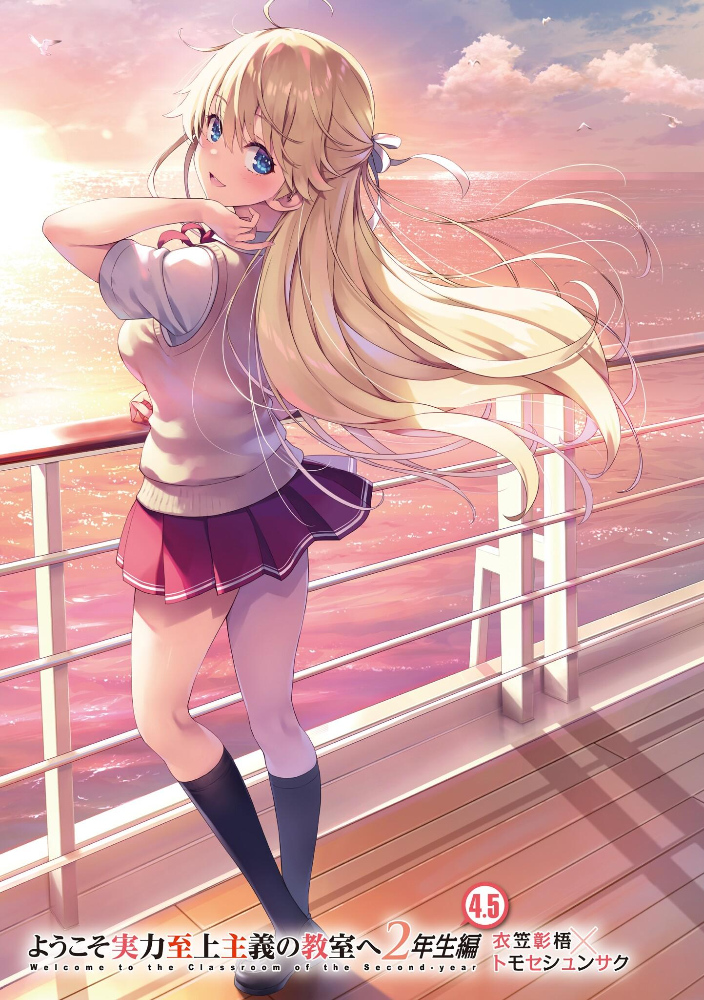
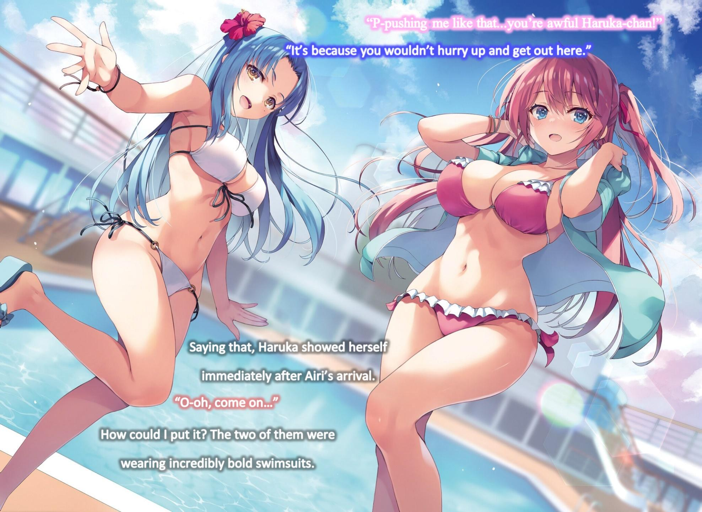
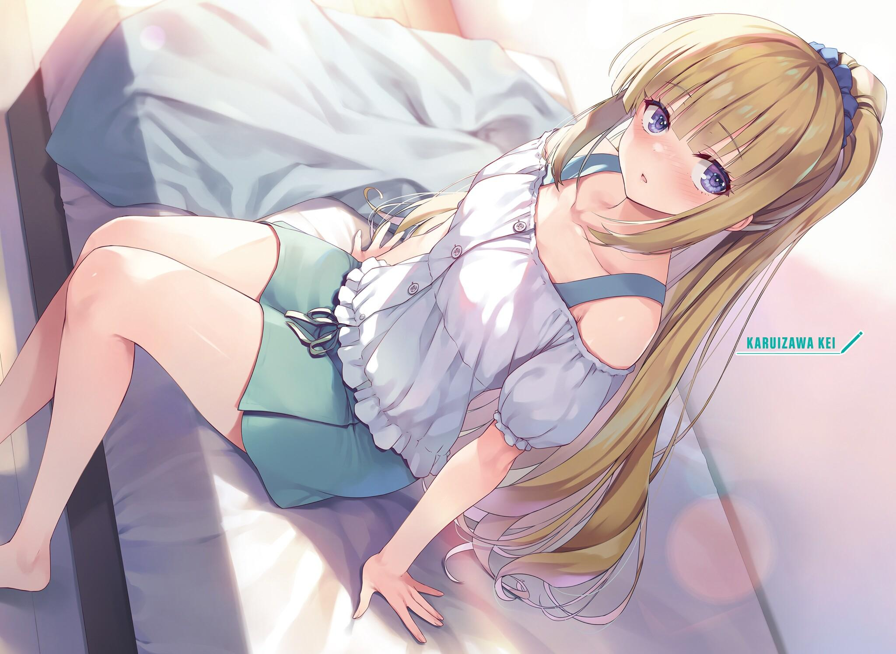
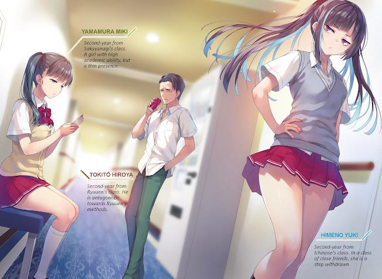
GLADHEIM
TRANSLATIONS
Youkoso Jitsuryoku Shijou Shugi no Kyoushitsu e - Segundo Año Volumen 4.5
EL COMIENZO DE UNAS AGRADABLES VACACIONES DE
VERANO
Los teléfonos nos fueron devueltos después de dos semanas. Al verlos de nuevo, muchos estudiantes se alegraron.
Para los que viven en la época actual, el teléfono es una herramienta indispensable. La proporción de personas de entre 10 y 20 años que tienen un smartphone a partir de 2020 supera el 99%. Mirando el mundo, eso es cierto más allá de toda duda.
Para mí, que sólo había empezado a tener un teléfono después de entrar en la preparatoria, todavía no está en mi lista de necesidades. Pero eso es sólo cuestión de tiempo.
El crucero de lujo surcó los mares con elegancia y permitió a los estudiantes disfrutar de unas breves vacaciones de verano.
Reflexionando sobre el año pasado, no he disfrutado realmente de las vacaciones de verano.
Personas a las que podía llamar amigos. Alguien que fuera mi pareja.
No sólo hasta el punto de ser conocidos, sino hasta el punto de poder llamarnos por nuestros nombres. El número de esos estudiantes al que me refería.
Sea cual sea la categoría, ese número es mucho mayor que el del año pasado, incomparablemente.
El tiempo pasado en este barco se convertirá en otra página de recuerdos inolvidables para mí y para los alumnos.
Estaba bien disfrutar de la piscina todo lo que uno quiera. También estaba bien degustar comida de lujo y charlar con los amigos en la cubierta con una amplia vista del océano. Pero eso no significa que estuviera bien hacer todo lo que uno quisiera.
Hay que disfrutar dentro de los límites de las normas establecidas.
Por ejemplo, después de las 10 de la noche, está prohibido salir de la habitación sin ninguna razón especial.
Por lo visto, las normas se han vuelto bastante más estrictas que el año pasado.
Estas circunstancias especiales incluyen las complicaciones de salud repentinas durante la noche.
En tal caso, la persona debe acudir a la consulta médica, que está abierta las 24
horas del día.
Probablemente no haya alumnos que infrinjan las normas, pero como en general se aplican castigos convenientemente severos, no debería aparecer ningún alumno problemático.
Además, los pisos a los que podían acceder los alumnos por la noche se decidieron previamente. No es que la gente pudiera ir a cualquier sitio que quiera. Incluso dentro de los pisos a los que pueden entrar, hay zonas a las que no pueden acceder.
Ahora, observemos moderación y disfrutemos del crucero durante una semana.
IKE Y KOMIYA
El día después de terminar el examen de la isla deshabitada, la mañana del 4 de agosto. Desde hoy hasta el 10 del mismo mes, los estudiantes tendrán 7 días de descanso en este lujoso crucero. Se prometió que no habría ningún tipo de examen especial, a diferencia del año pasado.
Dentro del barco hay una piscina, un gimnasio, un cine y una sala de conciertos.
Cerca de una cubierta de observación y de un gran baño público hay una zona de tiendas, una cafetería y otros establecimientos de comida, así como diversas instalaciones recreativas.
Es decir, que a partir de hoy tendremos el privilegio de disfrutar de todo ello a placer.
En este día tan esperado, si me preguntaran dónde estaba...
Estaba descansando en mi habitación. Se habían repartido a 4 estudiantes por cada una, y yo estaba descansando con mi teléfono en la mano.
No hay necesidad de apresurarse sólo porque el descanso ha llegado.
En realidad, ignorar todo y descansar durante todo el tiempo tampoco era una mala idea.
A diferencia de las duras camas del dormitorio, estas son de primera clase y envuelven suavemente mi cuerpo.
Por no hablar de que recién terminamos esa rigurosa prueba en la que tuvimos que dormir en tiendas de campaña. Esta sensación es aún más reconfortante.
Con eso, dejamos a un lado el primer día.
Con los resultados del examen de la isla deshabitada, aparecieron nuestros nuevos puntos de clase.
Normalmente, un día después del comienzo de cada nuevo mes, se mostraban los puntos de clase. Pero esta vez fue en medio de la prueba de la isla deshabitada, por lo que llegó irregularmente tarde, y después los resultados del examen especial fueron mostrados.
Para los estudiantes matriculados en esta escuela, cada nuevo mes comienza con una actualización de los puntos de la clase. Lo mismo ocurre con nuestras clasificaciones individuales, pero los puntos de clase se convierten en puntos privados. Eso significaba que están directamente relacionados con el dinero que se nos concederá durante el mes.
Si no hubiera dinero para utilizar libremente, las vacaciones en este crucero de lujo serían un gran desperdicio.
Puntos de clase del segundo año: Agosto
Clase A liderada por Sakayanagi 1206 puntos
Clase B liderada por Ichinose 578 puntos
Clase C liderada por Horikita 571 puntos
Clase D liderada por Ryuuen 551 puntos
Como resultado, nuestra clase se situó en la Clase C por un pequeño margen.
Tuvimos la oportunidad de llegar hasta la Clase B de golpe, pero desgraciadamente nos quedamos a un paso.
Pero en lugar de mirarlo con pesimismo, deberíamos verlo como un resultado excelente.
Sólo con el primer puesto, Kouenji ganó 300 puntos de clase.
Nos dieron a sentir el poder de ese número abrumador.
Hasta ahora la mayor parte de la clase lo veía intensamente como un lastre, pero ahora los que lo rodean no pueden evitar mirarlo de otra manera. Pero el tiempo que durará eso es incierto.
Como recompensa por obtener tantos puntos de clase, desde ahora hasta la graduación Kouenji ha ganado el derecho de 「Exención de Cooperación.」 Si este hecho se revelara públicamente, no habría tanta gente que se alegrara.
Aunque creo que todo está bien como está.
Si Kouenji no hubiera ganado 300 puntos, habríamos tenido que luchar con el temor de no poder alcanzar a las clases superiores.
Pero ahora que lo hizo, también nuestra moral recibirá un gran estímulo en comparación con otras clases.
Después, podremos pasar a la clase B, que actualmente es un poco mejor que nosotros. Entonces, si superamos a la clase de Sakayanagi en un enfrentamiento directo, podríamos empezar a recortar la distancia.
Lo mismo ocurre con la clase de Ryuuen, ahora la clase D.
No fueron capaces de meterse entre los 3 primeros ganadores de este examen en la isla deshabitada. No pueden hacer nada al ser superados en puntos de clase. Pero no hay nada que criticar sobre su fuerza. El hecho de que Katsuragi se incorpore a su clase, en la que hay dificultades académicas, eleva su nivel, pero también les da seguridad. Además, Ryuuen y Sakayanagi tienen algún tipo de acuerdo. Si eso tiene que ver con puntos privados o puntos de clase, o algo completamente fuera de mis expectativas, es difícil de adivinar por ahora. Puede que cambien las cosas a partir de ahora. Lejos de disminuir, las razones para preocuparse por ellos están aumentando. Llamarlos la clase más temible ahora mismo no sería un error. Que bajen a la Clase D es superficial. En realidad, es probable que no les importe para nada.
Por otro lado, la clase de Ichinose que volvió a ser la B no parece mala, mirando sólo los resultados.
Con el liderazgo de Sakayanagi, la clase de Ichinose, que estuvo cooperando con ella, fue capaz de ganar puntos de clase.
Pero no pueden bajar la guardia. La diferencia entre la Clase B y la Clase D es de unos míseros 27 puntos.
Con pequeñas conductas problemáticas que no fueron monitoreadas durante el examen especial, no sería extraño que sus lugares cambiaran para el 1 de septiembre. Se vieron forzados a tal situación. Dependiendo de los resultados del examen de la isla deshabitada, podrían hasta haber bajado a la clase D. Sólo por eso, Ichinose debe haber experimentado una gran ansiedad. No, ella debe estar muy nerviosa. A partir de aquí, por fin ha llegado el momento crítico, Ichinose.
En mi corazón, le envío esas palabras.
A partir de ahora, lo más probable es que los exámenes de todas las clases de todos los años de toda la escuela dejen de producirse.
Si ese es el caso, entonces 9 de cada 10 veces, el próximo examen será dividido por año escolar.
Si caen atrás tan fácilmente a C o D, el futuro de la clase de Ichinose será oscuro.
En otras palabras, la próxima pelea también determinará a dónde irán desde aquí...
La situación de nuestras tres clases. Aunque un poco simplificado, es así.
Finalmente, está la Clase A de Sakayanagi. Como siempre, no permiten que nadie se acerque. Con mucho margen de maniobra, esta vez también pudieron colarse en el tercer puesto y acumular puntos.
Individualmente
tienen
muchos
estudiantes
excelentes.
Sakayanagi
controlándolos tampoco se queda atrás.
Además, las estrategias que utiliza Sakayanagi son indudablemente eficaces y se ejecutan con maestría.
La inamovible Clase A está perfectamente capacitada para el liderazgo.
Nunca muestran nada parecido a una apertura, pero si la 「Clase de Horikita」
se vuelve todavía más vigorosa a partir de ahora, alcanzarlos definitivamente no es imposible. De hecho, no es como si no hubiera nada que pudiéramos aprovechar.
Por supuesto, hacia ese fin, será necesario que la Clase A sea perturbada por alguna razón.
Hacer expulsar a Sakayanagi sería el camino más corto. Pero ella tiene un punto de protección. Eliminarla sería extremadamente difícil. Aunque no tuviera un punto de protección, no será fácil lidiar con ella.
En lugar de aplastar la cabeza, puede ser más inteligente aplastar las piezas que actúan como manos y pies.
No se trataba de una o dos personas, sino de la exclusión de una serie de personas más allá de eso.
Por ejemplo, Kamuro, Hashimoto, Kitou y otros. Si ellos estuvieran ausentes o fueran incapaces de desenvolverse, eso ya sería suficiente para limitar en gran medida lo que Sakayanagi puede hacer. Con respecto a Kitou hay muchos puntos sin aclarar, pero los dos primeros conllevan varios problemas.
Ahora bien. Con esto, dejemos de analizar las otras clases por ahora.
Como oficialmente ya empezamos las vacaciones de verano, toda la escuela está en una tregua temporal.
A partir de ahora, como estudiantes, nos toca divertirnos todo lo que podamos.
Al menos durante un tiempo. Hasta el otro día nuestros bolsillos estaban vacíos, pero con el anuncio de los puntos de clase recibimos nuestros puntos privados para agosto. Nuestras carteras se han hinchado. Nuestra clase tiene 571 puntos de clase, lo que equivale a 57100 yenes en puntos privados, concedidos a todos.
Como no pude alcanzar una clasificación que me diera puntos privados
adicionales en el examen especial, no tengo ninguna bonificación, pero sigue siendo suficiente. Para pasar el tiempo en este crucero de lujo al máximo, no puedo prescindir de los puntos privados. Disfrutar de películas y probar la comida que me gusta requiere una cierta cantidad de puntos privados. El año pasado, todos los establecimientos del barco eran de uso gratuito. Así que hasta las normas sobre el dinero se han vuelto más estrictas. Por supuesto, si no tienes dinero también es posible encerrarte en tu habitación durante una semana y no te costaría nada, pero eso no sería diferente de quedarse en los dormitorios.
Piron. Sonó un bonito y corto ruido y llegó un correo electrónico.
En el teléfono que me devolvieron, recibí un mensaje que decía que durante sólo 2 días a partir de ahora, en el espacio de descanso al lado del gimnasio, se están mostrando los resultados detallados de la prueba de la isla deshabitada.
Puesto que se mostraban tanto los grupos superiores como los inferiores, la mayoría de los estudiantes estaban interesados.
Yo mismo quería comprobarlo para ver el futuro.
Sólo que habría sido más fácil enviar una imagen de los resultados a través del teléfono. ¿El hecho de no hacerlo significaba que no querían que los alumnos se llevaran los resultados a casa para analizarlos durante mucho tiempo?
Tsukishiro también se había movido entre bastidores. Esto podría ser una medida para asegurarse de que no quedaran pruebas de ello.
Más o menos quería verlo de inmediato. Pero como los estudiantes seguramente acudirían allí en gran número, podría ser más fácil esperar un poco.
Olvidando temporalmente los resultados del examen, envié un mensaje a Ichinose preguntándole si podía disponer de algo de tiempo para reunirse conmigo por la noche dentro de 3 días. Fue un mensaje sencillo.
Por supuesto, sería fácil para ella imaginar que se trata de mi respuesta a su repentina confesión en la isla deshabitada o algo similar.
Pensaba reunirme con ella lo antes posible para darle mi respuesta, pero el riguroso examen de la isla acaba de terminar. La dejaré recuperar su energía primero y pasar el tiempo con sus buenos amigos.
Como parecía que no lo había leído todavía, por ahora apagué la pantalla de mi teléfono.
Luego miré rápidamente lo que estaban haciendo mis 3 compañeros de habitación, Miyamoto Soushi, Hondou Ryoutarou y Miyake Akito.
―Oye Ryoutarou, están mostrando los resultados del examen. ¿Quieres ir a ver?
―No-... paso. Estoy todo golpeado así que no puedo caminar. Ahora mismo sólo quiero quedarme en la cama...
No era sólo que estuviera cansado. Acostado en esta cama, es completamente comprensible aunque ya no tenga ganas de moverse.
Incluyéndome a mí, todos estaban siendo atrapados por el encanto de las camas.
Hondou estaba especialmente agotado. Se giró débilmente hacia la izquierda, dándome la espalda.
―Llevas así desde ayer.
―Me moví como si fuera a morir el último día. Aunque sólo quería comer.
De espaldas a mí, se acurrucó en su futón hasta que le llegó a la cabeza.
De todos modos, parecía que por ahora sólo iba a dormir.
El viaje en el barco continuaría durante una semana. Recuperarse en lugar de apresurarse es una buena decisión.
―Miyake, Ayanokouji, ¿qué van a hacer? ¿No tienen curiosidad por las clasificaciones?
Akito dirigió su mirada hacia Miyamoto mientras jugaba con su teléfono.
―Estoy bien, ya que más o menos sabemos qué rango tenemos. Para ser sincero, ahora mismo creo que con poder evitar la expulsión es suficiente.
Quiero descansar por hoy, como Hondou.
No es difícil imaginar que Akito, en un grupo con Haruka y Airi, tenía que hacer muchas cosas como único chico. Probablemente, no sólo su cuerpo, sino incluso su espíritu, se vio afectado.
―Espera, estabas en el mismo grupo que Sakura y Hasebe, ¿verdad?
Miyamoto se sentó en su cama y le preguntó a Akito.
―¿Qué es esto tan repentino? Mi grupo estaba lleno de chicos, así que siempre apestaba a sudor y era como un infierno. Pero estar en un grupo lleno de chicas, ¿no era como el cielo?
―¿El cielo? Tenía tantas cosas de las que ocuparme que era como un infierno. Un grupo lleno de chicos definitivamente debió ser más fácil.
Como ambos tenían grupos diferentes, estaban llamando al otro celestial.
Al escuchar su conversación, me sentí sinceramente aliviado de no haber entrado en ningún grupo.
En una prueba como esa, mientras no pudiera conseguir un grupo con gente muy cercana sería mejor ir solo.
De todos modos, como ambos se negaron, los ojos de Miyamoto se centraron en mí.
A diferencia de Hondou y Akito, yo pude recuperar gran parte de mis fuerzas de la estancia en la isla deshabitada descansando en la cama. Todavía no estoy a pleno rendimiento, pero dar una vuelta por el barco no me vendría mal.
Es que podría ver los resultados de las pruebas más tarde. Además, aunque Akito no venga a verlo, otros miembros del grupo Ayanokouji podrían venir.
―Yo también descansaré hoy. Probablemente todos quieran ver las clasificaciones y no me gustan las multitudes.
Toc Toc Toc
Cuando intenté negarme como los otros 2, la puerta de nuestra habitación fue golpeada varias veces.
Fue extrañamente fuerte, como si algo inusual hubiera sucedido.
Akito, bien despierto, se apresuró a abrir la puerta. El que estaba detrás era Ishizaki.
El aire estaba tenso con la idea de que algo podría haber sucedido pero...
―¡Ayanokouji! ¡Vamos a ver los resultados del examen juntos!
Todos estábamos exasperados con esa sonrisa y mensaje anticlimáticos.
Akito se dio la vuelta y me miró con la voz contraída.
―No, yo...
―Qué diablos, estás libre de todos modos ¿no? Vamos.
Irrumpió en la habitación y me agarró del brazo mientras estaba sentado en la cama.
―¿Desde cuándo se llevan tan bien?
El más sorprendido era el que pasaba mucho tiempo conmigo todos los días, Akito. Ishizaki era el chico problemático de una clase rival. Era comprensible que fuera cauteloso.
Los otros dos se sorprendieron ante la aparición de Ishizaki y se fueron poniendo rígidos.
―Bueno, acaba de ocurrir.
No respondí más que eso, aunque no es que Akito pudiera entenderlo.
La presión en la sonrisa de Ishizaki se fortaleció, y decidí rechazarlo mientras tiraba de mí.
―Hoy estoy un poco cansado.
―¿Qué quieres decir con cansado? Eres tú, así que estás bien. ¿Vamos?
No se dio cuenta de lo que yo quería. Como si tuviera la intención de forzarme, no mostró señales de rendirse.
―...De acuerdo. Dame tiempo para cambiarme.
―¡Sí, entonces esperaré en el pasillo!
Tras recibir mi consentimiento, Ishizaki salió de la habitación.
―Siguió preguntando a pesar de que es molesto. Si algo va mal, dilo, ¿de acuerdo?
―Gracias Akito. Bueno, Ishizaki no es un mal tipo, así que está bien.
―No es un mal tipo, ¿eh? No tengo una buena impresión de él. Ryuuen podría estar moviendo algunos hilos entre bastidores. No estará de más tener cuidado.
Otro enfrentamiento con los delincuentes liderados por Ryuuen. Si no conoces la condición de esa clase, pensar en ese sentido es natural.
La persona conocida como Ishizaki es mala para ocultar cosas y no es alguien que pueda hacer estrategias. Pero si no lo sabes, puedes pensar que está siendo manipulado entre bastidores y que, por tanto, es un tipo peligroso. De todos modos, como ahora no estamos en un examen especial, podemos asumir que no es el caso.
Me puse el uniforme de la escuela, saludé ligeramente a Akito y abandoné la habitación. Parecía que sólo Ishizaki estaba esperando en el pasillo. No había nadie más.
―Vamos~
―No hay necesidad de ser tan apresurado, ¿verdad?
―¿Eh? ¿Por qué no?
―Aunque no nos demos prisa, los resultados de las pruebas van a estar hasta dentro de 2 días. Todavía podemos verlos más tarde, ¿verdad?
―Quiero verlos antes. Porque soy de los que ven una película nueva tan pronto como se estrena. No puedo esperar.
Aunque diga que es de ese tipo de personas, no es que lo entienda.
Me resulta un poco difícil imaginar a Ishizaki yendo felizmente a los cines el día del estreno.
― Hace poco también fui a ver 「 Dominación mundial 16」 el día de su estreno.
Es la primera vez que escucho ese título, pero definitivamente parece ser el tipo de título que implica armas y peleas. Aunque ser la 16ª película de su serie significa que es muy larga. Pero me pregunto por qué sólo escuchar el título me hace sentir completamente desinteresado en él.
―Me he estado preguntando en qué lugar quedó el grupo de Ryuuen-san.
De todos modos, Ishizaki debe tener muchos amigos dentro de su clase.
¿Realmente tenía que tomarse la molestia de invitarme a mí, de una clase diferente?
―¿Está bien no invitar a otras personas que pudieran tener curiosidad por eso como Ryuuen?
Indirectamente intenté buscar sus verdaderos motivos al preguntar eso.
―Ese tipo me llamaría si me necesitara. Que no me llame ahora significa que no me necesita, ¿no?
―Eso es muy directo.
―¿No lo es? Muchos otros, aparte de él, estaban cansados de la isla deshabitada, así que no quisieron venir.
Como Akito y los demás, hay muchos estudiantes que quieren descansar.
―Estás lleno de energía. ¿No estás cansado?
―¿Yo? Me recupero cuando duermo.
―De acuerdo.
Fue una respuesta inesperadamente simple pero directa. No es que fuera especialmente atlético, pero puede que se recupere más rápido que otros. Es
que me cuesta creer que a quien decidió acudir por proceso de eliminación resultara ser yo.
―Es fácil llamarte.
―... ¿De verdad?
Pasar tiempo con la gente definitivamente no era mi punto fuerte, así que eso fue un poco inesperado.
―Quiero decir, definitivamente es más fácil llamarte que a Kaneda.
No sé mucho sobre Kaneda, pero ser comparado con él me hace sentir algo complicado.
En el camino, pasamos por una tienda.
―¡Uoh, están vendiendo banderas nacionales!
Los ojos de Ishizaki brillaron. Tomó con entusiasmo las banderas de los países del mundo. No sabía por qué estaba tan emocionado, por lo que era una visión extraña. Ishizaki se frotó la parte inferior de la nariz con el dedo índice y respondió.
―No - cuando fuimos a la habitación de Albert antes era una colección de banderas nacionales. Supongo que eso debió ser lo que me despertó para coleccionarlas también.
Los intereses de alguien influyeron en otro y acabaron teniendo el mismo interés,
¿eh? Así que ahora ambos están interesados en coleccionar banderas raras.
―No conozco mucho a Albert, pero parece un buen tipo.
―Sí. Así es. Aunque nos peleamos un par de veces después de la inscripción, ahora los dos somos muy amigos.
Efectivamente, Ishizaki y Albert se ven juntos con relativa frecuencia.
―¿Así que se hicieron amigos de forma natural?
Sinceramente, puse admiración en mis palabras, pero la cara de Ishizaki se endureció ligeramente mientras caminaba a mi lado.
―Tampoco es eso. Porque no soy popular en clase.
―¿Es porque los dos están bajo el mando de Ryuuen?
―Me pregunto si hay alguna otra razón aparte de esa. Ya que se puso así justo después de que nos inscribiéramos. Pero después de que peleamos contigo en la azotea, derroté a Ryuuen y recuperé la clase. He estado saliendo con más gente que no conocía antes.
Después de decir eso se quedó callado. Como él dice, Ishizaki podría estar en una posición complicada. No son pocos los estudiantes que querían que Ryuuen fuera derribado, por lo que agradecieron a Ishizaki. Sin embargo, desde que volvió a estar a las órdenes de Ryuuen no pudo evitar la animosidad.
―Yo soy parte de la razón por la que sucedió.
―Ah, lo siento, lo dije de manera extraña. No te culpo para nada. Nosotros empezamos esa pelea. Es cierto que perdí más de un amigo, pero a cambio conseguí llevarme bien contigo, así que no me importa.
Ishizaki se volteó hacia mí y sonrió con fuerza. Pero vi que su sonrisa era frágil, conteniendo la preocupación.
―No creas que puedes resolver los problemas de una clase tú solo.
―Lo sé, lo sé. Los problemas de una clase los resuelve la clase. Ryuuen-san, también, volvió con eso en mente.
Ishizaki lo cree y lo sigue con todo lo que tiene.
PARTE 1
―Uoh, qué tipo.
Efectivamente, en el espacio cercano al gimnasio donde se exponían los resultados de los exámenes, muchos estudiantes habían formado una multitud.
Al lado del monitor había una etiqueta que decía "Está estrictamente prohibido tomar fotos" junto con dos adultos que observaban atentamente a los estudiantes. Seguramente estaban relacionados con Tsukishiro.
De una mirada, el monitor parecía estar mostrando las clasificaciones y sus respectivos puntos, desplazándose a través de ellas automáticamente.
Ahora mismo se mostraban los grupos entre el 50 y el 60º lugar, así como sus miembros.
―¿Hm...?
De repente sentí una inexplicable sensación de malestar en todo mi cuerpo.
¿Qué? No me enteré de la causa de inmediato. Era una sensación de malestar indescriptible.
―Pensé en tomarme mi tiempo para revisar los resultados, pero ahora parece que no podré concentrarme del todo.
Como si no lo sintiera, Ishizaki miró el monitor y murmuró con desagrado.
―No se puede evitar. Probablemente mucha gente quería ver los resultados específicos del examen de la isla deshabitada.
Ishizaki chasqueó la lengua con insatisfacción. Sin poder evitarlo, empezó a mirar los resultados desde donde estaba. Era audaz, pero como era de esperar, no dejaba de lado a los mayores.
El monitor se desplazaba solo, pero al parecer se podía detener su desplazamiento para mirar un lugar determinado. Alguien de tercer año lo hizo.
Era preocupante. Debido a eso Ishizaki no fue capaz de mirar los rangos superiores que quería ver.
―¿Qué vas a hacer?
A este ritmo, aunque esperemos un rato, la pantalla tardará en cambiar.
―Tengo curiosidad pero no presionemos. Podemos ver más tarde.
Eso es lo que dije hace unos minutos pero... bueno, está bien si lo entiendes tú mismo.
―Por cierto, ¿no notaste algo?
―¿Eh? ¿Qué?
Ishizaki, que estaba dando la vuelta, no parecía haber notado nada. Este aire antinatural. La cantidad de miradas que se dirigen hacia aquí.
No es algo que pueda achacar a mi imaginación. No es que Ishizaki no se diera cuenta porque fuera aburrido. Es porque estas miradas no están dirigidas a Ishizaki ni a ningún otro estudiante, sino sólo a mí. Obviamente no tenían ninguna intención de ocultarlo. Estaban observando todos mis movimientos.
Todos los que miraban tenían una cosa en común. Todos ellos eran estudiantes de tercer año. Todavía no conozco los detalles, pero no hay duda de que Nagumo tiene algo que ver con esto. Una de las cosas que había dejado para más tarde en la isla desierta ha empezado a moverse.
―¿Qué pasó?
Parece que Ishizaki se lo está preguntando hasta el punto de preocuparse.
―No, no es nada. Me parece que siguen llegando otros estudiantes, así que volvamos.
―Sí, vamos.
En todo caso puedo imaginar que están planeando algo, pero esto es un poco peligroso. Que Nagumo viniera e intentara algo por su cuenta era mucho más fácil. Está empezando algo contra mí.
―Oye, no has almorzado todavía, ¿verdad? Comamos juntos.
―¿Eh? Ah, todavía no comí...
Los de 3er año no hicieron ninguna señal de perseguirme mientras me iba.
Parece que se limitan a mirarme. Que me miren constantemente no se siente bien.
―Qué diablos, no te entiendo. ¿No quieres comer conmigo? Qué tipo tan grosero.
―No es eso. Estaba pensando en otra cosa.
Pensé en no involucrar a Ishizaki, pero si no me persiguen está bien.
―Pensar en otra cosa también es de mala educación.
Es como él dice. Olvidemos los 3º años por ahora.
―¿Estás bien conmigo?
―¿Te parece bien? Sólo vamos a comer.
No puedo negar que es bastante prepotente, pero nunca me molesta. No hay duda de que sólo me trata como a un amigo.
―Puede que haya dicho algo antes, pero no quiero llevarte a nuestra clase, así que no lo estoy intentando, ¿de acuerdo? Sólo eres un buen amigo.
Ishizaki dijo sin dudarlo algo que era irritante en cierto modo. Pero después de eso, como si se hubiera dado cuenta de algo se dio la vuelta con una sacudida.
―...¿Podría estar molestándote?
―En absoluto.
―¡Sí, claro que no!
Por un segundo pareció pensar que podría haber actuado de forma egoísta, pero Ishizaki sonrió despreocupadamente justo después. Comprendo que tiene ese tipo de personalidad.
Nunca se sintió malicioso, así que me quedo con Ishizaki. Justo después de salir de ese lugar escuchamos a alguien trotando detrás de nosotros.
―¡Ayanokouji-senpai!
Esos pasos pertenecían a quien me acompañó durante toda la primera mitad del examen de la isla deshabitada, Nanase.
―Tú también viniste a ver los resultados del examen.
―Sí. Aunque no parece que podamos verlos bien, así que renunciamos.
―¿Es cierto? Ahora mismo los de 3er año se han reunido y están manipulando el monitor, así que nosotros, los menores, no podremos mirarlo libremente durante un tiempo.
Parece que Nanase también quería ver los resultados detallados, pero había desistido. Ishizaki miró nuestra conversación con perplejidad. Ahora que lo pienso, nunca había conocido a Nanase.
―O - oi Ayanokouji. ¿Cuándo llegaste a conocer a una chica tan linda?
―Pasaron muchas cosas.
Sería extremadamente molesto explicar todo desde el principio, así que se lo dije en resumen.
―Oi, no vas a salir con alguien menor... ¿o sí?
―Estás sacando conclusiones precipitadas. Es sólo la relación entre un mayor y un menor.
Le contesté en este sentido. No pensé que Ishizaki estuviera muy interesado en cosas inusuales, pero parece que no es el caso.
―¿Necesitas algo?
―No, después de verte te llamé sin querer ―Con ojos honestos y brillantes y sin dudar, dijo algo un tanto embarazoso―. Siento haberte molestado. Por favor, discúlpame.
Me pareció que se acercó trotando. También se dirigió a otro lugar trotando. No creí que estuviera bien correr a bordo o en los pasillos, pero su velocidad era apenas segura.
―Qué chica tan linda. Uh, eso es muy... ya sabes.
Lo siento, pero permíteme ignorar esa parte de "ya sabes".
―¿De verdad no vas a salir con ella?
―No, de verdad.
Causar torpemente un malentendido y hacer esto más largo de lo necesario también sería molesto. Por eso, negué rotundamente lo que Ishizaki estaba diciendo una vez más, a modo de recordatorio.
PARTE 2
Después de terminar la comida con Ishizaki y volver a mi habitación, Ike me estaba esperando en la puerta. Miraba su teléfono con inquietud. Cuando levantó la cabeza y miró a su alrededor, nuestros ojos se encontraron.
―¡Oh, Ayanokouji! Menos mal, te estaba esperando.
¿Es Ike? Una vez más, esto está fuera de mis expectativas.
―El caso es que pensé en visitar a Komiya, pero tú te cruzaste en mi mente.
―¿En serio?
Ike se acercó y se veía que me pedía que le prestara atención, así que me incliné.
―¿Cómo debo decirlo...? Se me hace un poco raro visitarlo solo.
―¿Por qué?
―Por qué... Es que empecé a salir con Shinohara. Cuando el examen terminó y nos dirigíamos al barco, estábamos juntos a solas, y...
Parece que se confesó y obtuvo el visto bueno de Shinohara. No estaba seguro de si iban a progresar, pero han superado mis expectativas.
―¿Es así? Felicidades.
Cuando le di honestamente mi bendición, desvió la mirada avergonzado.
―Gr-gracias. Pero... desde la perspectiva de Komiya, eso podría haber sido deshonesto.
―No lo creo.
―No, como si no fuera justo... como si tuviera ventaja.
En efecto, Komiya se lesionó y se vio obligado a retirarse enseguida. No es que no se pueda decir que tuvo ventaja, pero eso es algo que se podría decir de
cualquiera. El mismo Komiya parecía estar en la fase de confesión en la isla deshabitada.
―Realmente pensé que lo haría después de que Komiya mejorara, ¿sabes?
Pero, estaba tan aliviado de que el examen terminara, y Shinohara estaba a mi lado... y realmente sentí que no quería dársela a Komiya...
Parece que eso lo hizo confesarse.
Por supuesto, también existía el riesgo de que fuera rechazado. Si eso sucedía Komiya se acercaría a Shinohara, y su relación se volvería extremadamente incómoda en el futuro.
―Así que pensé que debía decírselo a Komiya. Si él también quería confesarse, las cosas podrían complicarse.
―Si no lo haces primero y resulta que Shinohara realmente prefiere a Komiya, sería un problema.
―U...! ¿¡Por qué...!?
Ike se quedó muy sorprendido y se estremeció. Al otro lado de querer informarle estaba la necesidad de impedir que Komiya se confesara, ¿eh?
―¿Tienes la determinación de recibir un golpe?
―¿¡Eeh!? ¿¡Me van a golpear!?
―Si la chica que te gusta fuera robada, harías algo así ¿no?
―...Gulp.
Como si lo hubiera imaginado y se hubiera asustado, Ike mostró miedo.
Definitivamente Komiya no tenía una gran complexión, pero no había estado jugando al baloncesto sólo para aparentar. Por otro lado Ike tenía una complexión pequeña para un hombre. Tenían una considerable diferencia de tamaño.
―Bueno, sus piernas están lesionadas en este momento, por lo que su juego de pies no será estable. Probablemente no será tan doloroso.
―Ese-ese no es el problema... Yo-yo... estoy listo.
Se veía decidido hasta cierto punto. Si ese era el caso, no tenía ninguna razón para interferir. He sentido curiosidad por la condición de Komiya, así que es una gran oportunidad.
―Parece que Komiya sigue en la enfermería.
―Si estuviera su habitación podría haberle ocurrido algo grave.
Aunque haya descansado en la enfermería la mayor parte de la semana no sería de extrañar. Llegué con Ike a la oficina médica. Ike respiró profundamente para calmarse. Nada cambiará si se apresura, así que esperamos pacientemente.
Una fuerte carcajada sonó desde el interior.
―¿Qué pasa? Entra.
Ike, sorprendido por la inesperada risa, entró en la habitación con un nivel de preparación moderado. Komiya, sentado, estaba rodeado por varios de sus compañeros, entre ellos Ryuuen.
Albert, Kaneda, Kondou y Yamawaki. 4 personas. Como aparecieron personas ajenas a su clase, Ryuuen se levantó sin escatimar ni una mirada.
―Adiós Komiya.
Al terminar la charla, Ryuuen salió de la habitación con sus compañeros.
Eché una rápida mirada hacia la dirección de Ryuuen, pero no miró especialmente hacia aquí.
―Aterrador como siempre Ryuuen... Quiero decir, ¿para qué estaban aquí?
Al no poder ver a Ryuuen directamente desde donde estaba, Ike bajó la mirada y murmuró. Komiya escuchó eso y entendió, asintió y respondió.
―Bueno, son intensos. Por lo que pude ver, más o menos vinieron de visita.
Ahora que lo menciona, en la mesa cerca de la cabecera de la cama había algunos dulces y jugos que podrían haber sido de ellos.
―A-una visita ¿eh? ... Él, como que, no parece del tipo que hace eso.
Ike expresó honestamente lo que sentía y Komiya respondió.
―Si hubiera sido por estas alturas del año pasado, habría sido impensable
―Recordando el año pasado, Komiya esbozó una sonrisa nostálgica―. Pero, Ryuuen-san cambió un poco, ya sabes. Se ablandó... no, no lo hizo, pero...
Desconcertado por algo pero feliz, Komiya habló. Justo después de la inscripción, Ryuuen dominaba su clase. El usaba y desechaba a cualquiera sin piedad. Aunque la mayoría de sus compañeros de clase lo rechazaran no hubiera sido de extrañar.
―Pero ahora siento que ese tipo puede ser más suave.
―¿Ryuuen puede? ...no lo entiendo-
Aunque lo oyera Ike no era capaz de entenderlo del todo. Su cuerpo temblaba mucho.
―De todos modos, los dos, vengan a sentarse.
Komiya nos dio una cálida bienvenida a los de otra clase y nos animó a sentarnos sin reservas. Haciéndole caso, nos sentamos en nuestras sillas.
―Parece que están bien.
Miré las piernas de Komiya que estaban fijas en su sitio y comprobé su condición.
―Como pueden ver, estoy lleno de vida al margen de mis piernas. Pero cuando pienso que todo el mundo está jugando fuera de esa puerta es frustrante.
Quiero mejorar pronto.
―¿Cuándo podrás volver a caminar?
―Ahora mismo estoy pidiendo permiso para caminar con una muleta.
Son rivales extraños, pero en contra de mis expectativas pueden hablar aunque sea solos. Tal vez venir aquí fue un poco innecesario.
―Pero... estoy un poco preocupado.
―¿Preocupado? ¿Por qué?
Ike estaba sentado con su silla al revés. Colocó sus brazos en el respaldo de la silla y le preguntó a Komiya.
―Ryuuen-san, parece que quiere localizar a quien me empujó. Me ha preguntado si recuerdo algo y cosas así. Tal como le dije a Ayanokouji, no tengo ningún recuerdo de haber sido atacado.
Es poco probable que sus recuerdos de entonces sean erróneos.
En este momento la clase de Ryuuen se está volviendo más vigorosa cada día.
Deberían centrarse en las peleas de 2º año y aspirar a la clase A. Por supuesto, nuestra clase es igual. Pero esta vez no deberían meter las narices.
Si Amasawa, o alguien más de la Habitación Blanca, o alguien relacionado con Tsukishiro participara en ello, no hay garantía de que ni siquiera Ryuuen esté a salvo.
―Sin embargo, Ryuuen-san no debería exagerar.
―Parece que va a golpear al culpable hasta dejarlo medio muerto.
Desde sus perspectivas, se imaginan que Ryuuen acabe con ellos. Más bien es natural que se preocupen más por el culpable.
―¿Entonces? No han venido aquí sólo de visita, ¿verdad?
Komiya adivinó que había algo y le preguntó a Ike. En ese instante, el cuerpo de Ike se puso rígido por la sorpresa.
―Ah-no... eso es...
Como si aún no estuviera emocionalmente preparado, se quedó mudo. Viendo eso, Komiya esperó seriamente sus palabras, sin apresurarlo. Ocasionalmente, se pueden percibir cambios instantáneos en la atmósfera de un lugar. De la atmósfera relajada de hace un rato no quedaban ni fragmentos.
―...Yo... cómo decir esto... quiero decir...
El locuaz Ike se encogió, ya no podía hablar bien.
―Ike. No sé lo que vas a decir, pero si es algo importante, mírame a los ojos cuando lo digas.
Seguramente adivinó lo que iba a decir. A pesar de ello, Komiya fingió no saberlo e instó a Ike a decirlo claramente. Es probable que Ike no se diera cuenta de que Komiya lo había adivinado, pero es posible que sintiera algo como colega masculino. Sentía que no era algo para decir con debilidad.
Se abofeteó las mejillas y abrió los ojos con fuerza.
―¡Me confesé con Shinohara!
Ike, endureciendo su determinación, pronunció palabras claras con voz fuerte.
Se hizo el silencio. Supe que Ike tragó fuerte a mi lado.
―¿Y? ¿Qué dijo Satsuki?
―En realidad dijo que sí. Ahora estamos saliendo.
―De verdad...
Komiya dio una respuesta corta. Ike continuó mirando su cara, sin apartar la mirada. Aunque ya lo habíamos hablado antes, ya que parece que tomó ventaja, aunque Komiya se queje no habrá nada que podamos hacer.
No era improbable que golpeara a Ike de improviso. Daba la impresión de que eso era lo que estaba pensando.
―¿Pensabas que te iba a pegar?
―¿Eh?
―'Puede que me peguen'. Estás poniendo esa cara.
―Eso es... bueno, sólo un poco.
―En serio, entonces te has decidido. No puedo moverme ahora mismo así que ven aquí.
Komiya le ordenó que se acercara. No pude ver su verdadera intención por su expresión facial. Pero por su intensidad, parece que Ike se decidió. Incluso con
miedo, fue al lado de Komiya. Entonces la mano derecha de Komiya se extendió y agarró el hombro de Ike.
―¡…!
Komiya empujó su cuerpo dolorido hasta el límite y miró a Ike a los ojos.
―No te reconoceré si haces llorar a Satsuki.
Golpeando ligeramente su puño izquierdo en la zona del pecho de Ike, lo empujó y dijo eso.
―¿Ko-Komiya...?
El rostro espantoso de Komiya se transformó en una sonrisa.
―¿Qué pasa? No te pongas tan triste. Satsuki te eligió a ti. Eso es todo,
¿verdad?
―Pero... si no te hubieran herido, podría haber sido lo contrario...
―Lo siento, pero no lo creo. Satsuki ha estado interesada en ti desde antes. Por eso dijo honestamente que sí. No creo que hayas ganado porque fuiste antes. Pero...
―¿Pero?
―Si no te hubieras enfrentado a Satsuki y hubieras seguido huyendo, entonces yo también podría haber tenido una oportunidad.
Es como dice Komiya. Quien confesara primero o último no era tan importante.
Ocurrió un accidente que le causó una gran herida. Resulta que Ike estaba allí, así que se sintió involucrado y eso se convirtió en un gran empujón, que le permitió salir con Shinohara.
Sin duda, esa fue la mayor razón por la que decidieron salir. Komiya estaba herido e Ike había estado allí en ese momento. Si cualquiera de ellos hubiera llegado a un destino diferente, el que estuviera al lado de Shinohara pudo haber sido Komiya.
―En ese sentido, no tuve suerte con esta lesión.
Su amor no se realizó, pero Komiya lucía alegre.
―Gracias, Komiya.
―Estudia mucho, ¿de acuerdo? Satsuki... no, los amigos de Shinohara también se han preocupado.
―...Bien. Después de todo, no podemos ser expulsados.
Esta aventura amorosa podría haberse convertido en un punto de inflexión muy importante para Ike. Al igual que Sudou, para sí mismo y para la chica que le gusta, fue capaz de ganar la oportunidad de luchar duro.
Por ahora, Komiya aceptó el informe de Ike y su conversación se calmó.
―Lo siento Ike, ¿pero puedes dejar que Ayanokouji y yo hablemos a solas?
Quiero verificar algo sobre mi lesión.
―Entendido. Nos vemos Komiya. Ayanokouji.
Ike se despidió de nosotros y salió directamente de la habitación. Cuando nos quedamos solos se rompió el hielo.
―Lo siento. ¿Ike te pidió que vinieras a ayudarle?
―No, también tenía curiosidad por saber cómo estabas. Terminé por entrometerme.
―Nada de eso. De todos modos... hay algo que no entiendo muy bien.
―¿Hm?
―Tú y yo estamos en clases diferentes y se supone que debemos pelear, pero ahora podemos hablar normalmente. Como que nuestras hostilidades se han desvanecido. Aunque el año pasado fuimos extremadamente brutales.
Originalmente, si tu clase era diferente, la otra persona sería alguien a quien tenías que derrotar, alguien a quien tenías que derribar. Excepto si era parte de un plan, nunca hubo muchos beneficios por llevarse bien.
―El examen de la isla deshabitada fue una pelea entre años escolares.
Además, llevamos mucho tiempo en la misma escuela. ¿No es eso todo?
―Hm, tal vez.
―¿Y? ¿Qué pasa con tu lesión?
Esta charla debería ser una discusión sobre las cosas que han pasado antes.
Antes de eso debería haber un tema principal.
―Hablé un poco de ello hace un momento, pero es sobre Ryuuen-san.
―Dijiste que era como si estuviera buscando al culpable.
―Me opongo. Francamente, quiero que este incidente se escriba como un error mío.
―Pero Shinohara vio al que te atacó con sus propios ojos.
―Lo sé. Pero como que estoy teniendo un mal presagio, como que esto no va a terminar bien.
Podría sentir en su piel que es peligroso precisamente porque fue atacado.
―Incluso un poco está bien, ¿podrías vigilarlo Ayanokouji?
―Aunque no creo que pueda hacer nada.
―No te digo que los acompañes directamente. Si sientes que algo va mal entonces dímelo por favor.
Komiya confió en mí con una fuerte luz en sus ojos.
Intercambiamos las direcciones de contacto oficialmente para poder contactarnos en cualquier momento.
―De acuerdo, por ahora me dedicaré a mejorar aunque sea un día antes.
Descansar es el único atajo para la recuperación.
―Gracias. Así es, si te parece bien por favor dales las gracias de mi parte, a los otros que me ayudaron.
―Creo que se alegrarán de oírlo. Puede que estén con Ike y Shinohara.
―Por favor. Después de todo, si los veo siendo cariñosos podría llorar.
Komiya esbozó una amarga sonrisa. Está más dolido de lo que parece. Mi pequeña burla fracasó.
De todos modos, no es suficiente para justificar que se haya herido, pero siento que la distancia entre Komiya y yo ha disminuido, aunque sólo un poco.
―Nos vemos, Ayanokouji.
―Sí.
Después de despedirme y salir de la enfermería, de repente me sentí extraño.
Mis compañeros de clase, Ike y Sudou, y los de otra clase, Ishizaki y Komiya.
Aunque poco a poco, el número de personas que me rodean a las que puedo llamar amigos ha empezado a aumentar.
No he estado tratando de hacer amigos específicamente, pero este ha sido el resultado.
―La forma de hacer amigos no es algo que se pueda poner en los libros de texto.
Con ridícula honestidad, pensé en eso.
EL COMIENZO DE UNAS VACACIONES FUGACES
Para muchos estudiantes, la vida en una isla deshabitada debió de parecerles muy larga. En cambio, un día en un crucero de lujo pasa en un instante, como un destello de luz. ¿Por qué el flujo del tiempo se siente tan diferente en el lapso de las mismas 24 horas?
Lo más probable es que sea porque uno no piensa mucho en el tiempo en un día normal. Yo suelo pensar en el tiempo durante mi vida escolar normal y los exámenes especiales. En cambio, en las vacaciones no suelo pensar en el tiempo, así que la diferencia es evidente.
Hoy es el segundo día de esta situación vacacional. Quizás por fin el cansancio de muchos estudiantes empezó a desaparecer y comenzaron a disfrutar de sus vacaciones realmente, ya que el número de estudiantes que pasaban por los pasillos del barco es cada vez mayor.
Incluso alguien como yo, que pasa la mayor parte del tiempo solo, recibió de una persona bastante inesperada un correo invitándome a jugar. Es del vicepresidente Kiriyama, de la clase B de 3er año.
La invitación es para quedar en la piscina, pero me pregunto si el objetivo es meterse en un aro flotador y charlar con gracia o incluso jugar un poco de voleibol de playa para profundizar en nuestra amistad.
Inmediatamente deseché esas ideas irreales. Puede que me hayan llamado a la zona de la piscina, pero eso no significa que tenga nada que ver con la piscina en sí. Por supuesto que podría negarme a ir. O incluso ignorarlo.
De todos modos, dependiendo de la situación, la convocatoria podría ser a un lugar más desagradable que éste. Respondí brevemente "sí" y prometí estar allí a la hora señalada, decidiendo que sería menos perjudicial para mí que me convocaran solo en este momento.
Además, sentí que también había una buena oportunidad de resolver el misterio de las incesantes miradas que sentí ayer por parte de los estudiantes de tercer año.
―Kiriyama, ¿eh?
Ahora mismo me encuentro en la zona de descanso del gimnasio. Estaba frente al monitor donde se mostraban los resultados del examen especial. Muchos de los estudiantes ya habían terminado de comprobar los resultados de sus exámenes, y ahora estaba solo.
El número de profesores que controlaban los resultados de los exámenes también se había reducido a uno. Los resultados de los exámenes se me habían metido en la cabeza, pero cuando volví a deslizar los resultados de los mejores alumnos en la pantalla, me centré en los resultados del grupo de Kiriyama.
La clasificación general fue anunciada frente a todo el alumnado, con el 1er lugar ocupado por el grupo independiente de Kouenji Rokusuke, el grupo de Nagumo Miyabi en 2do lugar, y el grupo de Sakayanagi en 3er lugar.
Sin embargo, el 4º puesto fue para el grupo de Kiriyama con 255 puntos, a sólo 6 puntos del podio, lo que significa que Sakayanagi fue la última en llegar a los tres primeros puestos.
Naturalmente, para los estudiantes de tercer año fue un resultado decepcionante.
Nagumo se quedó sin el primer puesto y Kiriyama no alcanzó el podio. Además, todos los expulsados fueron estudiantes de tercer año, por lo que la situación es bastante inusual.
Como todavía tenía unos 20 minutos antes de mi cita, decidí ir primero a la piscina. También fue para confirmar que la mirada no era sólo yo siendo acomplejado, sino que era algún tipo de estrategia en acción. La respuesta se hizo evidente de inmediato, sin necesidad de una lenta observación y perspicacia.
A las pocas decenas de segundos de mi aparición en la piscina, me estaban mirando un número indeterminado de estudiantes de tercer año que se encontraban en todos los rincones de la zona.
Los alumnos que estaban absortos en los chismorreos, los que estaban nadando, todos se dieron cuenta de mi presencia y empezaron a observarme atentamente. La línea de visión que sentí ayer no era una simple coincidencia.
―Es demasiado pronto para probarlo.
De hecho, fue tan incómodo que me dieron ganas de quejarme como una idiota.
Se suponía que yo debía ser eclipsado por el gran número de estudiantes aquí presentes. Más bien era yo quien destacaba más que ninguno de ellos.
Aunque traté de no pensar en ello, naturalmente terminé tratando de averiguar la razón detrás de esta situación. Lo más probable es que fuera una orden de Nagumo, pero en este momento no tengo ni idea de qué se trata.
Había muchos estudiantes que me miraban con descaro, pero yo seguí fingiendo que no me daba cuenta de nada. Era más fácil fingir ser una persona densa y estúpida.
Sin embargo, puedo imaginarme fácilmente que Nagumo asumirá que soy consciente de las extrañas miradas. No es de extrañar que disfrute viéndome como el centro de atención.
De todos modos, lo mejor por ahora es ignorar las miradas y seguir adelante. Al mirar alrededor de la piscina para ver quién más estaba allí, vi a Ichinose y a algunos de sus compañeros.
Dio la casualidad de que Ichinose fue la primera en percatarse de mi presencia y nuestras miradas se cruzaron. Sus hombros se sacudieron una vez y se escondió entre las sombras de sus compañeros, como si quisiera escapar.
Sus compañeros la llamaron, preguntándose qué pasaba con su repentino cambio de comportamiento. Después de la confesión de Ichinose en la isla desierta, simplemente mirándonos a distancia, es comprensible que se sienta incómoda.
Si fuera sólo Ichinose sería otro tema, pero como sus compañeros de clase también están aquí, mantengamos la distancia por ahora. Además, ya concerté una cita para encontrarme con ella pasado mañana por la noche.
Vi a algunos de mis compañeros de clase presentes por aquí, pero desgraciadamente no pude encontrar a ningún alumno especialmente cercano a mí.
―Parece que te metiste en un montón de problemas, Ayanokouji-kun.
Cuando dirigí mi mirada hacia quien me llamó, pude ver la figura de Kiryuuin Fuuka apoyada en la silla playera que estaba un poco delante de mí.
―¿De qué estás hablando?
―De los estudiantes de tercer año. No es que no te hayas dado cuenta,
¿verdad?
―No lo entiendo del todo ―dije mientras intentaba hacerme el tímido, pero Kiryuuin continuó sin siquiera soltar una risita.
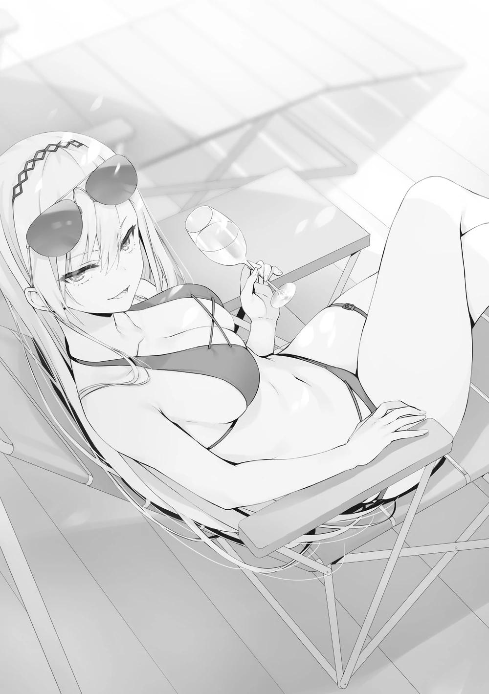
―Aunque no esté involucrada, sigo siendo una estudiante de tercer año.
Ya me enteré de la noticia.
―¿Te refieres a la forma en que todos me miran?
―Entonces sí sabes de lo que estoy hablando.
―No es para tanto. Me están mirando, eso es todo.
―Eso es todo, ¿eh?
Traté de hacer ver que no me importaba. Pero eso no es el caso, es lo que ella está tratando de decir.
―Me parece que es una de las estrategias más aterradoras...
Especialmente para el tipo de persona como tú, será muy problemático.
Aunque lo diga sin entusiasmo, no está del todo equivocada.
―Como se esperaba del presidente del consejo estudiantil. Jugó una carta extraña pero efectiva contra el perfectamente impecable tú.
―'Perfectamente impecable' es una sobreestimación.
―No seas modesto. He pasado por la línea de la muerte contigo al menos una vez, y sé que tienes capacidades ilimitadas. ¿No es así?
Los ojos que se escondían bajo esas gafas de sol me atravesaron con fuerza.
Aunque siguiera negándolo, hay muchos estudiantes en los alrededores y no se sabe cuándo alguien podría escuchar nuestra conversación.
Estoy seguro de que Kiryuuin ha tenido en cuenta ese entorno.
―De acuerdo, lo admitiré por el momento.
―Fufu~, está bien. Volviendo a la historia, ¿pasó algo con Nagumo en la etapa final del examen? No hubo control sobre los estudiantes de tercer año para el final del examen de la isla desierta, ¿sabes?
―Es frustrante que no pueda decir que no tengo ningún rencor...
Kiryuuin, que había estado manteniendo una postura relajada hasta, se sentó ligeramente.
―En términos de fuerza individual, el hombre llamado Nagumo Miyabi es uno de los mejores de esta escuela. Capacidad académica A, capacidad física A, capacidad de pensamiento crítico A+, contribución social A+. Totalmente impecable.
―Lo sé. Cuando se trata de la OAA, es de lejos el número uno en todo el año escolar.
Hay bastantes estudiantes que tienen A + en una habilidad, como Sudou y Kiryuuin. Sin embargo, Nagumo es el único estudiante que ha recibido todos los A o más, y el número de estudiantes que han recibido dos o más A+ es extremadamente limitado.
―Con su gran capacidad académica, su fuerza física, su carisma y su éxito como presidente del consejo estudiantil, Nagumo nunca ha tenido un oponente entre sus compañeros. La única persona de la escuela a la que se le reconocía la misma capacidad era Horikita Manabu, pero ahora que se graduó, también se ha ido.
Kiryuuin tomó aire y recogió el vaso que había sobre la mesa.
―Estoy segura de que no eras más que un juguete para Nagumo. Pero ahora parece que algo que ocurrió durante el examen de la isla desierta ha provocado que te tome en serio.
―Sería mejor que me dejara en paz.
―Si ese es el caso, entonces tomó una mala decisión en algún momento.
No sé qué hacer con esto.
―Probablemente hay pocas personas que puedan vencerte en un mano a mano. Yo misma soy una peleadora hábil, pero si hay un tipo al que no puedo vencer, probablemente sea Ayanokouji. Pero si hablamos de Nagumo, es totalmente diferente. Creo que es el tipo de hombre que no te gusta. ¿Estoy en lo cierto?
―Supongo que ya no puedo negar esa posibilidad, ¿verdad? Juzgué mal la esencia del asunto.
Se quedaron mirándome. No me había dado cuenta de lo estresante y desagradable que podía ser. Incluso en la Habitación Blanca, siempre hubo ojos mirando, pero esto era algo totalmente distinto.
En otras palabras, me estaban obligando a entrar en un entorno que nunca había experimentado en mi vida. La única manera de escapar de esto es permanecer en el interior, pero eso tampoco es una solución práctica.
―Supongo que sí. Nagumo tiende a preferir los movimientos llamativos, las formas de ganar y el uno contra uno. Pero cuando se trata de ganar con seguridad, utilizará cualquier estrategia que pueda. Incluso si significa movilizar a todo el tercer grado. Incluso si significa utilizar técnicas deshonestas, su prioridad al final es ganar.
Así que el hecho de conseguir que un montón de gente me mire es sólo el principio.
―Lo siento, pero no puedo ayudarte con esto.
Diciendo eso, se puso las gafas de sol en la frente.
―Nunca dije que quisiera confiar en ti.
Kiryuin se niega a colaborar, como si quisiera adelantarse a mí.
―He sido libre de hacer lo que me plazca durante los últimos tres años, pero... tengo algunos remordimientos sobre mi vida escolar. Si esta escuela tuviera un sistema de retención de clases original, tal vez hubiera querido considerarlo.
El término "retención" se utiliza para describir el fracaso repetido de un estudiante para pasar al siguiente grado. En otras palabras, se trata de un año perdido.
―Ahí estás, Ayanokouji.
Mientras Kiryuuin y yo seguíamos hablando, el vicepresidente Kiriyama apareció solo. Kiriyama, que siempre tenía una impresión seria, parecía haber llegado mucho antes de lo prometido.
Echó una mirada a Kiryuuin, que se relajaba a su lado, y luego volvió a mirarme.
―Tenemos un rato antes de empezar, si no te importa. Este lugar es malo, movámonos.
―No quieres que escuche su charla, ¿es esa la razón, Kiriyama?
Kiryuuin dijo que no podía ayudarme, pero parece que sigue interesada en saber.
Se pone las gafas de sol sobre la frente una vez más.
―Simplemente atrae demasiada atención. Si puedo, prefiero hablar en un lugar tranquilo.
La piscina es el lugar más popular, y muchos estudiantes se encuentran allí. Por alguna razón, sólo el asiento al lado de Kiryuuin está vacío, pero supongo que no necesito profundizar en ese punto. ¿Tal vez es incómodo para sentarse?
―Es curioso lo que dices: atraer demasiada atención. Te estás contradiciendo, Kiriyama.
―¿Qué?
―Si quieres hablar en un lugar tranquilo, no tiene sentido quedar en una piscina donde habrá mucha gente. ¿No es así?
―¿Así que querías que te dijera desde el principio que no quiero hablar contigo porque eres muy deprimente?
Kiriyama escupió eso después de que Kiryuuin lo pinchara. La expresión de su rostro estaba completamente muerta y carente de emoción. Estoy seguro de que te alegrará saber que no soy el único que tiene un problema con eso.
―Estoy seguro de que podrás entender por qué. Siempre que se inicia una conversación, ésta gira en torno a Kiryuuin.
Era la forma que tenía Kiriyama de escapar de la situación, pero también hacía que Kiryuuin se entrometiera.
―De todos modos, ¿puedes decirme de qué se va a hablar?
―No. Me niego. No es asunto tuyo.
―¿No es de mi incumbencia? ¿Cómo puedes estar tan seguro de que no es asunto mío?
―¿Qué quieres decir?
―Ayanokouji y yo tenemos una relación hombre-mujer. Si ese fuera el caso, ¿podrías decir que no estamos relacionados?
¿Qué? Antes de que se produjera esa reacción, Kiriyama nos miró a mí y a Kiryuin alternativamente.
―Eh, eso es una broma, Kiriyama. Eres un hombre aburrido, pero tu reacción a veces puede ser interesante.
Kiriyama pareció indignarse y molestarse cuando vio a Kiryuuin reírse alegremente. Él comenzó a alejarse sin decir una palabra. Si dejas a una mujer así sola, te seguirá inmediatamente después.
―No puedo ignorarlo, así que lo siento por esto.
―Por favor, dale mis saludos a Kiriyama.
Oh, por favor, dame un respiro. Estoy seguro de que no quiere escuchar el nombre Kiruyuuin porque si lo quisiera, todavía estaría aquí.
Seguí a Kiriyama, que iba por delante de mí, hasta la cubierta de un piso más arriba, con vistas a la piscina. Era un lugar relativamente tranquilo, con muchos estudiantes tomando el sol o durmiendo la siesta.
A pesar de que no había un buen número de estudiantes reunidos aquí, las conversaciones todavía podían ser llamativas. Sin embargo, no había ni un solo estudiante de tercer año a la vista, lo que sugería que Kiriyama había despejado la zona de gente.
En ese sentido, a los estudiantes de primer y segundo año no les importará que hable con Kiriyama. La otra ventaja es que no hay nadie esperándonos ni la
posibilidad de tropezar con otros y se trata de una conversación individual con Kiriyama. Entonces, ¿por qué molestarse en llamarme?
―Entonces, ¿por qué me llamaste hasta aquí?
―No lo diré de forma indirecta. ¿Qué le hiciste a Nagumo en el último día del examen de la isla deshabitada?
―¿Qué quieres decir?
―No te hagas el tonto. Es obvio que estás involucrado en los resultados del examen de la isla deshabitada.
El último día de la prueba de la isla deshabitada, cuando Nagumo y yo nos enfrentamos, escuché por el walkie-talkie que estaban desarrollando un plan para suprimir a Kouenji. No es de extrañar que Kiriyama tuviera un apretón de manos con él.
―No me importa responder, pero ¿puedes responder a mi pregunta primero?
―¿Una pregunta?
Después de recibir la llamada para la reunión, quise asegurarme de algo.
Continué hacia Kiriyama, que tenía una mirada de sospecha en su rostro.
―Esto es algo que me he estado preguntando desde que conocí al vicepresidente Kiriyama. Al principio, parecía que estabas trabajando para derrotar a Nagumo, pero después de un tiempo dejaste de hacerlo. ¿En qué momento renunciaste a pelear...?
Si Kiriyama está esperando la caída y la derrota de Nagumo, entonces este incidente debe ser bienvenido.
―¿Renunciar? No entiendo lo que quieres decir. Mi batalla personal aún continúa.
―¿Es así? A mí no me lo parece.
Después de negarlo, Kiriyama pareció entender inmediatamente lo que intentaba decir.
―Parece que piensas que estoy del lado de Nagumo, pero eso no es cierto. El cambio en el plan de Nagumo está empezando a tener un impacto negativo en mí y los alrededores. Te dije antes del examen de la isla deshabitada que te mantuvieras al margen.
Las palabras de Kiriyama eran una serie de negaciones ordinarias. Sin embargo, los seres humanos son propensos a cometer errores, aunque sea el más mínimo.
―Ésa es una interpretación demasiado amplia. Yo simplemente me refería a si dejaste de luchar o no, pero Kiriyama-senpai parece ser muy consciente del aspecto de si estás o no en el bando del presidente del consejo estudiantil.
―...... Eso sería lo mismo.
―No estoy seguro de lo que quieres decir con eso. Son completamente diferentes. Creo que el vicepresidente lo sabe, ¿no?
Las personas con un alto nivel de orgullo que se catalogan a sí mismas como excelentes piensan que no cometerán errores. Por eso hay que preguntarles con anticipación: "Eres excelente, así que debes tener razón, ¿no?".
Esta es la razón por la que les resulta tan difícil admitir sus errores.
―¿Qué quieres decir?
Sin admitirlo ni negarlo, Kiriyama intentó continuar la conversación. En este momento, la opción más fácil que este tipo podría tomar se ha ido.
―Simplemente quería preguntarte en qué posición te encuentras. Aunque hayas renunciado a la pelea, ¿sigues siendo un enemigo de Nagumo? ¿O estás bajo el control de Nagumo? En cualquier caso, tiene que haber sido encomendado por Horikita Manabu.
Tal vez al escuchar el nombre de Manabu por primera vez en un tiempo, la expresión de Kiriyama se puso rígida.
―... Así es.
Tal vez le recordó la primera vez que conocí a Kiriyama.
―Si lo piensas, tu relación conmigo, con Nagumo y con el superior Horikita.
En resumen, eras una persona que no tenía ningún interés en la organización estudiantil. En ese sentido, no deberías participar.
Puso su mano izquierda en la barandilla y la apretó con fuerza.
―Es cierto que pensaba en derrotar a Nagumo, porque sería imposible que nuestra clase volviera a ser la clase A sin eso, pero ese espíritu cambió gradualmente a mediados del segundo año. Se desvaneció.
Los actuales estudiantes de tercer año están permitiendo que la clase A avance en solitario mucho más que nuestro grado. En este momento, hay más de 900
puntos de clase que separan a la clase A del tercer año de la clase B. Incluso en el punto medio del año pasado, debía haber una brecha de más de 700 puntos.
Desde el principio, dejaron que Nagumo corriera solo y llegaron a un punto en el que no pudieron alcanzarlo.
―Nosotros, los de tercer año, pasamos pronto a la competición individual.
Los puntos de clase y las reglas de la escuela pasaron a un segundo plano para nosotros, y empezamos a jugar según las reglas originales propuestas por Nagumo.
La razón de esta extraordinaria carrera en solitario tiene mucho que ver con eso.
Una vez llegado a este punto, se convirtió en una tarea difícil para Kiriyama afrontarlo solo.
―Me esforcé por abrirme paso de alguna manera, pero en cuanto pasé a ser de 3er año, también me engulló la ola.
¿Arrepentimiento? ¿Resignación? Kiriyama muestra un perfil indescriptible.
―¿Qué te pasó después de ser abrumado?
―Hmm....... Parece que no estarás satisfecho hasta que lo escuches todo,
¿eh?
―Es importante para mí.
―Nagumo me ha dado un billete para graduarme en la clase A, y he decidido seguir las reglas que él inventa. Eso es lo que querías oír, ¿verdad?
En otras palabras, la posición en la que está ahora significa que no sólo ha dejado de ser hostil, sino que se ha convertido en uno de los amigos de Nagumo.
Así de importante es para los estudiantes ordinarios graduarse en la clase A.
Demuestra que 20 millones de puntos valen la pena y son atractivos.
――Conseguir o no el mayor privilegio en esta escuela tendrá un gran impacto en el resto de tu vida. Es más importante graduarse con una calificación de "A", no importa lo mucho que tus compañeros de clase puedan ofenderse al final. Tres años de preparatoria son sólo un parpadeo comparado con las décadas de vida que te esperan.
No es de extrañar que Kiriyama se indignara y quisiera conocer los detalles, incluso llamándome.
―Era una misión y una propuesta para que Nagumo ganara el primer puesto. Sin embargo, tu participación provocó una interrupción en la cadena de mando, y perdí el primer puesto en favor de Kouenji, y acabé en segundo lugar.
Como resultado, perdí muchos puntos tanto de clase como privados. ¿Tienes idea de lo mucho que esto significa para mí?
Según pude confirmar en la OAA, Nagumo poseía su grupo de tarjetas de prueba y siete tarjetas adicionales; la cantidad de dinero perdida sólo por no obtener el primer puesto ascendía a siete millones.
Además, si las 28 tarjetas de los estudiantes de tercer año hubieran sido designadas al grupo de Nagumo, éste habría recibido una recompensa adicional de casi 15 millones de puntos privados.
Sin embargo, el resultado de caer al segundo puesto es casi la mitad. Por supuesto, sigue siendo una gran cantidad de dinero. Si se incluye el efecto de los puntos de clase de las tarjetas de la prueba, la pérdida será aún mayor.
―Con la graduación a la vista, perder el primer puesto es una gran pérdida para nosotros, los estudiantes de tercer año, que necesitamos reunir puntos privados sin desperdiciar ni uno solo.
Teniendo en cuenta que el grupo de Kiriyama también estaba concentrando sus cartas "adicionales" en su grupo con la intención de aspirar al segundo puesto, perdieron más puntos privados de los que calcularon.
―Parece que el hecho de que el grupo de Kiriyama no haya ganado ningún premio no es casual.
Cuando señalé ese punto, hice que mis hombros reaccionaran ligeramente.
―... Ah. Me llevaron como factor de apoyo para el Grupo Nagumo, pero el ligero retraso en la respuesta tuvo eco en todas las direcciones hasta el final.
Nos robaron el tercer puesto.
Si todo hubiera ido según el plan, los estudiantes de tercer año habrían sido recompensados con un gran número de puntos privados. Y aunque eso era sólo una estimación, era mucho dinero que sin duda podría salvar a sus amigos.
―El billete necesario para pasar a la Clase A es de 20 millones. Siempre buscamos la mejor manera de generarlo. Yo diría que esto significa un billete perdido.
Las principales recompensas en los exámenes de la isla desierta eran todas muy atractivas, pero cuando se trataba de puntos privados, el efecto total de las tarjetas y de las tarjetas adicionales que venían con ellas era mucho mayor.
―Estoy seguro de que podrás entender lo que quiero decir. Sin embargo, al permanecer aquí, él ha perdido mucho dinero y su confianza se ha visto dañada. Aun así, si hubieras cambiado de lado, el problema habría sido mínimo, pero después del examen especial... Nagumo tomó una medida increíble.
―Expulsión inesperada de los estudiantes de tercer año, ¿verdad?
―Así es. Originalmente, se había planeado que los mejores estudiantes acogieran al grupo que había sido colocado deliberadamente en el fondo de la clase, impidieran su salida y los rescataran sustituyéndolos al final del examen.
Pero cuando eso no ocurrió, todos los alumnos de tercero del grupo del fondo fueron expulsados al mismo tiempo.
―No hubo forma de resistirse, y 15 estudiantes fueron expulsados. Ni siquiera tuvieron tiempo de llorar.
―Es aterrador, especialmente para alguien de tercer año.
―Por supuesto. Un solo capricho puede llevar a tres años de esfuerzo al fracaso. Si es por nuestras propias acciones, podemos rendirnos, pero si es por la irracionalidad de Nagumo, es otra historia.
Si todo esto es cierto, podría ser el principio de una llamada de atención para los estudiantes que los han seguido ilusamente. Si todo esto es cierto, podría ser el comienzo de una llamada de atención para los estudiantes que lo han estado siguiendo con delirios de grandeza.
De hecho, es bastante inusual que los estudiantes de tercer año no hayan mostrado ninguna señal de desafiar a Nagumo incluso después de estos acontecimientos.
―¿Es eso extraño? ¿El hecho de que no se culpe a Nagumo?
―Es un gran error. Mucha gente de la clase B e inferior que no tiene billetes se está callando.
―Aunque quisiera desafiarlo, no podría. Nagumo y los estudiantes de la clase A del tercer año están protegidos por una prohibición inviolable.
Una fortaleza impenetrable. Es un mecanismo contra el que las demás clases no pueden enfrentarse. En ese caso, parece que ...... puede ayudarnos a resolver el misterio con una pregunta.
―El vicepresidente Kiriyama tiene el billete en la mano, ¿verdad?
Normalmente, la pregunta se habría respondido con un simple sí, pero Kiriyama contestó en un abrir y cerrar de ojos, sin cambiar su expresión.
―Si tuviera ese billete en mi poder, no tendría ningún problema.
―Ya veo. Si ese billete está en posesión de Nagumo, sin duda la historia es diferente.
No es ninguna sorpresa, pero Nagumo tiene una estrategia astuta. Si todos los puntos privados fueran controlados por Nagumo, entonces nadie podría resistirse a él. Simplemente, es probable que tenga un acuerdo verbal para gastar 20 millones de puntos para rescatarlos.
No, incluso la palabra "promesa" podría ser un poco ingenua. Creo que está usando una expresión vaga como: "Si siguen siendo leales a mí, les prepararé un billete". En esta situación, si fueran en contra de él, la promesa podría ser desechada sin más.
―También está prohibido acumular puntos privados a escondidas. Hay un límite de 500.000 puntos que un individuo puede tener a su disposición. Todo lo que supere esa cifra será transferido a Nagumo.
―Eso es duro.
A diferencia de los depósitos en efectivo, los puntos privados que existen en forma de dinero electrónico no pueden ocultarse. Estoy seguro de que tienen reglas para controlar a los demás.
Aunque pudieran expulsar a Nagumo de la escuela por algún medio, lo harían con decenas o incluso cientos de millones de puntos privados. Esto significa que, aunque quieran iniciar una rebelión, nunca podrán hacerlo.
―¿Entiendes ahora por qué los estudiantes de tercer año están presionando a Nagumo hasta un grado inusual y lo protegen?
―Lo entiendo perfectamente.
Es una dictadura perfecta. Nadie del mismo año puede competir con Nagumo.
―Está jugando con todo el tercer año, enfrentando a los estudiantes que no tienen billetes y haciéndoles jurar lealtad pretendiendo dar al estudiante ganador uno.
Por supuesto, para los alumnos de las clases D y C, que no tienen ninguna posibilidad de ganar, la presencia de Nagumo sería nada menos que un regalo del cielo. Es natural, ya que la pretensión es que si eres útil, puedes graduarte en la clase A.
Sin embargo, no lo sabrás hasta que estés a punto de graduarte y tu clase se mueva de verdad.
―Quiero competir por el mayor número posible de billetes en el poco tiempo de vida escolar que nos queda. Por eso tu presencia no es más que un estorbo, Ayanokouji.
Al dejarme en paz, Nagumo pierde valiosos puntos privados. Con la consiguiente pérdida, los estudiantes que deberían ser salvados ya no lo serán.
Esta es la situación en la que se encuentran ahora los estudiantes de tercer año.
―¿Pero realmente crees que estoy en esta situación porque quiero?
―Lo sé.
―¿Entonces qué quieres que haga?
―Vuelve al principio. Cuéntanos lo que pasó en la isla desierta, y encontraremos una solución antes.
―Pensé que Nagumo no querría eso. Ni siquiera ha dejado que el vicepresidente se entere de lo sucedido, ¿verdad?
―...... Es cierto, pero no se puede resolver el problema dejándolo pasar.
¿Así que quiere detener el descontrol de Nagumo, aunque se arriesgue a perder su billete? No, teme que si no lo detiene, no sabrá qué pasará con su propio billete.
―Si no quieres hablar conmigo, quiero que te reúnas con Nagumo ahora mismo y hables con él. Yo organizaré el encuentro si es necesario. Nadie se beneficiará de una pelea entre Nagumo y tú en el futuro, ¿es así?
―Tienes toda la razón.
―También te aconsejaré que detengas la operación que está llevando a cabo Nagumo. Quiero que me creas.
La operación que está llevando a cabo. No me voy a molestar en preguntar qué es.
―¿Te refieres a la forma en que empezaron a mirarme?
Kiriyama miró la piscina y asintió.
―No estoy seguro de cuál es el propósito de esto, para qué es, o por cuánto tiempo. Los estudiantes de tercer año se están volviendo cada vez más desconfiados ante este extraño y sospechoso comportamiento.
A pesar de su desconfianza, no tienen más remedio que obedecer a Nagumo, que tiene todo el poder.
―La administración de Nagumo es sólida como una roca, pero..... Si continúan con esta imprudencia, podría ocurrir lo peor.
Kiriyama y los demás a los que se les han dado billetes seguirán obedeciendo fielmente, pero muchos de los estudiantes a los que no se les han dado billetes no lo harán. Kiriyama no puede dejar que ocurra un disturbio así. No sería de extrañar que planeara expulsar a Nagumo de la escuela si no le dan billete.
Para Kiriyama y los demás, ese sería el peor escenario.
―No es como si este fuera el final de la historia, aunque diga que me reuniré con él.
―¿Qué debo hacer entonces? No quieres contarme los detalles, pero tampoco quieres ver a Nagumo. Entonces la situación sólo empeorará.
―¿Puedes darme algo de tiempo? Definitivamente te daré una respuesta en un futuro cercano.
Es probable que Kiriyama reciba más información no de mí, sino de Nagumo.
―...... Está bien. Pero tienes que tomar una decisión antes de que Nagumo haga su próximo movimiento.
Kiriyama había estado mirando alrededor de toda la piscina e inmediatamente notó la aparición de cierta persona. Era, por supuesto, Nagumo, que siempre fue el centro de la conversación.
―Tengo que ir. Si se enteran de que me encuentro contigo, volveré a tener problemas.
Eso sería sabio. Kiriyama debe haber asumido un cierto riesgo al hacer este contacto hoy. Valió la pena el contacto sólo para entender la situación de los estudiantes de tercer año.
PARTE 1
La piscina se vació rápidamente cuando Nagumo y sus amigos empezaron a aumentar en número. Si querían hablar conmigo directamente, me enviarían un mensajero si los dejaba en paz y sin ponernos en contacto.
Interpreté el hecho de que no lo hicieran por el momento como una indicación de que no tenían intención de establecer un lugar para hablar. De todos modos, no está bien seguir llamando la atención. Para escapar, me dirigí a los vestuarios para cambiarme de ropa...
―¡Ayanokouji-senpai!
Nanase me encuentra en el pasillo y corre hacia mí con una mirada feliz. No es tan inusual ver a alguien dos días seguidos, porque en un barco con un destino fijo, estás obligado a cruzarte repetidamente fuera de tu camarote con estudiantes que conoces. Sin embargo, la forma en que apareció me recordó la escena que vi ayer.
―¿Puedo tener un momento de tu tiempo?
Ella parecía estar revisando mi entorno ligeramente para asegurarse de que no estaba con alguien más. Puede que no haya podido iniciar la conversación antes ya que ayer estaba tratando con Ishizaki.
Sin embargo, asentí con la cabeza, un poco confundido por la fuerte presión y la estrecha distancia.
―En realidad, no estoy segura de si debo informar de esto, pero, hay algo que me ha estado molestando.
―¿Algo que te ha estado molestando?
El gesto alegre desaparece de la animada Nanase al poner una cara seria.
Nanase habla en un susurro, prestando atención a su alrededor.
―Hay una cosa que no te he dicho, senpai. Si te lo digo, podrías enfadarte.......
¿Podría enfadarme? Me pregunto de qué está hablando.
―Bueno...
Nanase trató de hablar mientras su susurro se volvía aún más silencioso...
―Oh, ¿es ese Ayanokouji-kun?
Nanase se apresuró a distanciarse cuando una voz que no reconoció llamó su atención. Era la compañera de clase de Ichinose, Yume Kobashi. En mi vida escolar, ni siquiera me saludaba.
Sin embargo, en el examen de la isla deshabitada, pasé con ella un rato, aunque por poco tiempo. Eso parecía haber cambiado nuestra relación.
―¿Te estoy molestando? Creo que será mejor que espere.
Al notar que Nanase se escondía detrás de mi cuerpo, dijo eso disculpándose.
―No, está bien. Sólo estaba preguntando a Ayanokouji-senpai sobre algo que no entendía.
―¿Estás segura?
Nanase asintió dos veces vigorosamente, como si no fuera tan serio como lo hizo parecer hace un rato.
―Te llamaré de nuevo cuando tenga más tiempo, senpai.
Lo único seguro es que no era algo que se pudiera decir delante de cualquier alumno.
―Lo siento, no me di cuenta de que hablabas con ella. Es una estudiante de primer año, ¿no? ¿Acaso la ofendí?
―No creo que tengas que preocuparte por eso. Entonces, ¿qué quieres de mí?
―En realidad, las chicas de mi clase van a celebrar una fiesta esta noche.
Me preguntaba si te gustaría acompañarnos, Ayanokouji-kun. Quería darte las gracias por ayudarme con Chihiro-chan.
Era una invitación. Sin embargo, la palabra clave "chicas de la clase" sobresalía con fuerza.
―¿Qué clase de personas van a participar?
Me asusté e intenté confirmarlo, pero Kobashi ladeó la cabeza diciendo Hmmm...
―Supongo que todavía estamos trabajando en ello. No te preocupes tanto por eso, no hay chicos raros.
No es que tenga miedo de que se unan miembros extraños, pero creo que no lo entiende.
―Sólo hay estudiantes de tu clase, ¿verdad? ¿No es extraño que yo, un forastero, me una?
―¿De verdad? En absoluto. ¿Qué te parece, no te unes a nosotras?
No estoy seguro de si es una buena idea o no. No hay mucha gente en la clase de Ichinose con la que pueda hablar íntimamente. Para ser sincero, no me entusiasma demasiado.
No estoy seguro de ser capaz de mantener una buena conversación con Ichinose, especialmente ahora. Es un poco doloroso, pero necesito negarme.
―No, creo que voy a pa-
Al verme a punto de rechazar su invitación, Kobashi junta las manos con seriedad.
―¡Por favor! Piensa en nuestro encuentro aquí como una parte del destino,
¿de acuerdo?
Resulta difícil negarse cuando lo dice así, pero no puedo ceder tan fácilmente.
Es obvio que si dejo que las cosas sigan su curso, nada bueno saldrá de ello.
―Quieres decir...... que esto es mi responsabilidad, ¿es así?
―¿Qué? No, está bien. Informaré de esto a todos los de mi clase. Diré que invité a Ayanokouji-kun, pero mi forma de invitar fue tan pobre que me rechazaron.
―Espera, ¿cómo llegó a eso?
―Entonces, ¿vendrás?
―..... Eso es.....
―Así que no vendrás... Ah, si pudiera invitarte de una manera mejor... Lo siento mucho por todos.
―Estaré preocupado si te deprimes tanto.
―Sólo tienes que venir. Sólo tienes que venir. Además, Honami-chan también estará allí...
Una vez más, ella juntó sus manos con más vigor que antes. A estas alturas, parece que no hay marcha atrás.
―De acuerdo. Está bien si sólo voy un rato, ¿no?
―Sí, ¡gracias! Oh, pero es un secreto para Honami-chan que asistas a la fiesta de celebración de hoy, ¿verdad?
Ella sonrió tan brillantemente que era difícil creer que estuviera deprimida y triste hace un momento. Se dice que las mujeres nacen como actrices. Pero, ¿por qué no decírselo a Ichinose? Esa parte se me quedó grabada un poco.
―¿Por qué no decírselo? Me gustaría tener el permiso de todos para participar.
Si hay aunque sea un estudiante que se niegue a participar, me gustaría saberlo.
Así podré volver a decirles que no de buena fe y por una buena causa.
―Porque eso es..... ¿No es mejor si mantenemos la presencia de Ayanokouji-kun como una sorpresa?
No creo que esta sorpresa resulte tan bien como ella imagina. No voy a profundizar demasiado en ello porque mis compañeros ya parecen tener muchas cosas en la cabeza cuando se trata de mí y de Ichinose.
―Bien entonces, nos vemos en el cuarto 5034 a las 8:00
―La habitación 5034 es ...... ¿la fiesta va a ser en la habitación de alguien?
Pensé que íbamos a usar un área de descanso o una cubierta. El número de la habitación significaba que las chicas duermen allí, no los chicos.
―¿Hay algún problema con eso?
―No... es sólo que siento que será un poco difícil mezclarse...
―Eso no es cierto. ¿Verdad?
El recurrente " ¿verdad?" de Kobashi es tan convincente que me acorraló.
[Nota del TL: Kobashi utiliza "-ne~" una y otra vez al final de sus frases para persuadir a Ayanokouji]
Una retirada me estaba siendo arrebatada cada vez más.
―¡Entonces te estaré esperando! ¡Asegúrate de venir! ¿De acuerdo?
Tal vez estaba satisfecha con el resultado, Kobashi se alejó bastante rápido.
―Me rindo *suspiro*.
Todavía no es el momento de hablar con Ichinose cara a cara, pero... Como es con un grupo de personas reunidas supongo que estará bien. Además, si es una fiesta de celebración, estoy seguro que no pocos chicos participarán.
PARTE 2
Después de esto, pasé un tiempo agobiante en mi habitación, sin ganas de jugar libremente, y después de cenar a las 6:00, eran poco antes de las 8:00 PM.
―¿Me voy entonces?
Si pudiera elegir de nuevo si ir o no ir, elegiría "No" sin dudarlo. No era una invitación tan grata, pero si realmente no quería ir, debería haberme negado sin dudarlo. Esto sucedió porque mostré una respuesta poco entusiasta que me llevó a esta situación, así que supongo que tendré que vivir con ello.
Me quedé de pie frente a la habitación 5034, a la que había llegado en ...... con una determinación renovada. Ya había pasado un minuto desde que llegué a este lugar. Intenté llamar a la puerta, pero podía oír a las chicas que hablaban y reían desde el interior de la habitación. No hay señales de ningún chico... por el momento.
Tengo un mal presentimiento. No estoy seguro de por qué, pero creo que estoy empezando a sentir que estoy sudando. Estoy seguro de que estoy más nervioso que cuando me enfrenté a Tsukishiro en el examen de la isla deshabitada.
―¿No sería más prudente dar la vuelta?
El susurro del diablo se escapó por mi garganta con forma de voz. Será menos perjudicial si simplemente me disculpo y digo que lo olvidé. No, si es posible, quiero evitar que me tachen de ser una persona que rompe una promesa.
¿Qué debo hacer...? Como si estuviera atrapado en la parálisis del sueño, el hechizo se rompió inesperadamente.
―¡Oh, estás aquí!
Fue Kobashi quien apareció desde el final del pasillo. ¿Debería decir mal momento o no...? En la mano de Kobashi había una gran bolsa de plástico, con bocadillos y jugo embotellado asomando desde su interior. Una vez que te han visto, la opción de huir desaparece de manera natural.
―Creo que todos están ya aquí, así que no dudes en entrar.
―Oh, sí... estaba a punto de hacerlo.
Ya no puedo escapar de esto. La puerta que me parecía demasiado pesada para abrirla, Kobashi la abrió fácilmente y sin dudar. ¿Está bien confiar en semejante ayuda? Necesito preparar mi corazón un poco más....
Mientras pensaba eso, la única puerta que me separaba de la habitación de invitados fue retirada.
Lo primero que estimuló mis sentidos no fue la vista, sino el olfato. Lo primero que estimuló mis sentidos no fue la vista, sino el olor a flores, a miel o a algo dulce. Inmediatamente después, una serie de chicas y un gran número de ojos se fijaron en mí.
―¡Ta-da! ¡Traje a Ayanokouji-kun conmigo!
En una habitación de cuatro, que no es muy espaciosa, hay un montón de chicas sentadas alrededor. ¿Qué es este mundo frente a mis ojos?
1, 2, 3...... Incluyendo a Kobashi hay 10 de ellas aquí. Esto significa que la mitad de las chicas de la clase de Ichinose están aquí. Y no hay el más mínimo indicio de un chico. Casi me siento como si me traicionara yo mismo.
―Espera. No me gusta la forma en que dijiste que trajiste a Nino-chan~
―¿Es así? Oh, traje lo que me pediste.
Ella puso la bolsa de plástico en una pequeña mesa cerca de la cama de la pequeña habitación. No sé qué es lo que pasa con esta reunión fluida y desenfadada. Definitivamente es un poco diferente del grupo de chicas de Kei.
Las integrantes del grupo son chicas con las que apenas he hablado antes, pero recuerdo sus nombres y caras de la OAA. Estaba tan abrumado por la escena que no podía moverme, y Kobashi me dio un ligero golpe en la espalda.
―Entonces, ¿dónde debería sentarse Ayanokouji-kun? ¿Quieres sentarte al lado de Honami-chan quizás?
Es cierto que Ichinose era la que estaba más cerca de mí de todas ellas. Estoy seguro de que no había opción porque la habitación era muy pequeña, pero el derecho a elegir no pareció existir desde el principio.
Lo único extraño era que, aunque había 10 personas en la habitación, había espacio suficiente para que un chico se sentara junto a Ichinose. En otras palabras, no era una coincidencia que el espacio estuviera vacante, sino que lo más probable es que estuviera predeterminado.
Recordé lo que dije cuando Kobashi me invitó a salir durante el día. Aunque me quede tal cual, sólo me sentiré incómodo a los ojos de diez personas.
Rápidamente me excusé delante de las chicas y fui junto a Ichinose.
―¿Puedo sentarme......?
―Por supuesto.
Me senté al lado de Ichinose después de hacer una ligera negativa, pero sigo recibiendo las miradas de casi todas. Más bien, siete personas, excluyendo a Ichinose, Kobashi y Himeno, me observan como si me estuvieran juzgando.
Bueno, en este escenario uno debe mantener la calma y sentarse con una cara indiferente. Y yo debería intentar irme pronto mientras consigo el tiempo necesario.
Una taza de té vertida en un vaso transparente me fue entregada por Kobashi.
Cuando todas tomaron sus bebidas, Amikura, que parecía ser la moderadora, tomó la palabra.
―En caso de que tengan alguna pregunta, no duden en preguntar. ¡Kanpai!
Con estas palabras, todas levantan sus tazas.
―En primer lugar, gracias, Ayanokouji-kun, fuiste realmente útil en ese momento.
Dicho esto, Shiranami Chihiro, que estaba sentada a la izquierda de Ichinose, se inclinó ligeramente hacia mí en señal de gratitud. No estoy seguro de haber hecho algo que merezca un agradecimiento tan elaborado... Por ahora, no puedo entrar en detalles, así que le hice una pequeña inclinación de cabeza.
―Um, Ayanokouji-kun.
Personalmente me gustaría decir que la fiesta estaba en pleno apogeo, pero quería lamentarme de que sólo habían pasado unos 10 minutos, cuando Shiranami me miró con cara seria.
―¿Qué?
Llevaba una lata de jugo de naranja en ambas manos, y parecía estar tratando de decir algo.
―Te agradezco la ayuda ―dijo―. Aprecio tu ayuda, pero todavía no te he reconocido, ¿de acuerdo?
―...... ¿Qué?
Shiranami se limitó a decir eso sin dar más detalles y engulló con fuerza el poco jugo de naranja en su garganta.
―¡Ah~! ¡No puedo decir nada más!
No, no, no, ¿de qué estás hablando...? Yo quedé confundido, pero la gente que rodeaba a Shiranami la colmaba de palabras de aliento y elogios por un trabajo bien hecho.
Shiranami hasta se sonroja y todo, pero ¿de qué están hablando...? Me resultaba difícil pedirle que respondiera en semejante circunstancia. Al principio de la fiesta, Shiranami me mencionó, pero después de eso, las chicas empezaron a hablar de lo que querían.
Yo sólo me quedé mirando como un gato prestado. Por supuesto, si me preguntaran si me sentía cómodo, diría inmediatamente que no. Pero de nuevo...
He sido testigo de la asombrosa charla de las chicas que se plantean un tema tras otro. Independientemente del género, los temas son tan ajetreados como un avión volando por un aeropuerto de Tokio.
Pero sea cual sea el tema, hay una cosa en común. Es que todas las chicas consideran a Ichinose como el centro, confían en ella y le tienen un grado de fe delirante. No digo que eso sea algo malo.
Ichinose Honami es, sin duda, la alumna más confiable del segundo año. Esto es cierto independientemente de si es amiga o enemiga. El criterio de lo que es digno de confianza depende de la persona, pero la confianza es algo que se construye día a día.
Del mismo modo que nadie se fiaría de un alumno que nunca ha hablado antes si de repente le dices que confíe en ti. Sin embargo, ser digno de confianza y ser iluso son dos cosas diferentes.
Aunque Ichinose sea una persona de confianza, puede tomar decisiones equivocadas. Si sigues confiando en una persona que se equivoca, no obtendrás los resultados finales que deseas.
Siempre necesitarás alumnos que te digan cuándo te equivocas para poder corregir tus errores.
―¿Puedo hablar?
Cuando la excitación de las chicas llegó a su punto máximo, una de ellas, que sólo había mostrado ocasionales indicios de discusiones, levantó la mano.
―¿Qué pasa, Yuki-chan?
―Sólo un dolor de cabeza. Lo siento, pero estoy cansada. ¿Puedo volver a mi habitación? Me siento muy apagada.
Si hubiera sido un simple comentario, no habría prestado atención, pero el tono inesperado me sorprendió, porque todos en la clase de Ichinose eran básicamente educados y decentes.
Le contó brevemente el motivo de su mala salud y le expresó su deseo de volver.
Cuando Ichinose y las chicas se enteraron del malestar de su amiga, corrieron al lado de Yuki Himeno.
―No te preocupes. No es que no sea una niña...
Himeno estaba harta de su comportamiento sobreprotector y se levantó. No sabía que había un tipo de estudiante así en la clase de Ichinose. Según recuerdo, el grupo de Yuki Himeno para la prueba de la isla desierta era todo de la misma clase.
PARTE 3
―Hmm ... Estaba a punto de entrar en un extraño nerviosismo.
No, se puede decir que ya entré en pánico.
Menos de 30 segundos después de que Himeno saliera de la habitación, yo también escapé de la habitación del diablo que es el 5034. Puede que sea el paraíso para algunas personas, pero para mí era un lugar doloroso.
Es difícil decir que soy bueno acortando la distancia entre las personas.
Sería una historia diferente si hubiera interpretado completamente ese personaje desde el principio, pero como decidí interpretar a un estudiante de preparatoria de bajo perfil, no es fácil cambiarlo.
Sin embargo, creo que pude acercarme a la clase de Ichinose en cierto modo porque apenas me había relacionado con ellas antes. He podido hacerme una vaga idea del tipo de chicas que hay con Ichinose en el centro.
¿Qué es lo que falta y qué es lo que no? En este momento, conozco los puntos fuertes y débiles de la clase de Ichinose. La presencia de alumnos que puedan hablar es esencial, independientemente de quién sea el líder en el futuro.
Por el momento, la única persona que me viene a la mente que puede hacerlo es el chico Kanzaki. Pero en una clase que gira en torno a Ichinose, las chicas parecen tener tanto poder para hablar como los chicos.
Kanzaki es del tipo que puede hablar a favor de Ichinose como individuo, pero si puede apelar a la clase como un todo, y si puede controlar a las chicas, es otro asunto completamente distinto.
―¿Hmm?
Himeno se quejó de un dolor de cabeza y dijo que iba a volver a su habitación, pero caminó en una dirección diferente a la de las habitaciones. Dobló la esquina en un instante, pero tiene un color de pelo característico, así que no debería ser un error.
Himeno, que me había llamado la atención en la reunión de chicas de antes.
Parecía estar un poco incómoda, así que decidí seguirla. Llegué a la cubierta de popa en la noche, donde no había rastro de nadie. La miré desde la distancia y volví a recordar el perfil de Yuki Himeno.
Año 2, Clase B Yuki Himeno
Capacidad académica B (63)
Capacidad física C (51)
Ingenio C+ (58)
Capacidad de contribuir a la sociedad C+ (58)
Capacidad general C+ (57)
Aparte de un alto nivel de capacidad académica, es normal, para bien o para mal, y no posee ninguna capacidad destacada a primera vista. Sin embargo, ésta es sólo la capacidad vista desde el punto de vista de la escuela.
Los puntos fuertes y débiles invisibles pueden estar ocultos en cualquier estudiante. Me gustaría saber más sobre ellos. El atajo aquí será ponerse en contacto directamente.
―¿Qué estás haciendo?
―Hu- ¿Qué?
Ella se mostró ligeramente incómoda y miró hacia otro lado. Teniendo en cuenta que salió de la reunión diciendo que le dolía la cabeza, era raro que estuviera en un lugar como este.
―¿Está bien tu dolor de cabeza?
―Molesto.
Las palabras que murmuró fueron casi completamente ahogadas por el viento, pero sonó como si dijera que estaba molesta.
Hay algunas palabras violentas usadas tanto por los chicos como por las chicas, pero en el caso de Himeno, era más bien una forma de hablar y de mantener a la gente a raya.
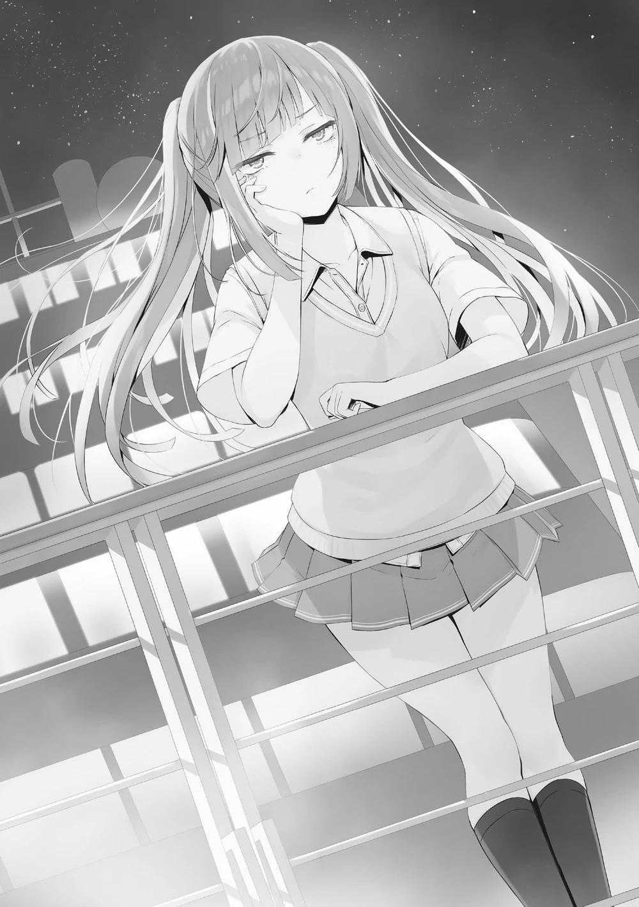
Sin embargo, tal vez preocupada por el mundo exterior, tosió y se aclaró la garganta una vez y dirigió su mirada hacia mí.
―Sólo pensé en venir a tomar un poco de aire fresco.
―¿Te duele la cabeza a menudo? Antes mencionaste algo así.
Iba a preguntarle más detalles, pero guardó silencio, como si no quisiera prolongar la conversación. Antes no había dicho nada en la fiesta de las chicas, excepto cuando se fue. Además de eso, las otras chicas básicamente no hablaron con Himeno.
No creo que sea una inadaptada, Ichinose no toleraría eso, y si su relación fuera mala, no lo mostraría delante de alguien de otra clase como yo. Si ese es el caso...
Creo que invitaron a Himeno a la fiesta a la fuerza. Si pensamos que es el deseo de un compañero de clase de divertirse lo más posible, podemos ver la conexión.
―Es porque tengo migraña.
Respondió de forma escueta y brusca.
―Si es una migraña, lo correcto es refrescarse.
Una migraña es causada por la dilatación de los vasos sanguíneos cerebrales debido a los cambios en las hormonas femeninas, la fatiga o la falta de sueño.
Los vasos sanguíneos se dilatan menos cuando se enfrían y se expanden cuando se calientan, así que exponerse al viento frío no es mala idea.
Pero sólo si es realmente una migraña.
――Tan aburrido...
―¿El dolor de cabeza no es sólo una excusa para salir de un espacio desagradable?
―¿Ja? ¿Estás diciendo que estoy mintiendo?
Himeno había estado relativamente tranquila hasta ese momento, pero en cuanto le señalé que estaba mintiendo, su color cambió.
Es de un tipo raro para la clase de Ichinose, que tiene muchos compañeros de modales afables. Mis instintos son correctos.
―Estoy seguro de que estás bien.
―No lo estoy. ¿Qué te pasa? Me empieza a doler la cabeza otra vez... Me voy a mi habitación.
―Siento si te he molestado, pero ¿puedes escucharme un momento?
Con la frente presionada, Himeno miró hacia atrás con disgusto.
―Me duele la cabeza y está empeorando.
―Lo siento.
―¿Lo sientes? ¿Se supone que tengo que escucharte...?
―Parece que no quieres.
―No quiero.
Jugué con nuestra conversación para ver si podía entenderla. Este parece ser su verdadero yo.
―Bueno, entonces supongo que tendré que hacerlo.
¿Me entiendes? Me encogí de hombros con exasperación.
―Tendré que volver a la reunión con las chicas y decirles que podrías estar fingiendo.
―¿Ja? ¿Ja? No tienes derecho a tratarme como si estuviera fingiendo.
Mentiroso.
―¿Mentir? Sólo digo que "podrías" estar fingiendo. Al menos, ya que lo siento así, tengo derecho a decirlo. Puedes demostrar si es verdad o mentira delante de todos después.
―No hay manera de probar un dolor de cabeza.
―Tal vez.
―¿Qué te pasa? Todo el mundo te halagaba antes, pero parece que tienes una personalidad repugnante.
―Bueno, tampoco decían que tuviera una buena personalidad, ¿verdad?
No quiero hablar por mí, pero me acaban de dar las gracias por ayudar a Shiranami.
―Como sea.
―En cualquier caso, eres bastante inusual, Himeno. No eres como el resto de la clase.
―¿Insólito? Si me lo preguntas, la gente de mi clase es demasiado bondadosa. Nuestra clase suele reunirse en gran número para hacer cosas. Eso no me molesta, pero el problema es que cada reunión es demasiado larga, y nunca saben cuándo irse.
Si se repitieran las reuniones que no me gustan, estaría harto. Pero los compañeros de Ichinose disfrutan de esas reuniones. Supongo que por eso nadie quiere irse en cada una de ellas.
―Si no te gusta, no tienes que asistir.
―¿Crees que puedo hacer eso? Aunque me parezca molesto, necesito seguir el ritmo de los demás para pasar desapercibida.
―Bueno, sí, eso es cierto.
Toda la clase está unida, especialmente las chicas, y hay un fuerte sentimiento de unidad. Aunque por dentro fueran infelices, habría que tener valor para lanzar una piedra y provocar una onda.
Himeno. Quizá el encuentro entre ella y yo sea el que cambie el rumbo de las cosas. Normalmente, no me involucraría profundamente con Himeno, una persona del sexo opuesto, a menos que hubiera una situación especial.
Sin embargo, no sería mala idea dar un paso adelante en este caso. Por supuesto, si acaba siendo una molestia para Himeno, que así sea.
―Si quieres aliviar el estrés, gritar es la mejor manera de hacerlo, ¿sabes?
―¿Gritar...? Si hiciera eso, la gente se alertaría y empezaría a reunirse.
―No son muchos los estudiantes que acuden a la cubierta de popa, y dado el ruido del barco, gritar no supondrá ninguna diferencia en los alrededores.
Se ahogará y desaparecerá en poco tiempo.
―Pero...
Parecía confundida, como si nunca hubiera gritado tan fuerte.
―Bueno, ¿por qué no intentas gritar primero?
―...¿Yo?
La inesperada respuesta me hizo dar un respingo.
―No sé nada de ti. Tienes una imagen más bien tranquila, y no pareces del tipo... que grita. Si me enseñas cómo hacerlo, yo también lo haré.
Estoy en problemas.
―Como no recuerdo haber sentido nunca una tensión fuerte, no tengo suficiente experiencia para decir que he gritado alguna vez, si me preguntas si realmente recuerdo haber gritado.
―Si no puedes, entonces lárgate de aquí.
Si me echo atrás, esto será el fin de mi relación con Himeno.
―De acuerdo, entiendo.
Mientras Himeno me observaba, fortalecí mi determinación y, girándome hacia el mar, alcé la voz.
―Aaah─────. Muy bien. Ahora es tu turno.
―... ¿Estás bromeando?
―¿En absoluto?
―No tenías ni una pizca de volumen en tu voz. Realmente te estás metiendo conmigo.
―Entonces enséñame tu ejemplo.
―No hay ejemplo ni mierda, ¿verdad?
Atrapé la espalda de Himeno mientras intentaba huir disgustada por sus palabras.
―Si gritaba, dijiste que tú también lo harías.
―No, me molestó más de lo que me motivó tu grito.
―Puede que haya gritado en un volumen bajo. Sin embargo, si el volumen de voz de Himeno también fuera bajo, no estarías calificada para hacer una broma sobre mí.
Para evitar que grite con un volumen de voz igualmente bajo, me adelanto y le pongo un sello.
―Molesto. Entiendo, entiendo. Una vez es suficiente ¿no? Entonces me dejas en paz.
Tomando aire, al no tener otra opción, Himeno se lleva las dos manos a la boca.
―WAAAA──────────────────ah.
El sonido del motor del barco y el viento ahogaron el ruido, por lo que nadie más que yo pudo oírlo. Sin embargo, una voz fuerte resonó en la parte posterior de mis oídos, el doble de lo que había imaginado.
Sentí que el barco temblaba. Pero eso era sólo una sensación. Era imposible que el barco se tambaleara de verdad. Su forma de hablar y su actitud se sentían tan abatidas, la tensión era baja y el volumen de voz era modesto, pero ese grito mostraba una tremenda cantidad de voz.
―Ahhh... Eso se sintió refrescante.
Himeno asintió satisfactoriamente sin notar mi sorpresa.
―Te lo dije. Creo que yo también estoy sintiendo los efectos de mi grito.
―No, no, a eso no se le llama gritar.
Me lanza una mirada severa.
―Bueno, si yo también hubiera estado estresado, habría hecho uno mejor.
―¿De verdad? A mí no me lo pareció.
―Seguro que te salió muy bien. Has estado muy estresada, ¿no?
―¿AH, SÍ? Te voy a matar.
Ella se muestra muy aguda hacia mí. Hasta cuando se enfadaba, nunca mostraba las manos o los pies antes que la boca.
―Me pasé de la raya ―Se disculpó honestamente, pero no parecía ofendida.
Tal vez esta Himeno tiene un lado de intrepidez.
―Me voy a mi habitación.
―Sí, siento haberte retrasado.
―Es mejor que te des cuenta.
Dicho esto, Himeno volvió al salón principal del barco.
―Supongo que yo también volveré a mi habitación.
Creo que la fiesta fue una forma de celebrar todo el trabajo duro, pero en cambio me sentí inusualmente cansado.
Creo que hoy voy a tener un sueño profundo.
A CADA UNO SUS PROPIAS VACACIONES
El problema de qué y dónde comer a bordo de este barco persigue a la gente a diario.
Todas las noches y todos los días, la escuela prepara cuidadosamente buffets de comida de los que se puede hacer uso gratuitamente.
Aunque somos libres de utilizarlo o no, no sólo es gratuito sino que es extremadamente delicioso. Por eso es muy popular entre los estudiantes.
Debido a ello, de siete a nueve de la mañana, cada estudiante sólo puede entrar tres veces. Esto es para evitar el tráfico.
Se puede concertar la entrada a la hora deseada hasta 60 minutos antes.
Yo quería comer más o menos a las 8 de la mañana, pero como reservé tarde, los horarios de las 8 y las 9 de la mañana del 6 de agosto estaban llenos. Tuve que comer un poco antes, a las 7 de la mañana.
Y por eso, ahora que ya es por la tarde mi estómago está inusualmente vacío.
Tal vez porque me vi obligado a comer el mínimo de calorías en la isla desierta, mi cuerpo quería energía.
Aunque la comida de la cafetería es popular, por desgracia, ahora se ofrece a un precio, aunque con descuento. Si comes allí, que es en un set con bebidas, tienes que gastar al menos 2000 puntos.
Estaría bien comer allí con amigos, pero lamentablemente hoy estoy solo. En este caso, querer ahorrar todo el dinero que pueda es natural ¿no? Las tiendas me ayudaron con eso.
Básicamente, como una tienda de conveniencia, podía comprar onigiris o sándwiches con facilidad. Me dirigí enseguida a una tienda para pedir un onigiri y un sobre de té que me costó un total de 250 puntos. Luego, con mi bolsa de vinilo en la otra mano, busqué un lugar para comer.
Estaría bien buscar un lugar adecuado para comer, pero como la mayoría de esos lugares ya están en uso por otra persona, tendría que compartir espacios estrechos con ellos. Realmente quiero evitar eso.
Un lugar donde no me importaría estar cerca de gente que no conozco seguramente sea el exterior.
El fruto de mi búsqueda fue la cubierta del 6º piso, que estaba cerca de la proa del barco. Por supuesto, como no hay que pagar para entrar en este lugar, es adecuado para comer alimentos de la tienda.
Mientras ingería parte de mi comida, pensé en contemplar la magnífica vista del océano. Pero llegué en un mal momento. Muchos estudiantes estaban aquí para admirar la vista y no parecía que se fueran a ir pronto.
Era una amplia cubierta, pero si tanta gente la utiliza, al final va a ser difícil conseguir un sitio. Había un banco vacío con vistas a la zona. Vi la espalda de Nanase sentada junto a él.
Tenía un sándwich en sus manos que podría ser de una tienda y un paquete de leche a su lado.
Interesante. Fue lo contrario de ayer, cuando me vio.
Aparte de Nanase estaba Okiya Ijuuin, mi compañero de clase, Sakayanagi de la clase A, y muchos estudiantes de la clase de Ryuuen como Izumi y Suzuki. Al igual que Nanase, estaban mirando el mar mientras almorzaban.
Al final mucha gente piensa igual. En lugar de irme giré la mirada hacia el océano. En efecto, la comida que se come frente a este paisaje será sin duda deliciosa.
Pero - el problema es que, así como había muchos de segundo año, también había muchos de tercero.
Sólo unos pocos se fijaron en mí. Empezaron a mirarme fijamente. Si me fuera de aquí, significaría que me escapaba porque no me gustan esas miradas.
Entonces podrían pensar que son eficaces y se animarán.
Ahora que lo pienso, me pareció que Nanase también tenía algo de lo que quería hablar ayer. Pero Kobashi llamó y lo pospuso, así que ahora voy a llamarla yo.
Después de todo, podría usar esta charla con ella como pretexto para venir aquí.
―Nanase.
Cuando la llamé ella se giró, sorprendida.
―Ah, shenmpaai
Al parecer acababa de rellenar sus mejillas y me miró mientras se aseguraba de no dejar caer nada. Al verla ponerse nerviosa y tratar de comer lo más rápido posible, sentí que lo que hice fue un poco imperdonable.
Al usarla para una de mis medidas contra los de 3er año, tal parece que la molesté innecesariamente.
―Ah, lo siento. ¿Debo venir en otra ocasión?
Intenté decir eso, pero considerando la personalidad de Nanase, eso no sucedería.
―Por favor, espera, shenfai.
No podía decirlo ahora que estaba llena su boca, así que empezó a masticar rápidamente.
―Gulp... Um, lo siento, um, eso fue... estaba comiendo.
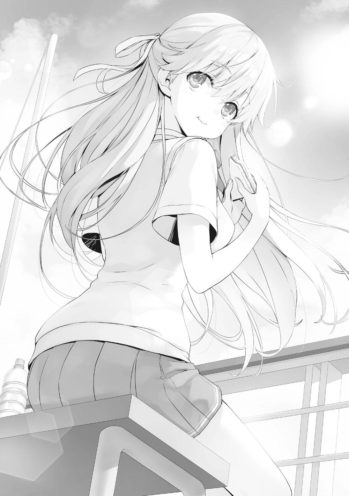
Hablaba como si estuviera a punto de confesarse, pero si alguien la viera sabría que sólo estaba comiendo.
Se podría decir que lo noté desde que vi su espalda.
―Um, ¿hay algo que necesites?
Me sentí un poco extraño con Nanase que por alguna razón todavía parecía nerviosa.
Era como si no pudiera concentrarse en su conversación conmigo. Sus ojos no dejaban de moverse.
―No, es que ayer daba la impresión de que querías hablar conmigo. Me pregunto qué era. Kobashi llamó a ese momento.
―Ah-
Su pensamiento estaba embotado. Sus palabras no salieron de inmediato.
Después de pensar por un corto tiempo, Nanase sacudió su cabeza.
―Lo siento. Ya lo resolví, así que ¿podrías olvidarlo, por favor?
―De acuerdo. Está bien.
Si Nanase estaba preocupada por algo podría haber iniciado una conversación para ayudarla de alguna manera, pero si está resuelto entonces no hay necesidad de preocuparse. Más que eso, la razón número uno fue porque podía sentir que no importaba ahora mismo.
―Siento haberte llamado tan repentinamente. Volveré a entrar. Hay más gente de la que pensaba, así que me cuesta relajarme.
―De acuerdo. Entonces te veré de nuevo, Senpai.
Justo después de terminar mis asuntos, me fui de este lugar.
Cuando me di la vuelta una vez más, Nanase continuaba con su almuerzo.
PARTE 1
Conclusión. Buscando un lugar para almorzar, me dirigí a la popa del barco, en el 5º piso, donde no había mucha gente. Aquí es donde hablé con Himeno anoche. Estoy seguro de que no suele venir mucha gente aquí.
Unos minutos más tarde, olvidé mi objetivo original y me quedé mirando las olas que producía el barco.
En ese momento, una inesperada persona se acercó a mí.
―¿Estás almorzando solo en un lugar como éste?
―Sakayanagi. ¿Estás aquí por casualidad?
Si no recuerdo mal, ella estaba en la cubierta con Nanase hace un momento.
―Sí, es lo que quisiera decir, pero te seguí.
¿Me siguió? Pero las piernas de Sakayanagi son débiles. No debería ser capaz de seguir mi velocidad al caminar.
Además, no adelanté a nadie, ni sentí que alguien me siguiera.
―Una simple deducción. Parece que fuiste a la proa del barco y te asomaste a la cubierta para almorzar. Pero al ver la cantidad de gente que había, abandonaste esa idea, ¿cierto? Con lo ligera que es la comida que llevas, aunque supongo que buscabas una vista del océano, no es tan difícil decidir dónde comer.
Así que leyó completamente mis movimientos y me siguió hasta aquí.
―Ayanokouji-kun, tú también quieres comer en un lugar con buen paisaje.
―A diferencia de la proa, la vista aquí no es de primera clase, pero no hay muchas oportunidades de ver el mar así.
El año que viene por estas fechas, no tenemos ninguna garantía de que haya otro examen de la isla deshabitada. Están previstos otros viajes de aprendizaje para los alumnos de 2º año, pero los detalles de los mismos no están claros.
Esta podría ser quizás la última vez que podamos ver el océano.
―Como este océano, creo que podremos ver muchos más paisajes que no hemos visto antes. Me pregunto, ¿no será esa la razón por la que elegiste esta escuela?
―Sí, creo que sí. Aunque antes de matricularme aquí, vi el océano una vez.
Al no esperar eso, Sakayanagi se sorprendió. Tal vez sea comprensible que lo esté. En realidad, hasta que cumplí los 14 años, edad suficiente para calificar como alumno de tercer año de secundaria, no había salido de las instalaciones ni una sola vez.
Si alguien supiera de qué se trata la Habitación Blanca, sería de sentido común.
El escenario lo vi sólo una vez. Eso fue después de que me trasladaran fuera de la instalación y tuviera la oportunidad de salir al exterior durante un rato. Nunca pude tocar el agua del mar, pero pude caminar por un sendero desde el que se veía el océano.
Sólo que no me emocioné al verlo por primera vez. No era más que un aburrido paseo por el mundo exterior.
―¿Conoces 『Bajo las ruedas?』
―Una novela de Herman Hesse.
Entre todas las novelas que escribió, en Japón era más popular que el resto.
―El protagonista de esa historia, Hans, era un genio dotado de talento.
Tras matricularse en una escuela de élite, a pesar de tener grandes perspectivas de futuro, y de haber vivido sólo para aprender, experimentó por primera vez la duda. Después, no respondió a las esperanzas depositadas en él y empezó a decaer rápidamente.
Viviendo sus últimos días en la desdicha, el protagonista Hans Giebenrath cae a un río y al final muere.
―Entonces, ¿pasa algo?
―No puedo pensar en él como un genio. Porque un verdadero genio no fracasa nunca. Por no hablar de que su muerte voluntaria al final fue el colmo de la estupidez.
Parecía que Sakayanagi interpretaba su muerte no como accidental sino como un suicidio.
―Antes dije: 『Al sentir a los demás uno puede experimentar el calor. Eso es muy importante. El calor de la piel de una persona nunca es algo malo.』 ¿Te acuerdas de eso?"
―Efectivamente, dijiste algo así.
Fue después de la prueba especial del tercer trimestre de nuestro primer año.
―El que escribió Bajo las ruedas, Hesse, como su protagonista, se preocupó y fracasó. Pero se dice que la razón por la que no se quitó la vida sino que siguió adelante fue por su familia.
El autor Hesse y el protagonista Hans compartieron una historia sorprendentemente similar. Se deduce que se proyectó a sí mismo en la historia.
Mientras Sakayanagi miraba el mar, llegó una fuerte ráfaga.
―Ah-
Al ver que su sombrero empezó a volar por un segundo, extendí el brazo y lo atrapé enseguida.
―Tto... eso fue peligroso.
Si hubiera sido un poco más lento en mi reacción, su sombrero habría caído al océano.
―Muchas gracias.
―Es peligroso llevar esto en cubierta.
―Fufu, tienes razón. Sin embargo, es mi sello distintivo.
Sakayanagi se aferró a su sombrero y lo sostuvo contra su pecho, como si fuera importante para ella.
―Ahora mismo, de repente me acordé de algo triste.
―¿Algo triste?
―No, no es nada importante. Sólo tengo algunos recuerdos del mar.
Aunque veamos exactamente el mismo mar, cada persona tiene diferentes recuerdos que le vienen a la mente.
―Por cierto, no me has dicho tu razón para seguirme.
―¿Es una molestia que lo haga sin ninguna razón en particular?
Me pregunté qué tipo de razón daría, pero me dijo que ni siquiera lo había pensado.
―¿Sin razón?
―Sólo pensé en hablar contigo, Ayanokouji-kun. Podría haberte llamado en el lugar anterior, pero no quieres que te vean hablando tanto conmigo ¿no?
Ella me dio consideración, lo cual agradezco.
Pero, al no ser bueno para entablar conversación, no hay ningún tema en particular del que pueda hablar con Sakayanagi.
―¿Está bien si charlo un poco contigo?
―Sí. ¿Puedo comer mientras escucho?
―Por favor, no te preocupes. Con prestarme tus oídos es suficiente.
Saqué un onigiri de mi bolsa y empecé a desprender el paquete con la mano.
―Ayer, Ichinose-san vino a verme.
―¿Ichinose?
―Sí.
Recordando los acontecimientos de ayer, Sakayanagi habló.
PARTE 2
―Um... Sakayanagi-san. ¿Tienes algo de tiempo?
Justo después del almuerzo, Ichinose-san me llamó mientras descansaba en un café. Como sólo estaba bebiendo té yo sola, no tenía motivos para negarme.
―¿Pasa algo?
Sabía lo que quería discutir desde antes de que me lo dijera, pero incliné el cuello a propósito en señal de curiosidad.
―En el examen especial... creo que tengo que disculparme. El último día, me fui sola... ¡Lo siento de verdad!
Al parecer, se había decidido hasta cierto punto, ya que no soy alguien que acepte excusas. Ichinose-san bajó la cabeza desesperadamente.
No, si fuera ella, probablemente no habría dado una excusa sin importar con quién estuviera hablando.
Aunque ella me hubiera enfadado a mí, la fuerza motriz de la Clase A, y al hacerlo hubiera destruido nuestra relación de colaboración, no pudo evitarlo. Tal vez sintió que había hecho algo digno de eso.
―Por favor, levanta la cabeza Ichinose-san. No estoy enojada.
―...¿Eh?
―Más bien, como alguien de nuestro grupo reconozco que has contribuido bastante. Acertaste a menudo en los cuestionarios, y uniste a nuestros agotados compañeros en medio de la dura vida de la isla. Lo hiciste magníficamente como miembro central de nuestro grupo. ¿No es por eso que pudimos lograr un espléndido tercer puesto?
―Pero...
―El último día, el hecho de que hiciste lo que quisiste es una verdad. Sin embargo, el daño que causaste a nuestro grupo por eso fue extremadamente
minúsculo. En comparación con tu contribución, no es suficiente para castigarte.
Si a pesar de todo esto hubiéramos bajado al 4º puesto por un escaso margen, entonces podría haberte castigado, pero eso no ocurrió.
―Pero eso es sólo en retrospectiva...
―¿Acaso la retrospectiva no es también buena a veces? No podemos esperar que todo salga siempre perfecto. Por otra parte, si hubiéramos caído al 4º puesto por un pequeño margen después de luchar con todo lo que teníamos, el daño que habríamos sufrido en nuestra moral habría sido considerable.
En respuesta a mi postura de no castigarla, la culpabilidad de Ichinose se duplicó. Ella no se permitiría el lujo de salirse con la suya.
―Si no obtienes algún tipo de consecuencia no te sentirás tranquila. Esa es la cara que pones.
―Uum, eso... no es necesariamente falso.
―Si ese es el caso, ¿te ofrezco un castigo?
Dominada por mi incomparable expresión, Ichinose asintió.
―Sí. Creo que eso me quita un peso de encima.
―Fufu. Qué persona más extraña. Entonces, siéntate aquí, por favor.
Animé a Ichinose a venir ante mí y sentarse en una silla. Parecía una gata adoptada, callada y mansa. Pedí un artículo del menú a la camarera.
―Adelante, por favor, pide lo que quieras.
―¿El castigo?
―Acompáñame a tomar el té de la tarde durante 30 minutos a partir de ahora.
―¿Eh? ¿Ese es el castigo?
―Así es. Tomaré 30 minutos del precioso tiempo de Ichinose-san. No hay otro castigo para ti.
―Así es... pero, si Sakayanagi-san lo dice, lo cumpliré.
Ichinose-san no estaba satisfecha con eso, pero siguió mis instrucciones y pidió una bebida.
―Realmente eres honesta, ¿no es así Ichinose-san? Aunque una vez te desprecié, me acompañas dejando de lado eso por completo.
―No creo que lo hayas hecho. En primer lugar... El error del que se me culpó en el pasado fue un error real.
―Como mínimo, un pasado del que se es culpable es algo que debería ocultarse y no hacerse de dominio público, creo. Aunque se trate de un error real, como tú dices.
Hasta ahora, desde que era niña hasta que me hice adulta, he visto de cerca a muchas personas excelentes. Ni que decir tiene que, aun sabiendo que yo soy la mejor, el número de personas a las que he reconocido no es pequeño.
Por otro lado, he visto a decenas de personas que son incompetentes hasta el punto de ser completamente inútiles. Y a diferencia de la excelencia y la incompetencia, nunca había conocido a alguien que pudiera llamarse puramente virtuoso. Eso es algo que yo, mi padre, mi madre y Ayanokouji-kun tenemos en común.
―Eres una persona difícil de definir. En consecuencia, a veces te veo como una persona aterradora.
―¿Soy... aterradora?
No deben haberle dicho eso ni una sola vez en su vida. Pero los que han sido atemorizados por Ichinose Honami seguramente no son uno o dos.
―Los que viven en este mundo son malos en menor o mayor medida.
Pero no puedo sentir eso de ti para nada. Es como si fueras un cúmulo de bondad.
―Me estás alabando demasiado. Como en la secundaria, he hecho cosas malas antes...
Su pasado, del que nunca podrá enorgullecerse, sino que preferirá avergonzarse, se mantiene aún a día de hoy.
―La bondad de la que hablo aquí no tiene nada que ver con ese tipo de cosas. Desde el principio, hasta cuando te manchaste las manos por un momento, en el fondo estaba el amor insustituible de tu familia.
La maldad descrita por la ley podría ser vista como bondad dependiendo de la perspectiva de cada uno.
―Tu buena voluntad es una fuerza y una debilidad. Por favor, ten cuidado de no ser explotada.
―¿Estás hablando de Ryuuen?
―No sólo de él. Incluso Horikita o yo utilizaríamos tu buena voluntad para ganar.
Tomé aire antes de continuar transmitiendo lo más importante.
―Ayanokouji-kun es igual.
Incluyendo a Ryuuen-kun, a quien mencionó, los nombres hasta ahora encajaban todos como líderes de sus respectivas clases.
Al reaccionar a mi repentina mención del nombre de Ayanokouji-kun, Ichinose-san se estremeció visiblemente.
―En el último día del examen de la isla deshabitada, Ayanokouji-kun se salvó gracias a ti, ¿verdad?
―Es-espera un segundo. Um, ¿qué es lo que...?
―Por favor, recuerda que esto es sólo mi conjetura. Hay muchas partes que honestamente aún no entiendo, así que por favor toma estas palabras como mis divagaciones.
Si la interrogo en este momento, fácilmente puedo imaginarme enterándome de las cosas que no están claras para mí por parte de Ichinose-san. Pero evité eso.
Después de todo, si lo hago aquí sería aburrido.
―Cuando te veo, puedo adivinar de alguna manera que los pensamientos que tienes sobre Ayanokouji-kun son diferentes a los de los otros estudiantes.
―¿¡Eh-ehh!? N-no um, eso, ¡um...!
―Está bien, ¿no? Es un instinto humano mantener esos sentimientos hacia alguien especial y del sexo opuesto. Sin embargo, si lo admiras demasiado te arriesgas a recibir una respuesta dolorosa. Más aún si la otra persona es Ayanokouji-kun.
―No entiendo bien lo que quieres decir, Sakayanagi-san.
Hoy es una advertencia. No haré nada más sobre esto.
―Concluyamos esta conversación aquí. Nuestro té de la tarde se terminó.
Ichinose-san, habiendo sido arrastrada aquí para tomar el té, seguramente no puede probar bien su sabor. Ella no puede olvidar las palabras que dije. Es probable que ronden por su mente.
Esa fue mi pequeña malicia, mi misericordia y mi plan.
PARTE 3
Sakayanagi terminó allí su conversación con Ichinose.
Acababa de terminar mi comida y de beber mi té ocha de 200 ml.
―Ichinose-san es la estudiante más popular de todo el grado escolar.
Destruir su corazón, qué persona tan pecadora.
Lo dijo frívolamente, pero no puedo tomarlo de buena manera. Ni siquiera por milímetros.
―Eres dura Sakayanagi.
―Fufufu, está en mi naturaleza.
Se adelantó y protegió a Ichinose mientras preparaba el terreno para usarla.
―Si la lastimo ahora, Ichinose llegará a confiar más en ti.
―Si consigo su confianza, será más fácil manejarme con ella.
Sakayanagi podría estar diciendo eso como una aliada, o, por supuesto, como una enemiga.
Es precisamente porque esas son las dos caras de la misma moneda de su relación que ella puede usarla tan bien.
―¿Pero por qué me dijiste algo así?
―Nuestra conversación hasta ahora ha sido sobre Ichinose-san, pero lo importante no es ella. Es que dentro de esta escuela, el número de personas que saben de ti está aumentando poco a poco. Y están muy interesados en ti.
Como ella dice, en la isla, si mi relación con Ichinose fuera superficial no habría llegado a causar problemas a sus compañeros sólo para venir a verme.
―Y además de ellos, los de 3º año te han mirado con ojos extraños.
Ya veo. La razón por la que me siguió fue para hablar, pero ese era el objetivo específico. En ese corto tiempo, Sakayanagi se dio cuenta de que estaba siendo observado por los de 3er año. Como era de esperar.
Sus palabras hasta ahora fueron implícitas para prepararnos a tocar el tema.
―¿Hubo problemas con los de 3er año?
―Bueno, problemas es una buena palabra para ello. Por lo visto, he antagonizado accidentalmente a un oponente peligroso.
―Un oponente peligroso... el Presidente del Consejo Estudiantil.
Entre los estudiantes de alto rango que podrían convertirse en mis enemigos, no me viene a la mente nadie más que Nagumo y los que lo rodean.
―Tuve una disputa con él el último día del examen de la isla. Debido a eso perdió el primer puesto y ahora me convirtió en su enemigo.
―Al intentar realizar una victoria dramática se le fue de las manos.
―¿Tú también lo notaste?
―'Kouenji-kun es inigualable él solo', fue como lo vieron la mayoría de los estudiantes. Pero me di cuenta desde el principio que el presidente del consejo estudiantil estuvo controlando la obtención de puntos de forma deliberada.
Porque si tomaba la delantera por demasiados puntos, entonces se habría hecho evidente que dejó ganar a su grupo elegido. También pude ver su plan por las cartas que poseía.
Había evaluado que la habilidad de Sakayanagi era considerablemente alta, pero aún subía más.
Esto era una prueba de que había captado perfectamente todo lo que ocurría en el examen de la isla.
―¿Hay algo en lo que pueda ayudar?
―No, está bien. Nagumo no puede ser demasiado llamativo con sus métodos. Además, ya recibí un gran favor tuyo en la isla. No puedo pedir nada más.
―Estaría bien que no te importara. Me alegré de que confiaras en mí, y utilicé tu propuesta a mi antojo.
―¿Utilizaste? ¿Qué quieres decir?
Sakayanagi soltó una risita, entrecerró los ojos y miró al océano.
―Hace unos días, cuando se vislumbraba el final del examen de la isla deshabitada, juzgué que sería difícil conseguir el primer o segundo puesto. El ritmo al que Kouenji-kun y el grupo del presidente del consejo estudiantil acumulaban puntos era más de lo que mi grupo podía con todas sus fuerzas.
Bueno, esos dos grupos dieron una pelea a otro nivel.
―Aspiré al tercer puesto, pero entre mis rivales al final estaba el grupo de Ryuuen-kun. Mostró una persistencia asombrosa con Katsuragi-kun. Entonces pedí su colaboración para aplastar a Housen-kun.
―Ya veo. Así que fue así.
―Independientemente de cómo, si Ryuuen-kun se alejaba del examen, el ritmo de su adquisición de puntos se reduciría. Como resultado, él se retiró, y nosotros nos beneficiamos al máximo.
Lo que significa que logró deshacerse de su rival, Ryuuen, mientras me ayudaba.
Sin embargo, incluso después de todo este tiempo, hay una parte que no entiendo. Ryuuen también se esforzó por alcanzar el podio de los ganadores durante dos semanas. Pero se puso de acuerdo con Sakayanagi tan fácilmente.
No debería haber sido difícil para él imaginar que no saldría bien parado de una pelea con Housen. Está claro que hicieron algún tipo de promesa pero...
Si es suficiente para desperdiciar su oportunidad de conseguir el tercer puesto, debe haber sido un trato importante.
―Una compensación adecuada... ¿Le diste una gran cantidad de puntos privados, por ejemplo?
Si Sakayanagi aprovechó bien las cartas que tenían sus compañeros, debería haber obtenido ingresos. No sería de extrañar que ofreciera una gran suma a Ryuuen, que está intentando acumular puntos privados.
―No pagué ni un solo punto, y tampoco lo haré en el futuro.
―Entonces no es dinero.
En esta escuela, el intercambio de puntos privados es una práctica común.
―Pareces desconcertado, pero no te lo diré ahora. Esta es una promesa entre él y yo. Eso es hasta que él me diga que la cumpla en un futuro próximo.
『Esa petición pronto se enroscará en mi cuello』 fue lo que dijo Sakayanagi.
Teniendo en cuenta eso, probablemente no es algo que se basa en puntos privados o dinero.
―De todos modos, por favor ten cuidado, Ayanokouji-kun. Incluso si resuelves un problema, la Habitación Blanca aún permanece, y los de 3er año también se han convertido en un problema.
―Es una cosa tras otra, pero me cuidaré.
Escuché un tono de llamada de Sakayanagi. Me pidió ligeramente permiso antes de atender una llamada de alguien.
―¿De verdad? Estaré allí ahora mismo.
Su conversación telefónica terminó en 5 segundos. Sakayanagi se separó del pasamanos.
―Prometí encontrarme con alguien después de esto, así que por favor discúlpame.
―De acuerdo. Nos vemos de nuevo.
―Ha sido un placer hablar contigo. Entonces, nos veremos de nuevo.
Mirando a Sakayanagi que se alejaba lentamente, me quedé mirando el océano un poco más.
PARTE 4
Ese mismo día, Amasawa paseaba ociosamente por el barco sin ningún objetivo en mente. Incluso cuando algún compañero la llamaba de vez en cuando, se limitaba a reírse amistosamente. No jugó con nadie ni una sola vez.
―Quiero ver a Ayanokouji-senpai~
Amasawa salió a la cubierta y susurró con una voz lo suficientemente ligera como para dejarse llevar por el sonido del viento. Para alguien sin interés en ningún otro estudiante como Amasawa, el tiempo que se encontraba con Ayanokouji, el único que podía mover su corazón, era atesorado como una dicha suprema. Sin embargo, con el rumbo que llevaba ahora, había estado evitando a propósito el contacto directo con él.
―Uu~ Estoy tan aburrida que podría mo...
―Parece que estás de buen humor, Amasawa Ichika-san.
Amasawa estaba mirando el océano desde la cubierta ella sola. Quien la llamó fue Sakayanagi Arisu. Sin sorprenderse especialmente, Amasawa sólo dirigió su mirada hacia ella.
―¿Quién es?
Como si la hubiera visto por primera vez, Amasawa inclinó la cabeza con asombro.
―Soy Sakayanagi Arisu, de la clase 2-A. Es un placer conocerte.
―¿Sakayanagi... senpai? ¿Necesitas algo de mí?
―Fufu, no hay necesidad de hacerse la tonta. Parece que eres de la Habitación Blanca, Amasawa-san. Por supuesto que sabes quién soy, ¿no?
Habitación Blanca. Al escuchar esas palabras, es imposible que no entienda.
―Fuun, ya veo. La persona a la que Ayanokouji-senpai pidió ayuda es la hija del presidente de la junta. Parece que sabes un poco sobre la Habitación Blanca. Debería ser inevitable. ¿Entonces?
Sin sorprenderse, Amasawa escuchó el asunto de Sakayanagi.
―Es natural que quiera verificar la fuerza del estudiante de la Habitación Blanca que le preocupa.
―Es bueno que tengas agallas, pero ¿significa eso que tienes la aprobación de Ayanokouji-senpai?
―¿Aprobación? Algo así no es necesario. Estar aquí es mi decisión.
―Muy segura de ti misma. Arisu-senpai.
―Tener sólo esta fuerza es algo de lo que estoy orgullosa.
―Genial...
Incluso mientras aplaudía en señal de alabanza, Amasawa parecía no prestar atención.
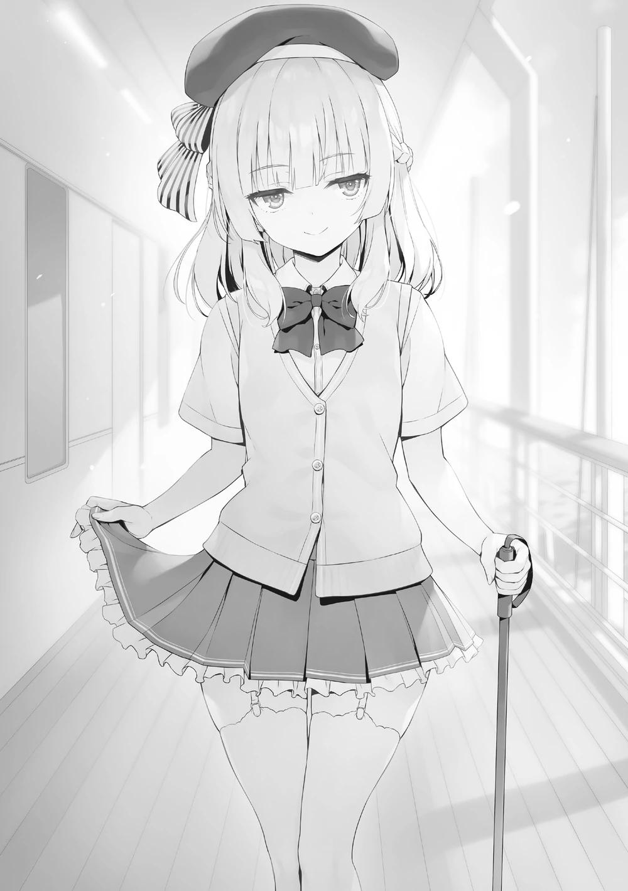
―Lo siento, sin embargo... En este momento, estoy en un estado de ánimo sentimental. Entonces, ¿podemos hacer esto en otro momento?
―No me importa. Hoy sólo pretendía que nos viéramos.
Sakayanagi, satisfecha con un simple saludo, bajó ligeramente la cabeza y se dispuso a desaparecer.
―Ah, por cierto, Arisu-senpai. ¿Podrías dejar de hacer que la gente me mire?
Hasta que Sakayanagi pudo reunirse a solas con Amasawa, había utilizado a los estudiantes de la clase A para que vigilaran su ubicación constantemente.
―Les dije que no se dejaran ver, pero te diste cuenta.
―Jajaja, ¿trataban de esconderse? Qué bonito.
―Siento haberte hecho sentir incómoda. Sin embargo, como puedes ver, no soy libre de moverme, así que si no hubiera hecho al menos eso, no habría sido fácil venir a verte. Por favor, pasa por alto eso.
―Ah, quiero escuchar algo. Soy una persona a la que no le importaría dar un golpe a alguien, aunque sea discapacitado. ¿Está bien?
―La violencia es una carta fuerte, pero no siempre es la más fuerte.
Diciendo eso, Sakayanagi golpeó ligeramente su bastón en la cubierta repetidamente. Como si eso fuera una señal, la figura de su compañero de clase, Kamuro, apareció en la distancia.
―Un Senpai que te sigue. ¿Será que puede competir conmigo?
―No. Los actos salvajes serán expuestos de inmediato, es lo que es.
―¿Quieres luchar intelectualmente conmigo? Me haces reír.
―Qué simpleza. Por favor, no concluyas las cosas como quieras. Después de todo, incluso los estudiantes de la Habitación Blanca son unos fracasados, excepto Ayanokouji-kun. No esperaré demasiado.
Aquí, por primera vez la mirada de Amasawa se dirigió a Sakayanagi.
―No importa el escenario, obtendré la victoria.
―Heeee. ¿Incluso con la violencia que acabas de mencionar?
Amasawa se lamió el pulgar con interés hacia Sakayanagi por primera vez.
―Sí, por supuesto. Por favor, utiliza cualquier medio posible.
―Me acordaré de ti, Senpai.
―Si he marcado tu hipocampo me alegro. Entonces, cuídate.
Sakayanagi desapareció lentamente. Cuando no había nadie más, Amasawa tomó aire.
―Aunque no sea con Ayanokouji-senpai, podría divertirme un poco.
¿Debería intimidar a Kushida-senpai, o debería divertirme con la cara de llanto de Arisu-senpai... normalmente estaría más emocionada-Poniendo su mano en su dolorida cintura, pensó en el futuro.
―Por ahora supongo que miraré.
Todavía se necesita un poco más de tiempo para recuperarse por completo. Y si no ve cómo se mueven, Amasawa no puede moverse. Por otro lado, Sakayanagi se iba con Kamuro como acompañante.
―Esa de 1er año parece peligrosa.
―Oh, ¿te diste cuenta?
―De alguna manera. Como llevo mucho tiempo acompañándote, puede que haya adquirido una extraña intuición. Honestamente, no quiero asociarme con ella más que esto.
―Por favor, escucha esa intuición con atención. Sin embargo, sería mejor que la vigiláramos hasta cierto punto.
Aunque se le advirtió que no la vigilara, Sakayanagi no tenía intención de hacer ningún caso.
Si comprendía que seguiría siendo marcada insistentemente, Amasawa tampoco podría ignorarla. Si ese fuera el caso, es probable que la provoque e intente algo.
―Se dio cuenta de que la estaba siguiendo, ¿no es así? ¿No utilizarás a Hashimoto?
―Si es él, podría hacer algo aunque lo descubran, pero...
Dejar que entren en contacto directo con un estudiante de la Habitación Blanca podría convertirse en una desventaja para ellos más adelante.
―Buen trabajo por ahora, Masumi-san.
Habiendo terminado su papel, Kamuro dejó este lugar de inmediato. Después de eso Sakayanagi sacó su celular e hizo una llamada.
―¿Puedo pedirte que hagas algo durante algún tiempo?
Pidió a alguien por teléfono que vigilara a Amasawa y dijo unas palabras para sí misma.
―Como pensaba, parece que el único en quien puedo confiar en mi clase eres tú, Yamamura-san.
A CADA UNO SU PROPIO PROGRESO
La vida cotidiana en el crucero de lujo, llena de experiencias lujosas, no tardó en llegar a ser repetitiva.
Las carteras de los estudiantes, que se divertían todo lo que podían durante los días que quedaban, decaían como nunca. Lógicamente, esto era algo impactante para los estudiantes que aspiraban a lo más alto. Pero darse un pequeño respiro no era necesariamente algo malo.
Mientras se refrescaban del cansancio acumulado, podían experimentar la euforia y la felicidad. Aunque hablo como si lo defendiera, yo mismo estoy utilizando los pocos puntos privados que tengo, así que puede parecer una excusa.
Tras ponerme el traje de baño y pasar por la puerta, una gran piscina en la que no había nadie más irrumpió en mi visión. Esta gran piscina fue preparada para el crucero de lujo, pero también hay otra piscina acondicionada. Se trata de una piscina privada de la que se puede disfrutar después de hacer una reserva.
Cuesta 20.000 puntos por 60 minutos, así que no es barato. Pero el tiempo que se pasa sólo con los amigos íntimos tiene un valor que trasciende el dinero. Pero el máximo de personas que pueden utilizarlo a la vez es de 40. Si una clase la reservara, podría hacerlo con 500 puntos por persona.
Por eso, esta piscina privada es inesperadamente popular entre los estudiantes.
Desde las 8 de la mañana, cuando se abre, hasta las 8 de la noche, está casi siempre llena.
Nadar libremente en una piscina repleta de mucha gente es difícil, pero si fuera una piscina privada sería lo suficientemente grande para lo que sea. Podrías disfrutar sin molestar a los demás.
―Uoh, tan grande...
Dijo Akito, que se había asomado con entusiasmo a la piscina un poco más tarde. Es del mismo tamaño que la piscina libre, pero debido a la reserva parecía que la escala era diferente.
―¿Qué vas a hacer Keisei?
―Iré después de usar el baño. Como pensaba, las chicas llegarán más tarde.
El hecho de que no terminaran de cambiarse de ropa en tan poco tiempo como los hombres no necesitaba ser confirmado en este momento. Por alguna razón, Akito tomó el menú colocado al lado de la silla de playa.
―Uoh... eso es todavía más caro.
Las bebidas aquí en la piscina privada eran más caras que las de la piscina libre, casi el doble. Si comparas la cantidad de personal para prepararlo y la cantidad de gente que pide aquí es natural, pero es duro. Significa que nos están explotando sin freno incluso aquí. También podrían haber prohibido la comida y la bebida. La puerta del vestuario se abrió un poco.
La miramos casi al mismo tiempo, pero no salió nadie. En cambio, una voz llegó a nuestros oídos.
―Vamos Airi, ¿qué estás haciendo? Sal ya.
―¡Pe-pe-pe-pe-pero-pero! ¡Es vergonzoso, Haruka-chan!
―¿Qué es vergonzoso? Tienes un montón de fotos vergonzosas tuyas en la red, así que está bien, ¿no?
―¡Eso-eso es diferente a verme a mí directamente!
―En mi opinión, creo que eso es más vergonzoso. Vamos.
―¡Wah! ¡Espera, espera!
Una conversación tan inexpresiva estaba ocurriendo entre Haruka y Airi.
―¿Cómo debería decirlo? Ella es mejor de lo que parece.
Akito dijo eso de repente.
―¿Qué pasa?
―Es que pensé que hasta tú piensas en ese tipo de cosas.
―Oye... es normal en los chicos, ¿no? Aunque no voy a hablar de ello todo el día como Ike. Tú también eres igual, ¿no?
Me miró con ojos desconcertados y con un aire que no permitía negarlo. No es que se diera cuenta de que lo estaba haciendo, pero comprendí que hacía falta valor para que Akito dijera eso. No me haría bien negarlo, así que lo reconocí.
―Bueno, sí.
Después de decir eso, Akito se rio como si hubiera ganado.
―Si las chicas se enteran de esto seguramente nos llamarán idiotas o algo así.
Normalmente, Akito estaba relativamente relajado y llevaba una cara de póquer.
Pero por lo mucho que hablaba, hasta un espectador podría darse cuenta de que estaba nervioso. Pero ellas seguían hablando. No salían.
―¡Qué vergüenza!
―¿¡Sabes!? ¡Yo también me siento igual!
―Jaja... Haruka-chan, tu atuendo es muy atrevido.
―¡Eso es porque prometiste que si me ponía esto te mostrarías delante de todos!
―¡Hyan!
Esperando que aparecieran, sentíamos que estábamos en una especie de situación de vida o muerte.
―Atrevido, dijeron.
―Parece que sí.
Expectativa, y un sentimiento de vergüenza que le siguió. Cuando salgan, dónde debemos mirar y qué debemos decir a las chicas.
―¡No puedo, no puedo! ¡Ah-por lo menos préstame algún tipo de abrigo!
―¡No! ¡Eh, no puedes correr!
―¡Uu, este tipo de traje de baño es realmente embarazoso, Haruka-chan!
―A mí también me pasa lo mismo, ¿sabes? No se puede evitar, ¡así que te sigo la corriente!
―¡Yo no pedí esto~!
Nos estábamos cansando de anticipar cuando saldrían, pero parecía que el alboroto continuaría por un rato más.
―Hey Ayanokouji. ¿Qué piensas de Airi?
Akito había estado mirando en dirección a las chicas desde hace un rato, pero cuando me di cuenta me estaba mirando a mí. No lo dijo sin ganas.
―¿Qué es lo que pienso?
Entendí enseguida de qué hablaba, pero fingí a propósito que no entendía.
―Hay algunas partes complicadas de estar en un grupo con chicas ¿no?
Como que alguien puede enamorarse de alguien.
No era difícil responder a esa pregunta pero-
―¿Y tú?
Cuando intenté responder con eso, Akito mostró una mirada un poco más preocupada.
―Bueno... ―Tras un breve silencio, Akito volvió a hablar―. Podría ser una mentira decir que no ―En lugar de negarlo, reconoció de alguna manera que había alguien―. Pero si eso puede destruir este grupo, no tengo ganas de forzarlo.
Dejando su corazón a un lado y quedando como está. Si es Haruka o Airi, no puedo juzgar todavía... ¿Qué es lo correcto aquí?
A diferencia de las Matemáticas, cuando se trata de guiar a otros no se puede dar una respuesta segura.
―Kiyotaka, tú...
―¡Kyaaa!
Justo cuando Akito iba a decir algo, la puerta semicerrada se abrió de golpe.
Entonces Airi y Haruka cayeron hacia delante. Ella gritó, y mis ojos se encontraron de nuevo con los de Akito.
―¡Empujarme es malo, Haruka-chan!
―Es porque no querías salir desde hace un rato.
Diciendo eso, Haruka se mostró justo después de que lo hiciera Airi.
―O-oi oi...
Akito estaba visiblemente asombrado. No hace falta decir que yo estaba igual.
¿Qué debería decir? Ambas lucían trajes de baño increíblemente atrevidos. Si no se tratara de una piscina privada, mucha gente las estaría mirando, hombres y mujeres. Haruka levantó la vista inmediatamente y nos vio.
Sentimos una especie de culpabilidad por ser observados y desviamos la mirada al mismo tiempo. Pero como si ya estuviera cautivado por algo, Akito habló mientras miraba hacia otro lado.
―Airi realmente da una impresión diferente, ¿verdad?
No quiero que me pasen la pelota aquí, pero él también debe estar sufriendo.
―Sí. Parece sofisticada.
―Exactamente, exactamente.
Cuando mencionamos nuestras impresiones sobre Airi, Haruka puso abiertamente una cara de decepción.
―Convencional y común.
―No digas eso. Estamos tan sorprendidos que no nos salen las palabras.
Deseamos firmemente que Haruka entienda que nuestros vocabularios fallaron.
―...Vamos a nadar.
Como si su estímulo fuera demasiado fuerte, tras decir eso Akito les dio la espalda, se estiró apresuradamente y se lanzó a la piscina. Salpicando agua por todas partes, nadó en la piscina solo. Entiendo que quiera escapar.
Precisamente porque no solemos tener la experiencia de ir a una piscina privada, el poder destructivo que han demostrado estas dos nos impide escapar.
Para expulsar varios deseos mundanos, nadar así es la respuesta correcta. Sin embargo, si dos chicos empiezan de repente a nadar con todas sus fuerzas, el ambiente se volverá extraño. Aquí no hay nadie que actúe como escudo y las enfrente más que yo.
Qué se puede hacer con esto... Mientras miraba a la pareja, Airi se sonrojó y parecía no poder calmarse. Al verla así, Haruka se acercó alegremente a su espalda y la agarró por los hombros.
―¡Hya!
―Mira, mira Kiyopon. ¿Cómo es esta nueva Airi?
Diciendo eso, empujó a Airi hacia adelante. Ella ya estaba cerca antes. Si no tengo cuidado puede acercarse lo suficiente como para hacer contacto con la piel. De hecho, ella realmente me tocará con tanta fuerza. Me retiré para conservar una distancia cercana.
―Wa-ah...
Con un traje de baño que ya mostraba tanta piel, tocarla sería problemático. Al no poder soportar más la situación, Airi abrió la boca para escapar.
―¡Supongo que yo también entraré en la piscina!
―Hey Airi-
Haruka extendió su mano para intentar atraparla, pero no llegó a tiempo y no logró agarrar su brazo. De ahí saltó a la piscina... es lo que pensaba que haría,
pero agarrar con fuerza las barras de acero inoxidable y descender lentamente a la piscina era más propio de Airi.
―Por Dios. Aunque yo misma estoy súper avergonzada...
Así es, ¿no? Mientras que el pecho se enfatiza, su traje de baño, obviamente, no cubre mucho en su mitad inferior. Aunque está bien sujeto con un cordón, sigue siendo inquietante pensar en lo que podría pasar en el peor de los casos.
―Por ahora diré esto por adelantado. La que eligió este absurdo traje de baño fue Airi ¿de acuerdo?
―No puedo replicar. ¿Qué pasó concretamente?
En primer lugar, Haruka no es el tipo de estudiante que disfruta mostrando piel a los demás. Así que tal énfasis en su mitad inferior no era normal.
―Específicamente... específicamente eh...
Hizo una cara complicada por un segundo y luego comenzó su explicación mientras elegía sus palabras.
―¿Cómo debo decir esto? ¿Fui con Airi o algo así?
―¿Qué quieres decir?
Ella escogió sus palabras con mucho cuidado. No puedo entenderlo.
―Esa chica se esfuerza por cambiar. Yo también lo hago. Aunque si tuviera que decirlo yo... esa chica tiene partes que destacan un poco más que otras ¿no?
Lo dice vagamente, pero se refiere sin duda a lo que molesta a los ojos sobre dónde mirar.
―Aunque sabe que no debería importarle, supongo que no se siente cómoda cuando la miran.
Puedo entenderlo, pero desde la mentalidad de un hombre, ignorarlo es extremadamente difícil. No importa lo que hagamos, no podemos evitar que nuestros ojos sean atraídos.
―Cuando elegí un traje de baño un poco atrevido para ayudarla a ser más valiente, me respondió que lo haría si yo también lo hacía.
Esa fue una buena respuesta. Si fuera Haruka, me la imagino fácilmente rechazando la idea de llevar un traje de baño imponente. Entonces, si no se lo ponía, Airi no tendría que ponérselo.
―No podía permitir que la reinvención de Airi retrocediera. Ese fue mi orgullo.
Si se viera obligada a hacerlo por su propia propuesta, ni siquiera Airi podría escapar, es lo que hay.
―Además, ni yo ni Airi habríamos podido usar estos trajes de baño si fuera en la piscina pública, pero no lo es.
Como es con tres chicos con los que son cercanas, parece que de alguna manera fueron capaces de hacerlo. Pero incluso los hombres podrían imaginar que, a pesar de eso, se sentirían tímidas.
―...¿Y bien?
Más que timidez, Haruka preguntó como si quisiera ocultar el miedo.
―Bueno, aunque me digas que no mire, sinceramente será difícil no hacerlo.
Para empezar, cuando hablas con alguien suele estar a la vista, así que no se puede evitar. Mirar hacia arriba o hacia abajo no funcionaría. Aparte de darle la espalda, ya no había forma de evitar mirarla.
―Bien. Pretendo entender las diferencias entre chicos y chicas, pero Airi no.
La fascinación por el pecho, las caderas y el abdomen es algo que no comparten hombres y mujeres. No, no sólo entre hombres y mujeres sino entre individuos, hay preferencias e intensidades. Por supuesto que no se entienden.
―Por cierto, ¿dónde está Yukimu?
―Parece que tardará un poco más.
Quizá le duele el estómago. No se veía que fuera a salir.
―¿Hhhmmmm?
Haruka estaba comprobando sin estar muy interesada. Tarareó mirando hacia otro lado. La conversación se detuvo un segundo, dejando que fluyera un breve silencio.
―...Ah-no puedo. Esto me hace pensar en muchas cosas.
―Lo siento. Estaba teniendo cuidado de no mirar.
No importa lo que haga, siempre que miro la cara de la otra persona en una conversación, entra en mi visión.
―No es eso. No has hecho nada malo, Kiyopon. Es que para empezar estoy demasiado cohibida. Sé que, al menos, no estás mirando tanto como quisieras.
Eh, no... no es que no esté mirando tanto como quiera. Eso me lo guardo para mí.
―Si algo destaca es normal que llame la atención. Eso vale para todo. Es que cuando pienso que eso me pasa no puedo ponerme de buen humor.
En el caso de Haruka, no son sólo los ojos de los chicos. Aunque fuera del mismo sexo, no le gusta que la atención se centre en su pecho.
―Lo siento, creo que me tomaré más tiempo para calmarme.
―Está bien. Si crees que no puedes, puedes cambiarte.
―No puedo. Mientras Airi se esfuerza, no quiero ceder.
Ella habló sobre la reinvención de Airi. Comprendí que había pensado en ello.
―Déjame cambiar de tema. Sólo lo digo ahora, pero parece que Kiyopon apenas ha salido adelante en el examen de la isla.
Como el grupo de Ayanokouji no pudo reunirse durante varios días, Haruka tocó el tema con retraso. Tal vez es exactamente porque este tema es completamente irrelevante que ella lo sacó a relucir ahora.
―Bueno, a mí me pasó lo mismo, así que no puedo reírme.
―Para ser honesto, fue muy duro. Fue el resultado de luchar con todo lo que tenía. Lo siento.
―No es tu culpa para nada. Más bien, debería decir que es un poco tranquilizador.
―¿Tranquilizador? ¿Aunque el resultado haya sido tan duro?
―Mira, incluso ha corrido el rumor de que cuando se trata de matemáticas eres descabellado, Kiyopon. ¿No se calmará un poco la gente que te rodea con esto? No te gusta que te presionen por razones raras, ¿verdad?
De alguna manera, lo dijo después de pensar en mi futuro.
―Como pensaba, tienes algunas partes de ti que son más santas que otros tipos.
―¿Qué te hace pensar eso?
Pensé que me estaba sobrevalorando, así que tuve mis dudas. Como la gente normal, yo también experimento lujuria e interés por el sexo opuesto.
―Tu expresión facial y tu mirada. Siento que recibo ese tipo de cosas de ti menos que de otros chicos.
¿Cómo debo decir esto? Si dejo que mi expresión facial aparezca aquí, mucha gente podría notarlo. También estoy agradecido de que otras personas estén destinadas al pánico. ¿No es eso sinergia?
―Uoh...
Keisei se cambió de ropa, se presentó tarde e hizo una voz de sorpresa. La sensación de ver la piscina privada reservada... obviamente no era la razón. Vio la atrevida figura de Haruka de pie junto a mí.
―Eh, eh.
Haruka saludó a Keisei mientras se hacía la tonta en un intento de conservar la normalidad.
―U-uoh...
Él se subió las gafas que se le estaban cayendo y dirigió sus ojos hacia mí.
Esto significa que incluso Keisei, que normalmente siempre estudia, también es un joven sano. La reacción y los patrones de escape de ser igual con todos hace que se sienta exactamente típico de este grupo. Si fuera alguien como Ryuuen o Kouenji, definitivamente habría mostrado una reacción diferente.
―Bueno entonces... supongo que nadaré un poco.
Se zambulló en la piscina y nadó violentamente para escapar hacia Akito. Los pies de Airi tocaron el suelo de la piscina porque no era capaz de nadar bien.
Agitó su mano hacia Haruka.
―Haruka-chan ven aquí~. Se siente bien, ¿sabes?
―Sí, sí, ya voy. Espera un poco.
No se puede evitar. Sintiéndose así, ella comenzó a estirarse a mi lado para prepararse.
―Después de pelear juntos en la isla, parece que se han acercado más.
―Eso es cierto, supongo. Tuvimos que compartir muchas cosas desde arriba y desde abajo.
―¡Waah, es un poco embarazoso así que no lo digas por favor!
Airi, que había estado esperando y mirando aquí al borde de la piscina se puso nerviosa y empezó a chapotear. ¿Arriba? ¿Abajo? Palabras clave comunes, pero significativas.
―Como que, Airi está básicamente indefensa pero no podía dejarla sola.
Es mi amiga íntima y mi hermana menor, ¿o algo así?
Una declaración que habría sido impensable cuando que se conocieron. Eso no se limita a Haruka. Keisei también es así. Y aunque no hay un gran cambio en él, también lo es Akito.
PARTE 1
A partir de ahí, jugamos por turnos a nuestro antojo como grupo.
Terminamos de jugar al voleibol de playa 2v2, ahora estamos jugando al voleibol de playa 1v1 hasta 5 puntos. El primer partido fue entre Keisei y Airi, y Keisei ganó 5-2. Luego Akito contra mí, y Akito ganó 5-3. Airi, al no ser atlética, debió cansarse de un encuentro. La vi sentada junto a la piscina y la llamé.
―Parece que te divertiste mucho.
―Ah, Kiyotaka-kun. Sí, fue muy divertido. Aunque no pude encajar nada...
Por alguna razón había estado tratando de ponerse de pie, así que se detuvo y me senté a su lado.
―Sinceramente, todavía estoy sorprendido. Eres lo suficientemente valiente como para hacer algo así.
―Eso es... sí. Intenté dejar de pensar... aunque ahora es realmente embarazoso.
―¿Por qué estás siendo tan valiente?
No es por un mero capricho, ¿verdad?
―En la isla deshabitada, estuvimos con nuestros grupos durante casi 24
horas al día, ¿verdad? Allí hablé mucho con Haruka-chan. Sobre cuando era niña, y cuando estaba en la secundaria. Luego, cuando entré en esta escuela y me llevé bien con ustedes.
Siempre que hay un momento, una pequeña charla acaba por ocuparlo. Si eso seguía ocurriendo, no es de extrañar que acabaran profundizando. Debido a los muchos días que pasaron juntas, seguramente las dos fueron capaces de entenderse como amigas de toda la vida.
―Puede que sea capaz de cambiar ahora... Puede que no sea capaz de cambiar excepto si es ahora...
―¿Cambiar? ¿Quieres decir que no sólo en apariencia?
―Sí. Todavía no puedo decirlo claramente pero... tengo que cambiar, he empezado a pensar que debo cambiar. No puedo seguir siendo mala en los estudios y en los deportes.
Aun sintiendo vergüenza y con las mejillas enrojecidas, Airi transmitió su determinación.
―¿Y el principio de eso es tu apariencia personal?
―Haruka-chan me regañó, diciéndome que no es bueno evitar sobresalir a propósito..
Para empezar, Airi está dispuesta a no querer destacar. Así que vive haciéndose un peinado reservado y llevando unas gafas falsas innecesarias. Hasta en lo que respecta a su postura, a menudo dobla la espalda y evita levantar la cabeza. Los resultados en los estudios y el deporte no llegarán enseguida, pero ella puede arreglar su aspecto. Airi se quedó mirando la piscina. La bola del último partido cayó al agua, y Akito ganó un punto a Haruka. Con esto Akito ha tomado la delantera del resto.
―Me pregunto si soy... lenta.
Habiendo dicho todo, Airi me miró nerviosa.
―No, no eres lenta.
Quiero elogiarla sinceramente, que ha hecho un buen trabajo de superación.
―Te estaré animando.
―Gr-gracias Kiyotaka-kun. Yo, haré lo mejor que pueda.
―Ah- es cierto, me olvidé de decir esto, pero el cambio de imagen de Airi sigue siendo un secreto. Ella va a debutar frente a todos a partir del 2do semestre.
Por todos, todos en el aula sería mejor. Si va a estar nerviosa de todos modos es mejor hacerlo delante de menos gente.
―Entonces, ¿qué piensas, Yukimu? Mirando a Airi.
Haruka dejó de sacar y le pasó la pelota a Keisei.
―No me preguntes.
―Si no pregunto, no lo sabré, ¿verdad? No te reprimas y déjame saber tus pensamientos.
Al decirle eso, Keisei miró directamente a Airi y examinó todo su cuerpo. Como estaba a la par de avergonzada, Airi trató de huir.
―No puedes correr Airi.
Airi, que se lamentaba, se acobardaba y se desgañitaba, estaba siendo reprimida seriamente por Haruka. Y después de terminar su examen la evaluación de Keisei dijo...
―...No está mal, ¿verdad? No, o debería decir que está completamente a la moda...
Keisei, que normalmente no muestra ningún interés por las mujeres, respondió con vergüenza.
―¡Oo, si Yukimu reacciona así debes estar en lo cierto!
Como si ella misma estuviera siendo alabada, Haruka se regocijó y saltó alto.
Luego le hizo un saque a Akito que estaba mirando a Airi.
―¡Uwa!
―¡Un punto! ¡Ahora son 2 - 3!
―Eso es injusto Haruka.
―Mirar tan intensamente a una chica te hace cometer una falta. El descuido es el enemigo, el enemigo.
―No digas cosas absurdas. Pero... sólo con quitarse las gafas y cambiarse el peinado, ¿pueden cambiar tanto las mujeres?
―Sólo significa que la materia prima es excepcional. ¿No lo entiendes?
―Pero aún así... ¿cierto?
Akito y Keisei se miraron y asintieron al mismo tiempo.
―Qué bien. Gracias a que se comportan así, puedo hablar con ustedes normalmente.
Akito se sacudió la lujuria y se concentró en su saque.
Cuando el partido comenzó de nuevo Airi dijo unas palabras.
―Los estudios, me pregunto cómo puedo mejorar, o ser más inteligente...
Airi suele planificar con anticipación los exámenes, pero fundamentalmente no va a grupos de estudio desde el principio, como Sudou u Horikita. Si va a aumentar su habilidad académica, entonces no puede perderse eso. Keisei escuchó algo sobre el estudio y se animó a empezar a explicar.
―¿No deberías empezar por ver lo que puedes y no puedes hacer? Al principio, desde el primer año de primaria, todos eran iguales. Pero poco a poco fueron apareciendo sus puntos fuertes y débiles académicos. ¿Sabes por qué es así?
―Um...
―Todo el mundo es diferente en cuanto a lo bien que puede aprender y lo bien que puede absorber el material, así como lo bien que puede concentrarse.
Hay personas que no pueden ser pacientes ni siquiera un minuto, y hay quienes pueden adaptarse a la situación, controlar su concentración y pasar más de una hora estudiando. Eso ya es suficiente para producir una diferencia en la capacidad de aprendizaje, pero el tipo de estudio que haces fuera de clase es un factor importante.
―Así es. Ahora que lo mencionas, la gente que iba a la escuela intensiva era inteligente.
Habiendo comprendido algo natural, Airi asintió.
―¡Ura!
La pelota evitó la atrapada de Haruka, regalando el 5º punto. El resultado fue la victoria de Akito por 5-2.
―De acuerdo. Es mi victoria.
―Qué frustrante... Pero perdí porque quería escuchar su charla y no pude concentrarme.
Mientras daba una elaborada excusa, Haruka se acercó a un costado.
―¿Y si Kiyopon te enseña a estudiar?
Propuso Haruka siguiendo el hilo de la conversación.
―Lo siento, pero no soy bueno enseñando a otros a estudiar. Además, un especialista en enseñanza está cerca, ¿no?
Desvié los ojos que miraban aquí hacia Keisei para animarlo.
―Bueno... si a Airi le parece bien, a mí también.
―No, pero mira, Akito y yo queremos que Yukimu nos haga favores a partir de ahora. Airi está en un nivel diferente, así que si se une, ¿no será difícil enseñarle?
―U, eso significa que soy una idiota ¿no? ...uu.
―¡Aah no, no! ¡No es eso!
―No, eso no se puede tomar como otra cosa que no sea esa Haruka.
Al no poder protegerla, Akito suspiró y murmuró.
―Sólo estaba, ya sabes... ¡Ah caramba, siento que mis palabras hayan ido un poco lejos!
Al mismo tiempo, Haruka inclinó la cabeza hacia Airi, con dos protuberancias dramáticas.
Seguro que es bueno que lo hayamos visto. Llamó la atención de todos.
Entonces todos rieron y el ambiente se relajó.
―Ya está. Así que ahora es el partido de revancha de Airi y Keisei.
―¡Eeh, no importa cuántas veces lo intente no podré ganar~!
―Puedo ir contigo como refuerzo así que no te preocupes.
―Es-espera Akito. ¡Eso me pondría en una gran desventaja!
Incluso mientras se quejaba, Keisei entró obedientemente en la piscina. Eso demuestra su honestidad.
―¡Hazlo lo mejor que puedas!
Airi había ganado un compañero de equipo de confianza en Akito e hizo una pequeña pose de coraje. Haruka y yo observamos el nuevo partido desde el borde de la piscina.
―Oye, ¿puedo preguntarte algo?
―¿Hm?
Nada más empezar el partido, Haruka me preguntó con los ojos puestos en el partido.
―Está bien si no me lo estoy imaginando, pero ¿no eres un poco frío con Airi?
―No es mi intención serlo.
―Pero, habría estado bien que le enseñaras personalmente ¿no? Puedes hacerlo, ¿verdad?
Si fuera una cuestión de si puedo o no, podría hacerlo sin problemas.
―Siento que estás siendo un poco injusto con Airi.
―No importa quién sea, los trato con justicia.
―¿De verdad?
―Aparte de las pretensiones, realmente no he tenido ningún favorito.
―...¿Lo que significa que la tratas a ella y a tus amigos cercanos de la misma manera?
―Sí.
―Como que, ¿no es un poco raro? Como que te sientes distante. Lo diré ahora que puedo, pero ¿no nos has mirado de lejos desde antes?
De alguna manera parece que ese tipo de cosas le han llegado a Haruka.
―Como tu cara sonriente. No la había visto antes.
Diciendo eso, extendió su mano derecha y pellizcó mi mejilla izquierda. Con cierta fuerza, tiró y jugó con ella.
―Si al menos podemos hacer reír a Kiyopon te lo agradeceremos.
―No es que esté tratando de no reír.
Separó las yemas de sus dedos de mi mejilla pellizcada y enlazó sus brazos con descontento.
―Todavía hay una razón por la que no te lo digo directamente. Desde el principio, la distancia entre Airi y yo ha sido demasiado pequeña.
―¿Qué es eso?
―Estoy pensando que quien la hará crecer no soy yo, sino los que la rodean.
―¿Los que la rodean?
―Tú estás ahí, Akito está ahí, y Keisei está ahí. Para Airi el factor más importante para crecer es estar rodeada de sus amigos cercanos. De hecho, ahora mismo Airi está intentando cambiar mucho gracias a ti.
―Sin embargo, creo que la más importante para Airi eres tú.
―Si ella fuera de las que crecen a partir del enamoramiento, entonces tal vez eso también lo podría haber logrado.
―He oído antes que notaste los sentimientos de Airi. ¿Pero cómo puedo decir esto? Es una forma un poco dura de decirlo...
Quizás ella misma no sabía cómo expresarlo. Me miró con ojos complicados.
―Desde que estábamos en 1er año, Airi ha pensado en mí de una manera nada despreciable. Eso me hace feliz. Es que...
Unos ojos que parecían pertenecer a una doncella que esperaba la respuesta a su confesión me miraron con inquietud. El amor de Airi. No hay duda de que ha estado rezando para que se haga realidad como una amiga cercana.
―Lo que es necesario para Airi ahora mismo son personas en las que pueda confiar.
――Pero, ¿no está bien que el amor esté ahí? Ella podría ser capaz de trabajar más duro.
―Podría haber sinergia como dices.
Es que la cosa llamada amor no puede coexistir con cosas peligrosas.
Para empezar, si una persona está sentada en una silla y otra intenta sentarse también, tendrá que echar a la primera. Por supuesto, si se maneja bien dos o tres personas sentadas al mismo tiempo no es imposible, pero en esta escuela exclusiva eso sólo se puede calificar de inadecuado. Si se descubriera entonces el daño sería mucho mayor. Me levanté del borde de la piscina.
―En el futuro Airi sufrirá una pequeña conmoción en su espíritu. En ese momento, Haruka, por favor, quédate cerca de ella y anímala más que nadie.
―¿Qué significa eso? ¿Qué quieres decir?
―Lo siento, pero no puedo responder ahora.
Airi tiene el valor más bajo de nuestra clase. Capacidad académica + Capacidad física + Otros factores. Mirándolos holísticamente, no se puede hacer otro juicio.
No sólo la OAA, yo también pienso lo mismo. Sin embargo, Airi está tratando de mejorarse a sí misma ahora. Dependiendo de ella misma, aunque lentamente, puede desarrollarse. Después de medio año o después de un año, ella podría escapar de los rangos inferiores de la clase.
PARTE 2
Nuestro tiempo en la piscina privada terminó en un abrir y cerrar de ojos, y empezamos a cambiarnos de ropa. Los empleados todavía tenían que hacer cosas como la limpieza antes de que llegara la siguiente reservación, así que no pudimos prolongar la estadía. Nosotros 3 nos duchamos rápidamente, nos cambiamos de ropa y salimos de la piscina privada. Las chicas no estaban allí, probablemente porque necesitaban más esfuerzo para cambiarse en comparación con los chicos.
―Parece que las chicas todavía no están aquí.
Como no habíamos hablado de lo que haríamos después de esto, esperamos a que salieran.
―¡Ayanokouji-senpai!
―¿Hm?
Al notar que alguien nos miraba de repente, era Nanase. Incluyendo el día de hoy, me he encontrado con ella todos los días desde que subimos al barco.
―Nanase trabajó conmigo en el examen especial escrito. Y también me salvó muchas veces en la isla.
―¿Eh? Entonces es una chica bastante increíble.
Akito asintió con admiración, levantó ligeramente la mano y saludó a Nanase.
Keisei hizo lo mismo. ¿Podría ser que Nanase alquilara la piscina privada después? Eso pensaba, pero...
―Pasaba por aquí.
Como para negar eso, Nanase dijo que era sólo una coincidencia.
―De acuerdo.
―Podría estar molestando, así que me disculparé ahora, ¿de acuerdo?
En esta área, no había ningún lugar para que los estudiantes jugaran, excepto la piscina privada. Nanase comenzó a alejarse. En verdad, no veo su razón para venir aquí. No - creer que ella vino aquí sólo como una coincidencia sería demasiado ingenuo.
Daba la impresión de que Nanase tenía algo de conocimiento de mi paradero y me seguía la pista en detalle. Aunque no puedo sentir ninguna malicia por eso.
Si ese es el caso, entonces ¿por qué? Delante de nosotros tres, Nakaizumi y Suzuki caminaban por el sendero. Aunque vi eso, los otros dos no parecieron notar nada extraño.
―¿Qué pasa Ayanokouji? ¿Pasa algo con esos dos?
―No... me preguntaba a dónde van.
―Ah- claro. Realmente no hay nada más allá de aquí. ¿Crees que se perdieron?
Más allá de este punto no hay ningún establecimiento especial. No es que fuera improbable que se perdieran. Para empezar, no hay nada que ver en este nivel aparte de la piscina privada. Al igual que Nanase, estaban caminando por un lugar muy inusual. A propósito, ayer también vi a Nakaizumi y a Suzuki cerca de Nanase en la proa del barco.
―Pero Airi sí que lo tiene difícil. Parece que tiene muchas competidoras fuertes.
―¿Qué?
Susurró Akito a mis espaldas. Keisei replicó.
―No, no es nada.
Poco después de que Nanase desapareciera, las dos terminaron de cambiarse y salieron.
―Fue divertido, Haruka-chan.
―Sí. Si estás con amigos, jugar en la piscina no está mal.
Las dos mujeres parecían muy satisfechas. Incluso después de cambiarse eran todo sonrisas. Probablemente Haruka esté preocupada por lo que le dije hace un rato, pero no lo demostraba.
―Ah...
Después de reunirnos todos y salir de la piscina privada, apareció otra persona que por lo visto tenía la siguiente reserva.
―Qué demonios, el siguiente es Ike.
―H-Hey. No pude conseguir ninguna reservación aparte de la de ahora.
―No estás solo, ¿verdad? ¿Dónde está Sudou?
Akito miró detrás de Ike con curiosidad, pero no se veía ninguna silueta.
―Ah~ no, eh...
Las palabras de Ike se atascaron y entró en pánico. Entonces vio algo delante.
―¡Perdón por hacerte esperar!
―Maldita sea, eso es raro. Shinohara e Ike pasando el rato juntos. ¿Y los demás?
Akito y Keisei no cuestionaron nada y preguntaron con indiferencia. Por supuesto, Haruka y Airi lo adivinaron enseguida y empujaron a los chicos todavía sorprendidos.
―Vamos, vamos. Eso no importa así que vámonos ya.
―¿Ah? ¿Por qué tan de repente?
―Sa-Satsuki, vámonos.
―Sí.
Como para salir corriendo tomó la mano de Shinohara y los dos se dirigieron a la recepción de la piscina privada. El tiempo era limitado así que no tenían tiempo para perderlo en algo así, ¿no?
―¿Satsuki?
Llamándose por sus nombres de pila y tomándose de la mano alegremente.
Después de ver eso, Akito finalmente notó algo anormal con los dos mientras se dirigían a sus respectivos vestuarios.
―Esos chicos... eh, ¿desde cuándo?
―¿De qué estás hablando?
Keisei aún no entendía, pero Haruka dio una breve explicación.
―¿No están saliendo?
―¿Qué estás diciendo? Ike y Shinohara son como el agua y el aceite.
¿Por qué iban a salir?
Él negó con cara de sorpresa, diciendo que era impensable ya que se odiaban.
―Yukimu es inteligente pero... idiota.
―No sé si se odiaban desde el principio, pero supongo que han ido acortando la distancia poco a poco. Lo he notado últimamente.
Al parecer, las chicas eran más fuertes en las conversaciones amorosas. Airi también entendió y asintió.
―Más o menos. Pero pensar que en realidad empezarían a salir, me sorprende.
―...¿Es así? ¿Ike y Shinohara? ...No, realmente no lo entiendo.
Keisei comprendió la situación y, aparentemente sorprendido, miró a los dos, pero ya no se les podía ver.
PARTE 3
―No~ Aterrador~
Cuando terminamos de pasar el rato y volvimos a nuestras habitaciones, Miyamoto no tardó en volver también mientras decía algo.
―¿Pasó algo?
―En realidad no pasó nada. En el baño cercano, ese tal Tokitou estaba agarrando a Katsuragi por el cuello. Ah, por supuesto que es ese Tokitou de temperamento fuerte. Ese tipo se mete en bastantes peleas.
―Oi, oi, ¿aún no ha parado? Da bastante miedo cuando Hiroya estalla,
¿sabes?
Akito hablaba como si él no tuviera nada que ver. Miyamoto puso cara de asco.
―No van a parar. No tiene nada que ver conmigo, así que sería un problema que me involucraran.
Katsuragi y Tokitou Hiroya. Ambos son de la clase de Ryuuen.
―Katsuragi acaba de cambiarse allí desde la clase A. Si recuerdas que eran enemigos hasta hace poco, no es de extrañar que ocurran uno o dos incidentes. ¿Verdad Kiyotaka?
―Sí, probablemente.
―Estoy un poco preocupado. ¿Quieren ir a ver?
―Déjalo Miyake. Si otra clase está peleando entonces eso es relativamente bueno para nosotros ¿no? En primer lugar, Katsuragi era de la clase A. No es raro que no se lleven bien.
―Pero... todos somos de segundo año.
―Si realmente asomas el cuello aquí, podríamos involucrarnos también,
¿sabes? Y si llamamos la atención de Ryuuen ¿qué piensas hacer?"
Akito parecía insatisfecho con la explicación de Miyamoto, pero por ahora se tranquilizó. Si interviene, la situación puede dar un giro de 180 grados. Al escuchar su conversación, me levanté en silencio.
―Déjalo, te digo.
―No, creo que es correcto no interferir. Tengo la garganta seca, así que voy a ir a una tienda.
Dije eso y salí de la habitación. Si recuerdo bien, dijo que esos dos estaban peleando en el baño cercano. Si se trataba de una pelea menor, lo mejor sería olvidarse de ella, como dijo Miyamoto, pero...
Cuando oí a Tokitou, lo primero que recordé fue al compañero de clase de Ichinose con el que compartía grupo en el campo de entrenamiento mixto, Tokitou Katsumi. Pero esta es una persona diferente, Tokitou Hiroya. Ver el relativamente raro apellido Tokitou no es una coincidencia. Recuerdo haber oído que tenían un pariente lejano y me sorprendió. No lo he visto a menudo desde entonces, pero Tokitou Katsumi es un camarada con el que comí, me bañé y dormí.
No parecía conocerme, pero si estaba bien que yo, un forastero, interviniera, entonces más o menos quería ofrecer mi ayuda. Actué con eso en mente, pero...
Incluso después de acercarme al baño, no pude ver a Katsuragi. Se veía que hubo una pelea, pero tal vez se resolvió enseguida.
―Ayanokouji-kun.
Después de mirar a mi alrededor por si acaso, Hiyori me llamó.
―¿No has visto a Katsuragi?
―Según parece, los demás tampoco lo han visto. También me enteré de que Katsuragi-kun y Tokitou-kun estaban peleando y vinieron aquí. Entonces les pedí que se movieran a otro lugar ahora mismo.
Ya veo. Sin quererlo, se destacan alrededor del baño. Seguí las indicaciones de Hiyori y escuché una vocecita desde un lugar discreto. Me indicaron que me asomara desde un lugar oscuro y miré en silencio el origen de la voz. Tal y como dijo Miyamoto, eran Katsuragi y Tokitou. Pero además de ellos, la chica Okabe también estaba allí.
―Katsuragi, ¿estás siguiendo a alguien como Ryuuen?
―No estamos llegando a ninguna parte. Tu lenguaje cambia más o menos, pero es la tercera vez que haces esa pregunta.
―Porque no respondes.
―No puedo responder. Sigo preguntando qué quieres decir.
Katsuragi lo estaba afrontando con calma. En cambio, Tokitou se estaba dejando llevar por sus sentimientos.
―Te pregunto si te has convertido en su perro que sigue todas sus órdenes.
―No recuerdo haberme convertido en un perro, ni recuerdo haber seguido sus órdenes.
―Lo siento, pero no lo creo. Porque, ¿por qué te uniste a él en la isla?
―Es difícil entender por qué lo dices. Para que nuestra clase gane, obviamente.
¿Qué había aparte de eso? Katsuragi respondió con naturalidad.
―¿A pesar de que ni siquiera pudieron obtener el 3er lugar?
―Efectivamente, parece que las cosas no salieron según lo previsto. Pero el resultado no fue tan malo.
―¿Qué? Todo lo que está por debajo del 4º puesto es lo mismo, ¿no?
Además de eso, ¿tu tarjeta de apoyo no terminó siendo inútil también?
―Eso significa que Ryuuen pensó en algo que tú no estás pensando.
―¿Esto, viniendo de un extraño? Entonces dime. ¿En qué pensó él?
―Ahora no es el momento de hablar de ello. Lo siento, pero no puedo.
―¿Qué es eso? De todas formas no importa, ¿no? De todos modos, odio a Ryuuen.
Estaban perpetuamente yendo de un lado a otro. Una cosa segura era que Tokitou realmente odiaba a Ryuuen.
―De hecho, si me preguntas si se le ve como una persona simpática no podría responder honestamente que sí.
En lugar de negar esa parte, Katsuragi asintió con la cabeza. Pero a Tokitou tampoco pareció gustarle ese gesto.
―Sin embargo, te uniste a Ryuuen en la isla. Incluso hoy se llevaban bien comiendo juntos.
―Estamos dando vueltas. Parece que de alguna manera hay un malentendido-Katsuragi intentó negarlo. En respuesta, Tokitou se encendió y lo interrumpió.
―A pesar de ser así de hostil, te ganó tan rápido. Creía que tenías más agallas que eso.
―Las veces que me he enfrentado a Ryuuen, ya sea como amigo o como enemigo, no han sido sólo una o dos veces. Pero ahora, como miembro de la clase y como compañero de Ryuuen estoy haciendo mi parte. Y si esta clase gira en torno a Ryuuen, seguirlo es algo natural.
―No es algo que esperaría del tipo que luchó contra Sakayanagi.
―Eso es diferente. Cuando éramos de primer año, los líderes no se habían decidido. Y como mi pensamiento, como candidato, contradecía el de Sakayanagi, también me ofrecí como líder y me opuse a ella. En esta clase, Ryuuen ya ha sido designado como líder. Él lleva el timón. En primer lugar, ¿me reconocerías como líder, habiendo sido transferido aquí desde otra clase?
―Eso es...
―Además, Sakayanagi y Ryuuen son tipos diferentes. Las clases también son muy diferentes.
Katsuragi se lo recriminó con sólidos argumentos, pero Tokitou no parecía poder digerirlo del todo.
―Es como dije Tokitou. No puedes tener una conversación con Katsuragi-kun.
Okabe, que estaba observando hasta ahora, le dio una palmadita en el hombro a Tokitou y le dijo que si seguía así no tendría sentido.
―Al final, Katsuragi-kun sólo se alegró de ser elegido por Ryuuen después de no tener sitio en la Clase A, ¿verdad? En otras palabras, su perro.
―Aunque he negado eso, parece que ustedes no lo entenderán.
Ya veo. Es duro, pero puedo ver la raíz de esta disputa. El dedo índice de Hiyori me tocó ligeramente el hombro. Me giré y me enfrenté a ella.
―No sólo hoy o ayer algunos de nuestros compañeros han estado descontentos.
―Ya veo. Su resentimiento hasta ahora se ha ido acumulando.
En respuesta a la dictadura de Ryuuen, nació naturalmente una fuerte oposición.
Pensaba que lo había reprimido bien hasta ahora, pero ha empezado a surgir poco a poco.
―¿Qué está haciendo Ryuuen? Hasta ahora no habría tolerado a los rebeldes.
―Hasta ahora ha sido así.
―¿Es reciente la razón por la que ya no es así?
Hiyori asintió ligeramente.
―Todo el mundo está cambiando. Yo tampoco tenía sentimientos fuertes hacia mi clase al principio. Si realmente pudiera pasar tres años con ellos, entonces no contendría.
Efectivamente, si alguien me preguntara si Hiyori tenía una fuerte presencia desde el principio, diría que no. Más bien, no era suficiente para hacerse notar.
―Tokitou-kun siempre ha odiado la forma de hacer las cosas de Ryuuen-kun. No, no sólo él. Hideaki, que está a su lado ahora mismo, también se siente así.
―¿Así que querían llevarse a Katsuragi y luego rebelarse abiertamente contra Ryuuen?
―Tal vez.
En términos de habilidad, Katsuragi tenía lo suficiente para representarlos. Y
precisamente porque se transfirió de otra clase, puede atacar tan profundamente a Ryuuen como quiera.
―Pero, Tokitou Hiroya ¿eh? Ryuuen ha vuelto a hacer un enemigo peligroso.
Akito dijo algo parecido sobre él, pero he aprendido que habla con determinación y revancha.
―¿Tú crees?
Hiyori tiene razón al preocuparse. Esta no es una situación de la que alguien pueda salir beneficiado.
―Efectivamente, ahora mismo, nuestra clase está bien. Creo que una de las principales razones es que Ryuuen ha mostrado un gran crecimiento tras su partida y regreso.
En comparación con su 1er año, Ryuuen, Ishizaki y los demás a su alrededor han mostrado un gran crecimiento.
―Sin embargo, cuánto tiempo continuará esto es otra cuestión. No sé si esto es algo para decirle a otras clases, pero si Ryuuen-kun es expulsado después de esto, entonces creo que nuestra clase se colapsará de inmediato.
―Después de todo, la forma de pelear de Ryuuen está llena de peligros.
Con el fin de lograr grandes victorias él toma grandes riesgos. Probablemente seguirá haciéndolo después de esta situación. Su 『promesa』 con Sakayanagi también pesa considerablemente en mi mente.
―Si eso ocurre, tendrá que haber personas que asuman la culpa.
Un candidato para liderar en caso de emergencia, es lo que quiere decir. Hiyori me sonríe.
―En ese momento, Ayanokouji-kun... ¿no vendrías a nuestra clase?
Como su aspecto sugería, Hiyori no hablaba con ingenuidad, sino de planes para hacer ganar a su clase.
―¿Otra vez? Qué propuesta más atrevida.
―También te hemos invitado antes de esto, pero eso fue algo así como medio en broma en la que acompañé a Ishizaki-kun. Pero esta invitación es diferente.
En otras palabras, es algo serio.
―Definitivamente no creo que seamos una clase débil. Pero también es un hecho que alguien que nos guíe en el peor de los casos es muy importante.
¿Qué te parece?
Luchar con Hiyori, Katsuragi y Kaneda apoyándome como asesores, ¿eh?
―No podemos estar seguros de que Ryuuen será expulsado. ¿Verdad?
―Por supuesto, ese es el mejor escenario.
Pero también sentí que era una invitación descabellada de Hiyori. Aunque lo pensara en mi fuero interno, si daba una respuesta ahora las dudas se mantendrían.
―¿No te han dicho algo que les preocupe si eso ocurre o algo así?
Me decidí y traté de preguntárselo, pero Hiyori se limitó a dedicarme una pequeña sonrisa y a no responder. Incluso mientras hablaba con Hiyori, el diálogo entre Katsuragi y Tokitou continuaba. Katsuragi nunca le dio a Tokitou una respuesta con la que estuviera contento, por lo que su rigidez finalmente estaba empezando a disiparse.
―...Qué pérdida de tiempo. Pensé que lo entenderías y por eso hablé contigo, pero me equivoqué.
―Parece que lo entiendes.
―No te pediré que no hables de esto. Informa a Ryuuen lo que quieras.
―No tengo intención de informar.
―¿Está bien? Lo digo por adelantado. Lo digo en serio. Si nos dejas solos no sabes lo que haremos.
―No me malinterpretes Tokitou. Hay muchas cosas malas en los métodos de Ryuuen. No creo que te equivoques al mostrar tu descontento. Pero no voy a alabar los actos que van demasiado lejos.
Era obvio que Tokitou estaba pensando en algo. Y no había duda de que eran pensamientos sobre cómo eliminar a Ryuuen.
―Cállate.
Dejándolo con eso, Tokitou desapareció de la vista de Katsuragi. Escondimos nuestros cuerpos y seguimos a Tokitou y a Okabe de tal manera que no nos notaran.
Después de eso, pensé que desapareceríamos sin hacer ruido pero... Hiyori me agarró del brazo y nos arrastró frente a Katsuragi.
―¿Necesitas algo, Ayanokouji?
Escapar de aquí también estaría fuera de lugar. Seguí la corriente y me acerqué a Katsuragi hasta estar justo delante de él.
―No. Tu clase lo tiene difícil en muchos aspectos, Katsuragi.
―Eso es válido para cualquier clase. Aunque no hubiera querido que escucharas esto.
Katsuragi miró una vez a Hiyori, que estaba a mi lado.
―No puedo alabar esto, Shiina. Parece que confías en Ayanokouji, pero no puedo decir que involucrarlo en los problemas de nuestra clase por tus sentimientos personales haya sido un juicio correcto.
Katsuragi lo dijo con dureza, pero lo que dijo era cierto. Si le das a tu enemigo información que no necesitas dar, eso podría terminar provocándote una herida mortal en el futuro.
―No sé si ese es el caso. Pero, ¿podrías no hablar de esto con ninguno de nuestros compañeros? Si llega a oídos de la persona en cuestión, Ryuuen,
entonces seguramente no dejará ir a Tokitou-kun. Lo mismo ocurre con otros estudiantes. Para tratar de ahorrar dinero, podrían vender a sus amigos que quieren traicionarlo.
―No puedo decidir eso ya que Ayanokouji se enteró.
―¿No es esta una buena oportunidad para organizar tus pensamientos sobre lo que debes hacer a partir de ahora, Katsuragi-kun?
―¿Qué?
―Para determinar qué dirección tomarás, ¿qué tal si escupes lo que estás pensando ahora mismo?
Qué intrigante. Hiyori está intentando utilizarme para influir en Katsuragi de la manera que ella quiere. Katsuragi tiene tendencia a pensar en las cosas él solo.
No es fácil para él abrir su corazón a otras personas. Probablemente también entendió el motivo de ella. Aunque sorprendido, estuvo de acuerdo.
―Parece que piensas en nuestra clase más de lo que creía, Shiina.
―Por supuesto. Después de todo, tengo la intención de graduarme en la clase A con nuestros compañeros.
Como si quisiera dejar atrás esas palabras, Katsuragi puso sus pensamientos en palabras.
―Esto es algo que he sentido como el único estudiante de 2º año que ha estado en dos clases. Hay diferencias decisivas entre las clases de Sakayanagi y Ryuuen. Es fácil que los miembros de la clase se quejen de sus líderes en ambas clases, pero a pesar de eso la clase de Sakayanagi mantiene una unidad constante. Por otro lado, hay muchos estudiantes en la clase de Ryuuen que aún no lo aprueban, y cuyo descontento se acumula.
Tokitou y Okabe, que acababan de acosar a Katsuragi, eran exactamente ese tipo de estudiantes.
―Y mientras la clase se eleva, seguirán reteniendo sus quejas aunque se acumulen, pero...
―Sería aterrador si la clase es la siguiente en caer.
―í. Según la situación, la clase podría dividirse por la mitad. No creo que ese hombre no lo vea, pero... tampoco creo que cambie el sistema actual.
―Es como lo lees. Ryuuen seguramente lo entiende.
―Pero si lo entiende, entonces debería pactar con Tokitou y los demás.
―Bueno, los métodos de Ryuuen siempre generarán oposición.
Parece que Katsuragi pensó que Ryuuen debería arreglar este problema de alguna manera.
―¿No te trajo Ryuuen desde la Clase A anticipando eso?
―... ¿A mí?
―Si algo le ocurriera a Ryuuen, entonces podrías servir como su sustituto.
Creo que buscó a alguien después de experimentar eso.
Lo que Hiyori desea, un candidato a líder apropiado.
―Eso es tan abrupto que no puedo creerlo.
Por supuesto, como dice Katsuragi, es algo que interpreté yo solo.
―Ryuuen quiere altos riesgos y altas recompensas. Junto con la graduación de la Clase A, también existe la posibilidad de que sea expulsado repentinamente en algún examen. Por lo tanto, es necesario tener un seguro en el peor de los casos.
También es muy factible que la administración de Ryuuen se derrumbe por un solo traidor.
―Si ese fuera el caso... no podría soportarlo.
Pensé que era precisamente porque valoraba mucho a Katsuragi, pero éste no trató de ocultar su disgusto.
―Me opongo a las valoraciones de Ryuuen. Incluso ahora que nos hemos convertido en compañeros de clase, eso no ha cambiado. Pero, ya que nos
convertimos en camaradas, creo que graduarse en la Clase A sin que falte nadie es lo mínimo.
Quizá porque entendía que era este tipo de persona, Ryuuen no se lo dijo directamente a Katsuragi. Al ver su crecimiento individual, pensé que el de Ryuuen era notable, pero sus compañeros no lo habían seguido con tanto vigor.
―Lo dijiste hace tiempo, pero no dejar que la información sobre Tokitou llegue a los oídos de Ryuuen es lo correcto.
―Estaría bien que dejara en paz a los rebeldes, pero si intenta eliminarlos será un gran problema.
Probablemente le duela la cabeza por las fuentes de sus problemas, pero al mismo tiempo se convierte en algo que vale la pena hacer por Katsuragi. Al menos era muy diferente de cuando lo tenían como mascota en la Clase A sin ningún tiempo en escena. Como si hubiera imaginado algo nuevo, la expresión de Katsuragi se suavizó un poco.
―¿Qué piensas, Katsuragi-kun?
―...Lo sé.
Se aclaró la garganta con un kohon y me miró una vez más.
―Hablando contigo, casi puedo ver lo que debo hacer. Te lo agradezco.
―No, sólo dije lo que pensaba.
―Si fuera un galimatías no valdría la pena hablar de ello, pero lo que dijiste dio en el blanco. El hecho de que Shiina te haya dejado escuchar esto también se debe a que confiaba en que darías una respuesta adecuada, ¿no?
Hiyori sonrió con alegría. Parece que me he acostumbrado, pero si esto me permite escapar de la clase de Ryuuen aunque sea un poco, entonces está bien.
―Pero Ayanokouji. Probablemente hay estudiantes que pensaron en lo mismo, pero es un poco inesperado.
―¿Inesperado?
―Esta vez fue un examen especial. Estabas en un lugar bastante peligroso.
Debido a mi bajo rango, hay bastantes estudiantes que se han vuelto escépticos con respecto a mi habilidad. En ese sentido, Tsukishiro terminó beneficiándome.
―¿Esa es tu verdadera fuerza? ¿O ha ocurrido algo inesperado?
―Bueno, ¿quién sabe?
Esquivé la pregunta, pero Katsuragi no me dejó escapar.
―Shiina, lo siento, pero quiero hablar a solas con Ayanokouji un rato.
―Entendido. Volveré a mi habitación. Nos vemos entonces, Ayanokouji-kun.
Intercambié una ligera despedida con Hiyori. Nos quedamos los dos.
―En la isla deshabitada, Ryuuen me contó todo lo que sabía de ti.
―¿Habló con sinceridad?
―Al principio esquivó un poco mi pregunta, pero le dije que si me reconocía como miembro de su clase entonces tenía que hablar.
Una especie de remache. Si ese es el caso, entonces empezó desde el tipo que hacía maniobras secretas de la clase de Horikita, X. Significa que le contó todo a Katsuragi hasta el incidente de la azotea. Sakayanagi también lo dijo. No puedo evitar que poco a poco aumente el número de alumnos que saben de mí.
―Parece que te has comportado bien hasta ahora.
―Si quiero llevar una vida escolar tranquila, he estado pensando que no habría mucha diferencia si estoy en la clase A o en la clase D.
―¿Esa es la razón por la que ocultas tu fuerza? No se lo diré a los demás, pero quizá no tarde mucho en ser de dominio público.
Eso parece. Podría decirse que casi no hay manera de suprimir la información que ha comenzado a difundirse.
―Sólo haré lo que debo hacer en esta escuela como yo mismo.
―No sé cuándo será, pero estoy deseando que llegue el día en que pueda luchar contra ti mientras tú luchas en serio.
Con eso, Katsuragi me dio un profundo asentimiento y dejó el lugar.
PARTE 4
A primera hora de la tarde. Llevé a una amiga conmigo a una cafetería.
―Hace bastante tiempo que no nos reunimos así Satou-san.
―Sí. Creo que no lo hemos hecho desde aquella vez.
Desde aquella vez. Fue cuando le dije que salía con Kiyotaka. Desde entonces Satou-san ha sido alguien con quien me he llevado bien... no, se ha acercado más a mí que antes, y ahora es incluso alguien a quien puedo llamar amiga íntima. Pero nuestro grupo normalmente se reúne con 4 o 5 personas.
Normalmente salimos así, con diferentes personas en diferentes momentos.
Así que realmente no he estado a solas con Satou-san antes. Eso va para nuestras vacaciones de verano a bordo de este barco. En cambio, siempre me encuentro con 7 u 8 personas para pasar el rato, ya que no tengo mucha privacidad. Incluso para la piscina me opuse un poco a estar en ella... bueno, podía ocultar mi piel con una lycra así que no había problema. De todos modos, hoy, hay una razón por la que me forzé a estar a solas con Satou-san.
Por ahora... un asiento vacío. Satou-san y yo pedimos asientos desde los que se vieran los alrededores. A diferencia de la escuela, la cafetería es amplia, así que no hay problemas con el lugar.
Pero tratándose del contenido de la conversación de hoy, si es posible me gustaría que no hubiera gente a nuestro alrededor.
Si evitamos en cierta medida a otras personas, tenderemos a ir a un lugar que no tenga luz.
¿Qué deberíamos hacer...?
―Estoy bien sentada en el interior, ¿sabes?
― ¿Eh, estás bien?
―Porque es importante, ¿no?
Después de adivinar y decir eso, Satou-san se volteó hacia mí con una linda sonrisa.
―Gracias.
Le di las gracias y nos sentamos en un lugar que no es visible desde el exterior.
Después de cambiar el cartel a "En uso", nos dirigimos al mostrador para pedir.
―Deja que te invite. Porque yo te llamé.
Detuve a Satou-san antes de que pudiera negarse, pedí dos cafés y me senté.
―Entonces, ¿qué pasa?
Satou-san se sentó y rompió el hielo. Por mi parte no tenía intención de alargar esto para nada pero...
―Hm... espera un poco.
―¿Por qué?
―¿No crees que hay algo raro?
Sentí una sensación de malestar en el ambiente y le pregunté a Satou si ella también lo sentía, pero negó con la cabeza con cara de confusión.
―¿Raro? No creo que haya nada raro...
―Puede ser. Lo siento, dije algo extraño.
¿Por qué me sentía así? Al principio no lo sabía. Pero, quizás ese hombre...
quizás el tiempo que he pasado con ese tipo ha afectado mi cuerpo. Nunca deja que nada pase desapercibido por pequeño que sea.
Ya sea la expresión de alguien, sus sentimientos o el ambiente de un lugar. No importa lo que sea, él lo percibe y entiende. ¿Quizás yo también he adquirido un sentido así? No sé lo que es, pero por ahora lo dejé así.
¿Pero qué es esto? ¿Por qué me siento tan mal? Aunque fingía estar tranquila, empecé a escudriñar los alrededores.
―Estaría bien que siempre pudiéramos vivir en un barco como este-Mientras hablaba, me llevé la taza a la boca y miré discretamente los alrededores.
―Jajaja, sí. Pero si vivimos así todos los días nos quedaremos en bancarrota.
―Sí. Con la piscina, el cine y la deliciosa comida, nuestro dinero podría acabarse enseguida.
Cuando noté que esa extraña sensación empezaba a disiparse. No, se estaba diluyendo. ¿Era sólo un error mío? ¿O estaba tan absorta en la búsqueda que tardé en darme cuenta del cambio de situación?
Un grupo de tres chicas de 3er año estaban conversando amistosamente mientras se sentaban en una mesa cercana a la nuestra.
―¿Y~ Kisaradzu-kun de la clase B fue~?
―No puede ser. ¿Lo dices en serio? No lo sabía~
Estaban charlando alegremente y riendo a carcajadas.
Ah, cielos... si tan sólo terminaran antes. Aunque a un lado del mar era popular, no es de extrañar que la gente eligiera venir aquí para evitar la atención y el calor del sol. Probablemente no tengan ningún interés en nuestra conversación, pero aún así. Cuando pienso que nos van a oír me siento limitada en lo que puedo decir. Podríamos levantarnos y escapar, pero no quiero dar una mala impresión. Los de 1er año pueden ser nuestros menores, pero los de 3er año son nuestros mayores.
No puedo descartar la posibilidad de que piensen que nos fuimos porque no nos gusta estar cerca de ellas. Es por cosas pequeñas como estas que comienza la intimidación. Lo sé bien.
―He querido decirte esto desde el principio, Satou-san.
Ignoremos a las de 3er año que no tienen nada que ver con esto y concentrémonos en Satou-san. Sería grosero preocuparse por cosas innecesarias.
―Creo que ya es hora de contarle a todos. Sobre mi asunto con Kiyotaka.
―...Sí.
Efectivamente, Satou-san predijo más o menos de qué iba a hablar. También podría haber pensado un poco que iba a ser sobre una 『ruptura』...
No, no lo creo. Si ese fuera el caso, entonces definitivamente yo no habría mantenido mi fortaleza de ánimo. Que yo dijera tranquilamente, rompimos
¿sabes?~, mientras me reía, era algo que ella no podría haber imaginado.
―Así que pensé... que debía decírtelo por adelantado.
―Cuando todo el mundo se entere, ¿no se quedarán súper sorprendidos?
Pensar que los dos están saliendo.
Eso es lo que he simulado en mi cabeza una y otra vez. De hecho, no importa con qué momento lo diga, definitivamente haría un poco de ruido. No quiero hablar mal de mí, pero no tengo ningún encanto.
Siempre me doy importancia y trato de tomar la delantera... antes de conocer a Kiyotaka odiaba que me intimidaran, y fingía ser fuerte incluso más que ahora.
También me he adulado yo misma con chicos que no tienen ningún interés en mí.
―¿Y cuándo piensas decirlo?
Satou-san me preguntó por el momento. Le contesté enseguida.
―Ahora mismo son las vacaciones de verano. He estado pensando si debería hacerlo después de que entremos en el 2º trimestre.
―¿Qué piensa Ayanokouji-kun?
―Dice que se adaptará a mi momento.
Satou-san se llevó un popote a la boca y sorbió un poco.
―Bien. ¿Están enamorados?
―¿Eh? ¿Eh?
―Está bien, ya me has dicho mucho.
―Sí. Bueno, sería raro que los novios no estuvieran enamorados.
―¿Se besaron ya?
―¿Eeeeh?
―Ha pasado algún tiempo desde que empezaron a salir, ¿verdad? ¿Y
cómo les ha ido con eso?
Apreté mi mano derecha y la levanté hacia mi boca. Como un micrófono.
―...Fu, él sólo me tomó desprevenida una vez.
Cuando respondí con sinceridad, Satou-san sonrió ampliamente.
―Qué bien, qué bien, yo también quiero que me tome desprevenida o algo así.
―¿De verdad? No estaba preparada emocionalmente en absoluto...
aunque fue mi primer...
Cuando escuchó mi murmullo, los ojos de Satou-san se redondearon un poco con un eh.
―¿Nunca tuviste nada con Hirata-kun? Ustedes dos salieron durante mucho tiempo.
―¿Eh?
―Y si eres tú, supongo que debo decir que no me sorprendería que tuvieras un novio en la secundaria.
Mientras escuchaba las palabras de Satou-san, pude sentir que me ponía pálida.
Karuizawa Kei ocupaba un lugar destacado entre las chicas populares que intercambiaban un hombre tras otro. Escuchar que una persona así acababa de tener su primer beso era realmente problemático.
―Umm... mira, es porque actúo de forma reservada ―Intenté seriamente parecer tranquila y respondí―. Quiero decir, los únicos que realmente dejarían pasar eso incluso entre los hombres sólo serían personas especiales ¿verdad?
Sentí que mi garganta se secaba rápidamente y engullí un tercio de mi café de un trago.
―Pero Hirata-kun también era un novio realmente genial.
―Más o menos-. Pero supongo que buscaba algo de emoción-Está bien. Puedo hacerlo. Habiendo mojado mi garganta, después de esto sólo tengo que seguir la corriente y engañarla.
―Hirata-kun era un herbívoro, así que nunca fue codicioso. Me sentí un poco insatisfecha, ya sabes~
¡Lo siento Hirata-kun! Incluso disculpándome en mi corazón, lo sacrifiqué por mí.
―¿Es así? Bueno, como dices, la gente puede querer que sus novios sean proactivos.
―¿Cierto? ¿Verdad?
―Pero a pesar de que Ayanokouji-kun parece un herbívoro, es bastante carnívoro.
Mientras Satou-san decía eso, sentí que estaba dejando salir un poco de frustración.
―Satou-san... yo...
―Ah, lo siento Karuizawa-san. No quise...
Hoy, sólo planeaba salir con ella y decirle que iba a anunciar que salimos. Pero con esto, se ha convertido en nada más que yo presumiendo insensiblemente.
Cuando me inscribí por primera vez en esta escuela, pensé que estaba bien.
Transmití cosas sobre Hirata-kun como me convenía. Era una chica completamente insípida.
Pero ahora no creo que eso esté bien. Como se trata de mi preciada amiga, pensé en evitar hablar sin consideración. Y sin embargo. Si lo llamo mis instintos de protección, sólo sonaría como una excusa. Era sólo mi ego arrogante.
―Está bien, está bien. Enamorarse de un chico que te parece simpático o algo así es algo que ocurre a menudo desde hace tiempo. Aunque en mi caso, siempre pierdo.
Satou-san hizo un mohín con los labios y mostró su descontento. Pero después de eso volvió a estar bien, como siempre.
―Lo diré de nuevo por si acaso. Si haces daño a Ayanokouji-kun... ¿lo entiendes bien?
¿Entenderlo bien significa algo así, no? Ella continuó mientras yo no había terminado de organizar mis pensamientos.
―Mira. Hirata-kun es libre ahora, así que puede conseguir una nueva novia, ¿verdad? Así que lo mismo va para Ayanokouji-kun ¿no?
―Um, bueno eso es cierto...
¡Eso no es nada bueno! ¡En primer lugar no vamos a romper! Grité en mi corazón pero era difícil porque no podía mostrarlo en el exterior.
―Mira. Si eres tú, puedes buscar un tipo mejor.
―¿Un tipo mejor? ¿Quién?
―Es difícil si me preguntas pero... Tsukasaki-kun o Nagumo-senpai.
"¿Eh~?"
Si me preguntas a mí, ambos están descartados. Porque si le preguntas a cualquiera, visualizaría a Tsukasaki-kun como de primera clase, y lo mismo ocurre con el Presidente del Consejo Estudiantil. Si hablamos de títulos, no hay que confundir quién está más arriba.
Pero... sí, como pensaba, no creo que puedan llegar a ser rivales de Kiyotaka.
Ese tipo tiene... puntos malos, pero... es fuerte, genial y misterioso. Y... me entiende.
―¡Está bien! Eso era innecesario, ¡gracias y adiós!
―¿Eh, ehh?
―Está escrito en tu cara, ¿sabes? Ese Ayanokouji-kun es el mejor.
Guu... Satou-san se dio cuenta de todos los detalles raros, así que mi cara de póker no funciona con ella.
―Gracias por decírmelo primero. Me hizo feliz.
―De verdad... entonces está bien.
A partir de ahí nuestra charla se trasladó a la vida amorosa de otras personas.
Recordamos la isla y otras cosas que eran completamente irrelevantes. Después de mucho tiempo, pudimos disfrutar de la compañía mutua.
PARTE 5
El mismo día. Las 2 de la tarde, pasadas las 10 minutos. La mayoría de los estudiantes habían terminado de comer y ahora pasaban todo el tiempo pasando el rato.
Mientras esperaba a la persona a la que había llamado, me quedé mirando el mar en silencio. Saqué mi teléfono, pulsé mi nombre: Horikita Suzune, y abrí la OAA. Pensé que habría alguna diferencia en los resultados de mis exámenes, pero me parece que de alguna manera no la hay. Los profesores siempre controlaban individualmente a los alumnos, así que eso podría haberse reflejado aquí.
Entonces, después de eso, sostuve su OAA en mi mano y la examiné, pero como era de esperar no hubo cambios.
Justo después de eso, cerré mi teléfono y me quedé mirando el mar a solas, en silencio.
Después de ese cruel examen de la isla deshabitada sin sentido de la realidad, han sido unos días acelerados.
He eliminado el agotamiento de mi cuerpo, pero estando en un crucero de lujo mi sentido de la normalidad sigue siendo escaso.
―Geh, ¿ya estás aquí?
Una voz me llegó desde cerca. Antes de darme la vuelta devolví esas palabras.
―¿No podrías usar a otras personas para llamarme? Les harás entender mal que somos cercanas.
La persona con la que hablé era de su clase, Yamaga-san.
―Lo siento, pero no tenía otra forma de contactar contigo que esa. ¿O
querías que te llamara cuando hubiera mucha gente alrededor a la hora de comer?
―Eso es horrible. Pero ser convocada así hoy fue casi igual de horrible.
―Si es así, ¿podrías volver a decirme cómo contactar contigo en caso de que quiera hablar contigo?
―Es mejor si no quieres hablar conmigo.
Ibuki-san puso una cara de desagrado después de llegar 10 minutos tarde de la hora acordada. Sin una sola palabra de disculpa, expresó su creciente descontento.
―No parece que hayas llegado tarde por circunstancias especiales.
¿Pretendías ser como Miyamoto Musashi?
―¿Ah? No lo entiendo.
Enfadarme no parecía ser su intención. Bueno, si ese era su objetivo, debería haber llegado dos horas tarde en lugar de diez minutos.
―Si no quieres arruinar mi estado de ánimo, ¿podrías decirme por qué llegas tarde?
―¿Haaa? El hecho de que me llames personalmente arruinó mi estado de ánimo.
―Sí, es cierto.
Después de que respondí honestamente, ella suspiró, como si estuviera exasperada.
―Después de ignorar tu llamada haces que parezca que me escapé.
¿Qué significa esto? Es molesto.
―Aunque te llamara, lo ignorarías, ¿no?
―Bueno, sí. ¿Tendría que reunirme contigo sólo porque me llamaste?
Aunque ella estaba considerando ignorarlo por completo, vino, aunque tarde.
Desde su punto de vista, no le gustó nada perder ante mí. Formular la invitación como un desafío fue correcto.
―Ah- ya entiendo.
Si tienes algo que decir entonces dilo ya. Mostró una actitud apresurada en ese sentido. Quiero ser considerada con sus sentimientos, pero las circunstancias no lo permiten.
―Hablemos mientras caminamos. Llevará el mismo tiempo que hablar estando de pie en un sitio, y aguantaríamos más afuera.
Esto era adecuado para reunirse, pero no para una discusión confidencial.
―¿Ja? ...Qué pena.
Aunque estaba molesta, me siguió con relativa facilidad. Ella estaba personalmente frustrada por el hecho de que le gané en la isla en términos de
puntos acumulados. No sería de extrañar incluso que viniera aquí para buscar una oportunidad de venganza.
Después de conseguir mezclarnos con el ajetreo de nuestro alrededor tras iniciar nuestra caminata, empecé a hablar.
―Tiene algo que ver con Amasawa-san, la chica con la que peleamos en la isla.
―...Aah, esa maldita descarada de 1er año.
Como ella estaba caminando a una corta distancia detrás de mí, no fui capaz de ver la expresión de Ibuki-san.
―Es un poco difícil de discutir, así que ¿podrías aumentar un poco el ritmo de la caminata?
―Cállate. Yo decido a qué ritmo debo caminar.
―Sí, si estás sola.
Detuve mis pies y me di la vuelta.
―Quieres acabar con esto rápidamente. Así que yo también quiero resolver esto lo más rápido posible. Pero para eso necesito tu cooperación.
―Sí, sí, entiendo, entiendo. Caminaré más rápido.
Dijo y caminó, lo suficientemente rápido como para adelantarme. Como si estuviera haciendo una carrera. ¿Cómo debo decir esto? Esta chica es infantil en el mal sentido. Por supuesto, no hay algo como ser infantil en el buen sentido, así que no es algo bueno. Albergando esa impresión en mi corazón, miré la espalda de Ibuki-san con exasperación. Ella se giró con una expresión intimidatoria.
―¿No vienes?
―Ir demasiado rápido también es un problema. ¿Podrías caminar a una velocidad adecuada?
―¡Ah-, Dios mío!
Se rascó la cabeza y regresó.
―¡Escucharé lo que tienes que decir, pero responde a mi duelo de venganza! ¿Entendido?
―De acuerdo. Estoy esperando un festival deportivo en nuestro segundo trimestre - dependiendo de la situación puedo concederlo.
Después de digerir un poco el significado de mis palabras, Ibuki se mordió los labios con cara de descontento.
―En otras palabras, dependiendo de la situación no lo aceptarás, es lo que quieres decir.
―Ara, inesperadamente, tu cerebro puede entender tanto. Buen trabajo, buen trabajo.
Cuando aplaudí con un pachipachi, como si pensara que la estaba dejando en ridículo, me golpeó las manos y las hizo caer.
―Qué violenta.
―¡Cállate! Si no prometes que lo aceptarás, ¡esta conversación termina aquí!
―No me importaría, pero entonces el duelo de venganza que tanto esperas nunca se hará realidad.
― Oye...
―No puedo prometerlo aquí, pero dependiendo de tus acciones podría dejar de lado la posibilidad. ¿No crees que eso es muy importante? Creo que no he perdido contra ti. Así que hasta que nos graduemos... no, incluso después de graduarnos, te quedarás con el arrepentimiento".
―¡Gu...!
―¿Entonces? ¿Me vas a escuchar o no me vas a escuchar? La elección es tuya, Ibuki-san.
― ¡Entiendo, entiendo! ¡Te escucharé!
―Si hubieras sido obediente desde el principio, esta charla que no te gusta habría sido más corta. Así me resulta más fácil.
A continuación le di un consejo para el futuro. Ibuki-san quiere un duelo de revancha, pero eso depende de lo que ocurra después. Por supuesto, si no coincide con la dirección de mi clase entonces nunca lucharé contra ella.
Aunque lo diga aquí no sería más que una desventaja, así que no lo hice.
Porque le di el margen para que yo acepte su duelo de venganza, ella está más o menos satisfecha ¿no? Ibuki-san dejó de moverse y comenzó a caminar a mi paso.
―¿Y? ¿Qué pasa con esa maldita descarada de 1er año?
―¿Cómo te sentiste después de chocar puños contra ella?
―Cómo me sentí...
―Ella era más fuerte que cualquiera con quien hubieras peleado hasta ahora. ¿No te sientes así?
―Bueno... eso no salió a la perfección así que no tengo más remedio que decir eso.
Tanto para mí como para Ibuki-san, el poder de Amasawa-san era tan diferente al nuestro que no seríamos capaces de ganar ni siquiera si ella estuviera parada de manos.
―Sí, esa Amasawa de primer año era demasiado fuerte. No hay duda de eso. Ah-, cuando pienso en eso me molesta así que no me gusta.
―Por favor, no digas eso. La única que en este momento necesita hablar de esto eres tú.
Precisamente porque se enfrentó directamente a ella, lo sabe. Si habláramos de la fuerza de Amasawa-san a alguien que no lo sabe, no podría entender nada.
―Sucedió de forma extraña, pero puede que tú también te hayas hecho algún tipo de herida. Creo que debo disculparme por eso de antemano.
―¿Herida?
Como si no lo entendiera, Ibuki-san frunció el ceño.
―Después de esto, estoy pensando en investigar el pasado de Amasawa-san.
―¿Así que ir con todo contra ella? ¿No sería mejor no hacerlo? Parece que tiene unos cuantos tornillos sueltos en la cabeza. Es el tipo de persona con la que no sabemos cómo tratar.
Amasawa-san tenía una imagen lo suficientemente fuerte como para que Ibuki-san dijera eso.
―Efectivamente, ella es peligrosa. Pero si la dejamos suelta, creo que pasarán cosas malas a partir de ahora.
―¿Sin embargo, no creo que ella tenga ningún interés en ti?
―No en mí. Ayanokouji-kun.
Al escuchar ese nombre, Ibuki-san pareció entender y movió su mirada hacia el océano.
―Ayanokouji, ¿eh? Realmente no lo entiendo, pero me pareció que sabía mucho sobre él.
Sí. Amasawa-san sabe sobre Ayanokouji-kun. No que ella supiera de él sólo como una estudiante menor de este año.
―Él es mi compañero de clase. Si puedo hacer algo, por supuesto que querría ayudarlo.
Yo misma pensé que había algo detrás de eso. Si la yo de cuando me acababa de matricular en esta escuela escuchara esto, se me erizaría la piel y lo negaría con todas mis fuerzas, ¿no?
―Pero si se da cuenta de que la estás investigando, más o menos vendrá a hacer algo. Si eso ocurre no tendrás ninguna posibilidad de tener éxito,
¿verdad?
―Su fuerza es, cómo decirlo... siento que está en una dimensión diferente del mundo en el que vivimos.
―No digas eso sin más, es lo que quiero decir, pero puede que ella sea realmente diferente.
―Quieres decir que no hay nadie tan fuerte como ella ni siquiera en tus recuerdos.
―Si se trata de los de 2º año, yo soy la más fuerte. Eso fue también cuando estaba en la secundaria. No hay muchas chicas que practiquen artes marciales, y nunca he perdido contra alguien que sólo haya practicado un poco.
En otras palabras, siempre he sido la persona más fuerte que conocía.
―Bien. Tu fuerza es la segunda más fuerte de las de 2º año junto a la mía.
No lo voy a negar.
―Definitivamente lo estás negando. ¿Así que no reconocerás mi fuerza?
―Nadie está diciendo eso. Simplemente no creo que sea más débil que tú.
―No, no, definitivamente soy más fuerte.
―De dónde viene esa confianza tuya en ti misma es un misterio. ¿Tu base?
―¿Mi intuición?
―Completamente inexacta. Tu análisis está sesgado. Ninguna de las dos ha peleado con la otra a pleno rendimiento. No tenemos ninguna base que nos haga concluir con seguridad que alguna de las dos es más fuerte que la otra,
¿verdad?
―Entonces yo soy tentativamente el 1er lugar. ¿Por qué me haces quedar en 2º lugar?
―Es el resultado de mi evaluación objetiva.
―No lo entiendo.
Llegamos a uno de nuestros objetivos, la cafetería.
―Esto tomará un poco de tiempo, así que déjame comprar bebidas. ¿Qué quieres?
―Cualquier cosa está bien, pero... té de limón helado, por favor.
Tomé el pedido de Ibuki-san y el mío y lo pagué con el teléfono. Con dos bebidas fueron 1400 puntos, qué caro. Tomamos las dos de un empleado después de que se terminara.
―Adelante. Yo invito.
―Sin embargo, tengo una sensación complicada al ser invitada por ti.
―Deberías aceptar la gratitud honestamente.
―Bueno, está bien.
Ibuki-san agarró la taza con su mano izquierda y tomó un sorbo mientras miraba más allá.
De ahí nos movimos un poco a un lugar que no fuera notado por la gente.
―Entiendo que, como has peleado contra ella, sientes lo mismo que yo sobre su fuerza. Entonces, ¿has sentido algún punto débil o hábito en su forma de pelear?
―Ella no es tan fácil de analizar de esa manera.
―...Sí.
Lo mejor sería que no volviéramos a pelear, pero... si ella me persigue no sé qué pasará.
―A solas sólo conseguirás que te devuelvan la jugada y te golpeen. No creo que puedas revertir ese resultado.
No era para desanimarme. Ibuki lo decía como un simple hecho. En cuanto a que redoblara mi entrenamiento de aquí en adelante, sólo terminaría como ella decía.
―Depende de ti pensar en cosas así, pero ¿no es mejor dejarlo?
―¿Me estuviste escuchando? Ayanokouji-kun-
―Sí, eso es.
Dirigiendo la mano que sostenía su taza hacia mí, interrumpió mis palabras.
―Si es ese tipo, ¿no se encargaría él solo de Amasawa-san?
―...¿Qué quieres decir?
Ayanokouji-kun es realmente una persona excelente. Eso es algo que vi en mi primer año a su lado, y algo que he llegado a ver poco a poco. Pero todavía hay muchas preguntas. No entiendo del todo su capacidad académica ni su poder físico. Ese es mi caso aunque estoy en la misma clase. Ibuki, que está en otra clase, no debería saber más.
Sólo es bueno en matemáticas y decente en sus reflejos. Esa es toda la información sobre él desde el exterior.
―He sentido que casi lo afirmas por tu forma de hablar, pero parece que tienes un buen concepto de Ayanokouji-kun.
―Ya sea que piense bien de él o lo que sea, si piensas en lo fuerte que es ese tipo cualquiera lo entendería.
―¿Te habrás enterado del asunto con Housen-kun de alguna manera?
―¿Ah? ¿Housen? ¿Quién es ese? ...Ah-, ese tipo gorila, ¿no?
Al estar en páginas diferentes, aunque sólo un poco, me envolvió una sensación de satisfacción.
―Dijiste que Ayanokouji-kun es fuerte. ¿De dónde has oído esa información?
―Donde...
Escogiendo sus palabras, hizo una cara que decía que había metido la pata en alguna parte.
―¿Me dijeron que mantuviera la boca cerrada sobre eso? ¿No es así? Me olvidé...
Como si tratara de recordar algo, Ibuki cerró los ojos y cruzó los brazos haciendo u-n.
―Algo pasó en algún lugar que no conozco, ¿no es así?
Intenté dar un pequeño empujón.
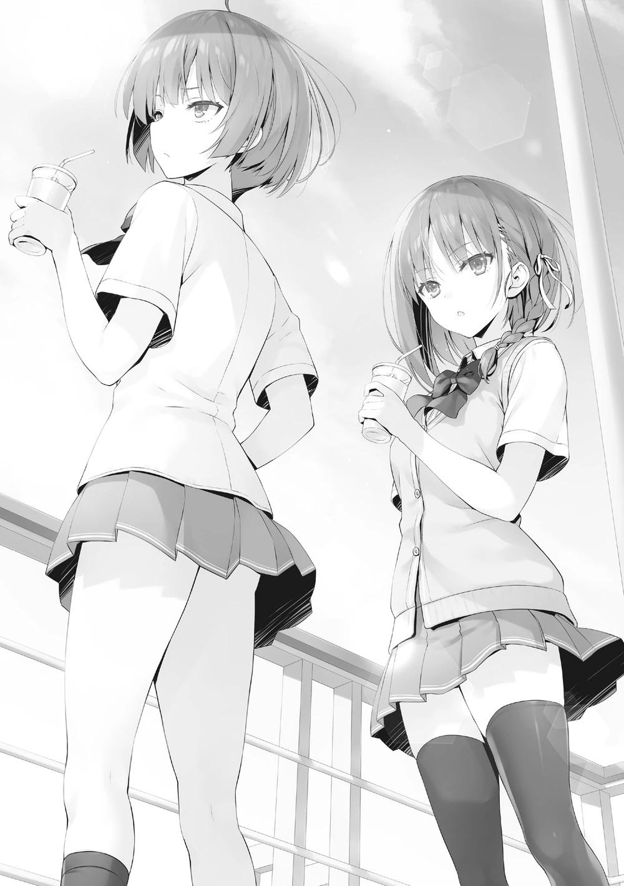
―No, ¿no sabes nada?
―Nnn... no es que no lo sepa pero tampoco es que lo sepa ―La despisté y avancé la conversación lo más rápido que pude―. Es necesario comparar nuestros recuerdos.
―Pero no quiero hacerlo.
―Tienes que hacerlo. Ahora que estamos aquí, cuéntame todo lo que sabes. Sobre el Ayanokouji-kun que conoces y que yo no conozco.
Esta es una especie de oportunidad única en la vida para recopilar información.
Algo, cualquier cosa estaba bien. Si Ibuki-san sabía algo entonces...
―Bueno, está bien. Entonces, ¿qué es lo que no sabes?
¿No tenía decidido qué revelar? preguntó Ibuki como si le molestara.
―Por supuesto que lo preguntarías... Tengo curiosidad por saber de qué estabas hablando antes.
―Lo que pensaba decir antes era el incidente entre Ryuuen y Ayanokouji en la azotea. Ya sabes, la vez que llamamos a Karuizawa allí y le hicimos una tortura con agua.
―¿Hmm-eh? Espera, ¿de qué estás hablando? No entiendo nada.
¿Ryuuen-kun? ¿La azotea? ¿Y Karuizawa-san? ¿La tortura con agua? Los signos de interrogación flotaban dentro de mi cabeza uno tras otro.
―Ah~, ya sabes. Ya que ese chico no habla con nadie de su clase.
Como si Ibuki-san hubiera entendido algo antes que yo, asintió para sí misma en señal de comprender. Y luego comenzó a hablar sobre el Ayanokouji-kun que no conozco.
Durante el tiempo que la escuché hablar, me quedé mirando el océano y me cuidé de no alterarme mientras organizaba mis pensamientos al mismo tiempo.
Al buscar a Ayanokouji-kun que se había escondido en nuestra clase, Ryuuen-kun se centró en Karuizawa-san. Al salvarla, Ayanokouji-kun se dirigió solo a la azotea.
Allí mostró una fuerza abrumadora y reprimió a Ryuuen-san y a los demás.
Creía que lo había comprendido hasta cierto punto, pero aun así, me sorprendió en exceso varias veces.
―...Hubo un momento en que Ryuuen-kun dejó de hacer movimientos contra nuestra clase. Yo no sabía nada de esto.
―De todos modos, ahora lo entiendes, ¿verdad? Ese tipo es anormalmente fuerte.
―Sí, sí, es cierto. Tiene algo insondable... desde tu punto de vista, habiendo peleado con ambos, si ellos se enfrentaran, ¿quién crees que ganaría?
―No lo sé. No he visto a ninguno de los dos ser serio. No quiero decir que él sea un hombre o que ella sea una mujer, pero considerando todo, ¿no es Ayanokouji-kun más fuerte? Con eso, no hay necesidad de que saques el cuello.
Incluso si Amasawa-san le hiciera algo, al menos podría tener suficiente poder para enfrentarse a ella.
―Pero tener fuerza física no lo hace completamente seguro. No significa que pueda evitar ser expulsado de la escuela. Es posible que esa fuerza sea contraproducente.
Amasawa-san actuó con toda la violencia que quiso en la isla, pero eso no puede ocurrir dentro de la escuela.
―Gracias Ibuki-san. Tu información podría ser más útil de lo que pensaba.
―¿No le dirás a Ayanokouji sobre esto?
―Todavía no. Para empezar, es él. No sería de extrañar que incluso lo adivine hasta cierto punto.
Amasawa-san, en particular, se ha reunido con él directamente varias veces antes del Examen de la Isla Deshabitada.
―El siguiente problema es el papel...
―¿Papel?
―Hay algo que me he estado preguntando después del examen aparte de Amasawa-san.
Le expliqué que una pieza de papel fue insertada en mi tienda. Parecía que Ibuki-san entendía por qué estaba en el noreste el último día.
―Ya veo. Alguien, aparte de Amasawa, envió un aviso previo que sugería que fueras allí.
―Sabes una palabra como sugerir.
―¿Puedes no menospreciarme?
Ibuki-san tenía una baja capacidad académica en la OAA, pero entendía más de lo que esperaba. No hay incomodidad por hablar con alguien que obviamente está por debajo de mi nivel.
―En aquel momento, Amasawa-san rompió ese papel en trozos pequeños después de que se lo diera. Eso ha estado constantemente en mi mente desde entonces. Me pregunto si no quería dejar ningún rastro de la escritura. De todos modos, lo único que recuerdo con claridad es que era una caligrafía bonita.
―¿Bonita caligrafía?
―Sí. Es imposible que haya mucha gente que pueda escribir a ese nivel.
―Ya veo. Entonces existe la posibilidad de que la persona que lo escribió sea parte de una intriga. Pero buscarlos sólo a partir de esto será difícil, ¿no?
Hasta las pruebas fueron destruidas.
―Una cosa más. Esto no tiene muchas pruebas todavía, pero el que escribió esta carta podría tener una gran habilidad física. Como Ayanokouji-kun o Amasawa-san, podrían ser extremadamente fuertes.
Y hay una alta
probabilidad de que sea de primer año.
―Si se trata de Ayanokouji y Amasawa, podrían ser efectivamente fuertes.
Pero, ¿en qué te basas para decir que es de 1er año?
―Amasawa-san estaba familiarizado con la escritura. Eso hace improbable que sea de 2º o 3º año.
―Ya veo.
Ayanokouji-kun, Amasawa-san, y una tercera persona. ¿Qué tipo de relación tienen entre ellos? Todavía no puedo ver la imagen completa. Pero no puedo dejarlo pasar.
―No tienes intención de salir herida, pero si me derriban entonces no puedo garantizarlo. Si Amasawa-san muestra movimientos extraños, no dudes en dejar la-Kan. Un ligero ruido resonó en la cubierta. Ibuki-san había hecho chocar la taza de té negro que sostenía con el pasamanos. Todavía quedaba más de la mitad.
Un poco se le escapó de la boca y se lo limpió con la mano.
―¿Qué pasa?
―¿Si te derriban? La que te derribará seré yo.
―No tengo la intención de que me hagan caer. Pero aparte de Amasawa-san, un enemigo invisible está haciendo algo que no sé, así que...
―Si los oponentes son dos, entonces deberíamos ir tras ellos con dos,
¿no?
―Eso...
―Si puedes unirte a mí, la más fuerte de segundo año, será una historia diferente. Si lo haces de todas formas, no hay nada que hacer, así que no me importa ayudarte, ¿sabes?
Después de decir eso, tomó su taza con la otra mano y lamió el té de limón del dorso de su palma.
―¿Qué pretendes hacer? Pensar que me darías tu ayuda por segunda vez.
―No quiero irme después de que alguien de 1er año se burle de mí, y que pierdas con alguien que no soy yo es difícil de digerir. Y... tú misma viniste aquí porque querías mi ayuda, ¿verdad?
Ibuki me miró directamente a los ojos.
―No, ¿en absoluto?
―¿Ah? ¿Por qué no ser honesta con eso al menos? La ayuda de Ibuki-san es necesaria, así de fácil.
―Sin embargo, nunca pensé eso ni siquiera una vez...
―... ¡Entonces está bien! ¡No intentaré echarte una mano de nuevo! ¡Adiós!
Justo cuando Ibuki parecía estar a punto de alejarse por el enfado, la agarré de la muñeca izquierda.
―¿Qué?
―En compensación por la bebida que te compré hace un momento, haré que trabajes para mí de forma gratuita.
― ¿Haah? A pesar de que dijiste que me invitarías, ¿ahora intentas cobrar la deuda que tengo?
―Es que ya no hay nada que valga la pena cobrar.
―Entonces dímelo ahora.
Ibuki sacó su teléfono y me lo entregó.
―Si eso es lo que va a pasar entonces, ¿no me darás 3.000.000 de puntos?
Fruncí el ceño y negué con la cabeza, sin poder entender su significado.
―Te invité a hacerlo. ¿No crees que eso vale algo?
―¡No lo creo para nada! Fueron 700 puntos.
―Si no tienes medios para pagar, entonces cancelaré tu deuda si me ayudas.
―Mira esto... Lo diré de nuevo. ¿No vas a ser honesta?
―Si es necesario, lo haré.
Por alguna razón era embarazoso pedir la ayuda de Ibuki-san, así que llegó a esto. Pero seguí actuando como siempre y continué presionándola.
―Eres una persona realmente desagradable.
―Eso va para las dos, Ibuki-san.
Nuestras dos miradas se encontraron e Ibuki-san terminó exasperadamente su taza.
―Qué té de limón tan caro...
Una queja así tenía cierta gracia. Acabé sonriendo un poco.
PARTE 6
El sol se hundía en el horizonte. Era el crepúsculo. Ichinose me esperaba en el lugar prometido, mirando al mar. Cuando la vi de reojo, parecía algo fugaz. Dudé un poco en decir su nombre.
―Ichinose.
―Ayanokouji-kun. Buenas tardes.
Saludé ligeramente y me puse delante de ella. No había humor para ir al grano de inmediato, así que sólo entablé una pequeña conversación.
―¿Sigues con ese plan para ahorrar puntos privados?
No tenía nada que ver con el asunto que nos ocupa, pero Ichinose no parecía nada reacia.
―Sí. Porque no hay nada malo en hacerlo. Si ahorro tanto que ya no lo necesito, podría devolver los puntos que todos me han prestado, así que es sencillo.
La razón por la que pudo decir que era sencillo seguir haciéndolo fue porque la gente confía en ella. Como ella misma dijo, mientras prometiera devolver la cantidad, era una buena idea hacer preparativos para mover grandes cantidades
de dinero en caso de emergencia. La ventaja única de Ichinose también fue un factor importante.
―Pero, el plan de reunir el dinero estaba previsto en caso de emergencia.
No sirve de nada si eso es todo, ¿verdad?
―Si acabara de empezar sería otra historia, pero esto es una continuación.
Así que no era un nuevo plan el que había preparado. Sólo lo mantenía hasta el presente.
―¿Qué crees que nos falta?
―¿Lo que le falta a tu clase?
―Sí. Tal vez no observamos bien nuestro alrededor... Me pregunto cómo se ve nuestra clase para ti.
―En la isla, hablé con varios de tus compañeros. Aparte de estar cansado, lo primero que sentí fue, como era de esperar, que había muchos estudiantes con buena personalidad.
Esto no hace falta decirlo para que se entienda, pero no era algo que se les pudiera quitar. Pero como fundamentalmente no les gusta pelearse, no pueden ganar puntos de clase de forma proactiva.
―Podría ser importante ser más firme. No te estoy diciendo que juegues sucio o hagas algo turbio, pero creo que es importante hacerse fuerte en el juego rudo.
―Juego rudo... ¿eh? Es cierto. Tenemos que ser más firmes para pelear.
Ella todavía no está pensando en un plan concreto para resolverlo. Estaban tratando seriamente de lanzarse a través del futuro que nadie conocía. Eso estaba dolorosamente claro.
―El examen de la isla hace unos días. Voy a dar mi respuesta.
―Sí... es cierto, nos reunimos aquí para eso.
Acerqué gentilmente mi rostro a los oídos de Ichinose. No había nadie alrededor.
Pero aún sabiendo eso, hablé en una voz tan baja que sería difícil de escuchar si no se enfocara intencionalmente - en ese momento.
―Para reunirse con Honami a solas en un lugar como este, ¿de qué están hablando ustedes dos?
Ichinose, sorprendida por Nagumo, se asustó y se apartó. Pero definitivamente nos vieron cuando casi no había distancia entre nosotros. ¿La siguieron? No, no era tan tonta como para que la siguieran aquí sin darse cuenta.
Entonces, ¿estaba Ichinose marcada desde el principio? No, esto se debe a la vigilancia que emplea Nagumo con innumerables ojos.
Por mucho que escape a los ojos de la gente, es casi imposible escapar perfectamente de todos los de 3er año a bordo de este barco. No me extrañaría que muchas personas nos vieran en el camino hacia aquí.
Pero Nagumo no dio señales de hacer contacto conmigo durante días. Como si estuviera orquestado, nos vio en el momento en que más debíamos evitarlo.
―Buen trabajo, Presidente del Consejo Nagumo.
Ichinose atajó de inmediato y volvió a su comportamiento normal. No ha sido capaz de borrar todo su temblor y desconcierto. Pero incluso si ella hubiera fingido perfectamente, no habría significado nada para Nagumo.
―Parece que se reunieron el último día en la isla. ¿Pero vuelven a reunirse en secreto?
―Uh-um...
Confrontada de repente con lo ocurrido en la isla, Ichinose se quedó sin palabras.
Viéndolo desde su perspectiva, parecía que ella se confesó sin querer. No va a ser sencillo sacarle de esa ruta.
Pensé en intervenir, pero Nagumo me detuvo con un gesto. Sentí una fuerte presión que me decía que no me colara.
―Bueno, no importa. Aunque... si puedes hacer llorar a mi compañera del Consejo Estudiantil Honami, entonces como presidente no podré dejarlo pasar,
¿sabes?
Claro, eso es lo que estaba tratando de hacer. Desde que comprendí que Kiriyama estaba del lado de Nagumo, pude adivinar. Entonces, Nagumo se acercó a nosotros y se puso al lado de Ichinose.
―¿Llorar...?
―Puede que lo malinterprete, pero se trata de Karuizawa.
Deliberadamente, redujo la velocidad y habló poco a poco para que ella pudiera digerir sus palabras.
―¿Dices Karuizawa-san?
Por supuesto, Ichinose no entendía por qué el nombre de Kei salía en un momento así.
―Parece que no se lo has dicho a nadie más que a tus amigos más cercanos, pero escuché que has estado saliendo con Karuizawa desde hace mucho tiempo. ¿Verdad? Ayanokouji.
Estoy saliendo con Karuizawa. Incluso después de escuchar esas palabras, Ichinose no sería capaz de entender de inmediato.
―¿Qué? ¿Es la primera vez que escuchas esto? Tú y Honami parecen estar muy unidos, así que pensé que ya se lo habías dicho.
Dijo eso, dejó un poco de margen y continuó.
―No es posible que estuvieras pensando en engañarlas, ¿verdad?
No dije nada en respuesta a la ofensiva puntual de Nagumo. El hecho de que yo haya estado pensando en decirle aquí que estaba saliendo con Kei no tiene sentido. Más bien, obviamente sólo echaría sal en su herida.
―¿Es eso... cierto?
―Oye Ayanokouji, Honami te está preguntando. ¿Por qué no contestas?
¿O fue un malentendido mío y no estás saliendo con Karuizawa? Si ese es el caso entonces niégalo. Te daré una disculpa de todo corazón, ¿sabes?
Kiriyama nos ha visto a Kei y a mí juntos. Pero no le he dado ninguna evidencia para pensar que estábamos saliendo. Lo que significaba que había una posibilidad de que trataran de engañarme para revelar la verdad.
Pero aquí no puedo decir 『que no es verdad』.
Si lo hago, entonces si descubren que estamos saliendo en el futuro será obvio que yo mentí. No, en primer lugar, debería pensar que Nagumo vino aquí con pruebas.
―No lo dije públicamente a nadie. ¿De dónde demonios sacaste esa información?
―¡...!
Ichinose estaba claramente sorprendida por mi reconocimiento. En primer lugar, sin duda, hasta Nagumo se había dado cuenta de que Ichinose sentía algo por mí.
―Entiendes que no lo adiviné sólo por los rumores, ¿verdad?
Aunque mostró sus dientes alegremente, no reveló cómo obtuvo esos datos.
Recordé vívidamente las palabras de Kiryuuin, que Nagumo puede ser del tipo que es difícil de tratar para mí.
―No pretendo quejarme de cómo otras personas encuentran el amor.
Pero como dije, Honami es un miembro del Consejo Estudiantil. En el futuro, tiene una buena oportunidad de convertirse en la presidenta. Tengo que protegerla.
―Puedo entender muy bien que a tus ojos Honami y mi relación no es natural. Sin embargo, ¿no fue demasiado precipitado intervenir en este momento?
―Tal vez. A no ser que fueras a engañar a Honami para que saliera contigo. Pero por lo que veo no parece ser el caso. Puede que incluso estuvieran hablando de algo que no tiene nada que ver con eso. Pero si vienes
aquí antes de la cena en un lugar sin gente, solo, es comprensible que sospeche de eso, ¿no? Tu novia también estará sin duda triste si ve esta situación.
―De hecho, podría causar malentendidos innecesarios.
―Como Presidente del Consejo Estudiantil... no, como miembro del Consejo Estudiantil, esto es algo natural que debo hacer.
Finalmente, Nagumo intercambió miradas cortas con Ichinose y se acercó a mí.
―Preséntamela. Tu novia. Quiero verla al menos una vez.
Con su mano en mi hombro y su boca en mi oído, susurró.
―Eres libre de pensar lo que quieras sobre mis métodos. Pero aún no ha empezado, ¿sabes?
―¿Dices que aún no ha empezado?
―Si mezclas una sola mentira entre 100 verdades, nadie se dará cuenta.
Tienes que decidirte antes de que sea demasiado tarde. Si quieres luchar contra mí, entonces puedes venir en cualquier momento. Si haces una sola dogeza, seré tu oponente.
En otras palabras, mientras no acepte pelear con Nagumo, esos desagradables y persistentes ojos seguirán mirándome para siempre. Está tratando de arrastrarme al escenario de la pelea incluso a la fuerza.
―Hasta luego.
Con eso, dejó este lugar. Ni siquiera ha empezado todavía. La abrumadora red de vigilancia e información que sólo Nagumo tiene a su disposición. Todos los de 3er año se convierten en sus manos, pies, ojos y oídos.
Para un estudiante que vive en esta escuela dentro de ese perímetro, es lo mismo que tener todas mis acciones desveladas. Y una mentira entre 100
verdades. Ahora mismo sólo está soltando la verdad, pero empezará a mezclar también las mentiras.
Desde el punto de vista de otra persona, era sólo una extensión de la desagradable. Nagumo estaba actuando de una manera que no podía ser
llamada infantil. Pero me está causando más daño emocional que cualquiera con el que haya luchado antes.
No me importa ser antagonista de la gente del mismo año porque Nagumo sigue aferrándose a mí. No es que él no piense que algo de este grado me hará perder la confianza en él. Desde el principio, nunca tuvo la intención de conseguir mi confianza. Cree que puede restringirme con reglas.
De todos modos, es cierto que Nagumo al menos tiene una razonable determinación. Desapareció, dejándonos sólo con el silencio.
Eso continuó hasta después de habernos reunido. Pero la atmósfera nunca estuvo inquieta, ni por un momento. Sólo pesada y silenciosa.
―Ajajajaja. Nos interrumpieron un poco...
―Sí.
―Umm, eso... ¿por qué- te llamé aquí?
―Eso es porque -en la isla-
―¡Ah! ¿Esa-esa cosa? Eso es... eso es eh... ya sabes...
Después de soltar un grito, su voz se fue apagando poco a poco.
―¿Podrías... olvidarlo?
Espetó Ichinose, sin perder la sonrisa.
―Lo siento, no sé nada. Me puse muy nerviosa y dije algo raro...
―Como dijo Nagumo, no he hablado nada de eso. Es natural que no lo sepas.
―Cierto, eso es verdad, ¿no? Puede que sea cierto pero... al final, ¡quizás estaba siendo una idiota! Mi-mira. Eres amable... asombroso, y maravilloso... No hay manera de que no tengas una novia, verdad...
Ichinose no dejaba de sonreír. Era una muestra de su fuerte voluntad. Pero al contrario, sus ojos se humedecieron y una gran cantidad de lágrimas
comenzaron a filtrarse. Mientras permanecía callada, mientras actuaba como si no pasara nada, luchaba con fuerza para que esas lágrimas no cayeran.
La gente se enamora de los demás. Cuando la persona que aman resulta tener a otra persona en su corazón, me pregunto qué tipo de emociones sienten.
No es algo que se entienda sólo con los libros o la televisión.
Aunque un poco diferente de lo que esperaba, hoy pude experimentar eso.
―Adiós.
Exprimiendo sus últimas palabras, Ichinose salió corriendo.
Sin hablar ni extender mi mano hacia su espalda, la vi partir en silencio.
―Nagumo ¿eh? Tal vez me he ganado un enemigo mucho más peligroso de lo que había imaginado.
Es un poco diferente de lo que había esperado, pero el camino que me propongo no cambia.
Aunque sentía que la situación se desarrollaba cada vez más en mi contra, algo curioso surgió desde el fondo de mi corazón.
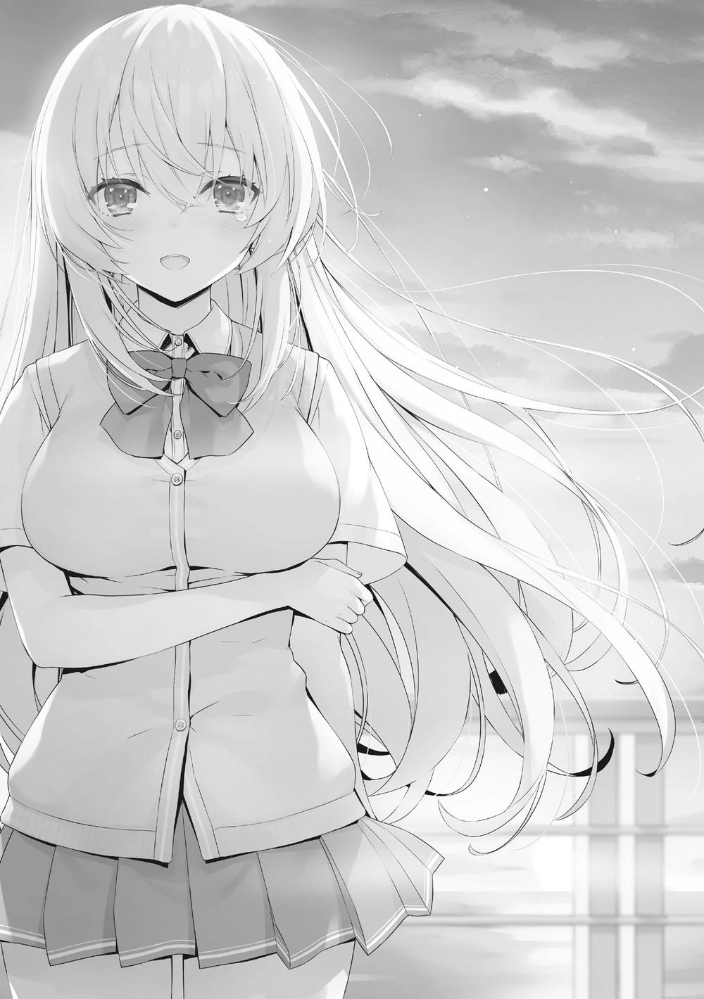
LA BÚSQUEDA DEL TESORO DE LAS MUJERES EN APUROS
Sólo quedaban tres días de nuestras vacaciones de verano a bordo del barco.
Los días llenos de acontecimientos pasaron muy rápido.
En el momento en que la gente se siente reacia a separarse de su estancia en este barco, se envió un mensaje de la escuela a todos los estudiantes simultáneamente a primera hora de la mañana. Tras abrirlo primero, Hondou lo leyó en voz alta.
―Hoy, a partir de las 10 de la mañana, comenzará una búsqueda del tesoro... ¿Qué es esto?
Todos leyeron el correo que tenía la palabra 『juego』 al que ninguno estaba acostumbrado.
"Juego de búsqueda del tesoro"
・Un juego extra con participación opcional.
・Condiciones para entrar: Tanto para los hombres como para las mujeres, es necesaria una inscripción de 10.000 puntos privados bajo su nombre.
・Fecha: Hoy, 8 de agosto
・Se dará una explicación detallada en el lugar indicado (hay que llegar a más tardar a las 22:00 horas en la 5ª planta)
・Es posible elegir no participar después de escuchar la explicación
―Por un momento pensé que era una prueba especial pero no lo parece.
La participación opcional suena interesante, ¿no?
La participación depende de cada uno, y el único riesgo que corren es la cuota de inscripción de 10.000 puntos.
Los detalles no están claros actualmente, pero para esta supuesta búsqueda del tesoro me pregunto si habrá una gran recompensa, viendo la cuota de participación. Espero cosas sencillas, como que si descubres el tesoro te den puntos privados.
Como me suele perseguir la falta de dinero, si hay una oportunidad de ganar puntos extra entonces debería ir e intentar participar. Poder participar por 10.000
puntos también me parece justo.
Por supuesto, Miyamoto y Hondou iban a participar. Dijeron que irían juntos cuando terminaran de comer. Entonces nos invitaron a Akito y a mí a unirnos a ellos...
―No me hagas caso, y diviértete...
Akito exhaló perezosamente desde lo alto de su cama y siguió durmiendo apaciblemente. Puede que sea porque ayer se esforzó demasiado en la piscina.
―Te habría prestado una consola de juegos si no estuviera prohibido traer tus cosas...
―No tengo ganas de jugar en un estado como este...
Cansado de algo, Akito hundió la cara en su almohada. Lo dejamos dormir y terminamos nuestra comida. Después de que siguiera relajándose en la habitación hasta las 9:50, aunque algo doloroso, lo dejamos en paz y nos dirigimos al lugar de encuentro.
PARTE 1
En el lugar designado, se aglomeraban muchos estudiantes. Pensé que algunas personas participarían. Me parece que es más o menos la mitad del alumnado.
Imaginé que serían un poco más, pero es posible que los alumnos indiferentes se lo hayan tomado como una oportunidad para divertirse en la piscina mientras no hay mucha gente.
Como la participación depende del alumno, la forma de aprovechar este día también depende de él.
Como si estuvieran a punto de cumplir la hora de cierre, el escenario frente a nosotros comenzó a rugir. Por lo visto, el encargado de dar la explicación será el profesor de 3-A, Takatou-sensei.
Casi todos se habían reunido, pero el director interino Tsukishiro y el asesor de 1-D, Shiba, no se veían. Si Shiba estaba trabajando para ese hombre de nuevo, entonces no es de extrañar que no esté aquí ahora. En verdad, Mashima-sensei, y Chabashira-sensei-sensei ahora saben sobre él y sus deberes.
―Buenos días a todos. Ya son las 10 en punto, así que por favor vamos a terminar la selección con los estudiantes actualmente reunidos aquí.
Otro profesor que había estado de pie junto a la entrada cerró lentamente la puerta. Aunque fuera un juego con participación opcional, las reglas son las reglas. Si alguien llega un segundo tarde, no se le permitirá participar.
―Antes de empezar la explicación, primero expondré cómo hemos llegado a organizar este juego de búsqueda del tesoro. Esta caza del tesoro fue propuesta una vez más por el Presidente del Consejo Estudiantil Nagumo-kun.
Después de estar ubicados en esa dura isla y competir con otros años escolares, propuso que se hiciera un esparcimiento para profundizar la amistad entre ustedes. Nagumo-kun, por favor.
Tras ser llamado por Takatou-sensei, Nagamo se puso delante de los participantes.
―Esta vez, con la cooperación de toda la escuela, podemos celebrar un juego de bonificación. Llegamos hasta esta propuesta a partir de los aprendizajes del Consejo Estudiantil que busca mejorar y elevar nuestra vida escolar. En el examen de la isla deshabitada, las personas de todos los años escolares se han enfrentado con fiereza muchas veces, pero en esta búsqueda del tesoro se puede elegir un compañero sin importar el año escolar. Por lo tanto, participen maximizando eso.
Mientras hablaba como un serio Presidente del Consejo Estudiantil, puso fin a su breve discurso. Recuerdo que ayer se presentó ante nosotros. Ichinose también estaba entre los miembros del Consejo Estudiantil, que escuchaba mientras se sentaba al lado de los profesores.
Por lo que puedo ver desde aquí, nada en ella ha cambiado, pero... La herida en su corazón no debe ser pequeña. Ahora mismo, actúa con naturalidad, pero tardará algún tiempo en curarse. Cuando eso ocurra, puede perder los sentimientos de amor que mantiene o convertirse en mi oponente.
Independientemente de cómo cambie, lo que es seguro es que esto será un gran punto de inflexión para ella en el futuro. Concluyeron las palabras de Nagumo y devolvió el micrófono a Takatou-sensei.
―Debido a que los miembros del Consejo Estudiantil administrarán esta búsqueda del tesoro, no podrán participar. Este deber les hará renunciar a sus vacaciones, así que tengan la amabilidad de tratarlos bien.
Empezando por gente como Horikita e Ichinose, varios miembros del Consejo Estudiantil se reunieron con Nagumo.
―Con esto, explicaré el juego de la caza del tesoro. No hay reglas complicadas. Es un juego extremadamente sencillo.
Takatou-sensei levantó su mano derecha. Entre sus dedos pulgar e índice había un trozo de papel cuadrado. Parecía tener unos 5×5 centímetros de tamaño. En ese papel estaban impresos códigos 2D.
―Hay 100 sellos en los que se han dibujado estos códigos 2D. Están repartidos por todo el barco. Los participantes deben buscar estos sellos en este juego de búsqueda del tesoro. Cuando se leen con una aplicación exclusiva, se conceden puntos privados. Sin embargo, el número de veces que pueden ser leídos por un mismo teléfono es sólo una. Dado que el resultado se registrará in situ una vez que se acceda a ellos y las recompensas se otorgarán inmediatamente, tengan cuidado. Por supuesto, si se escanea un código 2D que ya ha sido utilizado, incluso con otro teléfono, será ineficaz y no se darán las recompensas. Una vez más, aquellos que egoístamente despeguen los sellos o utilicen algo como un bolígrafo para hacerlos ilegibles serán castigados severamente aunque se trate de un juego, así que por favor absténganse de hacerlo.
Ya veo. Es un juego extremadamente sencillo que da valor a la suerte.
―Los puntos privados que se pueden ganar son al menos 5000 puntos. A 50 sellos se les asigna este valor, exactamente la mitad de todos. Los que le siguen en abundancia son 30 sellos con 10000 puntos.
Por desgracia, la mitad de los 100 sellos supondría una pérdida de dinero. E
incluso si uno encuentra un sello entre el 30%, no ganaría nada.
―La clasificación de los 20 sellos restantes son: 10 sellos dan 50.000
puntos, 5 sellos dan 100.000 puntos y 3 sellos dan 300.000 puntos. Los dos sellos restantes dan 500.000 y 1.000.000 de puntos. Podría decirse que cuanto más difícil es encontrar un código 2D oculto, más grande es la recompensa en puntos privados.
El hecho de que haya 200 participantes hará que una de cada dos personas no se lleve nada, y que si encuentras el sello más difícil de encontrar, te lleves 1.000.000 de puntos, ¿eh? Ni siquiera en las pruebas especiales esta es una cantidad que uno pueda conseguir fácilmente. Así no es de extrañar que la mitad de los sellos produzcan una pérdida neta de dinero, pero...
"Para los 200 estudiantes que participarán, se han preparado 100 sellos. No podemos evitar que haya alumnos que no reciban nada. Sin embargo, también tenemos preparada una forma de evitar el riesgo. Es posible hacer pareja con cualquier persona, independientemente de los años escolares. Si un código es escaneado por una pareja, entonces las recompensas de ese código, por ejemplo, 30.000 puntos, se concederán a cada miembro de la pareja".
Lo que significa que si sólo las parejas escanean los 100 códigos, 200 personas podrían recibir la recompensa. La posibilidad de no recibir nada se podía evitar de forma muy eficaz.
Si hubiera un demérito, entonces sería si la pareja encontrara varios códigos 2D
y no se pusiera de acuerdo sobre qué código debería escanear o algo así. Un demérito en ese sentido existía, pero el mérito de formar una pareja es elevado.
―Además, se decidió previamente el alcance de los lugares en los que se han colocado los códigos 2D.
Aunque dijo que estaba repartido por todo el barco, por supuesto, hay algunos lugares que no se pueden traspasar. Takatou-sensei continuó explicando usando la pantalla.
En pocas palabras, los códigos 2D no se han colocado, obviamente, en los baños ni en los alojamientos, así como en las plantas y habitaciones reservadas al personal. Y tampoco se han escondido en los pisos a los que no tienen acceso los estudiantes. Siempre en lugares públicos. Hicieron hincapié en que el alcance se limitaba a los lugares a los que podían acceder los estudiantes.
―Ahora - vamos a conceder esto.
Con eso, todos los empleados empezaron a distribuir papeles. Al poco tiempo recibí uno que estaba doblado en dos capas. Era un mapa del barco con las zonas de los sellos coloreadas. Luego se grabó un gráfico y una letra a la que no estaba acostumbrado.
―La suerte juega un papel fundamental en este juego. Sin embargo, hemos mezclado algunos elementos que implican habilidad.
Seguramente se refería a lo que estaba escrito en los mapas que recibimos.
―Hay tres problemas de puzzle escritos aquí. Al resolverlos conocerán las posiciones de los tres lugares en los que se esconden tres códigos. No se puede acceder a estos lugares mientras no se resuelvan los puzzles.
Se prepararon tres sellos 2D aparte del resto de los 100, ¿eh? Hojeé los tres puzzles y coloqué el papel en mi bolsillo.
―El registro de participación durará 30 minutos a partir de ahora. Por favor, indiquen en sus teléfonos si van a participar o no. Además, si hay alguien cuyo teléfono esté sin batería o en una situación similar, por favor, comuniquen su preocupación a los profesores cercanos.
Los estudiantes empezaron a sacar sus teléfonos y a dirigirse a la recepción uno tras otro. Seguramente, casi todos los estudiantes de este lugar van a participar.
El juego termina a las 5 de la tarde. Tenemos que escanear un código 2D dentro de este tiempo. La mayoría de la gente sacó sus teléfonos, decidiendo participar.
Pero con esta cantidad de gente aquí, el número de miradas dirigidas a mí es también el más grande de estos últimos días. Cuando la escala es así de grande, los estudiantes de otros años, naturalmente, también se dan cuenta de que están mirando algo. Como si estuvieran coordinados, o les hubieran ordenado hacerlo por anticipado, cuando los estudiantes de otros años empezaron a rastrear hacia dónde estaban mirando, sus líneas de visión se dispersaron y disminuyeron temporalmente.
Parece que todavía no quieren hacer público el hecho de que me están vigilando.
Están reservándose oportunidades más efectivas, y oportunidades que les permitan dañarme más. Mientras no sepa cuál es su objetivo final, tengo que evitarlos perfectamente. Me moveré con la suposición de que toda la información sobre mí fue filtrada a ellos.
Mi novia Kei también está entre los participantes, pero ni siquiera nos hemos cruzado las miradas. Después de todo, mientras no se conozca nuestra relación, evito el contacto visual evidente. Por supuesto, tampoco haremos pareja.
Normalmente no pienso en formar pareja con Karuizawa Kei en lugares como éste, donde estamos con caras conocidas.
Entonces, Horikita tomó el micrófono y se mostró delante de los estudiantes.
―Soy Horikita, del Consejo Estudiantil. Tengo una petición que hacer a todos los estudiantes que van a participar. Para asegurarnos de que no haya juego sucio, por favor, paguen 10.000 puntos al salir de la habitación y registren su nombre y su grado escolar. No reconoceremos que se escriba en nombre de otra persona o cosas similares. Después de recibir su recompensa, por favor repórtense aquí hasta que la prueba termine. Si no, también existe la posibilidad de que sus recompensas sean invalidadas.
No había forma de vincular a los estudiantes con este conveniente sistema.
Por eso, era posible que yo participara con otro teléfono. Dejando a un lado los problemas que eso causaría, ciertamente cambiaría el juego de la forma en que las reglas lo pretendían. Pero al obligar a todo el mundo a registrar sus nombres al designar sus teléfonos, cada teléfono puede estar vinculado a su propietario original. Aunque intentara recibir las recompensas utilizando el teléfono de otra
persona, en la última comprobación se vería como una violación de las reglas.
Aunque quisiera que el propietario del teléfono lo recibiera, como su nombre no estaría en el registro no se reconocería. Los miembros del Consejo Estudiantil y los profesores se coordinaron y colocaron una mesa junto a la puerta.
Al parecer, teníamos que pagar la cuota de participación y escribir allí nuestros nombres con el año escolar correspondiente antes de salir de la sala. Al fin y al cabo, las personas que no pagaban la cuota de participación no podían descargar la aplicación.
Los que terminaron de descargar la app salieron de la sala en orden. Después de mezclarme y ponerme en fila, por fin llegué a Horikita, que atendía el mostrador.
―Tu nombre aquí. Entonces cobraremos 10.000 puntos.
Me habló impersonalmente. Introduje mi nombre en el registro. Luego me dirigí a la máquina que designaba mi teléfono y pagué 10.000 puntos. Con esto, entré oficialmente en el juego de la caza del tesoro.
―Siguiente persona.
Horikita no intercambió ninguna palabra especial conmigo. Seguí la corriente y salí de la habitación.
PARTE 2
Ahora bien, un repentino juego de búsqueda de tesoros hasta el anochecer. Hay algunas reglas que hay que seguir, pero fundamentalmente sólo afectan a los que las violan. Lo único que queda es tener la suerte contigo, pero...
Como ya había códigos 2D pegados alrededor del punto de partida, mi entorno era un caos. Como langostas dándose un festín con las cosechas, lo estaban examinando con una velocidad asombrosa. A partir de ahora no tendré ningún espacio en el que colarme, ya que estoy participando.
Al igual que una langosta al ver un gran enjambre de langostas, también había estudiantes que veían la multitud y empezaban a buscar otros lugares en los que buscar.
Los estudiantes que se pusieron en contacto entre sí con sus teléfonos eran todavía más comunes. Seguramente compartían sus hallazgos con su pareja mientras ambos buscaban al mismo tiempo.
Ya que se podía formar una pareja sin reunirse directamente usando la aplicación, había una manera de dividirse en dos grupos.
―Oye Mori-san, ¿quieres mirar desde arriba?
Kei salió retrasada del salón de actos y caminó con su compañera de clase, Mori Nene. Parecían cercanas. Por lo visto, Kei encontró a una compañera de clase e hizo pareja de inmediato. Como por supuesto yo estaba solo, por ahora decidí ir al nivel más bajo.
Si voy a los niveles superiores como Kei, acabaremos compartiendo el mismo espacio. De todos modos, no recibí ni un solo mensaje en mi teléfono. En un momento así, ¿no estaría bien que al menos una persona me invitara? No. No lo pienses mucho. Siento que si lo pienso perderé algo. Para empezar, no hay mucha gente con la que me escriba o chatee.
Del grupo de Ayanokouji, Keisei estaba libre, pero que no estaba interesado en juegos como este. Desde el principio dijo que no participaría. Akito quiere descansar, y Haruka y Airi han hecho pareja al principio.
―Ah...
Cuando empecé a moverme, inesperadamente me encontré con Satou. Levanté ligeramente la mano para saludar antes de intentar marcharme. Pero...
―¡Ah, espera un segundo!
Me agarró del brazo y me dijo que me detuviera a la vez que parecía nerviosa.
―Espera... Ayanokouji-kun, ¿ya tienes pareja?
―No, estoy solo.
Lo que no dije es que era porque no pensaba hacer pareja ni ahora ni antes de esto. Otra cosa es que tenga más amigos que me acompañen en eventos como este. Decirme eso a mí mismo me hizo sentir un poco vacío, pero lo soporté.
―Bueno, pues entonces, ya sabes... ¿No quieres... hacer pareja conmigo?
Esa propuesta fue inesperada. Me preocupaba cómo responder. El año pasado, Satou fue la primera persona que se me confesó desde que nací. No pude responder a sus sentimientos, así que me negué, y a partir de ahí empecé a salir con Kei. Pensé que sería natural que me odiara. Nunca pensé que ella me propondría que hiciéramos pareja.
No tengo ninguna razón en particular para negarme, pero sinceramente tampoco tengo ninguna razón para aceptar. Sé que como Kei estaba guardando las apariencias y manteniendo en secreto lo suyo conmigo, acaba de tomar a Mori como pareja. Pero si eso hace que esté bien emparejarse con Satou es otra cuestión.
―¿Te preocupas por Kei-chan...?
Era difícil responder que sí, pero Satou pareció adivinarlo enseguida por mi actitud.
―Me dijo que le diría a todo el mundo que ustedes dos están saliendo,
¿sabes?
―¿De verdad?
A partir de ahora, en el segundo trimestre, parece que ella dará el primer paso para revelar nuestra relación. Por lo que dijo Matsushita en el pasado, he sabido que Satou estaba al tanto de la relación de Kei conmigo.
―Ha pasado algún tiempo desde que empezamos a salir. No es algo que podamos mantener en secreto para siempre.
―Bueno, hay parejas que ocultan que están saliendo, pero creo que sólo hay unas pocas personas que pueden notarte a ti y a Kei-chan.
Satou se refería a que varias chicas con las que Kei se llevaba bien dudaban de su relación conmigo.
Por supuesto, no es que lo hayan preguntado por la persona en cuestión, sino por la forma de hablar de Matsushita, que nos ha visto de primera mano. No es un malentendido. Por supuesto que Satou no tiene la culpa. Lo que hacen no pasa de adivinar a su gusto sin saber nada.
―Aah, pero ¿sabes? El hecho de que te pida que seas mi compañero es como que, eh, porque pensé que eres de confianza. No hay ningún significado aparte de eso... ¿no está bien?
Ella enfatizó que no había ninguna razón extraña detrás.
―¿Cuántos puntos privados tienes?
"Umm, es un poco embarazoso pensar en ello pero... unos 180.000 puntos".
Esa cantidad definitivamente no era adecuada para una persona. Pero si se piensa en que ella acababa de pagar, no tenía mucho. Incluso si el riesgo es pequeño, el uso de unos preciosos 10.000 puntos para participar significaba que ella tenía un cierto grado de determinación. Por lo tanto, ya que ella quiere encontrar códigos 2D raros también quiere emparejarse.
―Entendido. Si te parece bien, entonces formemos pareja, Satou. Aunque no puedo prometer nada.
―¿¡De verdad!? ¡Yay!
Satou estaba feliz así que honestamente actuó feliz. Eso se sintió bien incluso para mí, su compañero. Sacamos nuestros teléfonos, solicitamos ser pareja y nos aprobaron. Con esto somos oficialmente una pareja, y podemos obtener una recompensa escaneada por cualquiera de nuestros teléfonos. Lo siguiente es encontrar un sello con al menos 30.000 puntos.
―Ahora que lo pienso, te dieron un papel raro de los profesores, ¿verdad?
Satou sacó un papel arrugado de su bolsillo.
―¿Ah?
Era como si ella misma hubiera olvidado que lo había arrugado. Al ver su estado, lo guardó de inmediato avergonzada.
―Ah, eh, eso fue... no entendí ni siquiera después de mirarlo, ya ves...
jajaja. Tú también tienes uno, ¿verdad?
Se ve que no creía que pudiera resolver el problema, así que arrugó descuidadamente su papel.
Saqué mi papel que estaba doblado en 4 partes y lo puse delante de Satou.
―Esto nos mostrará los lugares con los tres códigos 2D, ¿verdad?
―Sí.
―Entonces, si resolvemos esto, ¿es posible que recibamos 1.000.000 de puntos?
―No, probablemente no.
Fue una pena que tuviera que destrozar sus esperanzas, pero le contesté de inmediato.
―¿Eh? ¿De verdad?
Sólo tres de los 100 sellos estaban indicados en estos problemas. Debido a esto, la gente querrá poner sus esperanzas en los códigos 2D que llegarán después de resolver estos problemas pero...
―Estas tres pistas son similares en dificultad. Así que no importa cuál resolvamos, la recompensa seguro que será la misma. Podría ser un sello de 100.000 puntos, de los cuales había algunos... o posiblemente podría ser un sello de 50.000 puntos.
―¿Eh? ¿Pero no podrían ser estos tres sellos los que valen 300.000
puntos?
―Efectivamente, es fácil pensar que tienen algo que ver con los sellos que valen 300.000 puntos. Pero la probabilidad es baja.
En primer lugar, una gran cantidad de puntos privados no estaría aquí.
―¿Eehhh? ¿Aunque resolvamos problemas tan difíciles como estos no seremos capaces de conseguir nada más que eso?
―Esta búsqueda del tesoro está completamente centrada en la suerte.
Esto es sólo un juego extra. Si los estudiantes que son rápidos y resuelven los problemas consiguen tener los raros sellos con 1.000.000 de puntos, 500.000 de puntos o 300.000 de puntos como has dicho, muchos otros estudiantes podrían ser incapaces de conseguirlo. ¿No lo crees tú también?
Si todos los sellos de 300.000 puntos estuvieran aquí, entonces ya no sería un juego basado en la suerte. Eso equivaldría a fracasar como juego. Hasta el final esto deberá ser visto como una especie de red de seguridad con modestas recompensas.
―O-okay. Sí, si esos códigos 2D fueran tan valiosos entonces podría haberme molestado...
Pensando como alguien que no podía resolverlo, resultó que lo entendió de inmediato.
―No sería malo encontrar los códigos relacionados con estas pistas, pero incluso si los escaneamos no sabremos cuántos puntos privados obtenemos hasta que los recibamos. Podríamos dejar escapar nuestra oportunidad.
Este juego de búsqueda del tesoro dura varias horas, pero muchas pérdidas se decidirán en la primera o dos horas.
―Así que eso significa que podemos ignorar esto, ¿verdad?
―Si este papel tuviera un uso, probablemente sería para si no somos capaces de encontrar un buen sello hasta que se acabe el tiempo. Sé a dónde apuntan estos.
Bueno, aunque para el momento en que quisiéramos hacerlo probablemente ya habría sido recolectado por otros estudiantes.
―...Ayanokouji-kun, por casualidad, ¿resolviste este papel?
―Más o menos.
―¡Sorprenden...!
Ninguna de las pistas era tan difícil. Como todos, desde el 1er hasta el 3er año, podían participar, en lugar de un ataque frontal los acertijos eran más sutiles.
Mientras hablábamos de todo esto, los alumnos que buscaban el tesoro en los alrededores buscaban los códigos 2D con todo lo que tenían a mano. Aunque los lugares eran limitados hasta cierto punto, si 200 personas se ponen a buscar a la vez, se encontraría la mayoría enseguida.
También era posible que un sello raro estuviera escondido entre los que estaban cerca del punto de partida.
―Por ahora busquemos en los niveles inferiores.
―Entendido. Dejaré a tu criterio dónde debemos empezar a buscar.
Con Satou a la zaga, me dirigí a los niveles inferiores donde situé el ámbito de nuestra búsqueda. Desde allí, aunque buscamos durante unos cinco minutos, sólo pudimos encontrar dos sellos evidentes. ¿Era este un mal lugar? ¿O
estaban escondidos de forma más discreta? Al no dar ningún fruto, el número de estudiantes en nuestros alrededores comenzó a aumentar poco a poco.
―Um Ayanokouji-kun...
―¿Qué, encontraste algo?
―Eso-eso no es... pue-, puedo ir al baño un poco. Esta mañana, bebí mucho... Realmente quería ir antes pero...
Pareciendo extremadamente avergonzada, Satou me dijo eso.
―Ya veo. Me encontraste en ese momento, ¿verdad?
Asintió con la cara roja.
―Lo siento. Queremos darnos tanta prisa como podamos.
No tengo ninguna intención de decirle que no vaya. La despedí de buena gana.
―¡Vuelvo enseguida!
―No te apresures.
Tras despedir a Satou por ahora, reinicié mi búsqueda yo solo.
―¿Tú también estás en el juego de la búsqueda del tesoro?
Cuando me asomé por debajo del sofá, una voz me llamó desde atrás. Me pregunté quién se detendría para llamarme. Era mi compañera de clase Matsushita. Hoy me llamó una compañera de clase a la que no veo a menudo.
Al mismo tiempo, un alumno de 3er año que parecía haber estado hablando con ella, Tatara, me miró dubitativo.
―...¿Ese Ayanokouji?
―¿Lo conoces? Es Ayanokouji.
Cuando Matsushita miró a Tatara con asombro, giró la cara con torpeza.
Matsushita no lo sabe, pero ahora mismo todos los de 3er año sin duda han escuchado algo sobre mí por parte de Nagumo.
―Ahora mismo está en un juego de búsqueda del tesoro así que habla con él más tarde. Es una pérdida de tiempo, así que vamos, ¿de acuerdo? Eso va para ti también, Tatara-senpai. No me hagas caso y forma pareja con alguien más.
Tatara, que apareció de repente en este lugar, podría ser una buena oportunidad para investigar los planes de Nagumo.
―Tú también vas a participar en la búsqueda del tesoro, ¿verdad Senpai?
Cuando traté de meterme en la conversación, puso una cara de desagrado y desvió la mirada. Al oírle chasquear la lengua, Matsushita también se dio cuenta de que Tatara actuaba de forma diferente.
―¿Pasa algo? Tatara-senpai.
Cuando lo llamé una vez más, Tatara empezó a marcharse de forma evidente.
Sentí que tenía algún tipo de buena voluntad hacia Matsushita incluso desde su primera impresión. El hecho de que evite el contacto directo conmigo más que querer formar pareja con ella definitivamente significa que está recibiendo órdenes de no hablarme sin estar preparado.
―Matsushita, nos vemos luego.
―Ah, sí.
Sonriendo ligeramente mientras no entendía nada, Matsushita le hizo un gesto con la mano a Tatara.
Como si de alguna manera no supiera cuándo rendirse, incluso mientras miraba a Matsushita, me fulminó con la mirada mientras desaparecía.
―Fuuu. No sé cómo pero me has salvado. ¿Pasó algo entre Tatara-senpai y tú?
Como ella no sabía de las órdenes que él recibió de Nagumo, por supuesto que le parecería extraña esa actitud.
―Nada. Ni siquiera he hablado con él.
―¿Hmmm?
No parecía que ella lo entendiera. Pero como si se hubiera quitado un peso de encima, se palmeó el pecho.
―Oye, ¿también podrías estar solo? Si estás solo, ¿quieres formar pareja?
―Ahh no-
Cuando estaba a punto de ser invitado por Matsushita, sonaron pasos por detrás de mí.
―¡Hey Matsushita-san, Ayanokouji-kun está emparejado conmigo!
Satou regresó del baño, se precipitó hacia Matsushita y la agarró por los hombros.
―¿Eh? Ah, ¿en serio?
Sorprendida por su anormal velocidad y presión, Matsushita le dio la espalda.
―En realidad te vi con Tatara-senpai hace un rato. ¿No estabas con él?
―No estoy segura de si debería decir que estaba conmigo o que sólo me seguía...
Se veía que no sólo Matsushita sino también Satou conocían al Tatara de 3er año. Es de 3er año en la clase A, y su evaluación en la OAA tiene un promedio de B~C, un poco más alto que el promedio. Su peinado es largo para un chico.
Cómo se llama ese tipo de pelo... No estoy familiarizado con cosas así.
―Su movimiento es tan fuerte que me siento agobiada. Aunque indirectamente lo estoy rechazando~
―Ah~ Lo entiendo~
No lo entiendo. Por ahora, continué examinando la parte inferior del sofá que estaba mirando.
―En realidad Ayanokouji-kun, no hay nada ahí, ¿no? Aunque lo hubiera, creo que sería un código barato.
Efectivamente, debajo de un sofá es un lugar por excelencia para esconder un código 2D. De hecho, si me agacho debajo de este sofá en un ángulo, hay un código 2D visible. Por supuesto, no haría algo así como escanearlo.
―Lo que necesitamos son los patrones de la escuela.
―¿Patrones?
―Cuando decidieron llevar a cabo este juego de búsqueda del tesoro, tuvieron que decidir cómo asignar valor a los códigos 2D.
―Eh, ¿entonces...?
Satou no acabó de entender y ladeó la cabeza. En cambio, Matsushita contestó sin pensar especialmente.
―Por supuesto, los códigos 2D con valores más altos están escondidos en lugares más difíciles de encontrar.
―Así es. Así que la cuestión es quién decide qué significa 『más difícil de encontrar』.
―¡Los maestros!
Como si quisiera responder esta vez, Satou lo dijo antes que Matsushita. Pero Matsushita añadió.
―Si tuvieras que pegar 100 sellos en diferentes lugares, por supuesto que sería difícil. No creo que nos equivoquemos al decir que los maestros los colocaron, pero seguramente no fueron una o dos personas. Aunque se hayan repartido el trabajo y hayan empezado a colocarlos desde anoche, habrían tenido que reclutar gente...
―¿Los colocaron cuidadosamente en todo el barco mientras los estudiantes estaban en la Isla Deshabitada? ¿O hicieron que los profesores lo hicieran de repente? Si sabemos eso entonces será más fácil adivinar dónde están ocultos los sellos.
―Lo siento, no sé para nada lo que están diciendo...
―Cómo se hace un pasillo o dónde se colocan los adornos son fundamentalmente la misma cosa.
―¿Entiendes ahora lo que quiero decir, Matsushita-san?
―Supongo.
―¡Eres increíble Ayanokouji-kun!
―Creo que lo que estás planteando es interesante, pero para un juego de búsqueda del tesoro ¿no crees que estaría bien tomárselo con un poco de calma?
―...Sí.
Al decirme eso, ya fui incapaz de dar una respuesta. Aunque más o menos pensé que no estaría mal usar algo de lógica.
―¿Pero de verdad? Eso es muy malo. Pensar que hubo alguien antes que yo.
―¿Demasiado malo?
―Creo que también buscaré un compañero de confianza. Nos vemos luego.
Después de todo, ella estaría dejando pasar a todos los presentes al quedarse parada y hablando.
PARTE 3
Ha pasado algo menos de una hora desde que comenzó la búsqueda del tesoro.
La mayoría de los participantes se han dispersado. Ya no podemos ver a varias decenas de personas reunidas en un mismo lugar. Pero lo que sí podemos ver son sus figuras buscando con ahínco en lugares similares.
Psicológicamente hablando, escanear el primer código que uno encuentre es difícil. Aunque fuera el código 2D más difícil de encontrar, no hay más base para juzgarlo que esa. Incluyéndonos a nosotros, es probable que haya varios estudiantes que hayan encontrado los códigos 2D de 500.000 o 1.000.000 de puntos, pero que los hayan dejado en espera y los hayan ignorado.
―Buenos días, Ayanokouji-senpai.
―¿Hm? Aah, buenos días Nanase.
Cuando pensé que me llamaba una presencia detrás de mí, resultó ser Nanase.
Siendo este el caso de hoy, esto señala otra vez que ella se topó conmigo desde que comenzaron las vacaciones. Sigue siendo constante.
―...¿Quién es esta?
Por alguna razón Satou mostró una obvia cautela hacia Nanase y la miró fijamente. Por otro lado, Nanase bajó la cabeza sin sentir ninguna molestia por su mirada.
―Soy Nanase Tsubasa de la clase 1-D.
―Hmmm... no pensé que fueras de 1er año.
Satou miró hacia cierto lugar y escupió esas palabras. Nanase ladeó el cuello con curiosidad.
―¿En serio? No creo que suela tener un aspecto lo suficientemente espléndido como para que me vean mayor en edad.
―¿Ja, ja? ¿Qué estás diciendo que no es espléndido? ¡Definitivamente eres espléndida!
―¿Es eso cierto? Estoy feliz de ser alabada por ti. Me dedicaré cada día a ser más espléndida.
―No se puede evitar que te vuelvas más espléndida a partir de ahora,
¿verdad? Quiero decir, ¿cómo pretendes ser más espléndida?
Como si ella misma quisiera volverse espléndida, Satou se inclinó un poco hacia adelante y preguntó.
―Es difícil dar una explicación concreta pero... sí, creo que es vital que tu corazón siga creciendo.
―¿Corazón? ¿No es beber leche o recibir un masaje todos los días?
―Por supuesto, cosas como esas que mejoran el crecimiento físico tienen algo que ver con volverse más espléndida, pero seguro que para mí es desde el corazón.
―Hee... es la primera vez que escucho esto. Tal vez seas buena explicando.
Está bien que la elogies, Satou, pero no creo que estés en la misma página que Nanase...
―¿También estás en la búsqueda del tesoro?
―¿Eh? Ah no, no lo estoy. Por alguna razón me apetecía tomármelo con calma para el día de hoy.
Por lo visto no es una participante. ¿Pero entonces por qué se presentó en un lugar como este?
―Es maravilloso que Ayanokouji-senpai también luzca con buena salud hoy. Ahora bien, me excusaré con esto.
Después de que Nanase se fuera, Nakaizumi pasó detrás de nosotros.
―Nakaizumi, huh.
―¿Hm? ¿Hay algo sobre Nakaizumi-kun?
Durante los últimos días, traté de no darle importancia, pero al pensar en ello me pareció que no era una coincidencia. No era una simple coincidencia que estuviera viendo a Nanase todos los días. En primer lugar, Nanase estaba viéndome directamente para ver cómo estaba yo en detalle.
El tercer día Nanase me vio en la cubierta mientras almorzaba, pero aunque yo no hubiera ido a la cubierta ese día, Nanase me habría visto de todos modos,
¿no?
Entonces Nakaizumi siguió a Nanase.
No sé si la seguía siempre, pero lo que es seguro es que están planeando algo.
Y en 9 de cada 10 casos, la sombra de Ryuuen se desliza dentro y fuera de la vista detrás de Nakaizumi.
Pensé que quizá él estuviera examinando mi relación con Nanase, pero no ha dado señales de interesarse por mí ni una sola vez. Con eso en mente, debería ver esto como que están marcando a Nanase.
Puedo adivinar un poco la razón por la que lo hacen. Ryuuen está buscando al culpable que hirió a Komiya. Si está relacionado con eso entonces Nanase es completamente inocente. Inclusive los testimonios de Sudou e Ike dicen claramente lo mismo. ¿Entonces por qué la vigilan a ella? Ese día, ambos vimos a Amasawa. Pero si Nanase estaba ocultando información aparte de eso, la historia cambia. Entonces, aunque lo piense ahora no me enteraría de nada. Lo puse en un rincón de mi mente.
―¡Está aquí Ayanokouji-kun! ¡Era un poco difícil de encontrar aquí!
Satou llamó alegremente y empujó su dedo. Estaba al otro lado de la luz artificial, que no era realmente visible. Parecía un sello de código 2D pegado allí, escondido. Lo bueno era que por el momento no se veía a nadie más.
―Pero no sabremos cuántos puntos vale esto si no lo escaneamos
¿verdad?
―Desgraciadamente.
Me parece que no es uno de los códigos 2D más comunes, pero aunque detectarlo fue un poco difícil, el lugar en el que está no lo fue tanto. Estoy preocupado por cómo juzgar esto.
―¿Qué debemos hacer?
―Sí...
Sin embargo, no hay duda de que sería un desperdicio tirarlo. Saqué mi teléfono, lo puse en modo cámara y lo enfoqué hacia el sello.
―¿Eh? ¿Está bien? Sólo escanearlo.
―No, no lo escanearé.
―¿Eh?
Pulsé el botón de la cámara y conservé el código 2D ampliado dentro de una imagen.
―¿Qué estás haciendo?
―En el caso de los códigos 2D que parecen dar muchos puntos privados, les hago una foto para después, así. Si no encontramos ningún otro código 2D
bueno desde aquí, puedes usar tu teléfono para escanear mi foto.
―¿Eh? ¿Es así como funciona? ¿Reacciona también a las fotos?
―Si la tomas claramente entonces funcionará sin problema.
Sería ineficiente volver a este lugar para buscar los códigos 2D que hemos encontrado en el pasado. Otros rivales podrían llegar antes que nosotros, pero si conservamos varios sellos podríamos escanear los que aún sean utilizables en caso de que estemos en apuros. Aunque sea uno de ellos, nos beneficiaríamos.
Incluso si sólo tuviéramos un teléfono, se podría orientar la cámara hacia el código 2D y hacer que mostrara la URL.
Pero teniendo en cuenta la funcionalidad, no podemos copiar una URL para más tarde en caso de que no podamos acceder a ella. Así que cuando pensé en guardar una URL, acabé queriendo usarla.
Y en una probabilidad de 1 entre 100, si toco la URL por accidente, se escanearía y los puntos ya estarían transferidos.
―La escuela dijo que no había más que méritos por emparejar, pero no es sólo poder compartir puntos. Si se pueden utilizar dos teléfonos, se pueden emplear algunas técnicas para acortar el tiempo y evitar algunos accidentes.
No sé si los alumnos que iban con prisas al principio lo pasaron por alto, pero la mayoría de ellos debería aplicar técnicas como éstas.
Dejando a un lado lo que ocurrirá después, ahora sólo nos queda esperar que nadie encuentre este código 2D.
Si alguien más ve lo que nosotros vemos en esa luz artificial, este lugar quedará al descubierto de inmediato.
―Movámonos.
―Sí.
A partir de ahí cambiamos de piso y empezamos a buscar códigos 2D de nuevo.
Estaba buscando debajo de cierto sofá con mi mano y sentí algo.
―Aquí también hay uno.
―Es un patrón fácil de entender. Pensar que había otro debajo de un sofá.
―Satou. ¿Podrías mirar un poco a nuestro alrededor?
―Está bien, pero ¿por qué?
Me puse delante del sofá y bajé la cabeza para mirar.
―No crees que no podemos confiar en un código 2D como este?
"Sí, un código 2D aquí".
No toqué el suelo debajo del sofá, sino su parte inferior del mismo. Normalmente, aunque te asomes al suelo por debajo, no verás el otro lado del sofá. Más que no verlo, no poder verlo es la forma más correcta de decirlo.
Pero cuando lo toqué con la mano noté que se sentía diferente. La parte inferior del sofá debe ser de tela y lisa. Sería inusual si no fuera así. De hecho, agarré algo pequeño, de unos 5×5 centímetros.
En otras palabras, había un sello aquí. Puse mi teléfono debajo del sofá y tomé una foto. Junto con la luz del flash, el oscuro código 2D se almacenó dentro de la foto.
―Wah, es verdad. ¡Un código 2D...! Esto normalmente no se podría encontrar, ¿verdad?
Si hubiera participado solo en este juego de búsqueda del tesoro, quizá no hubiera sido sencillo escanear este código 2D. Si hubiera encendido mi flash habría podido conservar el código 2D tal y como estaba, pero no habría podido escanearlo solo.
Aunque le diera la vuelta al sofá, destacaría y llamaría la atención de otros estudiantes que lo vieran. Teniendo en cuenta eso, habría tenido que estar realmente decidido a escanear este código 2D. Pero con una pareja, puedo hacer que Satou escanee la imagen para que las cosas puedan proceder sin problemas.
―Parece que la escuela también está pensando en muchas cosas.
Después de descubrir un nuevo candidato para escanear, seguimos adelante.
PARTE 4
Aunque el barco es amplio, los estudiantes no podían ir a cualquier sitio que quisieran. Los lugares de ocio y descanso se concentraban necesariamente en determinados lugares. Los estudiantes se encontraban a menudo sin esperarlo.
Un determinado hombre se dirigía a una cafetería con terraza y otro volvía a su habitación. Dos personas con decisiones completamente diferentes se ven en un pasillo.
Como ambos caminaban por el centro, ninguno de los dos se comprometió en absoluto. Se dieron cuenta de la presencia del otro más o menos al mismo tiempo y dejaron de moverse a aproximadamente un metro de distancia el uno del otro.
―Hola, Ryuuen. Me has ayudado mucho últimamente.
El que abrió la boca primero fue Housen Kazuomi de 1-D.
―¿Está bien que no vayas a casa? En todo caso deberías estar en la cama durmiendo durante una semana.
El destinatario de esas palabras, Ryuuen Kakeru, contestó a su vez.
―No te preocupes. Aunque te mate a golpes aquí, no, hasta que estés completamente muerto, no estaré satisfecho. Mis blancos a matar han aumentado de uno a dos, así que parece que estaré ocupado.
―No se verá bien si pierdes con el mismo oponente dos veces. No te presiones.
Aunque se desafiaron repetidamente, nunca extendieron sus puños ni nada por el estilo.
―Haa. Más que eso, bastardo, escuché que compraste la tarjeta Viaje gratis en secreto. Hiciste una apuesta con un alumno de tercer año llamado Nagumo o algo así. ¿No ganaste bastante?
―Kuku. ¿Quién filtró eso? El contrato decía que no se hablara de ello.
Antes del Examen de la Isla Deshabitada, Ryuuen se acercó a un estudiante de 1er año que tenía la Tarjeta Viaje gratis e hizo un contrato con él. Si el grupo designado ganaba un premio, entonces le darían todos sus puntos. Si el grupo designado sólo alcanzaba el 50% más alto, entonces sólo podrían ganar hasta 30.000 puntos. En otras palabras, si se paga una compensación mayor, entonces abandonarían el contrato.
Como resultado, Ryuuen nominó a Nagumo y ganó 280.000 puntos como recompensa del estudiante con el que había hecho el contrato. Este hecho no es conocido ni siquiera por la mayoría de los compañeros de Ryuuen. Sólo lo sabían sus compañeros que estaban acostumbrados a cumplirlo.
―Si simplemente me lames los zapatos, entonces podría darte algunas sobras, ¿sabes? Gorila.
Mientras reía, Ryuuen siguió caminando sin sacar la mano del bolsillo ni una sola vez. Housen podría haberlo detenido sin más, pero se apartó un paso y le abrió el camino. Ishizaki se mantuvo en guardia frente a Housen y lo siguió, nervioso.
Housen tampoco se dio la vuelta y empezó a caminar él solo por el medio del pasillo de forma imponente.
―Un tipo aterrador, como siempre. Pero se arrepintió y nos dejó pasar.
―¿Crees que sus pelotas lo dejarían hacer eso?
―Pero...
―Está mostrando su voluntad. Cuando volvamos contra él, nos querrá aplastar.
En el instante en que pasó por delante, Ryuuen percibió su efusiva intención asesina y su naturaleza violenta.
―Qué tipo más temible.
―Déjalo. Sé que es un oponente molesto, pero lo primero es la búsqueda del culpable.
―Sí. Ahora mismo Nishino lo está inmovilizando.
Ishizaki sacó su teléfono para confirmarlo. Como para guiarlo, Ryuuen le indicó el camino. No tardaron mucho en llegar a su destino. Más rápido de lo que Ishizaki pudo decir sus primeras palabras, Ryuuen se acercó a una estudiante.
―Eres Nanase Tsubasa, ¿verdad?
―Sí. ¿Necesitas algo conmigo?
Nanase se detuvo y miró fijamente a Ryuuen sin siquiera parecer sorprendida.
Ella no sabe por qué un estudiante mayor, que estaba por encima, tenía sus ojos en ella.
―Lo siento, pero dame algo de tu tiempo.
Originalmente habría sido suficiente con Ryuuen él solo o Ishizaki con él, pero también estaban coordinando con la chica Nishino, con el fin de hacer que deje de moverse. Eso era porque entendían que un grupo de hombres rodeando a una sola chica junior se convertiría en una desventaja, no en una ventaja.
―Quiero escuchar algo de ti sobre nuestro periodo en la isla.
―Nuestro tiempo en el examen, ¿es así?
Nanase todavía no entendía la situación, pero con las siguientes palabras lo haría.
―Komiya fue herido. Estoy buscando al autor.
―¿Por qué te acercaste a mí?
―En ese momento, los primeros en llegar a la escena fueron Sudou, Ayanokouji, Ike, Hondou y tú. Sudou e Ike no pudieron conseguir ninguna pista.
―¿Entonces no sería mejor preguntar a tu compañero de 2º año Ayanokouji-senpai?
―Por supuesto, dependiendo de la situación le preguntaré a él. Pero tú eres la primera, después de todo. Parece que estabas acompañando a Ayanokouji en la isla. ¿Cuál es la razón?
―No tiene nada que ver con este caso.
―Si tiene algo que ver con el caso o no es algo que decidiré después de escucharte.
Cuando se acercan a la actitud altamente exigente de Ryuuen, la mayoría de la gente confesaría fácilmente.
―Mis disculpas, pero no tengo nada que hablar.
Sin embargo, lejos de perder la calma, Nanase se negó fríamente. Bajó la cabeza y trató de desaparecer de este lugar, pero Ryuuen sacó el pie y lo pegó a la pared.
―No tienes derecho a decidir si vas a hablar o no, ¿ves?
―Eres considerablemente violento. Creo que si alguien ve este tipo de situación pueden surgir problemas.
―No te preocupes. Tengo a otros vigilando para que eso no ocurra.
―Entiendo que Komiya-senpai es compañero de clase de Ryuuen-senpai.
Sin embargo, no creo que pueda ser de ninguna ayuda. No tengo ni una sola pista.
―¿Es así? Te has movido bastante estos últimos días teniendo en cuenta eso.
―¿Qué quieres decir?
Ella mantuvo el contacto visual y contestó que su significado no estaba claro, pero para Ryuuen eso era una apertura para aprovechar.
―Aunque todos los demás están haciendo de las suyas, tú estuviste vigilando a Kurachi de 1-C durante todo un día, ¿no es así?
―...
Por primera vez aquí, Nanase abrió sus ojos ampliamente y mostró molestia.
―Mientras me enteraba de las circunstancias por parte de Komiya, hice que la gente te vigilara, y por si acaso a Sudou, Ike y Hondou. Esos tres estaban jugando como idiotas, pero tú actuaste como si no fueras retrasada. En lugar de eso, sin siquiera divertirte, seguiste a cierto alumno de primer año. Eso no es normal".
―Es sólo una coincidencia.
―Una coincidencia, ¿eh? Hoy hay una búsqueda del tesoro. Mucha gente está disfrutando de un juego. Ese tipo Kurachi está participando, pero tú no.
Pero aún así estabas siguiendo a Kurachi tanto que Nishino fue capaz de atraparte. Hoy, ¿es eso también una coincidencia?
Si alguien está participando en el juego, tiene que buscar los códigos 2D. Pero si no está participando en el juego, podría tener ese tiempo para sí mismo.
Mientras Nanase seguía la pista de Kurachi, no se dio cuenta de que alguien más la seguía a ella.
―Yo misma soy bastante ingenua, al pensar que no me daría cuenta de que alguien me sigue día tras día. Me sorprende.
―Deberías agradecerme que haya contactado contigo primero, ¿sabes?
―Gran trabajo, Ryuuen-senpai. Pero lo que estoy haciendo con Kurachi-kun es irrelevante para Komiya-senpai.
―De acuerdo, ¿entonces arreglaré este asunto cara a cara con Kurachi?
―Estaría preocupada.
―Entonces habla de lo que sabes. ¿ O no dirás nada a menos que
『alguien』 te lo ordene?
―No hay tal cosa. Sin embargo, las cosas no relacionadas no tienen relación.
―No me hagas repetirlo. El que decidirá eso no eres tú, sino yo.
La sonrisa de Nanase nunca había flaqueado, y la de Ryuuen también era continua. Pero el aire sobre él cambió. Ishizaki, observando desde un lado, sintió la presión de Ryuuen. Todavía no estaba acostumbrado. No era como si lo estuvieran interrogando a él, pero estaba a punto de ceder.
―Eso no es cierto. Ryuuen-senpai no tiene tal jurisdicción.
Pero a pesar de eso, Nanase respondió directamente mientras miraba a los ojos de Ryuuen, sin mostrar ningún temblor.
―¿Por qué estás dudando? Puedes simplemente decirlo, ¿verdad?
Efectivamente, Nanase Tsubasa estaba dudando y preocupada. La semilla de esa preocupación nació en medio del examen de la Isla Deshabitada. Con una ira que no tenía salida, se enfrentó a Ayanokouji. Se remonta a ese día, después de que Amasawa apareciera frente a ellos con un arma peligrosa.
Según Ayanokouji, había alguien antes de Amasawa, otra persona. Fue cuando ella lo esperaba. En ese momento, Ayanokouji se negó a utilizar una búsqueda por GPS, pero justo después de que montaron la tienda, Nanase utilizó secretamente una búsqueda por GPS.
Sin embargo, sin mirar los detalles ella fue a la tienda de Ayanokouji. Si ella hubiera examinado eso y se hubiera enterado de algo, su sorpresa y temblor se verían reflejados. El resultado de esa búsqueda secreta por GPS fue que cerca de ella y de Ayanokouji, había dos personas aparte de Amasawa. La de 2º año Kushida Kikyou y el de 1º año Kurachi Naohiro. Originalmente ambos eran personas que debían ser investigadas. El hecho de que ella era la compañera de clase de Ayanokouji también estaba siendo postergado.
Entonces, aparte de ese asunto, Ayanokouji verificó que no ocurría nada inusual.
Dependiendo de la situación, ella planeaba hacer contactos periódicos para protegerlo, pero no parecía que él hubiera notado ese punto.
―Esto es una pérdida de tiempo. ¿Por qué no vas al grano?
Nanase agachó la cabeza, resignada. Pero la volvió a levantar enseguida.
―Siento decir esto, pero no sé dónde está buscando los códigos 2D
dentro de este barco.
Ryuuen soltó una pequeña carcajada y sacó un teléfono.
―¿Dónde está Kurachi? Está en el cuarto piso de la sala de invitados,
¿verdad? Sí, ya voy.
Ryuuen, esperando que todo esto sucediera, cortó la llamada en breve y se guardó el teléfono en el bolsillo.
―Has estado vigilando a Kurachi-kun desde que me separé de él.
―Porque, a diferencia de ti, tengo muchas personas que se convierten en mis manos, pies, ojos y oídos.
―Kurachi-kun realmente podría no estar relacionado.
―No necesitas decírmelo. Sólo los estoy eliminando uno por uno.
Tanto para Nanase como para Ryuuen, la única pista que podían perseguir ahora mismo era Kurachi.
―¿Vienes o no? Apresúrate y decide.
Si Nanase declinaba aquí, ni siquiera tendría que imaginarse a Ryuuen yendo solo a ver a Kurachi. Ella asintió una vez, y juntos se dirigieron hacia él. No mucho después, vieron a Kurachi buscando códigos 2D y a Taguri, que parecía su pareja.
―Por favor, déjame hablar con Kurachi-kun a solas primero.
―¿Qué?
―Puedo sacar información de él perfectamente.
―¿Dónde está la garantía de que me dirás la información que escuches?
―No hay más remedio que creer en mí.
―Lo siento pero no creo en ti.
―Aunque no creas en mí no hay más remedio que creer en mí. Por supuesto que haré que informe de todo.
―Bien, de acuerdo. Pero no te perdonaré por estropearlo aunque seas una chica, ¿de acuerdo?
―Lo he adivinado.
Ryuuen ordenó a Nishino e Ishizaki con la barbilla que se separaran de Taguri y Kurachi. Si lo llamaba uno de 2º año, y además Ishizaki y los demás, no habría tenido más remedio que seguirlo en silencio.
―¿Puedo tener un poco de tu tiempo, Kurachi-kun?
―¿Eh? Si no recuerdo mal, tú eres Nanase de la Clase D... ¿no es así?
Taguri, al ser llamado por sus mayores, perdió la compostura y tembló.
―Tengo algo que quiero preguntar desde hace un tiempo.
―Lo siento pero verás, estamos haciendo una búsqueda del tesoro así que tenemos-
―Por favor, dime la razón por la que estuviste apuntando a Ayanokouji-senpai en el examen de la Isla Deshabitada.
―¿Hah? ¿Qué es esto?
Si ella tarda demasiado entonces Ryuuen podría venir en cualquier momento.
Nanase tenía la sensación de urgencia de sacarle la información mientras pudieran hablar a solas.
―Es inútil ocultarlo. En la dura lluvia del séptimo día, utilicé una búsqueda por GPS para determinar quiénes estaban a nuestro alrededor. Una era Amasawa-san y el otro eras tú. Y se encontró un arma de asalto cerca de la escena. No puedes hablar para salir de esto.
―¡No sé qué quieres decir!
Kurachi gritó y trató de correr, pero Nanase lo agarró del brazo.
―Puedes ver al senpai de segundo año detrás de mí, ¿verdad? Está buscando urgentemente al culpable que podría haber atacado a Ayanokouji-senpai. Dependiendo de la situación puede usar la fuerza bruta.
―¿Ja-ja? No-no jodas, ¿qué quieres decir?
―Shhh. Será mejor para ti si no gritas o actúas de forma muy hostil.
―¡¡…!! Pero-pero yo... ¡sólo estaba...!
―¿Sólo?
―...Si atacaba a Ayanokouji-senpai me darían dinero... Me dijeron...
―Atacarlo y te pagarían, ¿fue así?
―Normalmente no lo aceptaría. Pero usé demasiados puntos privados, y...
―¿Y?
―Dijeron que podía 『fingir』 que lo atacaba. No habría sido grave, así que estaba bien, dijeron. En realidad no hice nada malo, ¿entiendes?
En efecto, si sólo fingía atacar, entonces se podía resolver como una broma.
―¿Quién te ordenó fingir un ataque a cambio de dinero? ¿Cuándo empezó?
―Eso fue... antes del examen de la isla deshabitada...
―¿Antes del examen, dices?
Nanase se sorprendió hacia un período de tiempo que no había esperado.
―En otras palabras, fue planeado desde el principio... ¿no es así?
―Y no sé quién fue. Sólo estaba gastando mis puntos privados como quería.
―Estás mintiendo, ¿verdad?
―¿¡…!? No estoy mintiendo.
―Obviamente sabes algo pero lo estás ocultando. Eso es lo que veo.
―No estoy...
―No creo que sepas mucho, pero debido a lo que hiciste en ese momento, los planes de Ryuuen-senpai y Housen-kun fueron alterados.
Debido al repentino cambio de tema, Kurachi frunció el ceño.
―Ahora, está buscando desesperadamente al culpable. ¿Qué pasaría si te denunciara? Housen-kun no lo pasaría por alto. ¿Seguro que no levantaría el puño contra ti?
Ryuuen de segundo año y Housen de primero. Ella amenazó con que sería el objetivo de estos dos violentos.
―¡Espera, espera dije! ¡Hablaré! ¡Hablaré así que por favor perdóname!
Hasta en un susurro levantó la voz frenéticamente. Housen era temido con el mayor prejuicio entre los de 1er año. La efectividad que Nanase experimentó de ese nombre cuando intentó usarlo fue mayor de lo que había pensado.
―... Fue mi compañero de clase Utomiya-kun.
―¿Utomiya-kun, dices?
―Sí. Te daré dinero cuando termine este Examen Especial, así que quiero que ataques a Ayanokouji-senpai, dijo.
―¿Es eso cierto?
―¡Estoy diciendo la verdad, en serio!
Viendo los ojos de Kurachi, Nanase asintió una vez.
―Te creo Kurachi-kun. Por favor, dime una última cosa. ¿Sabes algo de que Komiya-senpai está herido?
―¿Komiya? De qué estás hablando, no lo sé. No, realmente no lo sé. De todos modos, no le digas nunca a Housen-kun que estuve involucrado, ¿de acuerdo? ¿Por favor?
―Entendido. Lo prometo.
Le ordenó a Kurachi que se fuera. Taguri también fue liberado al mismo tiempo.
Ryuuen se acercó a Nanase y le exigió que hablara. No parecía que Kurachi tuviera nada que ver con el caso de Komiya, pero Ryuuen no le creería si decía eso. Porque incluso desde lejos, se veía el hecho de que le estaba diciendo algo a Nanase.
―Según él... Utomiya-kun podría saber algo.
―¿Utomiya?
―Igual que Kurachi-kun, un estudiante de 1-C Utomiya Riku-kun.
Ryuuen sacó su teléfono de inmediato para comprobar la cara y la habilidad de Utomiya en el OAA.
―No es una cara que recuerde haber visto. Pero su habilidad física es A,
¿eh?
―Si es él, podría haber sido lo suficientemente fuerte como para empujar a Komiya-kun sin que se diera cuenta, pero aún no hay pruebas concluyentes.
―Parece que hemos visto muchas cosas, ¿no?
―...¿Qué piensas hacer?
―Está decidido, ¿no? Buscaré a ese mocoso de Utomiya y lo haré hablar, ya sabes.
―Por favor, espera. Eso es difícil de aprobar.
Si Utomiya fuera un estudiante de la Habitación Blanca, incluso Ryuuen lo tendría algo difícil para pelear con él. Más que nada, el hecho de que haya llegado hasta aquí sin la aprobación de Ayanokouji no es algo que se pueda alabar.
―Un caso sin pruebas concluyentes... no, es una preocupación.
Hipotéticamente, aunque Utomiya-kun fuera el culpable, no podrías llegar muy lejos si él finge ignorancia, ¿verdad?
―Tal como Kurachi acaba de hablar, es una cuestión de intimidación, ¿no?
―He investigado con respecto a él previamente durante unos días aquí.
Considerando su naturaleza, creo que sería capaz de empujarlo y hacerlo caer.
Pero hay variables con respecto a él.
―¿Qué quieres que haga al respecto?
―Por favor, dame tiempo. Por supuesto, no sólo un poco de tiempo.
―¿Hoh? Habla.
―He estado en silencio, pero hay un testigo ocular para la preocupación de Komiya-senpai que no conoces. No le importará que diga quién es.
―¿Quién es?
―No puedo decirlo ahora. Te lo diré si te abstienes de ir a ver a Utomiya-kun directamente.
―Soy un negociador confiado. Está bien, puedo aceptar esa condición.
―Muchas gracias. Verificaré los detalles y me pondré en contacto contigo.
―Pero, si esto resulta ser una mentira entonces será mejor que hayas preparado una cantidad adecuada de determinación ¿sabes?
―No es una mentira.
―Kuku, ya me lo imaginaba. Ponte en contacto conmigo antes de que no pueda esperar más.
Nanase dio una pequeña respuesta y asintió mientras salía de ese lugar.
PARTE 5
Pudimos encontrar varios códigos 2D, pero de momento sólo uno parecía dar muchos puntos.
Incluso en los límites de nuestra visión pudimos ver a varios estudiantes buscando códigos 2D. La competencia era inequívocamente alta.
Como nadie más que los participantes podía intervenir, no se podía utilizar la táctica de la ola humana. Así que no había estudiantes que hicieran trampas abiertamente. Aun así, con más de 200 participantes, por supuesto que sería así.
Me di cuenta de que Satou se levantó de repente, así que me di la vuelta.
―Me pregunto en qué puedo hacerlo bien. ¿Qué me permitirá no ser una carga para mi clase si me esfuerzo en ello?
―¿Qué pasa tan de repente?
―Perdón por decir algo raro. Pero no tengo buenas ideas, ¿sabes? He estado pensando desde antes del examen de la isla deshabitada. ¿Estoy siendo útil para mi clase?
Diciendo eso, Satou se miró las palmas de las manos.
―Antes de matricularme, pensaba que aquí tendría una vida escolar interesante y divertida, y que después podría encontrar empleo en cualquier parte. Quería decirme a mí misma eso desde entonces. Que ésta no es una escuela normal. Es un lugar increíble.
Si lo digo con maldad, las habilidades de Satou son holísticamente inferiores a las del estudiante medio. Pero a pesar de eso ella es capaz de estar con la casta superior. Tiene cierta influencia.
La capacidad académica, la capacidad física y la capacidad de comunicación.
Todas ellas tienen diferentes grados de dificultad, pero muchos estudiantes pueden ver una mejora en ellas poniendo cierto grado de esfuerzo.
Para un ejemplo fácil, el nombre de Sudou es el primero que surge. Tenía la capacidad académica más baja de nuestro curso, pero llevó un estilo de vida notable y elevó su nivel de conocimientos en los libros de forma rápida.
Lo importante que pudimos vislumbrar a partir de ahí fue su potencial.
―Si vas a trabajar duro por tus compañeros, seguro que no puedes descuidar tus estudios.
―Uu... es cierto.
Como si dijera lo entiendo, agachó la cabeza y se rascó la mejilla.
―A-Ayanokouji-kun... no me daría clases particulares, ¿verdad?
―¿Yo?
Justo después de que respondiera, Satou entró en pánico y levantó las manos delante de ella.
―¡Perdón, perdón! ¡Olvídate de eso ahora mismo! Karuizawa-san se enfadará...!
―¿No podrías pedirle a Horikita que te enseñe?
―¿Horikita-san? Pero, no soy realmente cercana a ella, ¿sabes?
No realmente, es una manera considerablemente suave de decirlo. Durante casi la mitad del primer año, Horikita y Satou no se relacionaron como lo que se llamaría amigas.
―Dejando de lado si tienes que llevarte bien con ella o no, creo que tiene una reputación cuando se trata de enseñar. En cualquier caso, ella entrenó a ese Sudou.
No tengo ninguna necesidad de hablar de la clase de persona que es Horikita o de cómo enseña. Ella educó al chico más problemático del año escolar, Sudou.
―Antes de que me diera cuenta, Sudou-kun me adelantó ¿eh?... es cierto.
―¿No quieres evitar la vergüenza de tener tu nombre al final de la clase y del año escolar?
―No, nunca.
Satou es una de las candidatas a ser la última de aquí en adelante. El peligro desde ese punto es fuerte.
―Entonces, ¿podría pedirte que hagas de mediador?
―Eso está bien. Es un recado sencillo.
Si ella puede llegar a ver una mejora en la capacidad académica de nuestra clase, Horikita no se negará a hacerlo. Puede que le resulte complicado que se unan personas similares y no similares a Sudou, pero no se negará.
PARTE 6
―Horikita-senpai, tu turno terminó. Por favor, descansa.
Pasaron dos horas desde que comenzó el Juego de la Búsqueda del Tesoro y llegó el mediodía. La siguiente persona en verificar las recompensas, Yagami-kun se acercó y dijo eso. Cerré el registro de nombres de los de 1er año y levanté la vista lentamente.
―No estoy especialmente cansada, así que no me importaría que me dejaras seguir verificando las recompensas.
Ahora mismo, quiero darle importancia al tiempo que tengo para mirar los nombres del registro.
―No puedo. Tengo trabajo que me asignaron. No sería apropiado como miembro del Consejo Estudiantil dártelo a ti, Horikita-senpai.
―...Sí, es como dijiste.
Si puedo tomarlo con calma, entonces lo tomaré con calma. En primer lugar, nadie que piense así podría entrar en el consejo estudiantil. No voy a seguir insistiendo. Me retiré de la silla.
―Gracias. Me iré a descansar.
―Por supuesto.
Si este es el caso, mis deberes terminarán después de que ayude con la verificación de las recompensas de nuevo dentro de dos horas. Si lo veo como tiempo para trabajar, no es una gran carga de trabajo pero...
―Horikita-senpai. ¿Cuántas personas aceptaron sus recompensas hasta ahora?
Yagami-kun dejó caer sus ojos en el registro y me preguntó.
―Incluyendo a los que están en parejas, creo que son unas 40 personas.
También hubo estudiantes que obtuvieron 500.000 puntos, pero al parecer hubo más estudiantes de lo que yo esperaba que se equivocaron en el escaneo y recibieron 5000 puntos.
―Tal vez sea porque sólo ellos los encontraron. Si piensas eso entonces no querrás que otros lo tomen, así que inconscientemente quieres escanear. En cierto modo lo entiendo.
Y una vez que pasas ese código 2D, no hay ninguna garantía de que nadie más lo encuentre. Lo que me da más curiosidad es la otra persona que vino aquí con Yagami-kun. Yagami-kun se volteó hacia esa persona y sonrió.
―Muy bien, hasta luego entonces, Kushida-senpai.
Escuché que eran muy cercanos en la secundaria, pero parece que esa relación continúa incluso en esta escuela.
―Sí, hasta luego Yagami-kun.
No vi su perfil al despedirse familiarmente como algo que superara las barreras de los simples amigos. Supongo que veré su relación como una a la que se aplica la frase, más que amigos pero menos que novios.
―Si pasa algo ponte en contacto conmigo, iré enseguida.
―Entendido. Muchas gracias.
Yagami-kun todavía no tiene mucho que ver con el trabajo del Consejo Estudiantil. Él añade su poder, siendo bueno en las cosas en las que obviamente sería bueno, y tiene buenas habilidades de comunicación.
Poder confiarle mi trabajo significaba que yo era una Senpai de confianza, y que una persona de segundo año en el Consejo Estudiantil era inequívocamente más competente que una de primer año en el mismo año escolar.
Todavía hay más, pero él parece ser el candidato más probable para convertirse en el Presidente del Consejo Estudiantil después de nosotros.
Después de que me marché de allí, Kushida-san también se fue en lugar de quedarse al lado de Yagami-kun. Aunque se podría decir que es natural para que ella no perturbe el trabajo. No podía verla caminando a mi lado como algo insignificante.
―Estabas con Yagami-kun. ¿Por qué no participaste en la búsqueda del tesoro?
―Sí. Por alguna razón no me apetecía participar en el juego. ¿No hubo mucha gente que se sintiera igual?
―Efectivamente, la participación de los de 2º y 3º año no fue tan alta como esperaba.
Dieron más prioridad al descanso que a la posibilidad de ganar muchos puntos privados. En cualquier caso estaban simplemente de vacaciones. El tiempo que pasaban en este barco es precioso.
―Descansarás a partir de ahora, ¿verdad Horikita-san? Si te parece bien,
¿no almorzarías conmigo?
―¿Contigo?
Como es raro que Kushida-san me proponga algo, no pude ocultar mi sospecha.
―¿Es extraño que te invite? No, lo es, ¿no?
Incluso riendo con humor, no dejaba que su sonrisa se derrumbara delante de nadie. No tengo que pensar aquí.
―Está bien. Tengo más trabajo en el Consejo Estudiantil después de esto, así que he estado pensando en poner comida en mi estómago. Aunque esto es repentino, ¿podríamos comprar en una tienda?
―Por supuesto.
Definitivamente no tengo muchas oportunidades en las que Kushida-san me llame de esta manera. Hasta podría ser una buena oportunidad para resolver algunas preguntas que bullen en mi corazón.
―¿Podría hacerte algunas preguntas sencillas?
Como el tiempo era muy valioso, empecé a hablar mientras nos poníamos en marcha.
―¿Es la razón por la que te invité?
―Esa es una de ellas, pero...
―¿La razón por la que me llevo bien con Yagami-kun?
Lo que yo sospechaba fue comprendido naturalmente por Kushida-san.
―Sería una mentira si dijera que no tengo curiosidad ―Siempre he sentido curiosidad por sus acciones, las cuales no podía entender―. Estás tratando de ocultar tu pasado en la secundaria. Así que te estás enemistando
conmigo, habiendo compartido tu secundaria, y con Ayanokouji-kun, que acabó enterándose de ello. Esto tiene sentido.
Kushida-san no se volteó. Sólo siguió mirando hacia delante con sus oídos pendientes de mí.
―Aunque Yagami-kun no supiera nada, tenía la impresión de que evitabas acercarte a cualquier hombre. Si lo dijera mal, entonces eres una persona que complace a la gente, si lo dijera bien, entonces tratas bien a todo el mundo. Eso es lo que pensaba.
―No había ninguna necesidad de expresarlo mal, ¿verdad?
―...No. Lo siento si he estropeado tu estado de ánimo.
―Jajaja, no estoy enfadada, así que relájate.
No quise hablar mal de ella a propósito. Sólo estaba diciendo mis impresiones.
Aunque creo que fue un descuido, no puedo retractarme de lo que dije.
―Por qué crees que soy cercana a Yagami-kun?
En cambio, lo que dije se convirtió en un problema y volvió a mí.
―¿Podría ser - que tengas ese tipo de relación con Yagami-kun?
Dudé en decirlo directamente, así que intenté decirlo de forma ambigua.
―'Ese tipo de relación', ¿quieres decir que salimos?
―...Sí.
―Lo siento, pero no hay nada de eso. No tengo intención de salir con nadie que asista a esta escuela, ya ves.
Eso es sin duda para que ella pueda seguir siendo una persona que complace a la gente. Para los chicos, Kushida-san se enorgullecía de lo popular que era, pero no le interesaban esas cosas. Hasta yo lo sabía. Ya sea un menor o quien sea, definitivamente arrojaría una sombra sobre su popularidad. Eso sería inevitable.
Pensé que no le convenía a Kushida-san, que quiere ser vista por todos.
―Entonces, ¿por qué te llevas bien con Yagami-kun hasta este punto?
―Es obvio, ¿no? ―Kushida-san dijo palabras extrañas, se rio y se llevó la mano a la boca―. Para borrar los obstáculos, es mejor ponerlos en el bolsillo.
―...Ya veo.
Lo imaginé, pero me sentí mentalmente abrumada por cómo ella dio una respuesta directa exactamente como la había imaginado. En otras palabras, ella ve a Yagami-kun como alguien a quien eliminar como yo o Ayanokouji-kun. Pero eso no borra todas las preguntas que tengo.
―¿Puedes decir que él sabe sobre tu pasado? No se puede decir con certeza, ¿verdad?
―Sí. No hay garantía de que lo sepa a ciencia cierta.
―Entonces...
―Pero tampoco hay garantía de que sin duda no lo sepa.
Siempre sonriendo, Kushida-san continuó.
―Yagami-kun parece tener sentimientos hacia mí como los de un menor hacia su mayor, así que pegarse a él es incluso más fácil de lo que había imaginado. Así que estoy esperando a que muestre una abertura a partir de ahí.
Aunque fuera un 1 o 2%, ella quería eliminar la posibilidad hasta que fuera un 0%. Esa era su postura fundamental. Lo que significa que Yagami-kun, su superior, no eran una excepción...
―Las espinas en tu costado siguen aumentando. Aunque no puedas hacer expulsar a Ayanokouji-kun, ¿piensas aumentar tus enemigos todavía más?
―Crees que estoy actuando como un idiota, Horikita-san.
Como mínimo, no creo que sea algo inteligente.
―Para empezar, no creo que haya necesidad de que nos peleemos. Sería diferente si fueran otras personas las que hablaran, pero Ayanokouji-kun y yo nunca lo dejaríamos en evidencia.
¿Por qué no entiende esto? Di un paso hacia el territorio que no había sido capaz de pisar hasta ahora.
―¿Cuál es la garantía? ¿Puedes decirlo con un 100% de certeza?
―Puedo decir que está más o menos cerca del 100%... Pero no puedes aceptarlo, ¿verdad?
―Ya sabes el pasado que debo proteger. Eso ya equivale a tener mi corazón expuesto e indefenso ante ti. En todo caso, no hay duda de que vendrás a capturarlo.
―No lo entiendo. No hay necesidad de hacer eso.
―No hay necesidad, así que no lo harás. ¿Y qué pasa si surge la necesidad?
―...¿Qué quieres decir?
―¿Y si saco a la luz los secretos de nuestra clase y los filtro a otras clases?
¿Y si te traiciono y me paso a otra clase? Si eso sucede, ¿puedes decir con seguridad que no le darías al clavo, diciendo 'Si no querías que tu pasado fuera revelado entonces no deberías habernos traicionado'?
―Eso es...
De hecho, si se diera una situación en la que tuviéramos que suprimirla, no podría garantizar que no tocaría el pasado de Kushida-san. Si tuviera que hacerlo por el bien de mis compañeros, entonces no puedo decir que nunca lo sacaría a relucir como carta de triunfo... ¿verdad?
Por supuesto, Kushida-san trataría de descartarlo como una 『 fabricación 』 .
Pero la confianza en Kushida-san se desharía un poco. Su fracaso en el intento de utilizar los votos de la clase sólo la hizo destacar sin ninguna razón.
―Para mí personalmente, ¿ves? Siento mucha frustración por tener que hablar de este tipo de cosas. Incluso ahora me siento tan mal que me dan náuseas.
Frente a sus palabras, su rostro y el tono de su voz son tranquilos. Está controlando la mayor parte de su ira y evitando que salga a la superficie.
―Entiendo más o menos lo que quieres decir, pero... después de todo, lo estás pensando demasiado. Estoy preocupada por ti.
―Eh, ¿será así? ¿Estás preocupada por mí?
―Si puedo, quiero aligerar la carga de tus emociones.
―Ajajaja, no te preocupes Horikita-san. Estoy bien.
―¿Bien?
―He estado pensando que tengo que borrar estos problemas ya.
―Lo que significa...
―Significa que estoy pensando en una forma de eliminar esta carga.
¿Así que Kushida-san se acercó a mí con algún tipo de plan decisivo?
―He estado pensando en muchas cosas. A este ritmo, la situación se volverá cada vez peor a medida que aumente la cantidad de personas que lo saben. Así que... empezando por ti, ¿no vas a marcharte?
Efectivamente, la forma más lógica de aligerar su carga emocional era hacer que me expulsaran. Por supuesto que no puedo consentir eso. Más que nada, eso no solucionaría todo.
―No creo que estemos en la misma página. ¿Qué pasa con Ayanokouji-kun? ¿Yagami-kun? Incluso si me expulsan, la gente que sabe de ti permanecerá.
Su carga emocional definitivamente no disminuiría mucho con eso.
―Sé bien que Ayanokouji-kun es un oponente con el que no puedo ser despreocupada. ¿Pero sabes? Me está dando puntos privados.
―¿Dándote...?
Era una de las cosas que Ayanokouji-kun me contó antes. Fingí no saber y contesté.
―Dijo que era para asegurarse de que no lo expulsaran. En otras palabras, es una prueba de que sabe que soy una enemiga y que me tiene miedo al mismo tiempo. Si te elimino, incluso Ayanokouji-kun no tendrá más remedio que callarse, ¿lo ves? Si no tengo cuidado, yo misma seré expulsada.
Mostró una sonrisa siniestra y se acercó un poco más a mí.
―De todas formas, aunque no elimine a los que están aparte de ti, puedo tener cierta tranquilidad. Se arreglará si puedo pensar en una manera de eliminar a Ayanokouji-kun en ese momento, ya sabes. Entonces algo le pasará a Yagami-kun tarde o temprano. Sólo es un tipo honesto al que le gusto.
Sus grandes pupilas mantenían el color, pero no lo hacían. La gente puede leer las emociones en los ojos de los demás, pero Kushida-san es sin duda una excepción. Su voluntad de no ser expulsada no flaqueó en absoluto.
―Claro, la razón por la que quiero que te vayas primero, Horikita-san, es porque estabas en mi curso en la secundaria. Si otras personas investigan podrían enterarse de eso también. Pero conocí a Ayanokouji-kun en la preparatoria. Hipotéticamente, incluso si él me expone, podría explicarlo como una mentira, ¿no?
En efecto, lo que dice Kushida-san es correcto.
Si tuviera que elegir quién le causaría más problemas si la exponen entre Ayanokouji-kun y yo, entonces sería yo, que estaba en su grado escolar, sin duda. Y eso con una diferencia abrumadora.
―¿Crees que aunque dije que te eliminaría, no puedo hacer que te expulsen tan fácilmente? ¿Tienes razón? Durante el último medio año, no hice nada contra ti. Eso es un hecho. Así que tampoco haré que te expulsen en el futuro... ¿es realmente así?
―Si fuéramos enemigas de diferentes clases, entonces eso podría haber sido posible. Pero eso no es cierto. No es fácil hacer expulsar a un camarada de la misma clase.
―Definitivamente te lo demostraré.
―¿No lo entiendes? Mi objetivo es que todos nosotros, incluyéndote a ti, lleguemos a la clase A. Tus habilidades serán indispensables para eso.
―I-diota.
Como el final de una frase lo suficientemente pequeña como para desvanecerse, me insultó.
―Nunca trabajaré contigo. No digas cosas que me den ganas de vomitar.
―Kushida-san...
―Espero con ansias nuestro segundo semestre. Creo que definitivamente compartiremos un rato divertido.
Ella apartó lentamente su rostro tan cercano. La malicia en su expresión se desvaneció. A pesar de eso, el odio y la ira ocultos detrás de su sonrisa eran evidentes.
―Es inútil, haga lo que haga...
Como si hubiera terminado de hablar conmigo, se alejó.
―Pero creo... que algún día, tú también serás capaz de entender.
Mis palabras deberían haber llegado a sus oídos, pero no dejó de caminar.
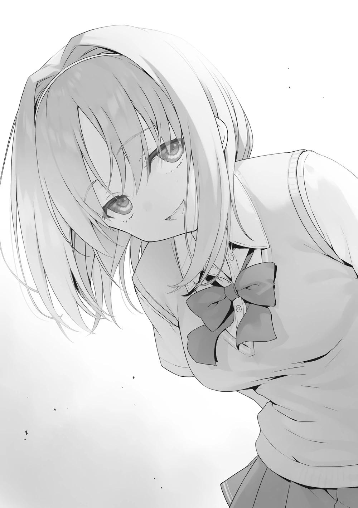
PARTE 7
Pasadas las 2 de la tarde. Falta bastante tiempo para que termine el Juego de la Búsqueda del Tesoro, pero podemos decir que hemos buscado por todas partes.
Los códigos 2D guardados en mis fotos son seis. Entre ellos, los que evalué objetivamente como de dificultad 4/5 eran tres. Probablemente podríamos elegir uno de estos para escanear.
―Por favor, encendamos la cámara.
―¿Cuál vamos a escanear?
―Puedes elegir el que te parezca mejor.
―¿Eh-ehhh? ¿Está bien que me dejes elegir? ¿Y si me equivoco?
―En primer lugar sólo conservamos unos pocos códigos 2D seleccionados.
Y existe la posibilidad de que todos ellos ya estén escaneados, así que podríamos acabar escaneándolos todos.
Nuestras posibilidades serían mejores si nos decidimos de inmediato que si lo pensamos lentamente.
―Entendido.
Satou sacó su teléfono y dejé que se desplazara por mis fotos. Pareció preocuparse por algo durante unos segundos, pero eligió una foto y encaró su cámara hacia ella. Ese es el código 2D que había encontrado bajo el sofá. Pero...
―Aah, no parece nada bueno. Dice que ya está registrado.
Era considerablemente difícil de encontrar, pero parecía que otros estudiantes también lo encontraron.
―No te preocupes. Vamos al siguiente.
Ella asintió y escaneó este código 2D sin dudarlo. Pero el 2º también había sido encontrado ya, Satou dio un pisotón de frustración.
―¡Aunque fueron tan difíciles de encontrar! ¡Qué fastidio!
Se apresuró a escanear el tercer código 2D.
A partir de ahí, Satou se quedó mirando la pantalla antes de dar un gran salto.
―¡Escaneó! ¡Mira! ¡Apareció algo parecido a un cofre del tesoro!
Había una simple ilustración de un cofre del tesoro con la palabra TAP escrita.
―Me pregunto cuántos puntos podemos conseguir...
Satou intentó mover el cofre del tesoro hacia arriba con su dedo índice, pero lo detuvo antes de que pudiera tocarlo.
―¡A-Ayanokouji-kun presiona!
Parecía que tenía algo de miedo al ver los resultados. Me entregó el teléfono.
Desde su perspectiva, participó a costa de sus preciados 10.000 puntos. Parecía tener miedo de conocer el resultado. Acepté el teléfono de Satou y toqué el cofre del tesoro en la pantalla.
―¡Wah, Ayanokouji-kun es tan audaz!
No hice nada tan grande como para ser llamado audaz. El cofre del tesoro simplemente se iluminó y una luz pálida brilló desde el interior. Y-
―¡Ah! ...Ah~
Satou se sorprendió enormemente por un segundo, pero cuando se dio cuenta de la realidad su felicidad terminó débilmente.
Y es que 1.000.000 de puntos... no aparecieron del interior de la caja del tesoro, sino 100.000 puntos. Sólo porque esperaba 300.000, 500.000 o incluso 1.000.000 de puntos, sus hombros se encorvaron ligeramente.
―Parece que el código 2D que encontramos no era tan raro como pensábamos.
― Bien~... qué pena. Pero-pero, ¡incluso si se quita la cuota de participación 90.000 puntos es suficiente!
Ni siquiera necesitó asegurarse de que esto era suficiente para alegrarse abiertamente de haber participado.
―Gracias Ayanokouji-kun.
―Debería agradecerte a ti. La que encontró este código sin escanear fuiste tú.
―...Jeje.
Satou mostró una cara feliz y avergonzada.
PARTE 8
Los alumnos que habían escaneado sus códigos para el Juego de la Búsqueda del Tesoro aún debían presentarse en la escuela.
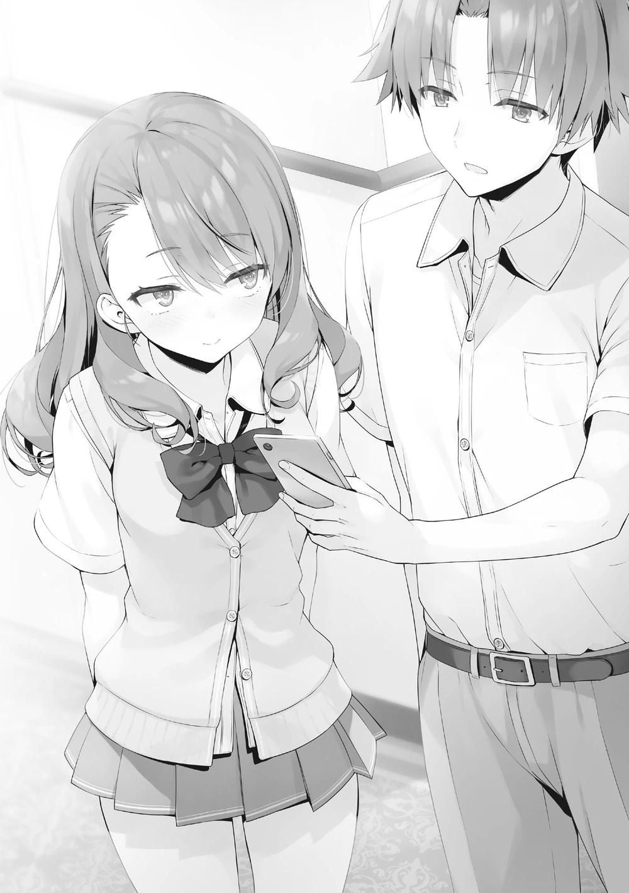
Satou y yo regresamos al punto de partida y nos dirigimos a Horikita en la recepción.
―Buen trabajo. Su procedimiento terminó.
Satou mostró honestamente su felicidad al recibir esas palabras.
―Con eso, gracias Ayanokouji-kun, por lo de hoy. Vamos a divertirnos juntos la próxima vez.
Diciendo eso, agitó su mano y se alejó felizmente. De repente gané algo de dinero, así que no es mala idea pasar el tiempo en este crucero de lujo.
―Restando la cuota de participación, ustedes dos ganaron 180.000 puntos.
Buen trabajo.
―Sí.
Por ahora parecía que la mayoría de los estudiantes ya habían alcanzado la meta. No había mucha gente que viniera.
―Parece que tú también lo tuviste difícil. ¿Pudiste descansar?
―Sí, durante una hora. Pero no me voy a quejar. Pensé en esta medida para defenderme del juego sucio yo sola y recurrí a la escuela para ello.
―Una petición, ¿eh? No es mucho, pero diste un paso para convertirte en la Presidenta del Consejo Estudiantil, ¿eh?
Si mejora su imagen con cosas como esta, será muy bien evaluada por el Consejo Estudiantil y la escuela.
―No es eso. Aunque no hubiera hecho eso la gente no habría hecho trampa, ¿verdad? Es sólo que... me gustaría ser útil.
Realmente no lo entiendo, pero la mirada de Horikita apuntaba al futuro.
―Entonces, ¿quién consiguió más puntos privados en nuestra clase?
―¿Quién crees?
Después de que me preguntaran eso, lo expresé como una pregunta y respondí.
―Espero que no seamos nosotros.
―Bien por ti, esa es la respuesta correcta. Hay una pareja que consiguió 500.000 puntos privados. Yui Wan-san y Kouenji-kun.
―¿Kouenji? Pensé que participaría, pero no con una pareja.
Había mucha gente en la sala, así que no me fijé en Kouenji.
―Yo pensaba lo mismo. No sé los detalles de por qué participó con un compañero, pero ahora ha ahorrado mucho dinero en estas dos semanas.
―Todo lo que hace Kouenji es fuera de lo común.
Pensar que además de su espantosa destreza física, incluso tenía suerte.
Aunque no sé si su compañero fue el que encontró ese código 2D.
―No poder usar a ese Kouenji de aquí en adelante es una gran desventaja para nuestra clase.
―Nunca se ha movido antes. ¿No puedes conformarte con que se lleve el primer puesto esta vez?
―Por supuesto que no puedo, ¿verdad? Para subir a la Clase A, no poder usar su poder es demasiado despilfarro. ¿No has pensado en algo?
¿Una forma de usar a Kouenji de forma efectiva? Incluso tratar de pensar en eso es un desperdicio de recursos.
―No podemos.
―Una respuesta instantánea.
Si la otra persona estuviera a la altura, habría confiado en poder controlarla yo mismo. Pero se trata de Kouenji, la única excepción a eso. He simulado varias veces cómo controlaría a todos los de nuestra clase. El único que no pude poner bajo mi control sin importar cuántas veces lo intentara fue Kouenji.
―Aunque te rindas, yo no lo haré. Su poder es necesario.
Está tratando de controlar algo que no puede ser controlado. Eso es una simple contradicción.
―¿Aunque sea una pérdida de tiempo?
―¿Estás diciendo que no necesitamos a Kouenji-kun?
―Creo que si no nos va a hacer daño, lo mejor es dejarlo en paz. Kouenji también ha ganado un punto de protección, así que es aún más seguro dejarlo solo.
―Seguramente es un pensamiento razonable, ¿no?
―Si no podemos ganar sin Kouenji, entendería estar desesperado. Pero su clase ya ha crecido hasta convertirse en una que puede luchar adecuadamente con otras clases. Y seguirán creciendo de aquí en adelante.
―Sí. De hecho, si los comparas con cómo estaban el año pasado se han vuelto considerablemente fiables.
Pero - continúa Horikita.
―Aspirar a la Clase A es mi primera prioridad y mi objetivo final, pero quiero unir a nuestra clase. Quiero guiarlos para que unan todo su poder.
No quiere que ni siquiera Kouenji se ausente ¿eh? Los ojos con los que Horikita me miraba eran demasiado sinceros. Sin pensarlo me quedé sin palabras.
Si el hombre conocido como Kouenji pudiera ser atraído a convertirse en camarada de Horikita, se convertiría en un aliado difícil de reemplazar con algo.
Pero ese obstáculo es más difícil que alcanzar la Clase A. Antes, no habría aceptado seriamente esta declaración.
Una tontería más allá de sus posibilidades. Probablemente lo habría descartado como eso. El crecimiento de Horikita es lento, pero avanza paso a paso. Bueno...
sea como sea, no puedo decir cuándo Horikita hará que hasta Kouenji se mueva.
Porque el hombre llamado Kouenji es realmente incalificable.
―¿Qué pasa?
―¿Qué?
―Parecía que estabas pensando en algo.
―No, sólo me estoy preocupando en qué voy a gastar los puntos privados que tengo.
―...Ya veo. Le darás la mitad de esos puntos a Kushida-san, así que deberías valorar los puntos privados que ganaste hoy y dejar de desperdiciarlos.
―Sí. Lo haré.
Aunque me quedara más tiempo sólo molestaría su trabajo, así que hice por irme con el ánimo bajo.
PARTE 9
Pasadas las cinco de la tarde. Antes de la cena de las seis había quedado con cierta persona y la estaba esperando. Cuando salí de mi habitación y me dirigí a la 5ª planta, me encontré por casualidad con Sudou, que estaba a 2
habitaciones de distancia.
―¿A dónde vas? Está a punto de ser la cena.
Sudou se veía como si estuviera regresando a su habitación. Me preguntó.
―Voy a dar un pequeño paseo antes de la hora de la comida.
―Suenas como un anciano. Entonces quedemos en el restaurante.
Intercambié ligeras palabras con él e intenté marcharme, pero como si hubiera recordado algo Sudou levantó la voz.
―No, lo siento, lo siento. Cierto, ¡el asunto es que estoy un poco sorprendido por algo!
―¿Que Ike y Shinohara están saliendo?
―¡Qué demonios, ya lo sabías!
―Es que lo escuché por casualidad.
―No, claro que me sorprende eso también ya que él empezó antes que yo... de todas formas, ese chico dijo que quiere estudiar conmigo. Me dijo que lo dejara unirse al grupo de estudio de Suzune.
Eso fue inesperado. Pero más que inesperado fue más rápido de lo que pensaba.
―Ser malo en lo académico es fatal en esta escuela.
Lo que más te pone en peligro de ser expulsado es, sin duda, el estudio; el deber de los estudiantes.
―Ese es mi valioso tiempo en el que puedo estar a solas con Suzune, pero si ese tipo está decidido entonces no tengo más remedio que ayudarlo ¿no?
Así que ahora para nuestros estudios de verano Kanji también estudiará mucho con nosotros.
Estudios de verano. De alguna manera parece que una vez que este viaje termine, tienen la intención de empezar a estudiar de inmediato.
Que produzca resultados enseguida depende de lo duro que trabaje Ike, pero podría mostrar un crecimiento muy rápido en el segundo semestre. Sudou e Ike podrían transformarse por amor.
―Incluso más miembros podrían unirse.
―¿Ah? ¿De verdad?
―Los estudiantes que comenzaron a querer estudiar con Horikita no se limitan a Ike.
―No es un hombre, ¿verdad?
Puso una expresión seria, cerró su distancia conmigo y me agarró de los hombros.
―No... no lo es. Es Satou, Satou.
No tenía intención de decir el nombre, pero como me estaba presionando confesé.
―Una chica ¿eh? Bueno, entonces eso es... quiero decir, ¿es Satou? Si ella sabe que no sólo yo sino también Ike estarán en el grupo de estudio ¿no participará?
―Creo que ella espera algo así hasta cierto punto... Pareció fuertemente decidida.
―Hmmm. Bueno, está bien. No importa quién venga, no tendré ganas de rendirme.
Respiró por la nariz haciendo fufufun. Me hizo sentir otro fuerte deseo de estudiar desde él.
―¿No será difícil con las actividades de tu club?
―Será difícil. Pero en primer lugar siempre he confiado en mi fuerza física.
Mi cabeza daba vueltas y quería dormir en un minuto, pero ahora, no... no, puedo concentrarme durante una hora.
Si puede concentrarse en el estudio durante ese tiempo, entonces no hay problema. Una hora de estudio, descanso y otra hora de estudio. Repitiendo este ciclo es más que suficiente.
―Pero... maldición, no puedo aceptar que Kanji tenga novia antes que yo...
Sudou se lamentó mientras reía con la frustración de su corazón.
―Por eso, lo culparé a él mientras me atempero con el entrenamiento espartano del club de baloncesto.
Parece que entrenará con dureza teniendo en cuenta el amor y el odio hacia su amigo.
―Con moderación. No es fácil que te empiece a gustar estudiar si antes lo odiabas.
―Lo sé. Yo también odiaba el estudio, ¿eh?
Después de decir eso, sacó la lengua, como si hubiera comido algo malo.
Después de separarme con Sudou, llegué a mi destino. Vi a Kushida en la cubierta y me escondí. Eran cinco minutos después de la hora en la que
habíamos quedado, así que, por supuesto, estaba esperando. Saqué mi teléfono y la llamé. Lo contestó al segundo intento.
―¿Hola?
Cuando pude confirmar su voz, comencé a caminar hacia ella en la cubierta. Los teléfonos, por naturaleza, dan prioridad a las 『 llamadas 』 . Hipotéticamente, aunque esté en modo de grabación de vídeo, si se inicia una llamada se sale automáticamente de ella. En otras palabras, la conversación entre Kushida y yo aquí se mantendrá entre nosotros.
―Lo siento Kushida, llego tarde. Estaba a mitad de comprar algo. ¿Sigues esperando?
―Sí, um - ah, ¡aquí-!
Kushida miró a izquierda y derecha, me vio y me saludó. Sin cortar mi teléfono, llegué rápidamente frente a ella. Casi al mismo tiempo, cortamos la llamada.
―Siento haberte hecho esperar. Me despisté un poco.
―Tú también eres torpe. ¿Pero qué pasó? Dijiste que tenías algo que hablar.
―Estuve un tiempo dudando sobre lo que debía hacer, pero como pensé, creo que debo revelarlo.
―¿Hm? ¿Revelar? ¿Qué?
―Sabes que estaba participando en el Juego de la Búsqueda del Tesoro,
¿verdad?
―Sí. Estabas emparejado con Satou-san, ¿no?
¿Y qué? Tenía curiosidad porque no era capaz de entender a dónde quería llegar.
―En la Búsqueda del Tesoro, el código que escaneé valía 100.000 puntos.
Así que, aparte de la cuota de participación, son 90.000 puntos. Si lo dividimos por dos, son 45.000 puntos. Creo que sería correcto darte esa mitad.
Dije eso, presenté mi teléfono y mostré el registro de mi dinero. El hecho de que acababa de recibir 100.000 puntos de ahora estaba escrito claramente.
―¿Eh? Eso fue un juego, no tienes que preocuparte tanto ¿sabes?
Kushida se sorprendió ya que no había pensado en esto. Hizo un arco con sus manos y se negó.
―Honestamente, al principio también pensé eso. Definitivamente pensé eso, pero empecé a sentir que era malvado e injusto. También existía la posibilidad de que dijeras que no lo necesitabas, pero me preguntaba si podría vivir en silencio sin decirte esto. Me avergüenzo de mi forma de pensar, así que es razonable darte esto.
―Pero...
No importa qué tipo de razonamiento presente, será difícil de aceptar desde el punto de vista de Kushida.
―Si dijera lo que realmente pienso... quiero que aceptes esto como mi sinceridad.
―¿Sinceridad...?
―Al dar la mitad de los puntos privados que recibo, estoy comprando seguridad de ti. Mientras mantenga mi sinceridad en esto, creo que tú también puedes mantener tu sinceridad.
¿Me equivoco? Apelé con mis ojos.
―No hay nada malo en conseguir aunque sea un poco más de puntos privados. ¿Verdad?
―Correcto, ¿pero no es realmente difícil para ti?
―Está bien. No es un gran problema comparado con pelear contigo.
―Es como... por el contrario, esto es un poco aterrador.
―¿Qué quieres decir?
―Tú... mira, la gente dice muchas cosas sobre ti y que eres un estudiante increíble. ¿Realmente me estás dando la mitad de tus puntos por una tregua?
―Desde mi punto de vista, he juzgado que más que Sakayanagi y Ryuuen que lucharon en la isla, hacer un enemigo de ti, a quien veo todos los días, es peligroso.
Aun manteniendo parte de su guardia en alto, Kushida asintió para dar a entender que había entendido más o menos.
―Lo entiendo. Así que está bien, ¿no?
―Por supuesto.
Usé mi teléfono y transferí los puntos privados de hoy también a la cuenta de Kushida.
―Dije que te daría dinero, pero si alguna vez tienes un problema relacionado con el dinero entonces podría ayudarte.
―¿Eh~? Eso es un poco patético Ayanokouji-kun.
Como si ser patético fuera divertido, Kushida se rio un poco.
―Pero creo que esto es mucho, mucho más inteligente que lo que está haciendo Horikita-san. No lo odio.
―¿De verdad?
―También creo que no quiero enemistarme contigo de entre todas las personas. Por favor, cuida de mí.
―Sí. Por favor, tengamos una relación en la que podamos dar y recibir.
Después de eso, al no tener ningún asunto pendiente con Kushida, me separé de ella.
UN PASADO ENTRELAZADO
Por la noche, mis compañeros de habitación se emocionaban con conversaciones triviales.
Yo estaba preocupado por Akito, pero él retrajo su energía y pasó todo el día recuperándose. No parecía tener problemas para hablar mientras estaba acostado. Aunque de vez en cuando daba señales de que estaba escuchando y contribuía con pequeños fragmentos de contenido, la mayor parte de la noche la pasé en mi teléfono mientras actuaba como espectador.
Mientras navegaba por la red a la espera de adormecerme, recibí un mensaje de chat.
[Quiero llamarte, ¿está bien?]
Ese mensaje provenía de Kei. Ha pasado un minuto desde que abrí el chat.
Normalmente tenemos una conversación al día. Por la forma en que no usó ningún emoji o sticker, pude adivinar que era algo serio.
[Estoy en mi habitación ahora mismo, así que espera tres minutos.]
Todavía no habíamos llegado a la hora del toque de queda, así que no sería difícil salir de la habitación. Después de enviar una respuesta, rápidamente me dispuse a dejar mi cama.
―Voy por una bebida.
Usé las palabras convenientes que se pueden emplear en cualquier momento y salí de la habitación al pasillo. Eran más de las nueve de la noche. No vi pasar a ningún estudiante. Desde allí fui a la cubierta y confirmé a grandes rasgos los alrededores. Después de confirmar que no había nadie, llamé a Kei.
―¿Hola?
―Perdona por ser tan repentina. Pero quería llamarte como fuera.
Dijo palabras bonitas, como una novia.
¿Es este el deseo de escuchar 『Sólo quería escuchar tu voz』 de parte de tu novia?
―¿Sabes...?
Tras una breve pausa, Kei intervino.
―He oído malos rumores sobre ti. ¿No me los vas a explicar?
―¿Malos rumores?
¿Hm? Las palabras que esperaba no llegaron. Más bien Kei parecía estar de mal humor. Hubo un largo silencio. La respuesta no llegó de inmediato.
―¿Malos rumores?
No me aguanté y pregunté por segunda vez, pero sólo pude sentirla molesta.
Ella no contestó. Al contrario, parece que sospecha de cómo repetí una frase palabra por palabra.
―¿Ni siquiera se te ocurre nada?
―No se me ocurre nada.
Respondí enseguida, pero me vinieron a la mente algunas cosas. La primera y principal era, sin duda, Ichinose. Nagumo nos vio hablar y supo que algo no ordinario estaba pasando.
Y como sabía de mi relación con Kei, no sería extraño que tocara el tema.
Incluso, aparte de eso, se me pasó por la cabeza el emparejamiento con Satou, que se me confesó una vez, y la charla con Matsushita.
―¿No te viene nada a la mente?
Hizo una pausa por un segundo y preguntó por última vez, como si estuviera juzgando.
―Nada.
Pero yo seguí fingiendo que no sabía nada. Si ella sabía de qué 『 algo 』
específico estaba hablando, entonces quiere que confiese lo que tuve con Ichinose o con Satou. Pero mientras ella no sepa nada específico, si digo esas cosas a medias, entonces sólo la haría sentir peor. Si tu carne está cortada entonces corta su hueso.
...En realidad, ¿por qué se convirtió en esto en lugar de una dulce llamada telefónica?
―¿Kei?
Cuando intenté animarla llamándola por su nombre, habló como si le temblaran los labios.
―Tú... eso... hay un rumor, ¡dicen que estás seduciendo a una menor!
―...¿Hm?
A pesar de escuchar el contenido del rumor, no entendí y ladeé el cuello. Es diferente de lo que esperaba que fuera. Al final, no decir nada para lo que no estaba preparado era la opción correcta.
―¿De dónde y cómo te has enterado de ese chisme?
―¡No lo sé! Pero... ¿por qué he oído que te has reunido repetidamente con una chica de 1er año?
Una chica de 1er año. La persona que me viene a la mente es Nanase... Como ella dijo, nos hemos encontrado y hablado mucho durante estas vacaciones. No es que nos hayamos reunido en secreto o algo así, así que hubo muchos testigos. Entendí la situación, así que esto no debería llevar mucho tiempo.
―Ella es sólo mi menor.
―¡Lo sé! ¡Quiero decir que estarías fuera si ella no fuera sólo tu menor!
En efecto.
―¡Y! ¡Escuché que te emparejaste con Satou-san en la búsqueda del tesoro!
Dijo ella. Parecía que Kei se había enterado de alguna manera de una de las cosas que me vinieron a la mente.
―Sin duda no te lo dije, pero ya que eres tú, ¿no lo sabrías de inmediato?
Hubo mucha gente que me vio paseando con Satou en la búsqueda del tesoro.
Incluso Matsushita lo sabe.
―Lo supe al instante pero ¿sabes?... lo supe pero ¿sabes?
Aparentemente llena de insatisfacción, murmuró algunas palabras que no pude escuchar.
―La verdad es que quería emparejarme con Kiyotaka.
―Sé lo que sientes, pero el orden se estropearía, ¿no?
―Pe-
―Por cierto ¿cómo te fue, estando emparejada con Mori?
―...¿Quieres que te lo diga?
―No, está bien.
Ya que el estado de ánimo empeoró, dejaré de profundizar en ella. Podía seguir escuchando sus quejas así, pero sobre todo porque el tema era sobre Satou, intentaré cambiarlo.
―Hablaste con Satou sobre lo que vas a hacer.
―¿Eh? Ah, ah sí. Claro que quería decírselo sólo a Satou-san primero.
―Bueno, no hay nada malo en eso. Por cierto, ¿Tuvieron esa conversación por teléfono o por chat?
―Por supuesto que no. Cosas así hay que hablarlas cara a cara. Fue en un café.
―Un café, eh. ¿Recuerdas que te haya escuchado alguien?
―Fui muy cuidadosa así que no, no realmente. Al menos no nos escuchó nadie de 2º año así que no te preocupes.
Efectivamente, de lo que más debe cuidarse Kei es de los de 2º año. Los de 1er año y 3er año fundamentalmente no muestran tanto interés por los asuntos amorosos de otros años escolares. Más aún si el tema soy yo. Pero con los de 3er año es lo contrario. No sería extraño que se tragaran todo lo relativo a mí.
―Ah~ pero, había chicas de 3er año en un asiento cercano así que fue un poco difícil hablar.
Kei recordó el momento en que se encontró con Satou para corregir su respuesta. Desde el punto de vista de Kei, como alguien que no sabe muchas cosas, no esperaría ser blanco de los de 3er año.
―Es bueno que ella lo haya entendido.
―Sí. Pero, ¿realmente está bien? Hacer público el hecho de que estamos saliendo.
―Por supuesto que no hay problema.
Más bien, entiendo que será necesario tarde o temprano. Si nos empujan a ello por la espalda, entonces por mucho que nos empujen, será un dolor de cabeza para lidiar con otras cosas.
―Bueno, dijiste que lo harías público, pero no es que lo vayas a declarar delante de nuestros compañeros. Lo dirás con naturalidad delante de tus amigas, y a partir de ahí lo sabrá más gente con el paso del tiempo. Eso es todo.
Tendrían muchos pensamientos y reacciones, pero no es un problema tan grande.
―Pero mira... Kiyotaka es popular.
―¿Es así?
―Uwa, es tan molesto que no sientas que sabes nada de eso...
―Entonces no tienes que decírmelo, ¿verdad?
―Sí, es cierto, pero aunque lo sepa me preocupa, así que acabaré diciéndolo ¿no?
No es que no entendiera lo que decía, pero es contradictorio.
―¿No lo declaras para librarte de sentimientos innecesarios?
Mientras uno piense que la persona que le gusta no tiene novio o novia, puede montar ataques intensos. Para evitarlo, revelan el hecho de que están saliendo con alguien. Con eso, la mayoría se rinde y deja de atacar. Por supuesto, sé bien que hay algunas excepciones, pero...
―Estoy preocupada...
Kei teme más a esas pocas excepciones que a los enemigos que no puede ver.
―Puede que aún no lo sepas, pero hay chicas que se enamoran de los chicos que tienen novia y tratan de robárselas con celo.
―Ya veo.
―¿Está bien? No perdonaré la infidelidad.
Teniendo en cuenta la dependencia de Kei, definitivamente nunca permitiría que su novio la engañara. Eso es algo que entendí incluso antes de que empezáramos a salir.
―No te preocupes. No lo haré.
―¿De verdad?
―De verdad.
―¿De verdad?
―De verdad.
Un intercambio inútil que se repite. Pero esa acción inútil era algo que podías poner bajo el proceso del romance, como mostrar tu amor.
―¿Me... amas?
Sólo para ser cuidadoso, escaneé mis alrededores una vez. Por supuesto en este momento, probablemente no había ningún estudiante que quisiera visitar la oscura cubierta.
―Sí, te amo.
Como sabía que no había nadie cerca, pude decirlo sin dudar.
―...Nfufufu.
―¿Por qué esa risa espeluznante?
Definitivamente está contenta. Pensé que me respondería con lo mismo, pero pensar que la haría reír.
―Quiero decir, fue gracioso cuando pensé que estabas diciendo eso mientras te preocupabas por tu alrededor.
Parece que mis acciones pueden ser vistas de alguna manera por Kei.
―Voy a cortar la llamada.
―Aah, espera, espera. Dilo una vez más.
"Mu."
Cuando me exigió que dijera que la amaba otra vez, mis palabras se atascaron en mi boca por un momento.
―Dije que iba a comprar unas bebidas así que tengo que volver pronto.
―¡Oye! ¡Di que me amas!
―Acabo de hacerlo.
―¡Quiero escucharlo una vez más!
Qué egoísta. No, además de eso, aunque sean las mismas palabras el peso ha cambiado tanto.
―...Te amo.
―......Pupu.
―Oye.
Kei intentó contener la risa, pero al final se le escapó.
―Sí, sabía que eras el mejor. ...nunca te entregaré a nadie más.
Acababa de decir que no tenía que preocuparse por eso ahora mismo, pero parecía que su preocupación iba a más.
―¿Está bien que no me lo pidas?
―Si te lo pido, ¿lo dirás?
―No sé...
―De acuerdo, nos vemos mañana.
―¡Un momento! ¿Ahí es donde me preguntas, no?
¿Cómo puedo decir esto? Desde hace un rato parece que me está dando una opción pero no lo ha hecho.
―Entonces dilo.
―¡Lo estás tirando por la borda! ¡Es como si no te importara! ¡No me parece bien~!
―...Por favor, dilo.
―¿Eh~? Qué debo hacer~
Me aguanté lo que quería decir y esperé la respuesta de Kei.
―... Te amo.
En breve, y mientras se reía un poco, no, mientras se avergonzaba, Kei contestó.
―Buenas noches Kiyotaka.
―Sí, buenas noches.
Después de cortar la llamada, las palabras " Te amo" que me dijo Kei resonaron en mi oído.
―No está mal.
La cosa llamada amor es realmente interesante. Fue un momento de la noche en el que pensé eso.
PARTE 1
El barco inmediatamente después cambió la fecha al 9 de agosto. Era más de la 1 de la madrugada, una hora en la que seguramente la mayoría de los estudiantes ya se habían dormido. En el bar-salón abierto sólo para adultos, tres personas se reunieron.
―Uu-, estoy cansada. ¿Por qué los profesores tenemos que trabajar hasta tan tarde todos los días? Se me va a estropear la piel. Nosotros también queremos vacaciones de verano~
Hoshinomiya expresó sus quejas tumbada boca abajo en la barra del bar.
―Pudimos descansar lo suficiente, ¿no es así? Tuvimos cinco o seis días para descansar.
―Sólo han sido dos días, ¿verdad? Estuve ocupada ayer y hoy~. ¿Qué quieren decir con el juego de bonificación de la búsqueda del tesoro? La que quiere una bonificación soy yo.
―Entiendo cómo te sientes, pero somos miembros de la sociedad, Che.
No vamos a tener largos descansos como los niños.
Chabashira se sentó al lado derecho de Hoshinomiya y la increpó.
―Si tenemos en cuenta que los estudiantes han trabajado duro durante dos semanas en la isla, no es gran cosa.
Esta vez Mashima desde su lado izquierdo la animó a aguantar.
―No me impongas los hechos por favor... No quiero escuchar, no lo escucho-Se llevó las dos manos a los oídos y sacudió el cuello con aversión.
―Entonces al menos déjennos tener vacaciones mientras estamos en el barco. Es injusto que sólo los estudiantes puedan usar la piscina y el teatro y todo eso, ¿no?
La situación la hizo llevarse los dedos a la boca todos los días por lo que tenía delante. Hoshinomiya no podía estar de acuerdo.
―Eso es trabajo.
―Una vez que te conviertas en un miembro de la sociedad, eso será lo habitual, Che.
―Ah- no, no, no los adictos al trabajo~
Ella se tapó los oídos con sus dos manos con más fuerza. Pero al poco tiempo las quitó y luego levantó su mano derecha y su voz.
―Sake fuerte con el que pueda escapar de la realidad, por favor. A cuenta del Maestro.
Luego golpeó la mesa con la mano izquierda y pidió sake.
―Por Dios... no cambias.
Chabashira suspiró exasperada al ver a Hoshinomiya.
―¿Me estás poniendo como meta ya que siempre soy bonita y joven?
―No es eso.
―¿Entonces qué~?
―...No, no te preocupes. Tratar de explicar sería inútil".
Mashima y Chabashira pidieron cerveza después. Brindaron con sus vasos.
―En el examen especial de esta vez ocurrieron cosas más salvajes. Hubo demasiadas cosas inesperadas.
―Los estudiantes gravemente heridos y los relojes rotos que obviamente se rompieron a propósito. Entonces pensar que sólo los de 3er año fueron expulsados, fue inesperado.
Hoshinomiya vació su cóctel de un solo trago y tomó aire.
―Sabía que dejar que los estudiantes tuvieran demasiada libertad sería un problema-. No obtuvimos ninguna información, pero seguro que había parejas que hacían eso y se ponían así en lugares que no podíamos ver, ¿verdad?
―Quiero pensar que al menos no cruzaron esa línea.
―Eso es ingenuo Mashima-kun. La pasión de los jóvenes revolotea y no se puede detener.
―Eso sólo va para ti.
Regañada rotundamente, Hoshinomiya pidió otra bebida inmediatamente.
―Una vez que terminen las vacaciones de verano volveremos a estar ocupados.
―Por supuesto, hay exámenes especiales que se repiten a propósito en un corto periodo de tiempo para poner a prueba el intercambio de información.
Pero se trata fundamentalmente de una rotación preestablecida. Pero dependiendo del flujo del año, hay exámenes que se traen de más de 4 años en el pasado.
―¿Quieres decir que no es tan raro que se utilicen exámenes especiales antiguos?
―Así es. Siempre y cuando el examen no tenga un 『problema.』
Mashima habló de una manera que implicaba algo, pero las dos no pensaron muy profundamente. Más bien mostraron ambición por el inicio de otro examen especial.
―Puede que se convierta en una pelea por poderes entre Sae-chan y yo~
―Parece que estás deseando eso. ¿Crees que puedes ganar si luchas conmigo?
―No es eso. ¿Pero no crees que sería mejor que Ryuuen-kun y Sakayanagi-san lucharan?
Mientras sonreía cautelosamente, la boca de Hoshinomiya apestaba a alcohol.
―Mi clase ha crecido considerablemente. No creo que vaya a salir bien.
―Hee~. Pensar que Sae-chan diría algo así-. Como pensé, Ayanokouji-kun es un chico especial, ¿así que te estás confiando?
―Efectivamente Ayanokouji es también un talento excepcional. Sin embargo, hay muchos estudiantes en mi clase que me hacen sentir potencial.
―¿Mo? ¿No estás confiando en Ayanokouji-kun?
―¿De qué demonios estás hablando? ¿Cuándo he confiado en Ayanokouji?
Parecía que estaban teniendo un despreocupado juego de pelota con sus palabras, pero para Mashima-sensei sentado en medio, no era difícil sentir terror por la conversación de ambas. Si se quedaba callado y seguía escuchando así, se convertiría en una pelea que duraría unos minutos.
―Déjenlo ahí. No tiene sentido competir aquí y ahora.
―Sí, puede que me haya puesto un poco juguetona.
Mientras expresaba su reconsideración, Hoshinomiya vertió el sake en su garganta hasta que no quedó nada.
―Estás bebiendo rápido.
―Está bien, está bien-, no soy tan débil como para derrumbarme tan fácilmente.
―No es eso. Mañana... el trabajo de hoy se verá afectado, eso quiero decir.
―Dije que está bien, no lo hará, no lo hará.
Hoshinomiya no mostró ninguna señal de que fuera a dejar de beber y pidió su tercer vaso.
―...Entonces te lo diré antes de que te emborraches. Está bien que veas el esquema del próximo examen especial.
Mashima accionó su teléfono y lo colocó sobre la mesa.
―Lo importante es el nombre del examen especial. Una vez que lo vean podrán entenderlo de inmediato.
―¿El nombre del examen?
―Intenten leerlo.
Las dos intercambiaron miradas y echaron un vistazo al teléfono casi al mismo tiempo. Y en ese instante, Chabashira-sensei inhaló. Hoshinomiya también.
Era un examen especial que Chabashira y Hoshinomiya habían experimentado cuando eran estudiantes. Y estaba previsto que ocurriera al principio del segundo trimestre.
―Hace 11 años... aunque ocurrió mucho antes, deberían recordar bien este examen especial.
Chabashira-sensei miró el nombre del examen especial una y otra vez sin saber qué decir. Hoshinomiya apartó los ojos del teléfono, tomó su tercer vaso y lo sostuvo. Al ver su reflejo, se rio con desprecio de sí misma.
―Imposible, pensar que este examen especial volvería a ocurrir ¿eh?
Chabashira se limitó a bajar los ojos en silencio sin responder.
―Pensé con seguridad que la votación de la clase del año pasado... era un sustituto de esto, ¿no es así?
Como para confirmarlo, Hoshinomiya miró hacia Mashima.
―Sólo significa que al final la escuela no tuvo más remedio que utilizar métodos similares. Parece que, si alguien del 2º año hubiera sido expulsado en el Examen de la Isla Deshabitada, el siguiente examen habría sido diferente.
―Bueno, no se puede evitar, supongo. No es que puedan hacer los exámenes escritos más difíciles para que la gente sea expulsada. La clase de Sae-chan es demasiado buena, ¿no? Así que sacaron un examen especial que no parece tener grandes problemas-
Hoshinomiya subrayó como si estuviera buscando fallos.
―Es prematuro decidir sobre cualquier problema grande. Según tu punto de vista no es más que un examen fácil.
―Pero si cometen un solo error se convertirá en un desafío. ¿Verdad?
¿Sae-chan?
Chabashira cerró los ojos y no contestó ni sí ni no.
―Así es... ustedes dos en particular sufrieron en esta prueba.
―Creo que para nosotros fue en el tercer trimestre de nuestro tercer año.
Nunca he olvidado ese día.
Sus palabras reminiscentes estaban dirigidas a ella misma y a Chabashira-sensei.
―Entonces, ¿cuánto tiempo pretendes estar en silencio? ¿No tienes ningún comentario?
Aunque le preguntaron eso, como si no hubiera ordenado sus pensamientos, las palabras no salieron de Chabashira-sensei.
―Paaatético.
Después de dar una pequeña queja, ignoró a la silenciosa Chabashira-sensei y dirigió su mirada hacia Mashima.
―¿Qué piensas, Mashima-kun? En el próximo examen especial... ¿se expulsará a alguien?
―Dejando a un lado la clase A, que está por encima del resto, la clase B y las inferiores aún tienen una oportunidad. Si lo desafían con la intención de ganar, hay una gran posibilidad de que sigan el camino que tú tomaste.
―Una premonición improbable, ¿eh?
Hoshinomiya murmuró y pidió su cuarto vaso al camarero. Su ritmo de beber fue aumentando gradualmente.
―Bueno, creo que mi clase está bien en un sentido muy malo, pero ¿qué piensas de la de Sae-chan? Ahora mismo están subiendo desde el fondo con una energía tremenda. Si aumentan sus puntos de clase aquí, pueden llegar a la clase B de golpe. Si me preguntas...
―Volveré a mi habitación.
Después de permanecer en silencio durante algún tiempo, Chabashira-sensei habló y se levantó sin terminar su primer vaso.
―Creí que al final hablarías pero vas a regresar, qué manera de aguar el ambiente-
―Lo siento, pero sigan ustedes solos.
En respuesta a Chabashira-sensei que le dio la espalda, la actitud de Hoshinomiya hasta ahora cambió completamente.
―¡Te diré qué...!
Hoshinomiya golpeó con fuerza un vaso sin alcohol sobre la mesa. Luego se levantó enérgicamente. Como si no sólo Chabashira-sensei, sino también Mashima se sorprendiera, se sacudieron ligeramente sin decir nada. Era una suerte que no hubiera ningún invitado excepto ellos tres.
―¿Cuánto tiempo vas a seguir persiguiendo a ese tonto amor?
―...¿Qué estás diciendo?
―¿Sabes la edad que tenemos ahora mismo? Tenemos 29 años, ¿sabes?
¡Estoy hablando del romance que tuviste hace cuántos años!
―Oye, bebiste demasiado rápido...
―¡Mashima-kun cállate!
―...
El camarero que estaba limpiando vasos cerca sintió que algo importante estaba pasando y se fue al baño.
―Aunque estés estancada en tu tercer año de preparatoria, eres una adulta plena pero sólo en edad. Así que estás poniendo presión en los niños de hoy... ¿haa? ¿Eres idiota?
Sin responder a esa serie de desprecios, Chabashira-sensei abandonó el lugar en silencio. El silencio fluyó entre Hoshinomiya y Mashima que quedaron en este lugar.
―A-rara, se fue.
Después de ser decepcionada, Hoshinomiya bebió el licor que dejó Chabashira-sensei y se sentó de nuevo.
―Eres una maliciosa, Hoshinomiya.
―Quiero decir, no se puede evitar. Es por todas las cosas, este examen especial salió.
―Este examen especial hizo nacer algo decisivo dentro de ti.
―Si Sae-chan hubiera elegido la opción correcta, nos habríamos graduado como Clase A, ¿sabes?
―...Como creía, todavía estás amargada, ¿eh?
―Por supuesto que estoy amargada. Fallamos y ahora somos profesores en esta escuela. Aunque realmente deberíamos haber tenido un futuro más deslumbrante.
―Después de ese examen, desde que tú y Chabashira compartieron una habitación tu vida en el dormitorio se volvió difícil.
―Después de que pasara algo así nunca pudimos vivir juntas. Podríamos haber acabado matándonos.
―Exageras... el hecho de que no pueda decir eso con certeza es un punto que asusta de ustedes dos.
Hoshinomiya le agarró el pelo y le arrancó un mechón.
―¿Nunca has dejado esa costumbre?
―Ah, no. Lo hice inconscientemente... mi precioso pelo... ¿lo necesitas?
―No lo necesito.
Ignoró el manojo de pelo que se le ofrecía y pidió una 2ª copa al camarero que había vuelto. Al ver eso, Hoshinomiya exigió un 4º trago.
―Ella no es alguien con quien se pueda compartir una habitación. Está bien si todo funciona, pero si hay problemas tu relación cambia de repente.
Tiene que ver con el amor y el futuro.
Antes de que nadie se diera cuenta, Hoshinomiya volvió a su habitual expresión divertida.
―A pesar de que finalmente llegaron a 2do año y todos sobrevivieron al Examen de la Isla Deshabitada-. La escuela está siendo cruuuel.
―En primer lugar, los expulsados deben venir de todos los años. Esa es una política con la que se construyó esta escuela. Demasiada gente ha sobrevivido en el segundo año. Pero la escuela también está reconociendo su duro trabajo adecuadamente. Es exactamente por eso que es este examen especial. Todavía no sabemos cómo resultará.
―Eso es cierto pero... ese examen saca a relucir la fealdad y la debilidad del corazón de una persona. Lo bueno es que al menos acaban de terminar el primer trimestre de su segundo año. Ah, eso también tiene que ver con que la escuela los reconozca, ¿verdad?
―Por muy corto que sea el tiempo que les queda en esta escuela, subirán la cantidad de puntos que se pueden ganar con los exámenes especiales y su dificultad. También hay apoyos con ellos en comparación con cuando lo hicimos durante nuestro tercer año, el tercer trimestre."
―Definitivamente no soy mala... Sae-chan es la que es mala...
―Eso depende de cómo pienses. Tú y Chabashira-sensei hicieron juicios correctos.
―Me lo pregunto...
Hoshinomiya detuvo repentinamente su mano mientras trataba de alcanzar un nuevo vaso de sake.
―¿Qué?
―Mi clase... al menos no llegará a la Clase A.
―¿Qué estás diciendo?
―Tú lo entiendes. No creo que puedan alcanzar a la clase de Sakayanagi.
Pero... pero, definitivamente no dejaré que la clase de Sae-chan se gradúe en la A. Para nosotros graduarnos en la Clase A es nuestro mayor deseo. Los estudiantes de la chica que rompieron ese deseo no están calificados para graduarse como Clase A. ¿Verdad, Mashima-kun?
―...¿No es un asunto diferente a este?
―No son diferentes. Definitivamente no.
―Además, la clase de Ichinose es excelente. Todavía pueden llegar a la Clase A. Probablemente serán capaces de pasar el próximo examen especial fácilmente.
―Eso no es bueno. No importa lo inhumano que sea el futuro que les espera, para triunfar como Clase A tienen que convertirse en demonios. Tal como yo lo intenté.
―¿Aunque algunos sean expulsados, dices?
―Aunque algunos sean expulsados, sí.
A pesar de ello, dejó sin decir.
―Hirata, Kushida, Horikita, Kouenji y Ayanokouji... no importa cuántas veces lo piense es demasiado injusto, ¿no?
―Al igual que el año pasado hay muchos estudiantes problemáticos, pero está naciendo una extraña solidaridad. Como si sus defectos se anularan uno a uno.
―Si sólo se aplastaran en el próximo examen.
Diciendo eso, Hoshinomiya apoyó su cabeza en el hombro de Mashima.
―Puede que esté en un estado de embriaguez... Quiero descansar un poco en la habitación de Mashima-kun.
―Si vas a dormir entonces duerme en tu habitación.
―Qué duro... ¿No hay una forma más amable de decirlo?
―Si vas a dormir entonces puedes volver a tu habitación.
―¡Eso no es tan diferente!
Ella abrazó su brazo izquierdo y acercó su cuerpo. Pero Mashima usó su fuerza y se apartó con energía.
―¿Te molesta?
―No me molesta.
―Eh-, entonces al menos llévame a mi habitación-. ¿Quieres beber allí?
Hasta mañana.
―Lo siento, pero me voy a mi habitación. Ten cuidado de no beber demasiado.
―¿No crees que esta es una oportunidad única en la vida?
―Lo siento, pero no tengo intención de involucrarme demasiado contigo o con Chabashira. No sería más que problemas.
―Tan estricto~
En el mostrador del bar donde no había nadie más, Hoshinomiya se llevó tranquilamente el sake a la boca.
PARTE 2
El mismo día los profesores bebían y se quejaban juntos. Los ignorantes estudiantes intentaban crear recuerdos con sus amigos en el tiempo que les
quedaba en este crucero de lujo. Pero yo, Horikita Suzune, intentaba aprovechar el tiempo de vacaciones que me quedaba para algo completamente distinto.
Frente a la entrada de la piscina privada, se encontraba un empleado atendiendo un mostrador.
Si hubiera habido menos gente, habría ido allí, pagado los puntos y utilizado la piscina privada. Pero la piscina privada era muy popular entre los estudiantes.
Me pregunto si las reservaciones no están casi completamente llenas. Por supuesto, son circunstancias afortunadas para mí.
―Disculpe. Estoy considerando una reservación para la piscina privada.
Hablé con el empleado que atendía el mostrador. Como si ya hubieran tenido la misma conversación con muchos estudiantes, comenzaron familiarmente una simple explicación.
―Por favor, introduce la hora que deseas. En caso de que esté ocupada, también puedes esperar a que se cancele.
El empleado dijo eso y me presentó una tabla. No vine a este lugar para disfrutar de la piscina privada. Me esforcé por tener en mis manos la tabla que tenía ante mis ojos.
―Voy a tomar prestado esto.
La recepción en los cafés y lugares similares se manejaba toda a través de tabletas o dispositivos similares. Pero con sus franjas horarias divididas en intervalos de una hora y reservaciones disponibles desde hasta unos días antes, la piscina privada tenía todo escrito en papel.
Fingí buscar un día y una hora en la que pudiera reservarla e introduje un representante. La verdad es que había tenido la intención de resolverlo en la búsqueda del tesoro de hace unos días.
Los participantes eran aproximadamente la mitad de los alumnos. En cuanto a los de 1º año, la tasa de participación superaba el 66%. Estuve mirando la letra de los alumnos de 1º que habían participado antes de que terminara la prueba, pero no había ni un solo candidato que coincidiera con la letra de mis recuerdos.
¿La persona que me entregó ese papel inesperadamente estaba dentro del 34%?
No, ¿o no participaron para que no se reconociera su letra? En fin, con eso he estado buscando el 34% restante de los de 1º año. Aunque me sorprenden los porcentajes de reservación de la piscina privada.
Incluyendo el último día, casi todas las franjas horarias están llenas. A pesar de que hay una tasa de cancelación si reservas unos días antes, había muchos estudiantes que pensaban reservar con antelación. Es realmente popular.
Había un campo en el que podía escribir el nombre de mi representante y el número de personas, pero no era necesario escribir el año escolar. Las letras del papel que vi eran realmente hermosas. Pasé las páginas para ver a todos los alumnos, pero no pude ver la letra al mismo nivel.
Pensé que no podría encontrarla fácilmente, pero es como había pensado. Las oportunidades de comprobar la letra y los nombres de los alumnos no se presentan muy a menudo. Al ver que no podía encontrarlo, era el momento de empezar mi labor.
Había que mirar todos y cada uno de los nombres y cotejarlos con la OAA.
Aunque la lista de reservación no tenía cientos de nombres, el simple hecho de cruzarlos todos me llevaría tiempo. Sería sencillo omitir a los alumnos que escribieran con palabras malsonantes o con letras habitualmente mal trazadas, pero quiero determinar a quién puedo excluir aquí con precisión y certeza.
1-B Kibayashi-kun, 1-D Mochidzuki-kun están fuera. Etou-san... participó en la búsqueda del tesoro de ayer, así que ya comprobé su letra, así que está fuera.
Como si los recepcionistas tuvieran otros deberes que atender, sostenían su teléfono en sus manos y no prestaban mucha atención a lo que yo estaba haciendo con el registro de nombres, lo cual agradecí.
Dicho esto, no puedo encontrarlos fácilmente. Para asegurarme miré a los de 2º
y 3º año que participaron en la búsqueda del tesoro en el registro de nombres, pero no había nadie que se le pareciera.
¿Dónde está la persona que escribió ese papel... Cuando terminé de eliminar a mi novena persona, ya habían pasado varios minutos. Probablemente la
recepcionista no tardaría en sospechar de mí. No esperaba que alguien me llamara por detrás.
―Um, ¿te vas a tomar más tiempo?
―¿¡Eh!? Eh, sí. Estoy teniendo un poco de dificultad para sincronizar con mi amigo.
Estaba tan concentrada en el registro de nombres que no me di cuenta del estudiante que estaba detrás de mí. Había pensado que casi no habría estudiantes que reservaran, pero me equivoqué...
Sería difícil hacerles esperar más tiempo para eliminar nombres de la lista. Si ese es el caso, entonces juzgué que sería mejor dejar que este chico se reservara primero. Por lo que pude ver era un estudiante de primer año que no era un de honor.
―Parece que aún tardaré en decidirme, así que por favor, ve primero.
―¿Es así? Entonces, por favor, discúlpame.
El estudiante masculino dijo y aceptó la tabla de mí.
Su tamaño es alto, un poco más bajo que Sudou-kun. Usé mi teléfono fingiendo que chateaba con un amigo mientras esperaba a que el visitante terminara de reservar.
¿Era porque las franjas horarias que podía tomar eran limitadas? Tomó más rápido de lo esperado. Al poco tiempo terminó de escribir y se dirigió a mí.
―Muchas gracias. Por favor, disculpa.
Al recibir de él el registro de nombres mientras se relajaba, miré enseguida su nombre.
―...Está aquí.
Nombre del representante, Ishigami Kyou. El número de invitados, cinco. Como no participó en la búsqueda del tesoro, es la primera vez que veo su nombre.
Cuando examiné su nombre en la OAA que ya había abierto, supe que también era del 1-A.
Sus letras eran tan refinadas que no sería de extrañar que dijera que llevaba muchos años haciendo caligrafía. Sin embargo, en la cosa llamada escritura es extremadamente fácil desarrollar hábitos. No era la que había visto en la isla, que era como un cuaderno de notas de una máquina. Aun así, es cierto que es la escritura más parecida que he encontrado hasta ahora. Si hubiera tenido el papel a mano, habría podido cotejarlas con detalle, pero como Amasawa-san lo rompió, eso no ocurriría. No puedo obtener ninguna prueba concluyente de que la escritura de mis recuerdos y los caracteres que Ishigami-kun escribió sean realmente diferentes.
Después de mirarlo, sentí una sensación similar a la de Gestaltzerfall.
(TN: https://en.wikipedia.org/wiki/Gestaltzerfall?oldid=492430029) Como sólo he estado mirando los caracteres durante los últimos días, parece que ha tenido varios efectos en mi cerebro.
―Lo siento, ¿podrías esperar por favor?
Hacia Ishigami-kun, que se estaba alejando, levanté un poco la voz para detenerlo. Cuando se dio la vuelta confundido, continué así.
―La verdad es que ya terminé de hablar con mi amigo. Parece que reservaremos al mismo tiempo que tú. Así que, por favor, ¿no quieres hablar un poco conmigo?
No importa cuál sea el tema, quiero obtener una pista sobre si él es o no el que aludió a la expulsión de Ayanokouji-kun.
―No es que no podamos discutirlo, pero ya le dije a mi amigo hace un momento que reservé ese espacio de tiempo.
Se giró hacia mí y levantó su teléfono hasta la cara. Por ahora he conseguido detenerlo y asegurarlo. Si la persona que tengo ante mis ojos es la que escribió el papel en la isla, entonces, aunque no sepa cómo ha llegado a mi tienda, hay suficientes posibilidades de que me conozca.
― ¿Podrías mostrarme el registro una vez más?
―Por supuesto. Lo siento por esto.
―No, no me importa Horikita-senpai.
Me llamó por mi nombre. Los latidos de mi corazón se aceleraron un poco.
―...Sabes mi nombre. Pero no recuerdo haber hablado contigo.
―En el examen especial justo después de haberme matriculado, memoricé más o menos los nombres de los de 2º año que son buenos en lo académico.
La conveniente OAA también podía usarse para memorizar nombres de otros años.
―Tienes buena memoria. También tenía la intención de memorizar a los estudiantes que eran buenos en lo académico hasta cierto punto, pero no me fijé en ti, Ishigami-kun.
―No soy de los que destacan.
Sin discutir ni dudar de mí, nuestra conversación se desarrolló sin problemas. No pude obtener nada decisivo, pero como pensé, su escritura me da una sensación diferente. Pensando que sería imperdonable retenerlo por más tiempo, me dispuse a despedirlo.
―¿Puedo preguntarte algo, Horikita-senpai?
Sin embargo, esta vez Ishigami-kun me habló.
―Cuando me llamaste, dijiste que tenías la intención de memorizar a los estudiantes con alta capacidad académica, pero que no te habías fijado en mí,
¿verdad?
―Sí. ¿Pasa algo malo?
Aunque no recuerdo haber dicho nada extraño...
―¿De verdad no te acuerdas de mí?
Confirmó como para asegurarse de algo.
―Por supuesto, es cierto.
La verdad es que no tenía ningún recuerdo de Ishigami-kun.
―Entonces, ¿cuándo te enteraste de que era bueno en lo académico? Si fue mientras arreglabas una reservación con tu amigo, entonces creo que abrir la OAA y confirmar allí habría tomado algo de tiempo.
En respuesta a su aguda distinción que no había pensado yo, no fui capaz de responder de inmediato. Nada me resultó extraño hasta que vi su nombre en el registro de nombres. Pero, efectivamente, como dijo Ishigami-kun, era extraño que yo supiera que tenía una alta capacidad académica.
Pensé que lo habría dicho antes, pero se tomó su tiempo para decirlo. Justo cuando estaba a punto de irse sin inconvenientes. Es como si hubiera esperado a que yo bajara la guardia entonces.
―Resulta que tenía abierta la OAA. Tu nombre estaba en la lista de reservaciones, así que revisé tu cara por si hablaba contigo.
Es una excusa rebuscada pero no necesariamente imposible. Ishigami-kun terminó de charlar con su amigo por teléfono y cambió despreocupadamente la hora de su reservación.
―¿Es así? Siento mucho haber sospechado de ti de forma extraña.
―No pasa nada. Estabas un poco sorprendido, así que es comprensible que hayas sospechado.
―Entonces, discúlpame.
―Ah... claro. Ishigami-kun, gracias de verdad por esto.
―No me importa, pero...
Estaba a punto de decir algo, pero se veía como si estuviera dudando sobre sus próximas palabras sólo un poco.
―¿Qué pasa?
―Nada. Volvamos a vernos, Horikita-senpai.
―Sí. Nos veremos de nuevo.
No se desarrolló como había pensado. Ishigami-kun se puso de espaldas a mí y empezó a caminar. No creo que su letra coincida, pero es un estudiante extrañamente interesante.
Ahora mismo parece que debo escribirlo en una zona gris, cercana al blanco.
Me quedé quieta con el registro de nombres en la mano mientras lo veía alejarse hasta que ya no se pudo ver. Como ya tengo una reservación, no sería natural que examinara el registro de nombres.
Tengo que acordarme de reservar tiempo para cancelar esto. Y como no he conseguido ninguna pista, tengo que pensar en lo que haré a continuación.
―Estás poniendo una cara bastante difícil~ Horikita-san.
Curiosamente, Hoshinomiya-sensei se presentó y me llamó. Estaba acompañada de su Kanzaki-kun de la clase que ella manejaba cuando se encontró con mis ojos.
―¿Es así? Aunque no creo que sea diferente a lo de siempre.
―¿De verdad? Tal vez...
Lo que más me molesta es que Hoshinomiya-sensei coloque su mano en la pared.
―Um, ¿no se siente muy bien?
―¿Aah~ esto? No te preocupes por esto, es una enfermedad propia de los adultos.
¿Una enfermedad propia de los adultos? Me pregunto qué tipo de enfermedad es...
―De todos modos, el chico guapo de hace un momento... u-mm, quién era~. Me parece que lo he visto antes en alguna parte.
El que acababa de pasar Hoshinomiya-sensei no podía ser otro que Ishigami-kun.
―Es Ishigami-kun de la 1-A.
Antes de que hubiera respondido, Kanzaki-kun contestó desde su costado.
―¿Eh? ¿Uno de 1er año? Bueno, si fuera de 2º o 3º año sería natural que los conocieras pero...
Hoshinomiya-sensei ladeó el cuello confundida.
―¿Qué pasa? ¿Es algo relacionado con él?
Si pudiera obtener alguna pista... pensé y pregunté.
―No, aunque me parece que lo he visto en esta escuela una vez hace bastante tiempo... puede que me equivoque. Lo siento Horikita-san, ¡soy un poco inútil!
Hoshinomiya-sensei se tambaleó sobre sus pies mientras corría hacia la cubierta.
Pensando que algo iba mal, la perseguí.
―¡Ah, ugugu-hiii!
No sé muy bien por qué, pero ella gritó de dolor mientras salía. Y, después de que hiciera un llamativo sonido uu desde su garganta, Hoshinomiya-sensei se llevó la mano a la boca y se agarró a las barandillas de la cubierta.
―¡Orooroorooro!
Una chispeante (aunque en realidad no era tan bonita) ola de vómito fue arrastrada por la brisa marina hasta el océano. Yo llegué un poco más tarde que Kanzaki-kun, y juntos sólo nos quedamos mirando. Me pregunto qué demonios nos está mostrando...
―Sensei... creo que hay muchos problemas con eso.
Señalé su sentido de la higiene y la moral.
―¡Uuu, el mareo y la resaca se mezclan, lo siento Horikita-sa-orororo!
Al menos lo único que había debajo de nosotros era el mar.
―Lo siento, como pensaba, volveré a mi habitación y dormiré... Estaba en medio de la conversación contigo Kanzaki-kun sorryy.
―Por favor, no se preocupe. La llamaré de nuevo.
―Y perdón por mostrarte algo raro también Horikita-san... ¡upu!
Mientras agitaba su mano, inmediatamente la devolvió a su boca y corrió de vuelta a la nave.
―...Qué persona tan ocupada.
―Sería extraño si no estuviera acostumbrado a esto.
―¿Has visto esto muchas veces?
―En nuestras clases por la mañana, nos lo ha mostrado hasta tres veces.
Eso es... cómo decirlo, el pésame. Cuando ya no pudimos ver a Hoshinomiya-sensei, hice una pequeña reverencia a Kanzaki-kun y me marché.
―Horikita, ¿qué tipo de relación tienes con Ishigami?
Me llamó con palabras inesperadas.
―¿Qué clase, dices?
Como el verdadero significado de sus palabras no estaba claro, no pude responder con nada más que eso.
―Estabas hablando con ese tipo, ¿verdad?
―Por tu forma de hablar, parece que lo conoces desde hace tiempo.
También sabes su nombre.
―En el examen que tuvimos justo después de ser promovidos a 2º año, tuvimos muchas oportunidades de contactar con los de 1º año.
La mayoría de los estudiantes excelentes de 1er año estaban dentro de las clases de Sakayanagi-san o Ryuuen-kun. No sería de extrañar que Ishizaki-kun lo conociera por eso, pero... Es un poco inesperado que Kanzaki-kun, con quien normalmente no hablo, lo inicie.
―Terminé encontrándome con él en las reservaciones de la piscina privada. Entonces-
Aunque di una explicación sencilla, Kanzaki-kun pareció discretamente no entender algo.
―Por cierto, desde tu punto de vista, ¿es un menor en el que puedo confiar?
Todavía no sé hasta qué punto puede ser un testigo con respecto a las pistas que estoy persiguiendo.
Por lo tanto, quiero obtener información aunque sea de una persona más.
―No hay nada que criticar de sus estudios. Es lo que dice la OAA.
―Sí, fue declarado A sin ninguna queja.
Sin embargo, en contraste con eso, su capacidad física fue designada como una baja D.
―Pero ser capaz de estudiar no equivale a ser digno de confianza.
―¿Por qué quieres saber si se puede confiar en él? No creo que tenga nada que ver con las reservaciones.
Ahora mismo, estamos en medio de las vacaciones de verano sin que haya exámenes especiales. De hecho, no sería extraño aunque tuviera curiosidad por ese punto. Tenía curiosidad por Ishigami-kun así que le pregunté, pero terminemos esto aquí.
―Está bien, no te preocupes. Sólo quería preguntar más o menos.
Como no podía darle información relacionada con la escritura traté de hacer avanzar la conversación. Pero sin quitarme los ojos de encima continuó.
―No es que no tenga los recursos para determinar si se puede confiar o no en ese hombre.
Es una forma extraña e indirecta de decirlo, pero Kanzaki-kun sabía lo de Ishigami-kun.
―Si puedes responder a mi pregunta, no me importa hablarte de Ishigami.
Lo juzgué en una zona gris cercana al blanco, así que no había necesidad de forzar una conversación. Pero la expresión de Kanzaki-kun en ese momento era diferente a la calma que suele mostrar. Eso me preocupó.
―¿Una pregunta? ¿Qué es?
―Durante un rato aquí voy a preguntar sobre tu clase.
―...¿Mi clase?
―Particularmente entre ellos... Quiero saber la verdadera fuerza de Ayanokouji.
―No sería capaz de responder aunque me preguntes eso. ¿No puedes preguntarle directamente?
Aunque me sorprendió en mi corazón que el nombre de Ayanokouji-kun apareciera aquí, traté de evitar ese tema.
―Si lo hubiera hecho, no me habría respondido con sinceridad, ¿verdad?
―Puede que sea así. Pero tampoco te puedes fiar de mis palabras, ¿no?
―Una consulta es suficiente.
―Llevo mucho tiempo con él, pero no sé nada de él.
―No saber nada de él es demasiado exagerado. Incluso hipotéticamente, si te llamas a ti misma líder de la clase, entonces deberías saber sobre tus compañeros hasta cierto punto.
―Todavía no me he ganado la confianza de todos mis compañeros. Eso va para Ayanokouji-kun también.
Todavía no tengo las calificaciones para llamarme orgullosamente una líder.
Como mínimo, no puedo ser alguien como Sakayanagi-san, Ichinose-san o Ryuuen-kun.
―¿No puedes responderme honestamente? Para tu clase tiene un gran potencial de lucha.
―Sólo por lo vigilante que estás, veo que puedes sentir su valor hasta cierto punto.
Independientemente de su fuerza real, estoy agradecida de que haya escatimado el esfuerzo de pensar.
―¿Tienes algo más que quieras preguntarme?
―No, lo único que me preocupa ahora es eso.
Si ese fuera el caso, entonces no hay nada que pueda hacer aunque no me hable de Ishigami-kun. No puedo continuar con esto desde aquí. Eso es lo que pensé, pero...
―El estudiante conocido como Ishigami es excelente, compasivo y fuerte.
Ya es reconocido como el líder de la 1-A. Todos sus compañeros seguramente ya confían en ese hombre con todo su corazón. 'Él encarna las partes buenas de Sakayanagi e Ichinose', podría ser la forma más fácil de decirlo.
―Esa es su fiabilidad ante sus camaradas.
―Sin embargo, eso sólo se limita a sus camaradas en última instancia. No se aplica a los que amenazan a sus camaradas. Es probable que sea del tipo de los que muestran sus colmillos sin piedad.
Lo había visto como un estudiante de modales apacibles, así que es difícil imaginarlo con el material que tengo ahora.
―Entonces, ¿qué tipo de actitud adopta con las personas que no son ni enemigos ni aliados?
―Si no son ni enemigos ni aliados, entonces para él son irrelevantes.
―¿Irrelevante?
Kanzaki-kun que estaba hablando ante mis ojos dejó de moverse.
―...Sí. No deberían importarle las cosas que no tienen significado para él.
―Me dijo: “Nos veremos de nuevo”. ¿Dejaría a alguien irrelevante con palabras que invitan a reunirse de nuevo?
―¿Ishigami? No, no es un hombre que diría cosas así a la ligera.
¿Realmente lo dijo?
―Si no he oído mal. De todas formas, parece que sabes bastante sobre él.
Me pregunto si hay algo sobre Kanzaki-kun e Ishigami-kun aparte del caso que estoy siguiendo.
―Definitivamente no sé mucho. Después de todo, nunca he interactuado con él ni siquiera una vez.
Después de murmurar para sí mismo en una especie de soliloquio, continuó así.
―Es un hecho que ese hombre no muestra interés más que por sus enemigos o aliados. En otras palabras, estás catalogada como una de esas cosas en la mente de Ishigami.
―Aunque digas eso todavía no lo entiendo del todo.
Hoy, me encontré con Ishigami-kun por primera vez. Antes de eso, nunca me he encontrado cara a cara ni intercambié saludos con él ni siquiera una vez.
No soy ni claramente una enemiga ni claramente una amiga. Ese es el análisis normal.
―Tener una conexión con alguien sin saber nada de él siempre ocurre.
―¿Entonces mis acciones lo han afectado indirectamente?
―No puedes eliminar esa posibilidad.
Había partes que no podía entender para nada en las palabras de Kanzaki-kun.
Kanzaki-kun pensó durante un rato. Al poco tiempo, murmuró en voz baja.
―Te daré una advertencia. No te pongas en contacto con Ishigami más que esto.
―En primer lugar, nunca he tenido la intención de hacerlo. Mientras me adviertes, ¿hay algún otro de primer año del que deba estar al tanto?
―¿Otros de primer año?
Por el momento no tengo ni una sola persona a la que pueda llamar sospechosa.
Quiero pistas. Si el nombre de Amasawa-san o de alguien más sale a la luz, su declaración también tendrá significado.
Eso es lo que pensé pero...
―El único de 1er año del que deberías acordarte es Ishigami.
Kanzaki-kun respondió, se dio la vuelta y comenzó a caminar. En su camino se cruzó con Ibuki-san, que había estado mirando hacia aquí, pero no hizo contacto visual con él.
―¿Eres muy amiga de Kanzaki?
―No, ¿en absoluto? Hoy casualmente compartimos algo de lo que hablar.
¿Pasa algo?
―Odio que la gente se haga la lista conmigo.
Es inútil preguntarle en serio.
―¿De qué hablaron?
―Ishigami-kun de primer año. Su letra era un poco como la que estoy buscando.
Diciendo eso, le mostré el perfil OAA de Ishigami-kun al que había accedido.
Clase 1-A Ishigami Kyou
Habilidad académica A (95)
Habilidad física D- (25)
Pensamiento crítico B+ (77)
Contribución social D (31)
Fuerza general B- (61)
―Además, no pude discernirlo por su forma de hablar y su actitud, así que fue un poco siniestro.
―¿Hmm? ¿Quieres decir que es sospechoso para ti?
―No lo sé. Pensaba que estaba en una zona gris cercana al blanco pero...
si esta evaluación de la habilidad física no es cierta, entonces podría volverse sospechoso de inmediato.
Aunque dije eso, no tenía forma de verificarlo ahora mismo.
―Este Ishigami es blanco, ¿sabes?
Como para negar mi suposición, Ibuki interrumpió.
―¿Cómo puedes decir eso?
―Anteayer, desde un piso desde el que podía ver la piscina, estaba mirando a la gente que jugaba.
―¿Sola? Qué soledad.
―¿Ja? ¿Debo dejar de hablar?
―Era una broma, continúa.
―Por Dios... es alto, así que sobresale un poco. Entró en mi visión. Ni su mitad superior ni la inferior están entrenadas. Tiene una complexión normal.
Definitivamente nunca ha entrenado su cuerpo. El tipo que estás buscando es alguien fuerte como Ayanokouji o Amasawa, ¿verdad?
―¿Podría ser que la razón por la que vino a la piscina fue... para buscar gente entrenada?
¿Por fin te has dado cuenta? Como si dijera eso, Ibuki se encogió de hombros y continuó.
―La fuerza y el cuerpo siempre están en proporción. La gente que puede moverse tiene cuerpos tonificados, y si alguien tiene fuerza sería extraño que no tuviera músculos.
Sería una historia diferente si se tratara del juicio de un aficionado. Pero Ibuki era más o menos una artista marcial. Si ella vio la mitad superior de Ishigami-kun, entonces este dato es auténtico.
―Te fijaste en un buen momento.
Si la información de Ibuki-san es correcta, entonces su habilidad física era sin duda alrededor de D-. Por supuesto, no era como si estuviera garantizado que fuera una persona fuerte por mi suposición... Parece que puedo juzgarlo como completamente blanco.
―En cualquier caso, nuestras vacaciones terminarán pronto. Lo siguiente es a partir del inicio del segundo trimestre.
―¿Cuánto tiempo vas a hacer esto?
No entiendo la sensación de querer exasperarse, pero ahora mismo no tengo ninguna prueba decisiva. No tengo más remedio que ir con paso firme durante un tiempo.
PARTE 3
El momento en que la mayoría de los estudiantes se dirigieron hacia las instalaciones dentro del barco. La estudiante de 1er año de la clase A, Amasawa Ichika, se dirigió a una habitación de invitados donde la esperaba una estudiante.
―Si tus compañeros de habitación regresan a esta hora, ¿qué piensas decirles? Eso es lo que normalmente diría, pero ya calculaste que sin duda no regresarán, ¿no es así?
En contestación a la pregunta de Amasawa, se rio ligeramente y sin respuesta.
―¿Entiendes la situación actual? Nanase-chan, Horikita-senpai, e incluso Ryuuen-san. Todos y cada uno de ellos te están buscando con frenesí. ¿Está bien dejarlo así?
―Está bien. Mis planes están avanzando de manera interesante.
―Entonces cuéntame también los detalles de ese plan-Takuya.
Al ser llamado Takuya, el Yagami Takuya, registrado bajo la 1-B, se levantó tranquilamente de la cama.
―Tú tampoco estudias, Ichika.
Cuando Yagami se acercó a ella, Amasawa, descaradamente en guardia contra él, lo miró sin pestañear. Porque en el instante en que parpadeara, podría recibir algún tipo de ataque violento.
―No voy a levantar la mano en un lugar como éste.
―Yo también quiero creerlo.
―Efectivamente, ya no eres una estudiante de la Habitación Blanca. Así que para mí eres una enemiga ―Extendió su brazo derecho y acarició suavemente el flequillo de Amasawa―. Eso es lo que pensaba, pero... no te reconozco, de entre todas las personas, como tal.
―Arara, me halagas.
―Eso era una broma. Como ahora eres una persona normal, no puedes hacer ninguna tontería.
―Ya que nuestra conversación de ahora podría ser grabada.
―Si es que puedes hacer lo que quieras.
Yagami comprendió que no perdería nada si esta conversación era grabada. Si Amasawa estaba completamente del lado de Ayanokouji, entonces podría haberle hablado simplemente de Yagami. Incluso si él no creyera que ella estaba diciendo la verdad, podría por lo menos hacer que él vigilara a Yagami.
―La razón por la que te llamé aquí fue porque quiero averiguar tu verdadero motivo. ¿Quieres proteger a Ayanokouji y obstruir repetidamente mis planes desde el fondo de tu corazón?
―Está claro cuál es~
Yagami se rio de la broma de Amasawa y soltó las puntas de su pelo.
―Hay demasiadas cosas, así que sería molesto señalarlas todas. Vamos a escuchar el punto que me obligó a cambiar mis planes. En la isla, ¿cuál fue la razón por la que obstruiste a Kushida y Kurachi, a quienes había enviado tras Ayanokouji?
―No necesito explicarlo, ¿verdad? Porque eso perjudicaría a Ayanokouji-senpai. Nanase-chan y Kurachi-kun. No quería ver una escena en la que esos dos, que no tienen nada que ver con él se pelearan. Seguramente él habría sido capaz de escapar sin problemas, pero sin duda sería peligroso.
―Sí. De hecho, ya sea Nanase o Kurachi, sería capaz de enfrentarse a ellos sin problemas. Sin embargo, si hubiéramos obtenido la grabación de su enfrentamiento con ellos, habríamos ganado una moneda de cambio. Aunque Ayanokouji le hubiera quitado la tableta a Kushida por la fuerza, no habría podido anular el envío. Y si la hubiera destruido físicamente entonces surgirían otros problemas.
Por culpa de Amasawa, que se anticipó a esas acciones, sus planes se detuvieron.
―¿Estás enfadado?
―¿Cómo podría estarlo? Al final creo que se hizo una presentación más interesante. Pudimos ver su disposición y la certeza de su juicio. A pesar de que sintió un ataque no optó por utilizar la búsqueda del GPS. Eso es porque leyó con precisión que, aunque lo hiciera no habría sido más que una molestia. Si fuera una persona normal entonces hubiera sido normal usar la búsqueda por GPS y perseguir a Kurachi y Kushida como hizo Nanase.
Incluso después de regresar al barco no mostró ningún cambio en sus acciones como resultado de eso.
―Nanase-chan y Ryuuen-senpai acabaron adentrándose en el oscuro bosque. No parece que se hayan encontrado antes. Aunque en el futuro interroguen a Utomiya-kun, él no tiene nada que ver con esto. No saldrá nada de ello. ¿Pero qué hay de Horikita-senpai? Ella recibió una pista del papel en el que escribiste. Parece que está tratando de descubrirlo. Para hacer que la gente deje su letra en el registro de nombres de la búsqueda del tesoro, ella pensó un poco.
―Si le doy un poco más de pistas, es probable que tarde o temprano me encuentre.
Yagami no parecía tener miedo. Al contrario, parecía estar deseando hacerlo.
―¿Así que el envío de ese 『papel』 también fue a propósito?
―Por supuesto que también es mi montaje. Quiero que lo haga lo mejor posible y me alcance, ¿ves?
Por esa razón, Yagami estaba sembrando suficientes pistas. Antes de que se lo dijeran, Amasawa lo entendió bien.
―¿Qué viene ahora? Si ella coteja tu escritura, entonces esa información llegará también a los oídos de Ayanokouji-senpai.
Entonces sería sospechoso de ser un estudiante de la Habitación Blanca.
―Nunca confió en mí en primer lugar. Inclusive se ha dado cuenta y ha valorado las diversas mentiras que he esparcido. Sin embargo, este método tan largo fue porque Tsukishiro estaba en el camino. Ahora que se ha retirado hay menos necesidad. No tendría sentido aplastar a Ayanokouji desde un escenario preparado y con ventaja.
―¿Entonces está bien si te descubren?
―Eso es lo que significa. No creo que me importe si lo descubren.
Desde el principio, Yagami ha tenido la intención de luchar contra Ayanokouji de frente. Pero antes, si hubiera hecho algo imprudente, podría haber sido obstruido por Tsukishiro. Los diversos planes que hizo incluso mientras seguía a Tsukishiro fueron todos para ganar tiempo.
―Pero ahora que el Examen de la Isla Deshabitada terminó no tenemos ninguna oportunidad de pelear con los de 2do año en este momento ¿verdad?
Creo que sería mejor que volvieras a la Habitación Blanca antes, ¿sabes?
Desde la perspectiva de Amasawa que no quería volver, ser excomulgada era algo bueno. Pero para Yagami era el único lugar al que debía volver.
―Necesito aplastarlo en forma perfecta. Mi atraso en los estudios se puede dejar de lado por mucho que éste sea.
Su sonrisa mostraba torpemente sus dientes. Era completamente diferente a su habitual frescura.
―Realmente tu personalidad es retorcida en otros puntos que la mía.
Amasawa continuó asombrada.
―Utomiya-kun también da pena. Aunque sólo piensa en sus amigos, imaginar que tuvo que unirse a ti para proteger a Tsubaki-chan. Se enfadaría si se enterara de que fuiste tú quien hizo expulsar a su compañero de la clase C-
―Desde el principio supe que era una persona torpe. Creo que después de perder a uno de sus compañeros querrá evitarlo la próxima vez.
Originalmente nunca se habría unido a mí, pero fue fácil hacer que lo hiciera convirtiendo a Housen en nuestro enemigo común. Me metí en los bolsillos a Tsubaki y Utomiya, dejé que se desarrollara un plan que nunca funcionaría y comprobé las cartas de las manos de Ayanokouji. Gracias a eso, vi que estaba vinculado con la líder de la 2-A, Sakayanagi.
―Ah~, creo que me visitó Arisu-senpai, cierto.
―Ella podría interferir en mi batalla contra Ayanokouji a partir de ahora.
Necesito pensar en una manera de lidiar con ella.
―Sí, sí. Haz lo que quieras.
Amasawa se había cansado de ver a Yagami hablar durante mucho tiempo.
Suspiró con aburrimiento. Cuando está de buen humor, si lo dejas en paz Yagami hablará consigo mismo indefinidamente como lo estaba haciendo ahora.
Corría el riesgo de que se descubriera su verdadera identidad. Estaba disfrutando de esta situación más que nadie.
―¿Terminaste de explicarme? ¿Puedo irme ya?
―Antes de eso, la razón por la que te llamé fue porque quiero confirmar tus pensamientos, Ichika.
―Hm~, ¿pensamientos?
Yagami mostró una sonrisa infantil y capturó ambos antebrazos de Amasawa en un instante.
―¿¡…!?
Amasawa había estado manteniendo la guardia alta para poder esquivar con toda seguridad. No la había bajado, pero no fue capaz de reaccionar.
―¿Utomiya o yo? Todo el mundo lo sabrá dentro de poco. Comenzará a partir de ahí.
―...¿Quieres decir que tendrás esa pelea seria que has estado deseando?
―Mientras ambos reconozcamos al otro como enemigo, lucharé contra él con mi verdadera fuerza.
―No seas indirecto. ¿Y si lo resuelves con tus puños como los hombres?
Tu habilidad marcial rivaliza incluso con la de Ayanokouji-senpai.
―No usaré la violencia más allá de lo mínimo.
―Bien dicho.
Ella no estaba acostumbrada a que el poder de sus brazos fuera retenido.
Incluso Amasawa no fue capaz de liberarse. Aunque hubiera intentado un enfoque diferente, mientras no fuera con toda su fuerza, no sería ni siquiera una pelea.
―¿No puedes entender que la razón por la que hago esto es porque es lo mínimo?
Amasawa respondió con una risa, pero estaba imaginando lo que sucedería a partir de ahora, numerosas veces dentro de su cabeza. Pero por muchas repeticiones que hiciera, no conseguía descubrir un patrón que le permitiera salir de esta situación.
―La razón por la que te llamé hoy aquí fue en realidad porque pensé en incapacitarte permanentemente. No importa cómo decidas pelear a partir de ahora, como me conoces no serás más que un estorbo. ¿Te diste cuenta?
―Ajajaja~, puede que no tenga gracia.
Cuando la cara de Yagami se acercó directamente a ella, Amasawa comenzó a prepararse emocionalmente. La presión de sus manos sobre sus antebrazos desapareció, y ella se liberó.
―Es una broma.
Él se rio amablemente como siempre y puso su mano en la puerta detrás de Amasawa.
―Qué broma más mala-
―Lo siento, lo siento. Pero realmente pensaba aplastarte hoy. Pero me detuve.
―Uwa, ¿de verdad?
Ante esa respuesta, Amasawa se apartó y se agachó.
―Desde que escuché que fuiste castigada por Shiba-sensei. No devolver el golpe fue el movimiento correcto.
―Si te alejan una vez, hazte el doble de fuerte y vuelve. He estudiado eso desde que era pequeña. ¿Pero realmente está bien dejarme ir?
―Sé que puedes limitarte a observar en silencio. Si hubieras hecho un juicio completo con respecto a Ayanokouji entonces habrías terminado con esto.
―El Senpai que anhelo y mi amigable colega son difíciles de sopesar entre sí, ¿sabes?
―No te preocupes. La batalla en la que tenemos que ganar contra Ayanokouji está en la mente. Él no usará la violencia contra mí. O lo expulsan a él o a mí.
Mientras decía eso, Yagami abrió la puerta y como un caballero permitió que Amasawa saliera.
PARTE 4
La sala de conciertos pasadas las 2 de la madrugada. Abrí silenciosamente la pesada puerta. En esta gran sala sólo había una persona, sentada de espaldas a mí.
Con el suficiente silencio como para que incluso mis pasos en la alfombra sonaran, me acerqué a esa persona.
―No está permitido que los estudiantes salgan de sus habitaciones a esta hora.
―No diga eso. No tenemos ninguna posibilidad de estar a solas con seguridad, excepto ahora. Se hará responsable si alguien nos ve, ¿verdad?
Chabashira-sensei.
Chabashira-sensei ni siquiera intentó darse la vuelta.
―No te preocupes. Las patrullas de los profesores sólo duran hasta las doce.
―Entonces está bien. ¿Y por qué se molestó en llamarme aquí?
―Después de estas vacaciones de verano comenzará el segundo trimestre. Entonces comenzará el próximo examen.
―Sí. El año pasado tuvimos el festival deportivo.
―Sí. Pero este año es diferente. Antes se realizará un examen especial.
―¿Está bien que me de esa información?
No debería estar permitido que los profesores den a determinados alumnos información que les dé ventaja sobre el resto de la clase.
―¿O el próximo examen especial ya comenzó?
―No, eso no es cierto.
Luego me llamó a este lugar y me dijo que todo esto era a juicio de Chabashira-sensei. Para una profesora principal que normalmente no respalda a su clase, esto es inesperado. Como si estuviera pensando en algo, de repente se quedó en silencio.
No había nada que pudiera hacer aunque siguiera de pie junto a ella, así que sin ninguna razón real me dirigí al escenario. Normalmente, esta sala de conciertos sirve para que los estudiantes aprecien la música.
Allí hay un gran piano de cola de alta calidad. Tal vez porque esta noche también hubo una actuación, naturalmente, no hay polvo en él en absoluto.
―El director interino Tsukishiro fue tan lejos como para moverse por su cuenta para tratar de eliminarte en la isla. Aunque tu padre sea una persona famosa, esa persistencia es anormal.
―Eso es cierto. Pero si tuviera que hacer una corrección, sería que desde un principio Tsukishiro nunca tuvo interés en ser el presidente del Consejo.
Simplemente utilizó ese puesto para mi eliminación y nada más.
― ¿Quieres decir que había tanta influencia en juego?
Chabashira-sensei no lo entendió del todo. Se cruzó de brazos.
―¿Tiene ya ganas de hablar?
―...Sí.
Chabashira-sensei hizo una pausa para respirar y comenzó a hablar lentamente.
―¿Cuál es tu análisis de tu clase?
―¿Análisis, significa?
―¿Crees que tienen el poder de ascender a la Clase A?
―¿Es algo que le preguntaría a un estudiante de su propia clase?
―Quiero escucharlo de ti.
Raro, es lo que no era esto. Chabashira-sensei-sensei estaba pensando en algo en esa medida.
―Ya veo. Creo que tienen el mayor potencial dentro del 2º año sin duda.
Pero eso no significa necesariamente que si se les deja solos ascenderán a la Clase A. Es casi imposible alcanzarlos con Sakayanagi a la cabeza.
Los profesores deben entender bien esta escuela.
―Creo que la condición mínima es que nuestra clase esté unida. Y
Chabashira-sensei, usted está incluida en eso.
Después de decir eso, Chabashira-sensei me miró sorprendida. Una cara que decía que ella misma lo sabía.
―Yo... Para ti, ¿como qué clase de profesora me ves?
Si tuviera que decirlo, Chabashira-sensei ha interactuado con mis compañeros de clase con frialdad hasta ahora. Si acaso pasaba todos los días como si se separara de nosotros, como si nos abandonara.
―Una profesora que no puede desechar la esperanza, aunque crea que no puede ganar. Así lo diría en pocas palabras.
―Qué duro.
―El hecho de que intentara utilizarme y la impresión que me causó no ha cambiado en absoluto, ni siquiera ahora.
―Sí, es como tú dices.
Mientras no corrigiera ese error de corazón, Chabashira-sensei no cambiaría.
―No obligue a los estudiantes a trabajar duro porque quiere llegar a la clase A usted misma. Trabaje duro por el bien de los estudiantes que desean llegar a la Clase A.
―Ayanokouji...
―Si hace eso, la respuesta natural vendrá. Eso es lo que pienso.
―...Dijiste que nuestra clase tenía que unirse.
―Sí.
―Y naturalmente estás incluido ahí.
―Eso es algo natural.
Nuestras miradas se mezclaron. Chabashira-sensei respiró profundamente.
―¿Y si dijera que me deshago de mi antigua persona?
Unos ojos que parecían cuestionar mi determinación. Debería pensar que cualquier mentira aquí se descubriría.
―Si usted dice que se deshará de ella, tengo la intención de deshacerme de mi forma de pensar hasta ahora, de una vez. Si aspira seriamente a la Clase A, entonces no tengo intención de contenerme.
―...De acuerdo.
¿Cambió algo en Chabashira-sensei o no con estas palabras? Todavía no lo sé pero...
―En el momento en que comenzaste a mirar hacia adelante, la clase, realmente comenzó a cambiar.
―...Es cierto.
Chabashira-sensei miró al alto techo y cerró los dos ojos. Es cierto que en su corazón recaían profundas sombras.
Debería haber desaparecido tal cual, pero esta vez, por alguna razón, mi estado de ánimo era un poco diferente al habitual.
Mi baja valoración de Chabashira-sensei como profesora principal no ha cambiado. Aun así, cuando la vi como otro ser humano, aunque lentamente mi evaluación de ella comenzó a cambiar.
Era mucho más frágil de lo que pensaba, como si fuera una persona que sólo se había convertido en adulta por fuera.
Me senté en la silla y abrí la tapa del teclado.
―...¿Qué estás haciendo? ¿Será que sabes tocar el piano?
Sin respuesta a esa pregunta, pasé el dedo índice y empecé a tocar una pieza.
Terminé mi interpretación. Chabashira-sensei aplaudió muy a su pesar.
―No es que esté muy versada en música, pero eso ha sido espléndido.
Aunque practicara, probablemente no sería capaz de alcanzar ese nivel en toda mi vida. Si no me equivoco, esa canción fue...
Entonces, en la silenciosa sala de conciertos, se oyó un pequeño sonido procedente del fondo.
Chabashira-sensei se levantó y se dio la vuelta, presa del pánico. La figura que apareció de la oscuridad fue un sonriente Tsukishiro.
―Beethoven, Para Elise. Aunque la dificultad de la pieza no es alta en sí misma, mostrar una interpretación tan perfecta requiere una habilidad excelente.
Aunque la aprecié, es realmente un desperdicio que sólo la escuchemos Chabashira-sensei y yo. Pero en este momento, las salidas imprudentes de los estudiantes están prohibidas. ¿Sabes que te espera un castigo si violas eso tan fácilmente?
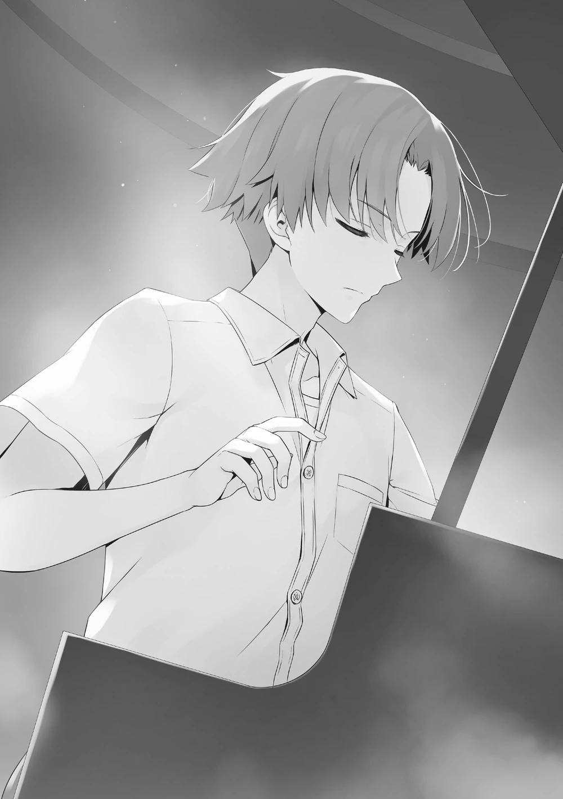
―Director interino Tsukishiro, esto es...
Chabashira-sensei entró en pánico y trató de dar una excusa, pero Tsukishiro la detuvo suavemente.
―Tranquilízate. En este momento fui destituido como director interino. Se decidió que el presidente Sakayanagi sea reincorporado, por lo que ahora soy simplemente una persona común y corriente sin relación alguna. No informaré de esto a la escuela.
―...¿Está bien confiar en usted?
―No hay necesidad de confiar en mí ni nada por el estilo. Sin embargo, desde el momento en que me presenté aquí, Ayanokouji se ha fijado en mí. Si surge una perturbación en los sentimientos de uno, se refleja en su actuación.
Pero tu actuación no se vio perturbada en absoluto... ¿por qué?
―Eso es simple. Aunque pudiera darme un castigo no puede darme una expulsión. La pelea entre usted y yo sólo gira en torno a si me expulsan o no. No tiene sentido reprochar y castigarme por salir sin permiso, ¿verdad?
―Aunque lo hubieras entendido, la reacción habitual al ser visto en un lugar donde uno no desea ser visto es el pánico. ¿Podrías haber sacado ese valor de tu padre?
―Lamentablemente, no tengo recuerdos de haber sido criado.
Cerré la tapa y tomé distancia del piano.
―Mañana no podré volver a hablar contigo. Pensando en eso, pensé en venir una última vez.
Hay muchas cámaras de vigilancia instaladas en el barco. Llegó a comprobar constantemente el pasillo de mi habitación ¿eh? Debe tener algo de tiempo libre.
―Si es mejor que me vaya, me excusaré.
―No, está bien. Sería más inconveniente para Ayanokouji-kun que quedarse a solas conmigo. Como profesora encargada de proteger a sus alumnos, debería quedarse en este lugar.
Tsukishiro se acercó a nosotros y se sentó a dos asientos de Chabashira-sensei.
―¿Ya terminó el concierto?
―Si tiene algo que discutir entonces por favor hágalo rápido.
Como entendí que estaba bromeando, insté a Tsukishiro a hablar más rápido.
―Como no podía hacer daño, vine a negociar una última vez. ¿No te apetece retirarte de la escuela y volver a casa?
―Direc- Tsukishiro-san. ¿Cuál es su motivo?
Al oír la frase de retirarse de la escuela, Chabashira-sensei-sensei se interpuso en el espacio entre él y yo con un ligero enfado.
―¿Qué quieres decir con eso?
―Intervino en un examen especial sin permiso e intentó que expulsaran a Ayanokouji. Hablando con propiedad, esa es una acción que no puedo tolerar.
―Eso va para ti también Chabashira-sensei-sensei. ¿No intentaste hablar conmigo respecto al próximo examen especial debido a tus sentimientos personales?
Los detalles no están claros, pero el propio Tsukishiro parece haber comprendido el objetivo de Chabashira-sensei.
―Efectivamente, no es algo que deba alabarse. Pero no lo hice para darle una ventaja.
―Eso puede ser cierto para ti, pero no puedes demostrarlo. Mi aparición casual aquí evitó la injusticia antes de que pudiera crearse.
―Eso es...
―Y no has cometido ni un solo pecado. ¿Lo entiendes bien?
De momento, el pecado de Chabashira-sensei fue llamar a un estudiante a esta hora cuando se prohíbe salir de la habitación. Incluso suponiendo que esta relación fuera la de un profesor y su alumno, el hecho de ser un hombre y una mujer es un punto que no se puede pasar por alto.
Tsukishiro también podía persistir en esa pequeña brecha.
―A quien le molestaría que hicieras un escándalo no es a mí, Chabashira-sensei, sino a ti. Y también Ayanokouji-kun.
Si se armara un alboroto por obscenidad con un profesor, una advertencia no sería suficiente para solucionarlo. Si lo entiendes entonces no intervengas, advirtió Tsukishiro.
―Kuu...
Habiéndolo olvidado previamente, Chabashira-sensei comprendió la posición en la que se había puesto y dio un paso atrás.
―Está bien.
Sin que su sonrisa flaqueara, Tsukishiro se acercó a mí hasta que la distancia entre nosotros fue de dos metros.
―No tengo nada planeado aquí. Por favor, quédate tranquilo.
―No importa la situación, hará lo que le beneficie. Así es como lo he analizado.
―¿Significa eso que tienes una alta opinión de mí hasta cierto punto?
Hasta ahora, he estado esquivando de alguna manera los planes de Tsukishiro.
Sin embargo, eso fue porque hasta el final, Tsukishiro insistió en planes que no podían ser llamados poco ortodoxos.
Manipulando injustamente los exámenes, con violencia, secuestrando o de otra manera. Ese tipo de cosas. Si se le hubiera pasado por la cabeza a este hombre, probablemente no habría terminado como lo ha hecho.
―No me retiraré.
―Eso es lamentable, pero no hay nada que pueda hacer. Entonces eso significa que permanecerás en esta escuela hasta que te gradúes.
―Tengo la intención de hacerlo. Siempre y cuando me ajuste a las reglas de la escuela y no me expulsen.
―Por mucho que desees permanecer en este mundo, no te lo voy a negar.
Ninguno de los dos lo dijo aquí, pero las sombras de los estudiantes de la Habitación Blanca se esparcen a nuestro alrededor.
―Eres inteligente. Y fuerte. Para los que conocen tu verdadera fuerza, eres lo suficientemente excelente como para que alguien piense eso.
Finalmente, Tsukishiro se puso ante mis ojos.
―Pero por muy excelente que seas, al final eres un niño. Es mejor que entiendas que esa persona me envió teniendo en cuenta esa fuerza tuya.
En otras palabras, ¿ese hombre previó el futuro en el que yo repelería así a Tsukishiro?
―Si quieres vivir tu vida escolar, aunque sea un día más, entonces harías bien en pensar en eso.
―Lo tendré en cuenta.
Tsukishiro soltó una risa superficial. Como si hubiera pensado en algo, se rio solo.
―Pero esta escuela es más interesante de lo que había pensado.
Después de todo, incluso en todo el mundo, esta escuela es la única que puede celebrar el examen especial en la isla deshabitada. Recuerdo cuando era pequeño y estaba absorto en los boy scouts.
Diciendo eso, Tsukishiro extendió su brazo izquierdo frente a mí.
―Esta vez, es un adiós Ayanokouji-kun. ¿Quieres estrechar mi mano?
No podía pensar en la mano izquierda que presentaba como un simple saludo.
Extendí mi mano izquierda de la misma manera y agarré la suya. Tsukishiro asintió, satisfecho.
―Ahora bien, eventualmente, vamos a encontrarnos 『de nuevo.』
Finalmente, me tocó el hombro izquierdo con la palma de la mano izquierda.
Luego se dio la vuelta.
―Aah, y procuren separarse antes de cinco minutos. Si no, los denunciaré.
Chabashira-sensei y yo vimos a Tsukishiro alejarse hasta que ya no pudo ser visto.
―Sería comprensible preocuparse por los pequeños detalles, pero pensar que quería un apretón de manos con ese brazo izquierdo. Tal vez signifique que te guardó hostilidad hasta el final.
Normalmente, un apretón de manos se hace con la mano derecha. Hoy en día la gente no presta atención a ese tipo de cosas, así que puede que no sepan el significado.
―No lo creo.
―¿Qué quieres decir?
Lo que Tsukishiro dijo de repente sobre ser absorbido por los boy scouts.
Normalmente un apretón de manos con la mano izquierda se consideraría una falta de respeto, pero los boy scouts son una excepción. El significado de eso era...
―Por favor, olvídelo. Sería inútil reflexionar sobre los pensamientos de ese hombre.
Aunque ella esperaba el significado, también podría haber sido perfectamente inútil.
―Volveré primero.
―Sí. Está bien.
Ya que fuimos vistos por Tsukishiro, ignorar su advertencia no sería más que un riesgo.
―Lo siento por eso. Como te llamé irresponsablemente, terminé dándole a Tsukishiro un hueco que aprovechó.
―No me importa. No sé muy bien por qué, pero tengo que ver algo.
Mientras me acercaba a la puerta, dejé a Chabashira-sensei con esas palabras sin voltear.
―Usted también lo ha dicho antes. Que esta clase se hunda o nade no es irrelevante para usted. Será mejor que lo comprenda.
No importa qué clase de exámenes especiales les esperen, los estudiantes no tienen más remedio que mirar hacia delante y avanzar. No hay nadie que pueda ponerse al frente y sacarlos adelante más que los profesores.
CUANDO LOS CORAZONES SE TOCAN
Nuestro descanso en el crucero de lujo terminó, y nos subimos a un autobús para regresar a la Preparatoria de Educación Avanzada de Tokio.
A partir de ahí, pasaron los días en la residencia, yendo y viniendo del centro comercial Keyaki. Pasé el tiempo tan distraído que yo mismo podría calificarlo de perezoso y negligente. En ese periodo, el número de personas con las que podía divertirme había aumentado tanto que el número ya no se podía comparar con el del año pasado.
Los miembros del grupo Ayanokouji, los estudiantes como Sudou e Ike con los que me había llevado bien al principio, y fuera de mi clase, Ishizaki y Hiyori, y finalmente hasta charlé con miembros de la clase de Ichinose. Seguían ocurriendo cosas que ni yo mismo, el año pasado, me creería si me lo hubieran contado.
Entonces-
―Aa-aah, así que hasta nuestras vacaciones de verano terminan hoy eh-Kei se sentó en la cama y murmuró abatida mientras miraba al techo. Mi novia Kei y yo revelaríamos nuestra relación a partir del segundo trimestre. Por esa razón, habíamos estado teniendo citas a escondidas. Hoy era la última.
Aunque compartimos momentos ociosos en algunos puntos, nunca fue algo incómodo. Si hubiera sido una escapada entre amigos superficiales, quizá nos hubiéramos puesto nerviosos por tener que decir las cosas, o nos hubiéramos molestado por los sentimientos confusos.
―Puedo hablar de mi relación con Kiyotaka a partir de mañana ¿eh? Estoy un poco nerviosa.
―Tampoco hace falta que te obligues a hablar. No me responsabilizaré ni siquiera si pierdes tu posición.
―Definitivamente hablaré de ello. En el peor de los casos, Kiyotaka me protegerá, así que está bien. ¿Verdad?
Kei lo dijo como si fuera una broma, pero sin duda eran sus verdaderos sentimientos.
Porque al unirse a un anfitrión fuerte, se estaba protegiendo a sí misma.
Terminé mi último sorbo de café y me senté junto a Kei. Apreté su pequeña mano y ella me devolvió el apretón con suavidad. Me miró, avergonzada.
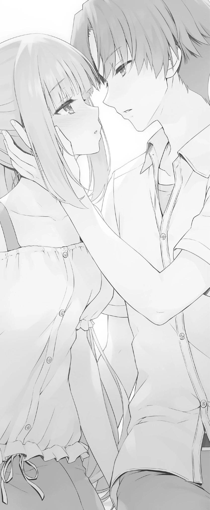
―Kei.
En ese momento, hice que mis labios asfixiaran sus suaves labios.
―Ki-Kiyotaka...
―¿Estás sorprendida?
―S-sí, estoy sorprendida. Dime de un poco antes o algo... ¿puedes?
En réplica, no respondí con palabras, sino con acciones. Agarré suavemente sus hombros y la acerqué.
―¡Mm...!
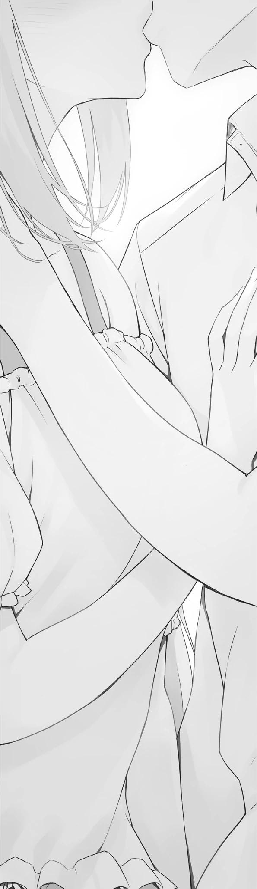
Un segundo beso. En el momento en que nuestros labios se tocaron, los hombros de Kei se levantaron un poco, transmitiendo su sorpresa.
Separé nuestros labios inmediatamente. Como si se hubiera calmado, me miró con ojos reacios a separarse.
―... Fue otro ataque sorpresa.
―¿Es así? Aunque pensé que lo había hecho con relativa normalidad.
No tengo más remedio que estudiar mucho el momento a partir de ahora.
―Al menos, todavía no fui capaz de preparar mi corazón...
―¿Entonces lo preparaste esta vez?
―¿Eh? ...Sí...
Kei asintió y cerró los ojos. Mostró que estaba de acuerdo, así que la besé de nuevo.
Los dos hasta ahora no nos tocamos más que un segundo, pero esta vez fue diferente. Cinco o diez segundos. Fue mucho tiempo.
Entonces movimos nuestros labios poco a poco, picoteándonos repetidamente como pajaritos. En el tiempo que parecía que sólo Kei y yo habíamos parado...
2º de Preparatoria, el último día de las vacaciones de verano. Kei y yo nos besamos y subimos juntos una escalera. La primera mitad del plan de estudios del amor había terminado, y mis pies entraban en la segunda mitad.
A partir de ahora, viviremos nuestra vida escolar como novios con la cabeza bien alta. Por eso, puede que nos metamos en una cantidad no pequeña de problemas.
Pero aun así, unimos nuestras manos y afrontamos nuestras dificultades. Sin prisa pero sin pausa, paso a paso, del verano al otoño, y del otoño al invierno, a medida que las estaciones cambian seguimos adelante.
Como ninguno de nosotros puede prescindir de nuestra relación, nos manchamos cada vez más. Incluso mientras comprobaba el sabor de sus labios una y otra vez, mis pensamientos iban más allá del horizonte por sí mismos.
Cuando finalmente llegamos a la temporada de separaciones, y entramos en la última fase de este amor-Está decidido que ella se enfrentará a una prueba extremadamente difícil.
Después de que Karuizawa Kei se separe de su hospedero, se quedará sola y seguirá adelante.
En cuanto a este programa de amor, es lo más importante.
PALABRAS DEL AUTOR
Hola, soy Kinugusa, y lo he pasado mal con este tiempo de calor.
Me da pavor porque es el presagio de mi estación menos favorita, pero por suerte no me ha afectado tanto debido a la reciente tendencia de autocontrol en casa. Sin embargo, estoy seguro de que los niños y jóvenes quieren jugar al aire libre, así que espero que haya una manera de permitirles hacerlo sin molestar a otras personas. Ahí es donde entra el DIY y otros proyectos prácticos...
Bueno, empecé estas líneas con un inciso sin importancia, pero este fue el volumen 4.5 de las vacaciones de verano.
Hace tiempo que pasaron las vacaciones de verano cuando aún era estudiante...
y sin embargo ni una sola vez he pensado en querer volver atrás en el tiempo y rehacer mis días de escuela. No es que me disgustara mi vida escolar, de hecho la disfrutaba razonablemente, pero simplemente no tengo la paciencia ni la confianza para repetir el ciclo de levantarme temprano por la mañana, estudiar, conseguir un trabajo a tiempo parcial y volver a casa. Después de todo, mi vigor y mi cuerpo han decaído.
Mi vista empeora cada día, y me da miedo siquiera pensar en el aspecto que tendré dentro de otros 10 años... ¡El futuro da miedo!
A diferencia del año pasado, este volumen de vacaciones en crucero de lujo no tiene exámenes especiales.
La relación entre Ayanokouji y Kei, y los cambios en sus compañeros de clase.
Los nuevos estudiantes de primer año, los cambios en Nagumo y los otros estudiantes de tercer año.
Creo que los estudiantes han crecido mucho desde las vacaciones de verano del año pasado.
Y mientras los estudiantes crecen, los adultos que los supervisan también lo hacen...
Ahora bien, esto es un poco un spoiler, pero ¿tenías idea de quiénes eran los estudiantes de la Habitación Blanca?
Sí, lo sabías, ¿verdad? Lo sé, y la historia comienza aquí.
El volumen 5 será el segundo acto del arco del segundo año, y creo que será un gran punto de inflexión.
Señalará el inicio del segundo trimestre y un examen especial para cada grado.
Me sorprendió bastante darme cuenta de que es la primera vez en varios volúmenes que tenemos un examen especial sólo para los alumnos de segundo año, pero espero que disfruten del próximo volumen.
El mundo está pasando por circunstancias muy difíciles ahora, pero hagamos todos lo posible por superarlo.
Pues bien, ¡espero volver a verlos pronto!
HISTORIAS CORTAS
KIRYUUIN FUUKA SS –
CUANDO ERES LA MAYOR
Observé los rayos del sol a través de mis gafas de sol y me hice una con la naturaleza. Cuando era más joven fui en crucero con mis padres, pero nunca desde entonces.
―Pasar unas vacaciones así, simplemente relajándose, no está mal de vez en cuando.
Si tuviera que plantear una queja, sería la cantidad de estudiantes que hay en esta piscina. No obstante, es un problema menor. Vamos a relajarnos durante todo el día, ¿de acuerdo?
Después de recibir la bebida que había pedido, noté un cambio en mi alrededor.
Los estudiantes de tercer año, mis compañeros de clase en otras palabras, cambiaron repentinamente sus expresiones faciales.
Miraban al mismo tiempo hacia la misma dirección mientras conversaban. Eso despertó mi interés y seguí su ejemplo.... y Ayanokouji estaba allí de pie. Daba la impresión de que acababa de llegar a la piscina mientras observaba su entorno.
Pero no parecía haber notado las miradas de los estudiantes de tercer año, su expresión facial no cambió. No, es imposible que no se haya dado cuenta de las miradas tan obvias. Es mejor decir que finge no darse cuenta.
Los de 1er año y los de 2do año no parecían hacer ningún movimiento.
―Ya veo... así que eso es lo que pasa.
Había planeado estar en mi modo OFF hoy, pero extrañamente mi interruptor se encendió.
―Parece que estás en problemas, Ayanokouji.
No pude reprimir más mi curiosidad y lo llamé desde atrás. Se dio cuenta de mi presencia, pero parecía el mismo de siempre.
―¿De qué estás hablando?
Se veía como si se estuviera haciendo el tonto, pero de ninguna manera lo estaba haciendo.
―Estoy hablando de los estudiantes de tercer año. Es imposible que no te hayas fijado en ellos, ¿tengo razón?
―Sin embargo, no estoy muy seguro de lo que estás hablando.
―Aunque no estoy participando, sigo siendo una estudiante de 3er año. Al menos he oído hablar un poco de ello.
―¿Te refieres quizás a las miradas en mi dirección?
―Así que te has dado cuenta.
―Sin embargo, no lo encuentro particularmente molesto. Sólo me observan, eso es todo.
Lo dijo como si no valiera la pena prestarle atención, pero eso es tomarlo demasiado a la ligera. Ya que el Presidente del Consejo Estudiantil está involucrado, eso significa que se están gestando problemas.
Según parece, de alguna manera Nagumo ha empezado a tomar en serio a Ayanokouji. Dios mío, Ayanokouji es realmente un hombre interesante. De hecho, si tuviéramos la misma edad, podría haberlo observado un año más.
Inesperadamente, esos sentimientos comenzaron a formarse dentro de mí.
Así de interesante es este hombre.
KARUIZAWA KEI SS -
UN SUEÑO QUE HE VISTO ANTES
Es el último día de las vacaciones de verano. Es el día en el que todos los estudiantes del país se ponen nostálgicos. Yo estaba, al igual que todos los demás, recordando lo agradable que fue el crucero.
―Oww, así que hoy es el último día de las vacaciones de verano.
Decirlo en voz alta hace que se sienta más real, que las vacaciones de verano realmente terminaron. Aunque me hace sentir melancólica, no significa que no haya habido ningún tipo de ventaja. Podía ver a Kiyotaka cara a cara todos los días y no sólo por teléfono o por chat.
Podíamos estar juntos todo el tiempo, desde la mañana hasta la noche. Si hubiéramos estado en clases diferentes, nos hubiéramos conocido y hubiéramos empezado a salir, seguramente habría sido molesto.
O quizás no, quizás ni siquiera hubiéramos empezado a salir, no sé. Habría sido la misma de siempre, ocultando mi oscuridad dentro de mi corazón mientras seguía poniéndome una máscara falsa.
Realmente... me doy cuenta de lo feliz que soy ahora.
―¿Así que puedo contarle a los demás sobre nuestra relación mañana?...
Creo que me estoy poniendo nerviosa ahora.
Mientras que nuestra relación en sí no cambie, nuestro ambiente puede hacerlo.
―No hay necesidad de contarles si no quieres. No me haré responsable si bajas de posición social ―Dijo, pero no quiero mantener esto en secreto para siempre.
Tengo un novio increíble del que quiero presumir... y lo que es más... Mis sentimientos por él han crecido tanto que ya no puedo callarlo.
―¡Definitivamente se los voy a decir! Si pasa algo, tú me protegerás, ¡así que voy a estar bien! ¿Verdad?
Eso sí, para empezar sólo se lo iba a contar a mis amigas más cercanas. Pero es seguro que se extenderá por toda la escuela como un reguero de pólvora.
Con un matiz de exasperación en su rostro, asintió ante mí.
Luego se sentó a mi lado y me tomó de la mano. Su mano es más grande que la mía, pero sigue siendo bonita y robusta. No muestra ningún signo de aspereza.
Estar tomada por esta mano me hacía sentir tan cómoda y segura. Deseé que pudiéramos quedarnos así para siempre.
―Kei.
De repente oí mi nombre al lado de mi oído. Mi corazón dio un vuelco y me avergoncé.
Que alguien diga mi nombre tan cerca es...
Me enfrenté a Kiyotaka de frente y lo miré a la cara. El rostro de mi amado se acercaba cada vez más a mí. Me tomó por sorpresa. Nuestro segundo beso.
¿O no?... Ya lo había olvidado pero si incluimos ese sueño que vi antes, este fue nuestro tercer... beso.
SATOU MAYA SS -
UNA CHICA MALA, PERO SÓLO UN POQUITO
El juego de la búsqueda del tesoro con Ayanokouji está por terminar. ¿Cómo se le llama? ¿El clímax? Bueno, como sea, significa que el final está cerca.
―¿Podrías abrir la aplicación de la cámara?
Seguí sus indicaciones y encendí su smartphone.
Al mirar la galería de fotos, vi las imágenes de los códigos QR que encontramos hoy junto con algunas otras como pequeños iconos, 15 en total. Mi corazón empezó a latir más rápido pensando en cómo podría mirar a hurtadillas su vida cotidiana.
Pero sólo tenía fotos de comida y paisajes. No tenía ni una sola foto de Kei-chan allí, lo que me hizo feliz.
Soy una chica tan mala...
―¿Cuál deberíamos escanear primero? ―Pregunté.
Puse un freno a mis sentimientos y le mostré un código QR al azar.
―Sólo sigue tus instintos y elige uno que creas que es bueno.
―¿E-eh? ¿Quieres decir que puedo elegir? ¿Qué debo hacer? ¿Y si elijo uno malo?
La idea de recibir una fuerte recompensa se esfumó en ese mismo instante. ¿Y
si fuera mi culpa que sólo acabáramos recibiendo 5.000 puntos? Ni siquiera cubrir la cuota de participación es malo, ¿no?
¿Qué debo hacer? ¿Qué debo hacer? ¡Esta presión es demasiado fuerte!
―Los malos deberían haber sido eliminados ya. Y es posible que todos los códigos ya hayan sido escaneados, así que es posible que sólo tengamos que probarlos todos.
Escuchar eso me hizo sentir aliviada.
―¡Bien!
Me preparé, saqué mi smartphone y abrí la aplicación. Lo siguiente es elegir qué código escanear. Me deslicé por todos ellos para encontrar uno lo más rápido posible.
Hmm, este debería ser el más difícil de encontrar, quizás... ¿El que Ayanokouji-kun encontró detrás de ese sofá? Quizás estaba exagerando un poco, pero mis manos empezaron a temblar mientras apuntaba la cámara del teléfono hacia el código.
Después de escanearlo, la pantalla se volvió repentinamente negra y-.
―Ah, éste no sirve. Dice que ya fue reclamado.
Lo que significa que alguien encontró este código y ya lo escaneó. ¡Y yo que pensaba que nadie lo encontraría!
―No te preocupes, escanea el siguiente.
Conteniendo la frustración, me apresuré a elegir otro. Pero éste también fue reclamado.
―¡Y después de todo lo que hicimos para encontrarlo! Esto es irritante.
Ahora sólo quiero que uno de ellos funcione. Mis patrones de pensamiento dieron un giro de 180 grados, perdiendo el premio gordo.
Este es el tercer intento. Y una vez más, la pantalla se volvió negra. Cuando empecé a preocuparme de nuevo, empezó a aparecer humo en la pantalla, a diferencia de los intentos anteriores.
―¡Funcionó! ¡Mira! ¡Parece un cofre del tesoro!
Una pantalla que te pedía que la tocaras. Esta búsqueda del tesoro era sin duda un juego.
―Me pregunto cuántos puntos contiene...
Estaba muy emocionada y estaba a punto de tocarlo. Pero... ¿Y si éste sólo tenía 5000 puntos?
Mis dedos empezaron a hacerse más pesados mientras mi imaginación construía el peor resultado final.
―¡Hazlo tú, A-Ayanokouji-kun!
Le di los dos smartphones al mismo tiempo. Los recibió sin mostrar ningún tipo de desagrado en su rostro mientras guardaba el suyo en su bolsillo y miraba la pantalla del mío.
Luego, golpeó el cofre del tesoro sin dudarlo.
―¡Wah, eres muy atrevido, Ayanokouji-kun!
La pantalla empezó a parpadear en azul y a cambiar. Lo que apareció en la pantalla fueron unas letras que decían 100 000 puntos.
―¡Ah! ....Ah~
Pensé que tal vez habíamos ganado 1 millón de puntos, pero estaba equivocada.
Había 5 ceros, así que 100 000 puntos. Se parecían, pero eso era todo.
―Al parecer no hemos encontrado un código tan raro.
Hmm, pero no es momento de deprimirse, ¿verdad? Ya que entramos en lo positivo con seguridad.
―Ya veo~... Es una pena. Pero ¿sabes?, aún con la cuota de participación, ganamos 90.000, ¡así que es más que suficiente!
Estaba tan contenta que cuando le miré a la cara, me di cuenta de lo cerca que estábamos. En cierto modo, quise apartar la mirada, pero seguí pensando que era una pequeña bonificación.
―Muchas gracias, Ayanokouji-kun.
Y lo siento mucho Kei-chan. Pero esto es un juego así que no se puede evitar,
¿verdad?
―Yo soy el que tiene que agradecerte. La que encontró este código QR no fue otra más que tú, Satou.
―... Jeje.
Me lo pasé tan bien que acabé pensando que, después de todo, quizá soy una chica mala, aunque sólo un poquito.
NANASE TSUBASA SS -
UNA DEVOLUCIÓN DE FAVORES POR PARTIDA DOBLE
Con un sándwich y un envase de leche en la mano, esperé junto a la caja registradora tratando de calmar mi impaciencia. Eso no se debía a que la cola fuera lenta, ya que hoy no había tantos estudiantes en la tienda a pesar de ser mediodía.
No, la razón es que estaba siguiendo a un estudiante de primer año llamado Kurachi-kun. Él fue a la tienda y compró algo que parecía un almuerzo y fue a pagar, y por lo tanto yo hice lo mismo.
No sé a dónde se dirigía después, pero no se dio cuenta de que lo seguían, ni se dio cuenta de la persona que lo seguía. Así pude ser más proactiva y seguirle de cerca sin que se diera cuenta.
La razón por la que lo seguía es porque cuando usé la función de búsqueda del GPS para averiguar quién era la persona que intentaba atacar a Ayanokouji-senpai, su nombre apareció.
Pero según la hipótesis de Ayanokouji-senpai, era muy probable que Kurachi-kun no hubiera planeado atacarlo de verdad. Pero si investigamos más a fondo, podríamos descubrir a la persona que está detrás de todo esto.
Esa es la razón por la que se lo he ocultado a Senpai. Sin embargo, si la persona a la que estoy siguiendo fuera un oponente formidable, entonces tal vez yo no sería rival para ellos.
Pero aún así...
Aunque tuviera que huir con la cola entre las patas, no me habría importado del todo. Porque si podía dejar al menos algo para Ayanokouji-senpai, habría valido la pena. Una pequeña ventaja seguramente le ayudará a inclinar la balanza y a superar sus pruebas.
Sí, esta es mi decisión.
Saqué mi sándwich y comencé a mezclarme con los estudiantes que almorzaban aquí. Justo antes de morderlo, recordé de repente aquel momento durante el examen de la isla deshabitada.
Cuando Ayanokouji-senpai me dijo que no era necesario abandonar la escuela.
El hecho de dejar que me mimetizara habría sido una decisión fácil y seguramente habría podido llevar una vida escolar divertida.
Pero eso no me gusta.
Seguir a Kurachi-kun me llevó a la cubierta superior, que parecía ser un lugar perfecto para un almuerzo ligero, ya que había una gran cantidad de estudiantes reunidos aquí.
Era como si estuvieran esperando a alguien, ya que miraba inquietos a su alrededor. Me pregunto a quién estará esperando. Naturalmente, podrían ser algunos de sus amigos con los que no tengo ninguna relación...
Tomé un bocado y justo cuando estaba a punto de empezar a masticar-
―Nanase.
Una voz desde atrás me sobresaltó ya que estaba muy concentrada en Kurachi-kun frente a mí. Al reconocerla como la voz de Ayanokouji-senpai, me giré para mirarlo mientras ocultaba mi sorpresa.
"Ah, senfai-".
Empecé a masticar a toda prisa para calmarme. Extrañamente, no pude saborear nada.
―Ah, es mi culpa. ¿Vuelvo más tarde?
Dijo disculpándose, pero de ninguna manera lo haría.
―Por favour, eshpewa unm pocwo.
Seguí masticando más rápido y tragué la comida en mi boca.
―Ehem....err, lo siento, verás, la verdad es.... que estaba comiendo.
No podía decirle el hecho de que estaba siguiendo a Kurachi-kun, ni que lo estaba observando ahora mismo.
―Eh bien, ¿hay algo que quieras de mí?
Perdí de vista a Kurachi-kun por un momento, pero lo soporté por ahora. De todos modos, tenía que terminar esta conversación lo más rápido posible y de forma natural.
―Ah no, parecía que querías decirme algo el otro día. Me lo pregunté un poco. Se estropeó un poco cuando Ninomiya interrumpió, ¿sabes?
Así que es así... eso ciertamente le habría dado curiosidad.
―Ah-
En efecto, estoy siguiendo a Kurachi-kun ahora mismo. Y estaba dudando si consultarle sobre ello ahora o no. Podría decirle simplemente lo que era, que había utilizado la Búsqueda GPS, notificarle sobre Kurachi-kun, y preguntarle qué hacer al respecto.
Esa habría sido sin duda la respuesta correcta, creo.
―Lo siento, es algo de lo que ya me ocupé, así que puedo pedirte que te olvides de ello.
Pero decidí abandonar esa vía. Las palabras que gritaban dentro de mí tal vez habían sido transmitidas a él.
―Siento haberte llamado tan repentinamente. Volveré a entrar entonces.
Hay tanta gente aquí que no puedo relajarme ―Dijo, sin seguir con el tema.
―¿Es así? Hasta luego, Senpai.
No podía retenerlo más aquí, así que lo despedí. Mientras miraba su figura alejándose, me disculpé con él en mi mente.
Lo siento, Ayanokouji-senpai... Ya sabía que debería haberte dicho todo esto por adelantado. Pero como sólo hubieras sido ese amable Senpai, me habrías detenido diciendo que es peligroso.
Por favor, dame algo de tiempo. Trabajaré duro para dejar algunos logros a mi nombre, no importa lo pequeños que sean.
SAKAYANAGI ARISU SS -
LA INESPERADA EVALUACIÓN DE SAKAYANAGI
Me puse de pie al ver que Ayanokouji-kun regresaba al interior del barco, escapando de las miradas de los estudiantes de tercer año. Aparecer aquí tiene que ser una coincidencia creo, pero también por eso fue la oportunidad perfecta para encontrarnos.
Pero antes de abandonar la escena, moví mi atención hacia Nanase Tsubasa.
Había una posibilidad de que hubiera estudiantes de la Habitación Blanca entre los de 1er año, pero parece que puedo eliminarla de la lista. Ayanokouji-kun parece confiar en ella.
O, fufu. Aunque la palabra confianza es exagerada. Teniendo en cuenta el entorno de la Habitación Blanca, es imposible que Ayanokouji-kun tenga algo parecido a esos sentimientos.
Si ella fuera una estudiante de la Habitación Blanca o no, el hecho de dejarla cerca no sería un obstáculo, posiblemente piensa eso. No hay más. Y para obtener información sobre los estudiantes de 1er año, es un hecho que tiene que intimar con uno.
En ese sentido, Nanase-san es una pieza crucial para él. Justo antes de pasar junto a ella, volví a comprobar su figura. Pude ver que no avergonzaba sus altas estadísticas en atletismo en la aplicación OAA con sus tonificados brazos y piernas.
Las partes que representaban su feminidad estaban bien desarrolladas y, según su postura al sentarse, debió de tener una buena educación.
―Quizá por eso los chicos quieren tenerla cerca, más que por sus habilidades.
Entonces eché un vistazo a su almuerzo. Un sándwich y un envase de leche. Es una comida equilibrada, ligera y rápida. Una buena elección.
No se podría pensar que era una estudiante de primer año al ver su cuerpo y lo poco que comía. Como me imaginaba, no sólo tiene talento en la escuela, sino que ha sido bendecida con un cuerpo privilegiado desde su nacimiento.
―Será mejor que atesores esos talentos tuyos.
Aunque muchas quieren ser talentosas, y tener las proporciones del cuerpo de Nanase, para muchas chicas, eso es un deseo que nunca se cumplirá.
.... Mis pensamientos terminaron desviándose en una dirección extraña. No es propio de mí.
―Bueno, entonces persigamos a Ayanokouji-kun.
Basándome en esta situación, podía más o menos adivinar dónde tenía que estar ahora.
Aunque, por alguna improbable razón, lo leyera mal, encontrarlo en este barco no sería tan difícil si simplemente hacía algunas llamadas.
Tenía mi propio tipo de armas.
Para conseguir que Ayanokouji-kun se convierta en mi oponente, al final esto no era más que un pequeño inconveniente.


VISÍTANOS EN NUESTROS
DIFERENTES SITIOS
http://gladheimtranslations.blogspot.mx/
https://twitter.com/GladheimT
https://mastodon.social/@GladheimT
Si alguien desea hacer una donación
https://ko-fi.com/gladheimtranslation
https://www.buymeacoffee.com/gladheimtls
https://patreon.com/GladheimT